| [Ｈ・Ｐ・ラヴクラフト] ラヴクラフト全集6 | |
| Ｈ・Ｐ・ラヴクラフト | |
| (2015) | |
|
ラヴクラフト全集６東京創元社
Ｈ・Ｐ・ラヴクラフト 大瀧啓裕訳
|
THE DREAM QUEST OF UNKNOWN KADATH AND OTHER STORIES
by Howard Phillips Lovecraft(1890-1937)
初版発行１９８９年１１月２４日訳・大瀧啓裕
訳：大瀧啓祐／カバー：ヴァージル・フィンレイ
〈創元推理文庫Ｆ523-06〉
二十世紀最後の怪奇小説作家Ｈ・Ｐ・ラヴクラフト。その全貌を明らかにする待望の全集──本巻には、作者の分身たるランドルフ・カーターを主人公とする一連の作品、および、それと密接に関わる初期のダンセイニ風掌編を収録した。波瀾万丈の冒険小鋭「未知なるカダスを夢に求めて」等全九編は、諸氏の魂を電撃のごとく震憾せずにはおかぬであろう。
怪奇小説の世界に壮麗な大伽藍を築いた鬼才ラヴクラフト。本巻には、作者の分身たるランドルフ・カーターを主人公とする一連の作品、および、それと密接に関わる初期のダンセイニ風掌編を収録し、この稀有な作家の軌跡を明らかにする。猫を愛する読者なら快哉を叫ぶ佳編「ウルタールの猫」、神々の姿を窺わんとする賢者の不適な企てを描く「審神」、巨匠が書き残した最大の冒険小説、古典の伝統をふまえた波瀾万丈の「未知なるカダスを夢に求めて」等、全九編は、諸氏の魂を電撃のごとく震撼するであろう。
目 次
白い帆船 The White Ship(1927)
ウルタールの猫 The Cats of Ulthar(1926)
蕃神 The Other Gods(1938)
セレファイス Celephais(1934)
ランドルフ・カーターの陳述 The Statement of Randolph Carter(1925)
名状しがたいもの The Unnamable(1925)
銀の鍵 The Silver Key(1929)
銀の鍵の門を越えて Through the Gates of the Silver Key(1934)
未知なるカダスを夢に求めて The Dream-Quest of Unknown Kadath(1948)
作品解題 大瀧啓裕
ラヴクラフト全集〈６〉
Ｈ・Ｐ・ラヴクラフト／大瀧啓裕訳
白い帆船 The White Ship
わたしはバザル・エルトンといい、父や祖父の跡をついで、ノース・ポイントの灯台守をしている。灰色の灯台が海岸から遠く離れて建っているところは、ぬらぬらする岩礁であって、潮がひいたときにはあらわれ、潮が満ちたときには姿を消す。一世紀にわたって、七つの海の堂々たるバーク型帆船がこの灯台のそばを通りすぎていった。祖父の時代には航行する船は多く、父の時代になるとその数もへり、いまではあまりにも少なくなっているために、ときとしてこの星最後の人間になったかのごとく、不思議と孤独が感じられるほどである。
昔は白帆の大型帆船が、遠方遙かな海岸からやってきた。暖かい太陽が輝き、甘い香りが風変わりな庭園や華やかな神殿にたゆたう、東方遙かな海岸からである。年老いた船長たちがよく祖父を訪れては、こうしたことを話し、それを祖父が父に伝え、そして東からの風が不気味に吠えたける秋の夜長に、父がわたしに語ってくれた。まだ幼くて不思議の思いでいっぱいだった頃にもらった本で、わたしはこうしたことや、他にも数多くのことを読みふけったものだ。
しかし老人の智恵や書物の知識にもまさって素晴しいのは、大洋にまつわる秘密の伝承である。青、緑、灰色、白、黒と色も変化し、なめらかなこともあれば、小波をたてたり高波をおこしたりする大洋は、決して沈黙をつづけているわけではない。わたしは日がな一日、海をながめ、海に耳をかたむけているので、海のことはよくわかっている。まずもって海は、穏やかな渚や近くの港の平凡かつささやかな話をしてくれただけだったが、歳月を重ねるにつれてさらに好意を寄せて、他のこと、時間と空間のいずれにおいても遙かに遠い、不思議なもののことを話してくれるようになった。ときとして、黄昏どきに、水平線の灰色の靄が分かれて、彼方の光景を見せてくれることもあれば、夜に深い海が澄みきって燐光を放ち、深海のありさまをのぞかせてくれることもある。こうして瞥見したものが、現在の姿でもあり、過去や未来の姿でもあったのは、大洋が山脈よりも古く、〈時〉の記憶や夢をはらんでいるからにほかならない。
満月が空高くにかかるとき、南方から白い帆船がやってきたものだ。南方からしごくなめらかに音もなく、海面をすべるようにやってきた。海が荒れていようと凪いでいようと、追風であろうと逆風であろうと、帆をいっぱいにふくらませ、異様なまでに長い列をつくるオールをリズミカルに操って、常になめらかに音もなくすべるように進んでくるのだ。ある夜、わたしはその甲板に、髭をたくわえローブをまとう男を認めたが、麗しい未知の海岸に向けて船出しないかと、わたしをいざなっているようだった。その後も何度となく満月のもとでその男を目にしたが、いつもわたしを招いていた。
月がひときわ明るく照り輝いている夜に、わたしはついに誘いに応じ、海の上にかかる月光の橋を渡って白い帆船に乗りこんだ。これまでわたしをいざなってくれていた男が、不思議とよくわかる耳に快い言語でわたしを歓迎してくれ、漕ぎ手たちの低く静かな歌声がわきおこるなか、船は海原を滑走し、あの美しい満月の輝きで金色に染まる神秘的な南方へと入っていった。
そして夜が明けてあたりが薔薇色に輝いたとき、わたしが目にした遙かな土地の緑したたる海岸は、晴ばれとして美しく、わたしのいまだ知らざるものだった。海から堂々とそびえたつ台地には新緑の若葉を誇る木々が立ちならび、そこかしこでは風変わりな神殿の列柱や白い屋根がきらめいていた。緑したたる海岸に近づくにつれ、髭をたくわえた男が、その土地、ザルの国のことを話してくれたが、人間に訪れながらも忘れ去られた美の夢や思いがことごとく、ここにとどまっているのだという。そしてふたたび台地に目を転じたとき、まさしく男の言葉に嘘はなく、眼前に広がる景色のなかには、わたしがかつて霧をついて水平線の彼方に見たものや、燐光放つ深海に見たものが数多くあった。わたしの知るどんなものより壮麗な形態や幻想もあれば、世間に知られることなく貧困のうちに世を去った若い詩人たちのヴィジョンもある。しかしザルの草原を踏み歩く者は、二度と故郷の海岸にもどることはないといわれているがため、わたしたちはザルの斜面に足をおろすことはなかった。
白い帆船が神殿の建つザルの台地から音もなく離れたとき、前方遙かな水平線に、大都の尖塔が見え、髭をたくわえた男がわたしにこういった。「これがタラリオンと呼ばれる千の驚異の都で、ここには人間がむなしくきわめようとする神秘のすべてがあるのだ」
そしてわたしは間近に迫った都にふたたび目をむけ、わたしの知っている都や夢に見たことのある都のどれよりも、はるかに壮大であることを知った。神殿の尖塔は頂が見えないほどに空にそそりたち、地平線の遙か彼方にはいかめしい灰色の城壁がのびて、ごくわずかな屋根がのぞいているだけだが、異様かつ不気味なものでありながらも、豪奢な帯状装飾や魅力つきせぬ彫刻に飾られていた。魅惑的でありながらも不快感をかきたてるこの都に入りたくてたまらず、わたしは髭をたくわえた男に、巨大な彫刻門アカリエルのそばにある石造りの埠頭におろしてくれと頼みこんだが、男はわたしの願いをやんわりとしりぞけてこういった。「千の驚異の都タラリオンには、多くの者が入りこみながら、もどってきた者はひとりとしていない。あの都を歩くのはもはや人間ではなくなったものどもと魔物どもばかりで、通りが白いのは、都を支配する妖怪ラティを目にしたものどもの骨が、葬られもせずに散乱しているからなのだ」かくして白い帆船はタラリオンの城壁をあとにして航海をつづけ、南にむかって飛ぶ鳥のあとを追うこと長きの日々にわたったが、鳥のつややかな羽衣は鳥があらわれた空の色によく映えていた。
やがてわたしたちのまえには、ありとあらゆる色の花が咲き乱れてにぎわう美しい海岸があらわれ、内陸部では見渡すかぎり、さわやかな木立やきらめく東屋が真昼の太陽の光を浴びていた。目路のかぎりを越える亭から美しく調和した歌がわきおこり、それにかすかな笑い声がくわわっていれば、興趣つきせぬものがあり、はやる気持にかられるわたしは漕ぎ手たちをせきたてた。髭をたくわえた男は何も語らず、船が百合のならぶ海岸に近づくあいだわたしを見つめているだけだった。突如として、花の咲き乱れる草原と緑したたる林から風が吹き、あるにおいを運んできたために、わたしは震えあがってしまった。風はいよいよ吹きまさり、あたりの大気は疫病に襲われた邑や暴かれた墓地の慄然たる死臭にみなぎった。そして白い帆船が忌わしい海岸からあわただしく離れたとき、髭をたくわえた男がようやく口を開いてこういった。「ここは歓楽かなわぬ土地ズーラなのだ」
かくして白い帆船はまたしても天の鳥を追い、かぐわしい微風が慰撫するように吹く、暖かい恵みの海を渡っていった。日に日を重ね、夜に夜をついで航海がつづくなか、満月の夜には漕ぎ手たちの低く静かな歌声に耳をかたむけたが、その歌声の耳に快いこと、遙かな故郷から船出したあの遠い昔の夜と変わるところがなかった。燦然たる弧を描いて上空で接する水晶の双子岬にまもられる、ソナ＝ニルの港についに投錨したのは、月光を導きにしてのことだった。これは夢幻の土地であり、わたしたちは月光の造りだす黄金の橋を渡って、緑の草木に覆われた岸に上陸した。
ソナ＝ニルの地においては、時間も空間も、苦しみも死も存在せず、ここでわたしは永劫とも思えるときをすごした。木立や牧草地は緑につつまれ、花は色あざやかでかぐわしく、せせらぎは青くさわやかな音をたて、泉は冷たく冴えわたり、神殿や城や邑は堂々として豪奢、それがソナ＝ニルなのだ。美のつきせぬ景観の彼方には、さらに美しい景色がうち広がっていれば、この地に涯というものはない。田園地帯や壮麗な邑の只中を、幸福な民びとが自在に歩きまわり、これら民びとはひとり残らず無傷の優雅さと至純の幸福に恵まれている。永劫とも思えるあいだわたしはその地に住み、古雅な宝塔がさわやかな灌木の木立からのぞいている庭園や、白い遊歩道の両側を繊細な花が飾る花園を、至福に満ちてそぞろ歩いた。なだらかな丘を登ってみれば、その頂からは、うっとりするような愛らしい景観をながめわたすことができ、緑したたる谷間に尖り屋根がひしめく邑や、遙か彼方の地平線にきらめく巨大な邑の金色の円蓋が望めた。そしてわたしは月光のもとで、きらめく海、水晶の岬、そして白い帆船が投錨する静まりかえった港を見た。
人間の記憶を絶したタルプの年のある夜、天の鳥のいざなう姿が満月を背に輪郭を描くのを見るや、わたしの心はにわかにそわつきだした。そして髭をたくわえた男に話しかけ、わたしの新たな熱望を告げ、人間がかつて目にしたことはないものの、誰もが西の玄武岩の柱の彼方に位置すると思っている、遙かなカトゥリアにむけて出帆したいのだといった。これは希望の地であり、そこではわたしたちの知っているものすべての完璧な理想が輝いているのだと、少なくとも人の話は告げている。しかし髭をたくわえた男はわたしにこう告げた。「カトゥリアが存在するといわれるのが、危険な海であることに着意するがよい。ソナ＝ニルには苦しみも死もないが、西の玄武岩の彼方に何があるかを誰が告げられよう」それでもなお、つぎの満月の夜にわたしは白い帆船に乗りこみ、髭をたくわえた男はしぶしぶながらも幸福な港をあとにして、いまだ船の渡ったことのない海を目指した。
天の鳥がまえを飛び、西の玄武岩の柱に導いてくれたが、今度は満月の夜にも漕ぎ手たちは低く静かな歌を口にすることがなかった。わたしはしばしば、まだ見ぬカトゥリアの目もあやな森や宮殿を脳裡に思いうかべ、いかなる新たな歓喜が待ちうけているのだろうかと思ったものだ。こういったことを自分にいい聞かせもした。
「カトゥリアは神々の在所にして、無数の黄金都市が存在するところなのだ。沈香の森や白檀の森、さらにはカモリンのかぐわしい林さえあって、木々のあいだを陽気な鳥たちが甘い歌をさえずりながら飛びまわる。カトゥリアの花咲き乱れる青あおとした山には、朱鷺色の大理石を用いた神殿が建ち、彫刻や彩色のほどこされた栄光の品じなに富み、中庭には冷たい水をたたえた銀水盤の噴水があって、岩窟に発するナルグ河のかぐわしい水がさらさらと音をたてて流れている。そしてカトゥリアの邑は黄金の壁にとりまかれ、通りに敷かれているのも黄金なのだ。こうした邑の庭園には、不思議な蘭や、底を珊瑚や號珀で覆われた池がある。夜には通りや庭園が、三色の亀の甲羅から造られた華やかな角燈で照らされ、歌い手やリュート奏者のもの静かな調べが響き渡る。そしてカトゥリアの邑の家いえはことごとく宮殿であって、聖なる河ナルグの水が流れるかぐわしい運河の上に建てられている。家屋は大理石と斑岩から造られ、きらめく黄金で屋根がふかれていれば、幸福に満ちた神々が遙かな高みからながめやるとき、太陽の光を照り返して、邑の光輝を強めるのである。わけても美しいのは偉大な王ドリエブの宮殿であり、王のことを半神だという者もいれば、神そのものだという者もいる。ドリエブの宮殿は高く、城壁にそびえる小塔は数多い。大広間には大勢の者が集まれるし、ここにはさまざまな時代の記念品がかけられている。そして屋根は純金であって、紅玉と瑠璃の高い柱がこれを支え、神々や英雄たちの彫像が立っているので、遙かな高みにこれを仰ぎ見れば、オリュンポス山もかくあらんと思えるほどである。そして宮殿の床は硝子でできており、その下を巧みに照らされるナルグの水が流れ、美しいカトゥリアの地をおいては知られていない華麗な魚が泳いでいる」
カトゥリアについてわたしはこのようなことを自分にいい聞かせていたが、髭をたくわえた男は常に、ソナ＝ニルが人に知られているのにひきかえ、カトゥリアを目にした者はいないのだといって、ソナ＝ニルの幸福な岸にひきかえすべきだと警告しつづけた。
そして鳥のあとを追ってから三十一日がたち、わたしたちはついに西の玄武岩の柱を目にした。霧につつまれているため、その彼方はおろか、柱の頂すら見ることはかなわない──柱は天にまで届いているのだという者もある。そして髭をたくわえた男がまたしても、ひきかえすよう懇願したが、わたしはとりあわなかった。というのも、玄武岩の柱の彼方の霧のなかから、歌い手とリュート奏者の調べが聞こえ、その調べがソナ＝ニルの最も甘美な歌よりも耳に快く、ほかならぬわたし自身を賛美して、満月のもとで遙かな航海をおこない、夢幻の地に住んだことのあるわたしを褒めたたえているように思えたからだ。かくしてその調べがおこるところへと、白い帆船は西の玄武岩の柱のあいだに入っていった。そして調べがとだえて霧が晴れたとき、わたしたちが目にしたのは、カトゥリアの地ではなく、流れ急な抗いがたい海にほかならず、わたしたちを乗せたバーク型帆船はなすすべもなく未知の目的地へと押し流されていった。まもなくわたしたちの耳は水の落下する轟きを聞きとり、わたしたちの目は前方遙かな水平線に、世界じゅうの海が無の深淵になだれこむ、すさまじい大瀑布の巨大な水煙を見た。と、そのとき、髭をたくわえた男が頬に涙を伝わせながらいった。「わしらは美しいソナ＝ニルの地をはねつけたのだ。ソナ＝ニルを二度と目にすることはないだろう。神々は人間よりも偉大で、勝利をおさめたのだ」そしてわたしは来たるべき激突をまえに目を閉ざし、激流の縁の上で嘲るように青い翼をはためかしている、天の鳥を見ないようにした。
激突のあとには闇が訪れ、人間の悲鳴や人間ではないものの悲鳴が聞こえた。東方から大暴風がおこり、足もとに浮上した濡れた岩にうずくまっているわたしを凍りつかせた。するうちまた激突の音が聞こえ、目を開けたわたしは、永劫の太古にあとにしたあの灯台の見張り台にいることを知った。眼下の闇のなかには、残忍な岩礁に激突した巨大な船のおぼろな輪郭がぼうっとうかんでおり、残骸から目をあげたとき、祖父がこの仕事について以来はじめて灯台の光が消えていることを知った。
そして夜もふけた刻限に塔のなかに入ってみれば、壁にかかる暦はわたしが白い帆船に乗りこんだときのままだった。夜が明けると、塔をおりて岩礁に漂着物を探したが、見つかったのはつぎのものだけだった。すなわち、青空のような色をした見なれない鳥の死体と、波頭や山の雪よりも白い割れた円材である。
そしてその後は大洋ももはやその秘密を語ってはくれず、そのとき以来、満月が空高く輝くことは数えきれないほどだが、白い帆船が南方からあらわれることもついになかった。
ラヴクラフト全集〈６〉
Ｈ・Ｐ・ラヴクラフト／大瀧啓裕訳
ウルタールの猫 The Cats of Ulthar
スカイ河の彼方に位置するウルタールでは、何人も猫を殺してはならないそうだが、暖炉のまえに坐りこんで喉を鳴らしている愛猫に目をむけるなら、まことにさもありなんと首肯できる。それというのも、猫は謎めいた生きものであり、人間には見えない不思議なものに近いからだ。猫はアイギュプトスと呼ばれた太古から流れるナイル河の魂であり、古代エチオピアのメロエやアラビア南部はオフルの忘れ去られた邑の物語をいまに伝えるものである。密林の支配者の血縁であり、蒼枯たる不気味なアフリカの秘密を継承するものでもあるのだ。スフィンクスは遠戚にあたり、猫はスフィンクスの言葉を解するが、スフィンクスよりも齢を重ね、スフィンクスが忘れはてたことをおぼえている。
自由民が猫を殺すことを禁ずるまえ、ウルタールには、近在の猫を罠にかけて殺すのを好む、年老いた小作人とその女房が住んでいた。ふたりが何故このようなことをしたのか、わたしは知らないが、ただ多くの者が猫の夜の鳴き声を嫌い、黄昏どきに猫がしめやかに庭や花壇を駆けぬけるのを不吉とみなすことくらいは承知している。しかし理由が何であるにせよ、この老人と女房は、おのが荒屋近くにあらわれた猫をことごとく、罠にかけて殺すことに喜びをおぼえており、暗くなってから聞こえる物音のなかには、村人の多くによほど尋常ならざる殺し方をしているのだろうと思わせるものがあった。しかし村人たちは老人と女房に面とむかって問いただすことはしなかった。ふたりの皺だらけの顔にいつもうかんでいる表情のせいでもあり、ふたりの荒屋があまりに小さく、見捨てられた庭の奥で枝を広げる樫の陰に、黒ぐろとした姿を潜めているためでもあった。事実、猫を飼っている者はこの奇妙な夫婦を憎むこと激しく、それ以上に夫婦を恐れていたが、残忍な暗殺者として非難することはせず、慈む猫が暗い樫の下の荒屋にまでさまようことのないよう、気をつけるだけのことだった。避けがたい手ぬかりによって猫が姿を消し、暗くなってから異様な物音が聞こえると、飼い主はなすすべもなく嘆くか、このように消えたのが子供たちのひとりではないことを運命の女神に感謝して、みずからを慰めるのだった。というのも、ウルタールの住民は純朴であり、すべての猫がそもそもいずこより来たのかを知らないためである。
ある日、南の土地よりやってきた風変わりな放浪者のキャラヴァンが、ウルタールの玉石敷きの狭い通りに入ってきた。放浪者は髪が黒く、一年に二度ウルタールを通過する他の流浪の民とは異なっていた。市場において、この放浪者たちは占いをおこなって銀貨を得ると、商人たちからきらびやかな数珠玉を購った。これら放浪者の国がいずこなのかを告げられる者とていなかったが、彼らが異様な祈りを好むことや、人間の体に、猫、鷹、牡羊、獅子の頭部を備える奇怪な姿が荷馬車の側面に描かれていることは、誰の目にも明らかだった。そしてキャラヴァンの長がかぶっている頭飾りには、二本の角と、角のあいだに奇異な円盤があった。
この尋常ならざるキャラヴァンには、父も母もなく、小さな黒の仔猫だけをたいせつにする、幼い少年がいた。疫病は少年に辛くあたったが、この柔毛に覆われた小さな生きものを残して、悲しみを和らげてくれたのである。ごく幼い頃には、黒い仔猫の活溌なおどけた振舞に安心感が味わえるものだ。かくして黒い髪の人びとからメネスと呼ばれる少年は、奇妙な絵の描かれた馬車のステップに坐って優美な仔猫と戯れ、泣くことよりも笑みをうかべることのほうが多かった。
放浪者がウルタールに腰を据えて三日目の朝、メネスが仔猫を見つけられず、市場で泣きじゃくっていると、例の老人と女房のことや、夜に聞こえる物音のことを村人たちから教えられた。そしてメネスはこうしたことを聞くと、泣くのをやめて考えこみ、最後に祈りをささげた。太陽にむかって両腕をのばし、村人には理解できない言葉で祈ったのだが、理解しようとさしたる努力もなされなかったのは、村人たちの注意がもっぱら空にむけられて、雲が奇妙な形をとりはじめるのを目にしたためだった。はなはだ異常なことだったが、少年が祈りを口にするや、頭上に影のごとく朦朧とした異様な姿があらわれはじめ、いずれも円盤のついた角を備える、さまざまな要素の組合わさった生物だった。自然は想像力たくましい者を感動させる、かような幻影に満ちているのである。
その夜、放浪者はウルタールを離れ、二度と姿をあらわすことがなかった。そしてウルタールの家長たちは、猫が一匹とて見つからないことに気づき、不安をつのらせた。すべての炉辺から、大きいのも小さいのも、黒いのも、灰色のも、縞のはいったのも、黄色のも、白いのも、猫がことごとく姿を消してしまっていた。市長のクラノン老は、メネスの仔猫が殺された意趣返しに、黒い髪の民がウルタールの猫を連れ去ったのだと言明し、キャラヴァンと少年をののしった。しかし痩身の公証人ニスが、あの老人と女房の猫に対する憎しみは隠れもなく、いよいよ大胆になっているために、疑うべきはあのふたりだといいきった。とはいえ凶まがしい夫婦にあえて苦情を申したてる者もなく、宿屋の主人の幼い息子アタルが、黄昏どきにウルタールのすべての猫があの呪われた庭の木陰に集って、何か前代未聞の動物の儀式をおこなっているかのごとく、二列になって荒屋をとりかこみ、いかめしくも悠然と歩いているのを見たと告げたときでさえ、あの夫婦を問いただす勇気をもつ者はいなかった。村人たちは幼い子供の話をどこまで信じてよいのかわからず、凶悪な夫婦が猫に魔法をかけて殺したのではないかと懸念しながらも、暗く不快な庭の外で出会わないかぎりは、年老いた小作人を譴責することを好まなかった。
かくしてウルタールはやりきれない怒りのうちに眠りにつき、住民が夜明けに目を覚ますや、何ということか、すべての猫が馴染の炉辺にもどっていたのである。大きいのも小さいのも、黒いのも、灰色のも、縞のはいったのも、黄色のも、白いのも、猫はすべてもどってきた。あまつさえ、いつにもまして毛並もつややか、腹をふくらませ、満足げに喉を鳴らしていた。市民たちはこの事件をたがいに話しあい、驚くことひとかたならぬものがあった。クラノン老はまたしても、猫が老夫婦の荒屋から生きてもどった試しはないのだから、猫を連れ去ったのは黒い髪の民だと主張したものだ。しかし誰もが認めることが一つあり、すべての猫が肉を食べず乳を飲まないのは、いかさま奇妙なことだった。そしてその後二日にわたって、ウルタールの毛並つややかな猫たちは、ものうげに食事にふれようともせず、暖炉のそばや日だまりでまどろむばかりだった。
夜になっても木陰の荒屋の窓に灯りが見えないことに、村人たちが気づくようになったのは、ちょうど一週間がすぎてからのことである。そのとき痩身のニスは、猫が姿を消した夜以来、あの老夫婦を目にした者がいないことをもちだした。翌週になって、市長はおのが恐怖を克服し、義務として妙に静まりかえった荒屋を訪れる決心をつけたが、そうするにあたって用心おこたりなく、鍛冶屋のシャンと石工のトゥルを証人として同行させた。そして脆い扉を打ち破るや、三人の目にはいったのは、土間にあるきれいさっぱり肉を失った人間の骸骨二体と、陰になった隅を這いまわる無数の甲虫だった。
その後ウルタールの自由民のあいだにおびただしい噂がとびかった。検視官のザスが最後に痩身の公証人ニスと議論を戦わせ、クラノン、シャン、トゥルは質問責めにあった。宿屋の主人の息子である、幼いアタルさえ、根掘り葉掘り問いつめられ、その褒美として砂糖菓子を与えられた。年老いた小作人とその女房、黒い髪をした放浪者のキャラヴァン、幼いメネスとその黒い仔猫、メネスの祈りとその祈りのあいだに空におこったこと、キャラヴァンが立ち去った夜に猫がなしたこと、そして不快な庭の暗い木陰にある荒屋で見いだされたもの、こういったことについて住民たちはさかんに話しあったものだ。
そして最後に、ウルタールの自由民たちは、ハテグの交易商人が語り、ニルの旅人が議論する、あの驚嘆すべき法律を制定し、ウルタールにおいては何人も猫を殺してはならないとしたのである。
ラヴクラフト全集〈６〉
Ｈ・Ｐ・ラヴクラフト／大瀧啓裕訳
蕃神〈ばんしん〉 The Other Gods
地上で最も高い山の頂に住まう大地の神々は、自分たちを見たと人間が告げることを容赦しない。かつては低い峰に住まっていたが、平原の人間が岩と雪の斜面を登り、神々をますます高い山に追いやって、ついには最後の山頂を残すだけとなったのである。神々はかつて住まいした山峰を去るときには、自分たちの存在を告げる痕跡をことごとくぬぐいさったが、ただ一度だけ、ングラネクと呼ばれる山の岩肌に、おのが似姿を刻みこんで残したという。
しかしいまや、人が足を踏みいれたことのない、凍てつく荒野の未知なるカダスに神々は赴き、押し寄せる人間から逃れるべくさらに高い峰もなければ、断じて人間を近寄らせまいとしている。神々の峻厳すさまじいものになりまさるにつれ、かつて人間に奪われるままになった在所を、人間が訪れることを禁じ、万一訪れることあらば、去ることを禁じたのであった。人間が凍てつく荒野のカダスを知らぬは、ことのよろしきにかなっており、さもなくば無分別にもよじ登ろうとするだろう。
大地の神々はときに懐郷の念に胸を痛めることがあると、静まりかえった夜にかつて住まいした山峰を訪れ、むせび泣きながらも、記憶に残る斜面で往古のように戯れようとする。人は雨と思いつつ、白い雪を戴くスライ山で神々の涙を感じ、レリオンの哀愁こもる夜明けの風に神々の溜息を聞く。神々は雲の船で旅をするのが常のことであり、賢明な小作人たちは伝説を語りついで、もはや神々が往時のごとく慈愛深くはないために、空が曇る夜には特定の高峰に近づくことをしない。
スカイ河の彼方に位置するウルタールには、かつて大地の神々を目にすることに情熱をかたむける老人が住んでいたが、この男は『フサンの謎の七書』を深くきわめ、厳寒の地ロマールの『ナコト写本』にも通じていた。その名を賢人バルザイといい、不思議な月蝕の夜にバルザイがいかにして山に登ったかは、村人たちが語り聞かせてくれる。
バルザイは神々について、その往来を告げられるほどに多くを知り、半ば神とみなされるほどに神々の秘密の多くを察していた。ウルタールの自由民に賢明な助言をなし、猫を殺してはならないとする驚嘆すべき法律を制定させたのもバルザイであれば、バプテスマのヨハネの祭日前夜の真夜中に黒猫たちがどこへ行くかを、若き神官アタルにはじめて教えたのもバルザイであった。バルザイは大地の神々の伝承をきわめ、神々の顔容を目にしたいという欲望をつのらせていた。神々の秘密の知識を多くもっていることで、神々の怒りから身をまもれると思ったため、神々があらわれるはずの夜に、崔蒐たるハテグ＝クラの山頂に登る決意をかためた。ハテグ＝クラは、その名が示すように、ハテグの奥の石の荒野遙かな遠方にあって、沈黙の神殿にそそりたつ岩の彫像のごとくそびえている。山頂のまわりで常に霧が悲しげにたゆたっているのは、霧こそ神々の形見であって、神々はかつての日々にハテグ＝クラに住まっていたとき、これをこよなく愛したからである。大地の神々は雲の船でよくハテグ＝クラを訪れては、山腹を青白い靄でつつみこみ、冴え渡る月影の下、往時をしのんで舞い踊る。ハテグの村人の言によれば、いかなるときでもハテグ＝クラに登るのは良くないことであり、頂上や月が青白い靄につつまれている夜に登るのは命とりになるというが、バルザイは気にとめることもなく、弟子である若い神官アタルをともない、近隣のウルタールよりあらわれたのであった。アタルは宿屋の主人の息子にすぎず、ときに不安にかられることもあったが、古さびた城に住む領主を父にもつバルザイは、俗衆の信じる迷信などうけつけぬ血筋であって、恐れおののく農民たちを笑うばかりだった。
バルザイとアタルは百姓の嘆願にも耳をかさず、ハテグから石の荒野へと入りこみ、夜には篝火をまえにして大地の神々のことを話しあった。多くの日々を費やして旅をつづけるあいだ、悲しげな霧の光輪につつまれる、突兀としたハテグ＝クラが遠くに望めた。十三日目にしてハテグ＝クラの荒涼とした麓にたどりついたとき、アタルが不安を口にした。しかしバルザイは歳の功を重ね、学識をきわめているために、何ら恐れるところもなく、蒼枯たる『ナコト写本』に恐ろしげに記されているサンスの時代以来、人間が絶えて登ったことのない斜面を、先に立って大胆に進みつづけた。
進路は岩場であり、深い裂け目や断崖や落石によって、危険このうえもないものだった。登るにつれて寒さもつのり、あたりは雪に覆われるようになって、バルザイとアタルは何度も足をすべらせ倒れこみながらも、杖と斧を使い道を切りひらいて登りつづけた。ついには大気が希薄になり、空の色も変わって、呼吸するのも困難になったが、なおもふたりは刻苦して登攀をつづけ、眼前に広がる景色に息を呑むこともあれば、月が消えて青白い靄につつみこまれるときに山頂で何が起こるかと思い、胸をときめかせることもあった。三日にわたって登攀をおこない、世界の屋根を目指して高く高く登りつづけたあと、野宿をして月が雲に覆い隠されるのを待った。
四日間というもの雲があらわれることはなく、闃然とした山頂をつつみこむ悲しげな靄をついて、月が冷ややかに照り輝いた。それが五日目の夜になって、おりしも満月の夜だったが、バルザイが北方遙かに濃密な雲のごときものを認め、夜を徹してアタルとともにそれが近づいてくるのを見まもった。濃密にして凛然たる雲の群は、急ぐことなく泰然と前進をつづけ、見まもるふたりの頭上遙かな高みをとりかこみ、月と山頂をふたりの視野からかき消した。ことさら長く思えた一時間、ふたりが仰ぎ見ていると、靄が渦を巻き、雲の帳がいよいよ濃密になりまさり、その動きも活溌なものになっていった。大地の神々の伝承に通じているバルザイは、ある種の音はせぬかと一心に耳をそばだてていたが、アタルは靄の冷気と夜の畏怖をまざまざと感じとり、恐れることはなはだしかった。そしてバルザイがさらに高く登りはじめ、しきりに招いても、長いあいだあとにつづこうとはしなかった。
靄が濃いために困難な登攀となり、ついにアタルもあとを追ったとはいえ、雲に翳らされる月光のなかでは、ぼんやりした頭上の山腹にいる、バルザイの灰色の姿もほとんど見えないありさまだった。バルザイは遙か前方を進んでおり、高齢にもかかわらずアタルよりもやすやすと登攀をおこなっているようで、頑健剛胆な者でもないかぎり負担にすぎるものになりはじめた、山腹の険しさを恐れることもなければ、アタルがかろうじて跳びこえられる黒ぐろとした広い裂け目をまえにしても、立ちどまることもなかった。かくしてふたりは足をすべらせたりよろめいたりしながらも、狂おしく岩壁をよじ登り深淵を渡りつづけ、ときに荒蓼とした氷に閉ざされる先鋒や闃とした花崗岩の広大さ、そして恐ろしいほどの沈黙をまえに、畏怖の念にうたれることがあった。
バルザイが、まこと大地の神々の啓示をうけた者でなければ進むもままならないような、大きく迫り出す恐ろしい崖をよじ登って、アタルの視野から忽然と姿を消した。アタルは遙か下方にいて、その崖に達したときになすべきことを思案していたが、そのとき奇妙にも光が強まっていることに気づき、それはあたかも雲のない山頂と月に照らされる神々の集いの場がすぐそばにあるかのようだった。そして迫り出す崖と照り輝く空を目指してよじ登っていくうち、これまで感じたこともない慄然たる恐怖をおぼえた。するうち、高所の霧を通して、目には見えないバルザイが歓喜もあらわに荒あらしく叫びたてる声が聞こえた。
「神々の声を聞いたぞ。大地の神々がハテグ＝クラでうかれて歌うのを聞いたぞ。大地の神々の声が預言者バルザイの知るところとなったのだ。霧が薄く、月が輝いているゆえ、若かりし頃に愛したハテグ＝クラで神々が踊り狂うさまが見られようて。バルザイはその智恵でもって、いまや大地の神々をもしのぎ、その意にそむく神々の魔力や障壁は無にひとしく、いまこそバルザイは、神々、誇り高き神々、秘密につつまれた神々、人間に見られることを拒否する大地の神々を目にしようぞ」
バルザイに聞こえる声が耳にできなかったとはいえ、アタルはいまや迫り出す崖に近づいて、足がかりはないものかと目をさまよわせた。そのとき、ますます甲高い大きなものになっていく、バルザイの声が聞こえた。
「霧がきわめて薄くなり、月が山腹に影を投げかけるいま、大地の神々の声は高く狂おしいものになり、神々をしのぐ賢人バルザイの訪れを恐れておる......月の光が揺らめくなか、大地の神々は月光を背にうけて舞っており、月光のなかに跳びはね叫ぶ神々の舞う姿を、わしは目にすることになろう......光がおぼろになり、神々は恐れておる......」
バルザイがこうしたことを叫んでいるかたわら、アタルはあたりに幻妙な変化がおこるのを感じたが、それはさながら大地の法則が深遠な法則のもとに屈服しているかのようで、岩壁はさらにきりたったものになっていながらも、上方へむかう進路は恐ろしいほど登りやすく、迫り出す崖にしたところで、ここにたどりついて危険にさらされながら凸状の岩肌を登ってみれば、およそ障害にもならないことがわかった。月の光は異様にも弱まっていたが、アタルが霧をついて登りつづけていると、闇のなかで叫びたてる賢人バルザイの声が耳にはいった。
「月が翳り、神々は夜闇のなかで舞い踊っておる。空には恐怖がある。人間の書物にも大地の神々の書物にも預言されておらぬ蝕が月をおかしておる......おびえあがった神々の悲鳴が笑いに変わり、わしの登っている氷に包まれた岩壁が、果しなく黒ぐろとした天にのびているからには、知られざる魔力がハテグ＝クラにあるのだ......ああ、ああ、ついに。小暗い光のなかに、わしはいまこそ大地の神々を目にしたぞ」
そしてそのとき、アタルはすさまじい急勾配の岩壁を目眩きながら登っていたが、闇のなかにおこる忌わしい笑い声を耳にするとともに、混沌とした悪夢にあらわれる冥界の火の川、プレゲトーン以外では何人も聞いたことのない声、苦悩に苛まれた終生の恐怖と苦悶を、すさまじくも一瞬に集約して響かせる悲鳴を聞いた。
「蕃神だ。蕃神どもだ。弱よわしい大地の神々をまもる外なる地獄の神々だ......目をむけるな......ひきかえすのだ......見るな......見てはならんぞ......これこそ無限の深淵の復讐だ......あの呪われた、あの忌わしい窖が......慈愛深い大地の神々よ、わしは空に落ちていく」
そしてアタルが目を閉じ、耳をふたぎ、未知の高みから恐ろしくもひきよせようとする力にさからい、とびおりようとしたとき、ハテグ＝クラにあの恐るべき雷鳴が轟いて、平原にいる善良な小作人たちをはじめ、ハテグやニルやウルタールの篤実な自由民は眠りを破られ、いかなる書物とて預言したことのないあの異様な月蝕を、雲をついて見あげたのだった。そしてついに月があらわれたときには、アタルは大地の神々も蕃神も目にすることのないまま、雪に覆われた山の斜面に無事におりたっていた。
さて、蒼枯たる『ナコト写本』には、世界が若かりし頃にサンスがハテグ＝クラに登ったとき、ものいわぬ氷と岩をおいて何も見いださなかったと記されている。しかしウルタールとニルとハテグの男たちが恐怖を抑えこみ、日の高いうちにあの霊山に登って賢人バルザイを探したところ、露出した頂上の石に、さしわたし五十キューピットにおよぶ途轍もなく大きな尋常ならざる印が、あたかも巨大な鑿ででもえぐられたかのように刻みこまれているのが発見された。そしてその印は、学者たちが解読あたわざるほどに古い『ナコト写本』の、はなはだ恐ろしい箇所に認めている印に似ていた。そういうものが見つけだされたのである。
賢人バルザイはついに発見されることなく、また神に身をささげたアタルにしても、いくら説きつけられようが、バルザイの魂の安らぎを祈念することとてできなかった。さらに、いまにいたるまで、ウルタールやニルやハテグの住民は月蝕を恐れ、青白い靄が山頂と月を隠す夜には祈りをたやすことがない。そしてハテグ＝クラをつつみこむ霧の上では、大地の神々がときに昔をしのんで舞い踊ることがある。もはや安全であることを知り、未知なるカダスから雲の船に乗って訪れては、大地がまだ新しく人間どもが到達しがたい地に登ろうとはしなかった頃のごとく、往時のやりかたにならって戯れるのを好むからである。
ラヴクラフト全集〈６〉
Ｈ・Ｐ・ラヴクラフト／大瀧啓裕訳
セレファイス Celephais
夢のなかでクラネスは、谷間の都、彼方の海岸、海原を見はるかす雪に覆われた山頂、そして港から出て海と空が出会う遙かな領域を目指す、華麗に彩色されたガレー船を見た。夢のなかでクラネスという名前で知られているのも、目覚めているときには別の名で呼ばれているためだった。新しい名前を夢でつくりだしたのは、おそらくは当然のことであって、家族がすべて世を去り、何百万もの無情な群衆がひしめくロンドンの只中、ひとり孤独に暮す身にあれば、記憶を呼びさますような話をしてくれる者とて、そういるわけもない。金も土地も失ってしまったいま、世人のやり方を気にかけることもなく、夢を見て、その夢を書きとめることを好んだ。こうして書きあげたものを見せて笑われたため、しばらくは誰にも見せずに書きつづけたとはいえ、結局は書くのをやめてしまった。世間から身をひくにつれ、見る夢はいよいよ素晴しいものになっていくばかりなのだから、そうした夢を紙に書きとめようとすることなど、およそむなしい営みだろう。クラネスは当世風の男ではなく、他の作家たちのように考えることをしなかった。他の作家たちが人生から神話という刺繍いりのローブをはぎとり、むきだしの醜さのうちに現実という穢らしいものを示そうとしているのにひきかえ、クラネスは美のみを探し求めたのである。真実や経験では美を顕わすにいたらないと知るや、空想や幻想のなかにこれを探し、ほかならぬつい間近、幼年時代に見た夢や聞いた話の、おぼろな記憶のうちに見いだしたのだった。
幼い頃に見聞きする幻や話のなかに、いかなる驚異があらわれているかを知る者が少ないのは、子供が耳をすましたり夢を見たりするときには、考えることが半ば形をなしていない一方、おとなが記憶をよみがえらせようとするときには、既に人生の毒におかされ心が凡庸鈍感なものになっているからにほかならない。しかしそれでも、魅惑の丘陵や庭園、陽光をあびて歌う噴水、どよもす海を遙かに見はるかす金色の断崖、青銅や石で造られたまどろむ都へとうち広がる平原、そして深い森のはずれを飾りたてた白馬に乗って進む幻めいた英雄たちといった、不思議な幻影を見て夜に目覚める者もいるのだし、われわれはこのようなときに、象牙造りの門をふりかえり、まだ賢しらでも不幸でもなかった頃におのれのものであった、驚異の都をのぞきこんでいたことを知るのである。
クラネスはまったくだしぬけに、幼年時代のおのれの世界を偶然に見つけだした。そのとき見ていた夢というのは、自分の生まれた屋敷にほかならず、十三世代にわたる祖先たちが暮し、クラネスもそこで死にたいと願っていた、蔦にびっしりと覆われる石造りの大きな屋敷だった。月光がふりそそいでおり、クラネスはかぐわしい夏の夜気のなかに忍び足で出ると、庭園を抜け、テラスをくだり、猟園に立ちならぶ樫の大木をあとにして、村に通じる長く白い道を歩いていった。村はたいそう古めかしく見え、欠けはじめた月のごとく、はずれのあたりが虫食まれているため、小さな家屋の尖り屋根のかくまっているのが、眠りと死のいずれなのかとクラネスはいぶかった。通りには長い草が槍のように生い茂り、両側に建つ家いえの窓ガラスは、いずれも割れているか、おぼろに曇っていた。クラネスはたたずむこともせず、何らかの目的地に呼びだされているかのように歩みつづけた。目覚めているときの衝動や切望のように、いかなる目的地にも通じることのない、むなしい幻影になりはてはしないかとあやぶむあまり、呼びかけにそむく勇気とてなかった。するうち村の通りからはずれ、海峡を見おろす断崖にむかう小道にひきよせられて、大地の果にまで達した──そこには村と大地がことごとく忽然と、何の音もひびかせぬ涯しない虚無に落ちこむ絶壁と深淵があり、前方の空さえも虚ろで、はかなく消えやらんとする月や、かすかにきらめく星たちに照らされることもなかった。信念の力に駆りたてられるまま、クラネスは絶壁を越えて深淵に身を投じ、下へ下へとくだり、黒ぐろとして形とてないまだ見ぬ夢、かつて一部を見た夢なのかもしれないあえかに輝く領域、世界じゅうの夢見る者を嘲っているような有翼の嗤笑するものどもを、いくつもあとにしていった。やがて前方の闇に裂け目ができたかと思うや、谷間の都が遙か眼下に燦然ときらめき、海と空を背景に、雪を戴く山が岸近くにそびえているのを見た。
クラネスは都を目にしたとたん、目を覚ましてしまったが、つかのま瞥見したことから、その都がタナール丘陵の彼方のオオス＝ナルガイの谷にある、セレファイスにほかならないことを知った。遠い過去のある夏の午後、乳母から逃げだし、村の近くの崖から雲をながめているうちに、暖かい海の微風をうけて眠りこんでしまった、あの永遠とも思える一時間、クラネスの魂はその都で暮したことがある。見つかって起こされ、屋敷に連れ帰られたときに、クラネスが抗議の声をあげたのは、海と空が出会う魅惑の土地へとむかう金色のガレー船に乗り、いましも出帆しようとしていたときに、目覚めさせられたためだった。そしていま、四十年におよぶ倦み疲れる歳月を経て、ついに瑰麗な都を見いだしたために、目覚めてしまったことを当時と同じように悔んだ。
しかし三日後の夜、クラネスはふたたびセレファイスに行った。先のときと同様、眠っているものやら死にたえているものやら知れない村を、まず夢に見たあと、音もなく深淵をくだりおりたにちがいなく、ふたたび裂け目があらわれると、都のきらめく光塔を望み、港に投錨して紺碧の波に身をまかせる優美なガレー船を目にし、さわやかな海風をうけて揺れるアラン山の銀杏をながめた。しかし今度は夢をたちきられることもなく、翼をもつもののように草むす丘の斜面にゆっくりとおりていき、ついに芝生の上に軽やかに足がついた。オオス＝ナルガイの谷、瑰麗なセレファイスの都に、まさしくもどったのである。
クラネスはかぐわしい草と色あざやかな花に覆われた斜面をくだり、遙かな昔に自分の名前を刻みこんだことのある、さらさらと流れるナラクサ川にかかる小さな木製の橋を渡ると、そよめく木立を抜け、都の大門近くにある大きな石橋にさしかかった。すべてはかつてのときと同じで、大理石の壁も色あせてはおらず、壁の上に立ちならぶ磨きぬかれた青銅の彫像もくすんではいなかった。そしてクラネスは、城壁に立つ歩哨さえも同じで、記憶にあるとおりに若わかしいため、自分の知っているものが消えうせはせぬかと、不安に身を震わせる必要がないことを知った。都に入り、青銅の門を次つぎにくぐりぬけ、縞瑪瑙の敷かれた通りをいくつも進んでいくと、商人や駱駝ひきはクラネスが都を離れたことがなかったかのように挨拶をしてくれ、ナス＝ホルタースのトルコ石の神殿でも事情は変わらず、神殿では蘭の花冠を戴く神官たちが、オオス＝ナルガイには時が存在せず、永遠の若さがあるだけだと教えてくれた。そのあとクラネスは円柱通りを抜けて、交易商人や船員、海と空が出会う領域からやってきた風変わりな者たちの集う、海に面する城壁にむかった。そこでは長くたたずみ、燦然たる港のむこうに目をむけ、未知の太陽のもとで波がきらめいているさまや、海原をへだてた遙かな土地のガレー船が軽やかに進んでいるさまをながめやった。そして岸辺から堂々とそびえたつアラン山にも目をむけて、揺れる木々によって緑したたる麓の斜面や、天にも届く白い山頂をあおぎ見た。
不思議な話を数多く聞いたことのある遙かな土地へと、ガレー船に乗りこんで出かけたいと願う気持は以前にもまして強く、遠い昔に乗船を承諾してくれた船長をふたたび探した。その船長アシブは、以前と同じく、香料のはいった箱に腰をおろしており、あれからどれほどの月日が流れたかも知らないふうだった。やがてふたりは小船をこいで、港に停泊するガレー船に乗りこむと、漕ぎ手に命令をくだし、空に通じる波打つセレネル海へと出帆した。うねる海原を数日のあいだすべるように進みつづけるうち、海と空が出会う水平線にまで達した。ガレー船はとどまることをせず、薔薇色に染まるふわふわした雲のうかぶ青空へ、いともやすやすと浮かびあがった。そして龍骨の遙か下には、見知らぬ土地や川、美しさこのうえもない都がいくつも、決して薄れることも消えいることもないように思える陽光を浴びて、ものうげに広がっているさまを見ることができた。旅が終わりに近づいていること、まもなく西風が空に流れこむ、あの天上の海岸に築かれた、朱鷺色の大理石を用いた雲の都セラニアンの港に入ることを、ついにアシブがクラネスに告げたが、彫刻のほどこされた最も高い塔が目にはいったとき、空のどこかで音がして、クラネスはロンドンの屋根裏部屋で目を覚ましたのだった。
クラネスはその後数ヵ月にわたって、瑰麗な都セレファイスと空にむかうガレー船をむなしく探し求め、夢が数多くの目もあやな前代未聞の土地に誘ってくれたとはいえ、タナール丘陵彼方のオオス＝ナルガイを見つける手立を教えてくれるような者は、誰ひとりとしていなかった。ある夜、黒ぐろとした山脈の上を飛び、かなりの距離をおいてわびしく点在するほのかな篝火や、先頭のものが鈴を鳴らす毛深い異様な群を目にしたあと、ほとんど人が訪れることもないほど遠方にある、この丘陵地帯の最も荒涼とした領域に入りこんだとき、尾根や谷に沿って稲妻のようにのびる途轍もなく古ぶるしい、壁もしくは街道めいたものを見いだしたが、人間が造ったとは思えないほどに巨大なものであり、いずれの端も見えないほどの長さがあった。灰色の夜明けどきに、クラネスはその壁を越え、古風な趣の庭園や桜の木々のある土地にたどりついたが、太陽が昇るや、紅白の花、緑したたる群葉と芝生、白い小道、きらめく小川、青い水をたたえた小さな湖、彫刻のほどこされた橋、赤い屋根の宝塔が目にはいり、そのあまりの美しさに至純の歓喜がわきあがるまま、つかのまのことを忘れてしまったほどだった。しかしふたたび思いだすと、この土地の住民にセレファイスのことをたずねようと、白い小道を歩いて赤い屋根の宝塔にむかったが、めぐりあったのは鳥と蜂と蝶だけだった。別の夜には、石造りのじめじめした螺旋階段をはてしなく登り、満月に照らされる広大な平原と河を見はるかす塔の窓に達し、河の土手から広がる沈黙の都をながめて、以前知っていた特徴というか配置があるような気がした。そして螺旋階段をくだってオオス＝ナルガイへの道をたずねようと思ったとき、地平線の彼方のどこか遠隔の地より、恐ろしいオーロラがあらわれ音をたてて乱舞し、都の廃墟と化した古ぶるしさ、葦の生い茂った河の澱み、その土地をつつみこむ死を露にして、カイナラトホリス王が征服地より帰国して神々の復讐を目のあたりにしたとき以来、死がたれこめていることを示したのだった。
かくしてクラネスは、瑰麗なセレファイスと、天空のセラニアンにむかうガレー船をむなしく探し求める一方、数多くの驚異を目にしつづけ、一度などは、凍てつく荒野のレン高原にある有史前の石造りの修道院にひとりきりで住み、黄色い絹の覆面で顔を覆う、口にするのもはばかれる大神官から、かろうじて逃げだしたこともあった。さるほどに、夜を中断する荒蓼とした昼間が耐えがたくなり、眠りの時間を増すために麻薬を買いはじめるようになった。大麻が大いに役立ち、形態というものが存在せず、輝く気体が存在の秘密を研究する宇宙の領域へと送りこんでくれたこともあった。そして菫色の気体から、宇宙のこの領域が無限と呼ばれているものの外にあることを教えられた。その気体はそれまで惑星や有機体というようなもののことを耳にしたこともなく、クラネスを単に、物質やエネルギーや重力が存在する無限の世界から来た者として見きわめただけだった。いまやクラネスは光塔の林立するセレファイスにもどりたくてたまらず、麻薬の量を増していったが、ついには金もつきはて、麻薬を買うこともできなくなった。やがてある夏の日、屋根裏部屋から出ると、あてもなく通りをさまよい歩き、いつのまにか橋を渡って、家並もまばらになりゆく箇所に足を踏みいれた。そしてそこで願望はみたされ、クラネスを永遠にセレファイスに連れもどすべく、彼の地より訪れた騎士の行列に出会ったのであった。
騎士たちは葦毛の馬に乗り、輝く鎧と奇妙に飾りたてられた金襴の陣中着に身をつつみ、凛々しく堂々としていた。その数おびただしいものであったため、クラネスはあやうく軍隊と見あやまりかけたほどだが、そのクラネスに敬意を表して騎士たちが派遣されたことを、騎士団の統率者から伝えられた。まことクラネスこそ、夢のなかでオオス＝ナルガイを創造した者であり、それゆえに、いまや永久にオオス＝ナルガイの主神となるべく定められたからである。やがてクラネスが一頭の馬を与えられ、行列の先頭に立たせられるや、一行はロンドン南部のサリー州のくだり斜面を威風凛然と押し進み、クラネスとその祖先たちの生まれた地域を目指しつづけた。いかさま不思議なことだが、騎士たちが進むに連れて、〈時〉を襲歩でさかのぼっていくように思えたのは、黄昏の村を通り抜けるときはいつも、チョーサー以前の人びとが目にしたような家屋や集落が目にはいるばかりで、ときにはささやかな従者をしたがえて馬に乗る騎士の姿が目にとまることもあったからだ。暗くなると、進む速度はさらに増し、まもなく摩訶不思議にも宙を飛んでいるかのようにまでなった。ほの暗い夜明けに到着したのは、クラネスが幼年時代には息づいているのを、夢のなかでは眠っているか死んでいるものとして見たことのある村だった。いまは息づいており、馬に乗った騎士たちが蹄の音も高らかに通りを駆け抜け、夢の深淵に達する小道に入っていくのを、早ばやとおきた村人たちが礼儀正しく見送っていた。以前にその深淵に入ったのは夜だけのことであったため、クラネスは昼間はどんなふうに見えるのだろうと思い、行列が断崖の縁に近づくにつれ一心に目をこらした。一行が登り坂を断崖にむかって駆け登ったとき、東のどこかから、くらめくばかりの金色の光がさして、すべての景観を燦然と輝く光の襞のなかにつつみこんだ。いまや深淵は薔薇色と紺碧の輝きに満ちた沸きかえる混沌となり、目に見えない者たちの声が歓喜もあらわに歌うなか、クラネスに付きそう騎士の一行は断崖の縁を越え、きらめく雲と銀色の光彩をついて優美に舞いおりていった。はてしなく降下はつづき、騎士を乗せた馬たちは金色の砂の上を疾走しているかのごとくエーテルを掻き、やがて輝く靄が散開して露になったものこそ、さらに壮麗な空間、瑰麗な都セレファイス、彼方の海岸、海原を見はるかす雪に覆われた山頂、そして港から出て海と空が出会う遙かな領域を目指す、華麗に彩色されたガレー船だった。
そしてクラネスはそれ以来、オオス＝ナルガイとその近隣の夢の領域すべてを支配し、セレファイスおよび雲で造られたセラニアンで交互に政務をとりおこなった。いまも支配をつづけ、その治世はいつまでも幸福につづくだろうが、インスマスの断崖の下では、夜明けに半ば無人の村からよろめき出て落下した浮浪者の死体を、海峡の波が嘲るごとくにもてあそび、さんざ愚弄したあげく、醜いまでに肥えふとった、とりわけ鼻もちならない成金の醸造業者が、断絶した貴族の地所を札びらにものをいわせて買いとってたのしんでいる、蔦にびっしりと覆われたトレヴァー・タワーズ近くの岩場に打ちあげたのだった。
ラヴクラフト全集〈６〉
Ｈ・Ｐ・ラヴクラフト／大瀧啓裕訳
ランドルフ・カーターの陳述 The Statement of Randolph Carter
みなさん、繰返して申しあげますが、あなたがたの尋問は無益なものであります。お望みなら、わたしをここにいつまでも拘留されればよろしいし、みなさんが正義と呼ぶ幻影の怒りを和らげるために、どうあっても犠牲者が必要なら、わたしを監禁なさるも処刑なさるもいといませんが、わたしには既に申しあげた以上にお話しすることはできません。思いだせることはすべて、まったくありのままにお伝えしました。事実をゆがめることも隠しだてをすることもしておりませんので、もしも曖昧なところがあるのなら、それはひとえにわたしの心にのしかかる暗影──その暗影とそれをもたらすにいたった恐怖の模糊とした性質──のせいにほかなりません。
いま一度申しあげますが、ハーリイ・ウォーランがどうなったかについて、わたしは何ら知るところがなく、もしもこの世に恵みというものがあるのなら、ハーリイ・ウォーランが安らかな忘却のうちにあると思います──そう願いたいのです。確かにわたしは五年まえよりハーリイ・ウォーランと親密な交友を結び、未知のものに対する恐ろしい調査を一部ともにおこなってまいりました。記憶が不確かで不明瞭なものではあれ、あなたがたの召喚されたこの証人が目撃したと証言するごとく、わたしたちがふたり連れだって、あの凶まがしい夜の十一時半に、ゲインズヴィル街道をビッグ・サイプラス沼にむかっていたことは、わたしとしても否定するつもりはありません。わたしたちが電池式の角燈、踏鋤、それに付属機器とともにワイアーの束をもっていたことは、断言してもよろしいでしょう。わたしのわななく記憶に焼きついて残っている一つの空恐ろしい情景に、これらのものがあまさずかかわっているのですから。しかしそのあとにつづいたことや、翌朝わたしが沼の畔でひとり呆然としているところを発見された理由につきましては、みなさんに何度もお話ししたこと以外には、まったく何も知らないのだというしかありません。沼のなかにもその近くにも、そんな恐ろしい事件の背景をつくりだせるものなど何もないと、みなさんはおっしゃる。わたしは自分が見たもの以外は何も知らないのだとお答えします。幻覚にせよ悪夢にせよ──切にそうあることを願うのですが──わたしたちが人目につかなくなってからの慄然たる時間におこったことのうち、わたしの心に残っているものがすべてなのです。そしてハーリイ・ウォーランがもどらなかったわけは、ハーリイ・ウォーラン本人かその幽霊──あるいはわたしには表現しようもない何か名状しがたいもの──以外には、告げることなどできるはずもありません。
既に申しあげましたように、ハーリイ・ウォーランの異様な研究はわたしもよく心得ており、ある程度まではともにおこなっておりました。禁断の事象をあつかう不思議な稀覯書からなる、ハーリイ・ウォーランの膨大な蔵書のうち、わたしに読める言語で記されたものには残らず目を通しておりますが、わたしの理解をこえる言語で著されたものにくらべれば、ほんのひと握りにしかすぎません。大半はアラビア語が使われているらしく、悪鬼の啓示によって生みだされ、破滅をもたらすことになった書物──ハーリイ・ウォーランがポケットにいれてこの世の外にもちさった書物──は、わたしがかつて見たこともない文字で記されておりました。ウォーランはその書物に何が記されているかを教えてはくれなかったのです。わたしたちのおこなっていた研究の性質については──わたしにはもはやはっきり理解した記憶がないと、いま一度申しあげねばならないのでしょうか。そうであることがむしろありがたいことのように思えるのは、真に意にそむものであったというより、不本意ながらも魅いられるようになった、恐ろしい研究だったからです。ウォーランには常に圧倒され、こわくなったこともありました。悍ましい出来事がおこるまえの夜、何故ある種の死体が腐敗することなく、千年ものあいだ墓で健やかに肥えふとって眠っているのか、その理由についてよどみなく持論を展開するウォーランの顔にうかぶ表情を見て、どれほど総身が震えたかはよくおぼえております。しかしどうやらウォーランは、わたしの思いもよらない恐怖を知っていたようですので、いまではウォーランを恐れてはおりません。いまはウォーランの安否を気づかうばかりです。
また繰返して申しあげますが、あの夜の目的について、具体的なことは何ら知るところがありません。確かにウォーランが携えていった書物の内容──一ヵ月まえにインドからウォーランのもとに届いた解読不能の文字で記された書物の内容──と、大いに関係があったはずですが、何を見いだすつもりだったかは、誓ってわたしは知らないのです。みなさんが召喚された証人は、わたしたちが十一時半にゲインズヴィル街道をビッグ・サイプラス沼にむかって歩いていたのを見たと証言なさっています。おそらくそのとおりでしょうが、わたしにははっきりした記憶がありません。わたしの心に焼きついているのは、ただ一つの情景だけですし、色を失いつつある三日月が霧で曇った空高くにかかっていましたから、時刻は真夜中をかなりすぎていたにちがいないでしょう。
場所は古さびた墓地で、あまりの古めかしさに、悠久の歳月をしのばせる徴を数多く目にして震えあがったほどでした。じめじめした深い窪地にあって、のび放題の草や苔、地面に這い広がる奇妙な雑草が繁茂し、気まぐれな空想から愚かにも朽ちはてる石を連想する、そこはかとない悪臭に満ちておりました。顧みられず老朽の一途をたどる微候がいたるところにあるばかりに、ウォーランとわたしが幾世紀も閲した死の沈黙に入りこんだはじめての人間ではないかと、ついそうした考えが心にとり憑くようになったほどです。窪地をかこむ山の上では、未知の地下埋葬所から発散するような不快な蒸気のなかに、色を失いつつある三日月が姿を見せ、その弱よわしい揺らめく光で、古ぶるしい平石、壺形装飾、記念碑、霊廟の正面などが、胸の悪くなるほどおびただしくならんでいるのを、しかと見とどけることができましたが、すべてが毀れて苔に覆われ、湿気による染みをつくり、有害な植物が猛だけしくはびこって一部が隠されておりました。
この慄然たる埋葬地に足を踏みいれて、わたしが最初におぼえたなまなましい印象は、ウォーランとともに半ば碑銘の磨耗した墓のまえで足をとめ、持参したものらしいいくつかの荷物を投げすてた行為にかかわるものです。いまにして思えば、わたしが電池式の角燈と二本の踏鋤を運ぶ一方、わたしの連れは同じような角燈と携帯用の電話送話機を携えていたのでした。その場所のことも、これからなすべきことも心得ていたようで、言葉がかわされることはいっさいなく、わたしたちはすぐに踏鋤を手にすると、古めかしい墓の平石を覆う雑草や土をとりのぞきはじめたのです。表面をすべてあらわにすると、三枚の大きな御影石の平石から構成されていることがわかり、わたしたちはすこしあとずさって納骨所の様子を調べましたが、ウォーランは何か頭のなかで計算でもしているように見うけられました。やがてウォーランが墓にもどり、踏鋤を挺子のように使って、かつては墓碑だったかもしれない石の残骸に一番近い平石をこじあけようとしました。その試みはうまくいかず、そばに来て手伝うようにとわたしをうながしたのです。ようやくふたりの力をあわせることで石がゆるみますと、そのままこじあけて片側へ押し倒しました。
平石を一つとりのぞいたことで黒ぐろとした開口部があらわれ、そこからどっと押し寄せる瘴気めいたガスは鼻もちならないもので、わたしたちは愕然としてあとずさったほどです。しかしすこししてまた窖に近づいてみますと、噴出物がかろうじて耐えられる程度におさまっていることがわかりました。角燈の光であらわになったのは、一連の石段の上部で、何か大地内部の忌わしい膿漿めいたもので濡れており、硝石のこびりつくじっとりした壁にかこまれておりました。いまはじめて、口にされた言葉をとどめる記憶がよみがえっていますが、そのときついにウォーランが、あの穏やかなテナーの声、蕭然たる状況のなかにあってもことのほか落ちついた声で、わたしに話しかけたのでした。
「すまないが、きみにはここに残ってもらわなきゃならないな」ウォーランはそう申しました。「きみのようなやわな神経の持主をこの下へおろすのは、犯罪になるだろうからね。ぼくがこれから見たりやったりすることは、きみがこれまでに読んだりぼくから聞かされたりしたことくらいでは、想像することすらできないものなんだよ。カーター、こいつは凶まがしい行為なんだから、およそ感受性のない冷徹な者でないかぎりは、最後まで見とどけて正気のままもどってくることはできないだろうな。きみの気分を害したくはないし、ぼくとしてもよろこんできみを連れていきたい気持は山やまなんだが、ある意味で責任はぼくにあるんだから、きみのような神経質な者を、死か狂気が待ちかまえているかもしれないところへ、ひきこむようなことなどできはしない。いっておくが、実際にどういうものなのかは、きみにはまったく想像もつかないよ。しかしぼくの行動は電話で逐一知らせることを約束しよう──大地の中心まで行ってもどってこられるだけのワイアーがあるからね」
冷ややかに口にされた言葉は記憶のなかにまだなまなましく残っておりますし、わたしが抗議したことはいまでも思いだすことができます。どうやらわたしは連れに同行して、墓の底までおりたくてたまらなかったようですが、ウォーランが断固として決心をひるがえさないことがわかっただけでした。一度などは、わたしが頑固にいいつづけるなら、この探検は断念するといっておどしをかけたほどで、ウォーランだけがこの企ての鍵を握っていましたから、これには効き目がありました。こうしたことのすべてはいまでも思いだすことができますが、わたしたちがどのようなものを探していたかとなると、わたしにはもはや知るすべもありません。わたしが不本意ながらウォーランの計画に同意しますと、ウォーランはワイアーを巻いたものをとりあげて、機器を調整しました。ウォーランにうながされ、わたしは電話送話機を一台もって、あばかれたばかりの開口部に近い、年古りて褪色した墓石の上に坐りこみました。やがてウォーランがわたしと握手をかわし、輪にしたワイアーを肩にかけ、名状しがたい墓穴のなかへと姿を消してしまったのです。
しばらくのあいだはウォーランのもつ角燈の光が見え、ウォーランがワイアーをのばしていく音が聞こえましたが、石造りの階段で曲がり角にでもでくわしたかのように、まもなく不意に輝きが消え、ほとんど時をおかずして、音も聞こえなくなりました。わたしはひとりきりになったわけですが、色を失いつつあるあの三日月の仇な光のもと、絶縁された表面の緑色も目にしるくのびている魔法の糸でもって、未知の深淵に縛りつけられていたのです。
年古りて荒蓼としたあの死者の都の蕭然たる沈黙につつまれていますと、わたしの心のなかにはこのうえもなく凶まがしい幻想や幻影がうかび、グロテスクな霊廟や記念碑が──半ば知覚力をもった──慄然たる人格をおびているように思えるほどでした。明確な形をもたない影が、雑草の繁茂する窪地のことに暗い箇所に潜み、何か冒涜的な儀式めいた行列をつくり、丘の斜面で朽ちはてる墓石をこえて飛んでいるようで、その影は断じて青白い月の投げかけるものではありませんでした。わたしは角燈の光を使ってたえず腕時計に目をむけ、不安に心虫食まれながらも受話器に耳をこらしていましたが、十五分以上というもの何も聞こえませんでした。するうち電話機からカチッという音がかすかに聞こえましたので、はりつめた声で友人に呼びかけてみました。不安のあまり神経をはりつめていたわたしでしたが、あの不気味な窖から、ハーリイ・ウォーランがいつになくおびえた震え声で伝えた言葉に対しては、心がまえとてできていませんでした。ほんのしばらくまえに平然とわたしのまえから去ったウォーランが、震える囁き声で地底から呼びかけたのですから、その不吉さたるや、大声で発せられる悲鳴をしのぐものがありました。
「何ということだ。ぼくがいま見ているものが、きみにも見えるなら」
わたしは返事をすることもできませんでした。ものもいえず、ただ待ちつづけることしかできなかったのです。やがてまた狂乱した声が、
「カーター、恐ろしいよ──途方もない──信じられない」
今度はわたしも声がだせ、興奮するまま送話口に質問をあびせかけました。怖気立ちながら、こう繰返しつづけたのです。「ウォーラン、どうしたんだ。何があるんだ」
また友人の声が聞こえましたが、あいかわらず恐怖のあまりかすれているとはいえ、今度は絶望感のこもっているのがありありと感じられました。
「きみにいえるものか、カーター。まったく考えもおよばないものなんだからな。とてもきみにはいえない──こんなものを知って生きていける者などいるはずもない──何ということだ。これほどだとは夢にも思わなかった」
相手はまた黙りこくり、わたしが震え声で口走る支離滅裂な質問が聞こえるだけでした。やがてウォーランの声がさらに狼狽した調子で、
「カーター、お願いだから、できるなら平石をもとにもどして、ここから出るんだ。すぐにだぞ──ほかのものはかまわず、ここを離れろ──そうするしかないんだ。いわれたようにして、あれこれたずねないでくれ」
そうした言葉を聞きましたが、わたしには狂乱した質問を繰返すことしかできませんでした。墓石と闇と影にとり巻かれ、足もとには人間の想像もおよばない危険が潜んでいたのです。しかし友人はわたしよりも由々しい危険にさらされておりますし、わたしは恐怖にわななきながらも、ウォーランがわたしのことを、こんなときに友を見すてられる者だとみなしたことで、ぼんやりした憤りを感じました。またカチッという音がして、ほどなくウォーランの痛ましい絶叫が、
「失せろ。頼むから、平石をもとにもどして、ずらかってくれ、カーター」
震えあがっているにちがいない友人が子供じみた言葉づかいをしたことで、わたしはいささか自分をとりもどしました。そして決心をかためて叫んだのです。「ウォーラン、しっかりしろ。いまおりていくからな」けれどこの呼びかけに対して、ウォーランの声は紛れもない絶望の悲鳴となりかわったのです。
「やめろ。きみはわかってない。もう手遅れなんだ──責任はすべてぼくにある。平石をもとにもどして逃げろ──もう誰にもどうすることもできないんだ」
また声の調子が変わり、今度は絶望してあきらめたような、落ちついたところがありました。しかしわたしの身を案じるはりつめたところもありました。
「急げ──手遅れにならないうちに」
わたしはそんな言葉を気にもせず、わたしをとらえている麻痺感をうちやぶって、ウォーランを助けにかけおりる誓いをはたそうとしました。しかしウォーランのつぎの囁き声を耳にしたとたん、まったく恐怖に金縛りになって、身動き一つできなくなってしまったのです。
「カーター──急げ。もう無駄だ──きみは行ってくれ──ふたりよりもひとりが犠牲になればいい──平石を......」
しばし沈黙がつづき、またカチッという音がして、ウォーランのかぼそい声が、
「もうおしまいだ──手間をかけさせないでくれ──あの呪われた石段をふさいで、命のかぎりに走るんだ──時間を無駄にするんじゃない──さようなら、カーター──もう二度と会うことはないだろう」
そのときウォーランの囁き声が悲鳴になりかわり、しだいに恐怖に満ちみちた絶叫になっていったのです......
「畜生、地獄めいたやつらめ──地獄の亡者どもめ──お願いだ。行ってくれ。逃げてくれ。ずらかるんだ」
そのあとは沈黙がつづくばかりでした。わたしが呆然として坐りこみ、果しない永遠のときをどれほど費やして、あの送話口にむかって囁き、つぶやき、呼びかけ、叫びつづけたのかはわかりません。そうした永遠とも思える時間のうちに、わたしは何度も繰返し、「ウォーラン、ウォーラン、返事をしてくれ。そこにいるのか」と囁き、つぶやき、呼びかけ、叫びつづけたのでした。
するうち、このうえもない至高の恐怖──信じられない、想像もつかない、およそ言葉にはあらわせないこと──がおこったのです。既に申しあげましたように、ウォーランが絶望的な警告を絶叫してから永遠とも思える時間がすぎていましたし、蕭然たる沈黙を破るものといえば、いまやわたし自身の叫びだけになっていました。しかししばらくすると、また受話器にカチッという音がしましたので、わたしは一心に耳をこらしました。いま一度「ウォーラン、そこにいるのか」と呼びかけ、その返事として聞いたものが、わたしの心に暗影を投じるようになったのです。それ──その声──を耳にした理由については、みなさんに説明しようとは思いませんし、声の特徴をくわしく申しあげることとてできません。最初の言葉を耳にしたとたん、わたしは意識を失って、病院で目を覚ますときまでの空白が頭のなかに生じてしまったからです。その声が低くて太いもの、うつろなもの、ねばねばしたもの、隔絶したもの、この世のものならぬ、非人間的な、肉体から遊離したものだったといえばいいのでしょうか。わたしに何がいえるでしょう。それがわたしの経験した最後のもので、わたしの話の最後でもあります。わたしはその声を耳にしただけで、それ以上のことは何も知りません──窪地にあるあの未知の墓地の、朽ちた墓石や倒れた墓標、はびこる植物や瘴気を思わせる蒸気の只中で、身動き一つできないまま坐りこんで耳にしたのです──色を失いつつある呪われた三日月のもと、死肉を糧とする朦朧とした影が踊るのをながめながら、あの忌わしい墓の深奥からわきあがってくる声を耳にしたのです。そしてその声はこう告げました。
「莫迦め、ウォーランは死んだわ」
ラヴクラフト全集〈６〉
Ｈ・Ｐ・ラヴクラフト／大瀧啓裕訳
名状しがたいもの The Unnamable
わたしたちはある秋の日の午後遅く、アーカムの古い埋葬地で、毀損した十七世紀の墓石に腰をおろし、名状しがたいものについて思いをめぐらしていた。古びて碑銘も読めない平石をほとんど呑みこまんばかりに幹を太らせる、墓地の巨大な柳に目をむけながら、大きく怒張した根がその古さびた墓場の地面から吸収しているにちがいない、幻妖にして名もない滋養分について、空想たくましい意見を口にすると、友人が莫迦げたことはいうなとわたしをたしなめ、ここでは一世紀以上も埋葬はおこなわれていないのだから、普通のやり方以外で木を育てるようなものなどあるものかといった。それに、とさらに追いうちをかけて、わたしがいつも「名状しがたいもの」とか「いいようもないもの」とかについて話すのは、幼稚きわまりないやりくちで、作家として低い地位にとどまっているのも無理はないなとつけくわえたものだ。きみの好む小説の結末ときたら、光景や音でもって主人公の心身の能力を麻痺させてしまい、体験したことを話す勇気も言葉も記憶もなくしてしまうじゃないか。われわれが事物を知るのは、五感や宗教的な直観によってだけなのだから、事実の厳密な定義や神学の正しい教義──なるべくなら伝統やアーサー・コナン・ドイル卿が提供してくれるような修正をくわえた会衆派の教義──によって、明確に述べられない物体や幽霊じみたものについては、とうてい口にすることも不可能なのだからね。
こう告げた友人、ジョウエル・マントンとは、これまでにもよくものうげに議論をたたかわせたことがある。イースト・ハイ・スクールの校長をしているマントンは、ボストンで生まれ育ち、人生の微妙繊細な意味をはらんでいるものは頑としてうけいれない、ニューイングランド特有の独善的な性向をもっていた。その意見によれば、およそ美的な意味というものは、われわれの正常かつ客観的な経験のみがもつものであり、芸術家の本領とは、行為や歓喜や驚愕によって激烈な感情をかきたてることではなく、日常のことがらを正確かつ詳細に写しとることにより、穏やかな興味と観賞眼を維持すべきものだという。神秘的なものや説明しがたいものにわたしが夢中になることに、マントンがとりわけ異議を申したてるのは、わたし以上に超自然のものを信じていながらも、文学であつかうものとして十分にありふれたものであることを認めようとしないからだった。精神が最大の歓喜を見いだせるのは、日常の辛い単調さからの逃避、そして通常は習慣や疲労によって現実存在の陳腐な様式に投げこまれている、さまざまな印象の劇的かつ新奇な再構成にあるわけだが、これとてマントンの明晰、実際的、論理的な知性には、まったく信じがたいことだったのだ。マントンにあっては、事物や感情はことごとく、その大きさ、特性、因果関係を固定したものにすぎなかったし、遙かに不規則で、分類もできなければ実用にも供せないものを、精神がときに夢想したり感じたりすることはマントンも漠然と知っていたものの、これに恣意的な一線を画して、平均的な市民が経験も理解もできないすべてのものを閉めだすことが正しいのだと、そう信じこんでいた。それにまた、「名状しがたいもの」など現実にはありえないと、ほとんど確信してもいた。マントンには理にかなったものとは思えなかったのだ。
陽光を浴びて生きるつきなみな者の自己満足に対して、想像力にとむ形而上的な議論をしかけたところで無駄であることは、わたしとてよくわかっていたが、この午後の対話をおこなった場所には、論争好きなわたしをいつも以上に駆りたてるものがあった。朽ちゆく墓石、年古りた木々、そして墓地をとりまく魔女にとり憑かれた古びた街の歳月を閲した駒形切妻屋根、そういったもののすべてがあわさって、自分の作品を弁護するようわたしの気持を奮起させたので、まもなくわたしは敵陣に一矢むくいることをはじめていた。事実、反撃をはじめるのは困難なことではなく、それというのも、教養ある者ならかえりみなくなって久しい数多くの伝来の迷信、すなわち、死にかけている者の姿が遠くの場所にあらわれるとか、人が死ぬまで見つづけた窓にその人の顔が焼きつくとかいったことに、ジョウエル・マントンが半ば執着していることを知っていたからだ。そこでわたしは、田舎の老婆たちが声を潜めて告げるこうした話を信じるということは、霊的なものがその肉体の死後、肉体とは別個にこの世に存在するのを信じこんでいることにほかならないのではないかと主張した。これは通常の概念をことごとく超越する現象を信じられる能力を示すものといえるだろう。なぜなら、死んだ者が目に見える姿や、さわることのできる姿を、地球の半分の距離や長の歳月をこえて送れるものなら、無人の家屋が知覚力のある奇妙な存在にみちあふれ、古びた墓地に幾世代にもわたる恐ろしい無形の知性がひしめいていると思うことが、どうして莫迦げたことだといえるのか。そして霊魂は、そのしわざとされる顕現のすべてをおこなうためには、あらゆる物質の法則に制限されるわけもないのだから、霊的に生きている死者が、それを見る人間にとってまったく慄然たる「名状しがたいもの」にちがいない形──あるいは形の欠如──をしていると想像することが、何故に埒もないことだといえるのか。わたしはいささか熱をこめて、こうしたことを考えるにあたって「常識」をもちだすのは、単に想像力や精神の柔軟さが愚かしくも欠如しているからだと、友人にきっぱりいいきったものだ。
いまや夕闇がせまっていたが、わたしたちのいずれも話をやめる気持はなかった。マントンはといえば、わたしの主張にも動じる気配はないらしく、明らかに教師として成功するにいたった持論に自信をみなぎらせ、わたしの論点をやりこめたがっており、わたしはといえば自分の立脚点に確信をもち、敗北を気づかうまでもなかった。夕闇がたれこめ、遠くの窓のいくつかに灯りがほのかに輝くようになったが、わたしたちは動かなかった。わたしたちが腰をおろしている墓石は坐り心地がよかったし、すぐ背後で古ぶるしい墓の煉瓦造りが根に蹂躙されてぽっかり穴を開けていることや、街灯のともる一番近い通りが崩れかけた十七世紀の無人の廃屋にさえぎられ、わたしたちのいるところがまったくの闇につつまれていることを、わが凡庸な友人が気にすることもなかった。かくしてわたしたちは闇のなか、廃屋のそばにあるぽっかり穴の開いた墓の上に腰をおろし、「名状しがたいもの」について話をつづけ、わが友人がわたしの意見を鼻であしらうのをおえるや、わたしは友人が最もあざけったわたし自身の小説の背後にある、悍ましい証拠を口にした。
わたしが書いたその物語は「屋根裏の窓」という標題で、『ウィスパーズ』の一九二二年一月号に掲載されたものだった。多くの土地、とりわけ南部や太平洋岸では、愚かな腰抜けどもが苦情を申しでたため雑誌売場からとりのけられてしまったが、ニューイングランドの住民は戦慄をおぼえることもなく、話の途方もなさにただ肩をすくめるだけにおわった。まずもって、そんなものは生物学的にありえないと断言され、コットン・マザーが真にうけて、混乱した『アメリカにおけるキリストの大いなる御業』にやたら詰めこんだたぐいの、地方の血迷った流言の一つにすぎず、信憑性がとぼしいばかりに、著者すら怪異の発生した場所をあえて記さずにいるではないかと、そんなことをいわれたものだ。そして昔の神秘家があらまし書きとめただけのものをわたしが敷衍したやり方については──まったく信じられないことであり、空想にふける軽薄なへぼ文士の典型であるとされた。マザーはいかにもそうしたものが生まれることを語りはしたが、それが成長し、夜に人家の窓をのぞきこみ、生きているときはおろか死後も霊魂として家の屋根裏に潜みつづけたあげく、数世紀後にそれを窓に見た者が自分の髪を灰色に変えてしまったものを描写すらできないといったことなど、安っぽい煽情小説を書く者以外に誰が考えつこうか。そしてこれらすべては悪名高い三文小説の常套手段にほかならないと決めつけられたわけだが、これを聞いたわが友人マントンは、たちまちそれが事実だと主張したものだ。そこでわたしは、いま腰をおろしているところから一マイルと離れていない家の古文書のなかから探しだした、一七〇六年から一七二三年にかけての古い日記のなかに見いだしたことを話し、その日記が告げているとおり、わたしの祖先の胸と背中に傷跡のあったのは紛れもない事実だと告げた。そのあたりに住む他の住民がこわがっていたこと、傷跡のことが何世代にもわたって声を潜めて伝えられ、そして一七九三年には廃屋に入りこんで、そこにあると思われる痕跡を調べようとした少年が歴然たる狂気におちいったことも、わたしはマントンに話してやった。
空恐ろしいことだった──感受性の強い研究者たちがマサチューセッツのピューリタン時代に震えおののくのも無理はない。裏面で何がおこっていたのか、ほとんど知られてはいないのだから──ごくわずかにしか知られていないとはいえ、すさまじい膿疱が腐れはてて泡立ち、ときおり地獄めいた姿を見せる。妖術の恐怖は凶まがしい一条の光となって、人間のうちひしがれた頭脳で煮たっていたものを照らしだすが、それすらも些細なものでしかない。美はなく、自由もなかった──そのことはいまに残っている建築物や家財道具、偏狭な聖職者たちの有害な説教からうかがえる。そして錆びついた鉄の拘束衣のなかには、埒もないことをわめきたてる悍ましさ、倒錯、悪魔主義が潜んでいたのだ。まさしくここにこそ、名状しがたいものの極致があった。
コットン・マザーは、何人も暗くなってからは読むべきではない悪魔的な六番目の著書で、言葉をひかえず呪いを吐きつけている。ユダヤ人の預言者のように仮借なく、後の世にたえてない簡潔さでもって、獣以上だが人間以下の存在──片目がそこなわれた存在──を生みだした獣のことや、そのような目をしているかどで絞首刑にされた、叫びをあげる酔いどれのことについて記しているのだ。このことについては手厳しく饒舌に語りながらも、そのあとにつづいたことについてはほのめかしてもいない。おそらく知らなかったか、知っていながらもあえて記さなかったのだろう。知っている者たちも、語る勇気はなかった──忌避される墓のそばに碑銘のない粘板岩の墓石を据えた、子供にめぐまれず、うちひしがれ、憤りをつのらせる老人の家で、屋根裏部屋への階段に通じる扉が施錠されていたことについて、声を潜めた噂があった理由をほのめかすようなものは公にはないが、最も臆病な者の血を凍らせる、漠然とした伝説がつきとめられるかもしれない。
わたしが見つけだした祖先の日記には、そうしたことのすべて、夜に窓辺や林の近くの無人の草原で目撃された、片目がそこなわれたものにまつわる、声を潜めた中傷や内密の噂話がことごとく書きとめられている。何かが暗い谷間の道でわたしの祖先を捕え、祖先の胸には角による傷跡を、背には類人猿じみた爪の傷跡を残したのだが、住民が踏み荒された砂塵に残る足跡を探してみると、先が割れた蹄の跡や、どことなく類人猿じみた足跡がいりみだれていたという。一度などは騎馬郵便配達夫が、夜明けまえのおぼろな月明りのメドウ・ヒルで、悍ましくも跳びはねる名状しがたいものを呼びながら追っている老人を見たことがあり、多くの者がこの話を信じた。確かに一七一〇年に、子供のいないうちひしがれた老人が、碑銘のない粘板岩の墓石が見える自宅背後の墓穴に葬られた夜には、奇怪な噂話が人びとの口にのぼった。屋根裏部屋に通じる扉の錠がはずされることはなく、家全体がそのままに残され、恐れられて近寄る者もなかった。家から物音が聞こえると、人びとは身を震わせながら声を潜めて話をかわし、屋根裏部屋に通じる扉の錠が堅固なことを願った。やがて牧師館で怪事件がおこり、生ける者はおろか五体満足な屍体すら一個もなかったことで、住民たちの願いはとだえた。歳月を経るにつれ、伝説は幽霊譚じみた様相を呈してくる──生きているものだったとして、それが死んでしまったにちがいないわけだ。記憶は凶まがしくも尾をひいて残った──あまりにも秘密めいているために、ことさら悍ましいものだった。
こんなことを話しているうちに、マントンが黙りこんでしまったため、わたしの言葉に動揺していることがわかった。わたしが言葉をきっても笑ったりはせず、一七九三年に発狂した少年、わたしの小説の主人公といってさしつかえない少年について、きわめて真剣な口調で質問をした。わたしはマントンに、少年が忌避される無人の廃屋に行った理由を告げ、少年が興味をいだいたのも当然で、窓にむかいあって坐っていたものの姿が窓ガラスに残っていると信じていたからだと教えてやった。窓のなかにさまざまなものが見えるという噂話があるために、少年はその悍ましい屋根裏部屋の窓を見にいき、狂乱した悲鳴をあげながらもどってきたのだ。
わたしがそういったとき、マントンはあいかわらず考えぶかげな顔をしていたが、しだいに何事も分析せずにはいられない気分にたちかえっていった。議論をしかけるために尋常ならざる怪物が存在することは認めたが、自然が生みだす最も病的な奇形にしたところで、名状しがたいとか、科学用語でもってあらわせないとか、そういったものである必要はないわけだと指摘した。わたしもマントンの明晰さと頑固さに舌を巻き、老人たちから聞き集めた伝承をさらに口にした。後の世の幽霊伝説が、およそ尋常な生物を超越する化けものじみた幽霊にまつわるものであり、その幽霊たるや、巨大な獣の姿をしており、目に見えることもあれば感じられるだけのこともあって、月のない夜に漂い、例の廃屋やその背後の墓、そして碑銘の判読できない墓石のそばで一本の若木が生える墓に出没することを、はっきりさせてやった。確証の得られない伝承の告げるごとく、そのような幽霊が人びとを突き殺したり窒息死させたりしたかどうかはともかく、首尾一貫した強烈な印象を生みだしているのは事実で、いまだに高齢の老人たちにはひそかに恐れられているが、若者やその親の世代はおおむね忘れはてている──おそらく思いをよせられることもないままに、伝承もたち消えていくのだろう。さらに、美学を基に推測するかぎり、もしも人間という生物の霊の流出がグロテスクなまでに歪んだ形をとるものなら、それ自体が自然にそむく病的かつ冒涜的な、凶まがしい混沌とした奇形の幽霊のごとき、ふくれあがった忌わしい曖昧模糊としたものについて、筋のとおったいかなる表現がこれを説明したり描写したりできるだろうか。さまざまな要素が組合わさった悪夢をはぐくむ死せる頭脳に形造られた、かような朦朧とした恐怖こそ、忌わしくもまさしく、慄然激烈なまでに、名状しがたいものにほかならないのではないか。
既に夜もかなり更けているにちがいなかった。異様なまでに音をたてない蝙蝠がわたしのそばをかすめ飛び、どうやらマントンの体にもふれたらしく、暗くて見えなかったものの、マントンが腕をあげるのが感じられた。まもなくマントンが口を開いた。
「しかし屋根裏部屋に窓のあるその家は、まだ建っていて空家のままになっているのかね」
「ああ」わたしは答えた。「この目で確かめたことがあるからね」
「それで、何か見つけたのかね──屋根裏部屋かどこかで」
「軒の下に骨がいくつかあったよ。それが少年の見たものかもしれない──感受性が強かったのなら、窓ガラスに何か見るまでもなく、それだけで発狂するに十分だったろうからね。骨がすべて同じ一つの体のものなら、そいつは目眩く狂おしい化けものだったにちがいないな。この世にこのような骨を残すことさえ冒涜的なことだから、ぼくは袋をもってもどり、骨を家の裏の墓に運んだよ。穴があったから、そこに骨を落としこんだんだ。ぼくを莫迦だと思わないでもらいたいな──きみもあの頭蓋骨を見るべきさ。四インチの角があったけど、顔や顎は、きみやぼくみたいなものだったからね」
マントンがすぐ近くで体を動かし、ついにわたしはマントンの体に震えが走るのを感じとることができた。しかしマントンの好奇心はいささかもそこなわれることがなかった。
「それで窓ガラスはどうだったんだ」
「すっかりなくなってたね。一つの窓は窓枠ごとなかったし、ほかのは菱形の枠にガラスの破片すら残っていなかった。そういう窓だったのさ──一七〇〇年以前に使われていた昔の格子窓だよ。ガラスがなくなってから百年以上たっているんじゃないかな──もしかしたら、例の少年がガラスを割ることまでしたのかもしれない。言伝えには何の情報もないがね」
マントンがまた考えこんだ。
「その家を見てみたいな、カーター。どこにあるんだ。ガラスがあろうがなかろうが、すこし調べてみなきゃならない。それにきみが骨を埋めた墓も、碑銘のないもう一つの墓もな──何もかもがぞくっとさせてくれるじゃないか」
「きみはもう家を見てるよ──暗くなるまえに」
友人はわたしが思っていた以上に愕然としたらしく、いささか芝居がかった、たわいのないこの言葉に、神経をはりつめてわたしから顔をそむけると、あえぎのような叫び声をあげて、いままでおさえていたことで高まっていた緊張を解きはなったものだ。奇妙な叫び声だったし、それに応える音があったばかりに、ことさら恐ろしかった。それというのも、叫び声がまだひびいているあいだに、真闇のなかにきしる音が聞こえ、そばに建つ呪われた廃屋の格子窓が一つ、開いていることがわかったからだ。そして他の窓枠はすべて遠い昔になくなっていたから、あの地獄めいた屋根裏部屋の窓にある、ガラスのない薄気味悪い格子にちがいなかった。
するうち、おなじ愕然とさせられる方角から、むっとする冷気が不快に押し寄せ、それにつづいてわたしのすぐそば、人間と化けものの眠る慄然たる穴の開いた墓に、甲高い声があがった。つぎの瞬間、正体こそ定かではないが、何か巨大な大きさの見えない実体に思いきり打たれ、わたしが薄気味悪いベンチから投げだされ、あの忌わしい墓地の、根が這いまわる地面に大の字に倒れこむとともに、その墓からあえぎや羽撃きがくぐもって響きわたったので、ミルトン描く奇形の亡者どもが真闇にひしめくさまを思いうかべる始末だった。ぞっとさせられる氷のような冷たい風が渦を巻き、ゆるんだ煉瓦や漆喰が音をたてたが、ありがたいことにそれが何を意味するかを知るまえに、わたしは意識を失ってしまった。
マントンはわたしよりもこがらだったが、回復力はすぐれていて、わたしよりも深傷をおっていながらも、わたしとほぼ同時に目を開けた。わたしたちのベッドはならんでいて、わたしたちは聖マリア病院にいることをほどなく知った。医師や看護婦たちが好奇心もあらわにまわりにひしめき、わたしたちの記憶をよみがえらせようと、わたしたちがどのようにして運びこまれたかを教えてくれたので、あの古びた墓から一マイル離れたメドウ・ヒルの奥のわびしい野原、かつて屠殺場があったという場所で、農夫が正午頃にわたしたちを見つけたことがまもなくわかった。マントンは胸にひどい傷を二箇所うけ、背中にもそれより程度は低いが、切られたような、えぐられたような傷をおっていた。わたしはたいしたけがもなかったとはいえ、はなはだ困惑させられる性質のみみずばれや挫傷が全身にあって、先が割れた蹄にうたれた跡まであった。マントンはわたしよりも多くを知っているようだったが、困惑して好奇心をつのらせる医師たちには何もしゃべらず、わたしたちの負傷の程度を聞きただした。それを聞くと、狂暴な牛に襲われたのだと告げた──さして説得力のない答だった。
医師と看護婦たちが立ち去ると、わたしは声を潜めてこわごわたずねた。
「おい、マントン、あれは何だったんだ。きみの傷からして──あいつはあんなだったのか」
わたしは目がくらみそうだったので、マントンがわたしの半ば期待していたことを囁き声でいったときも、勝ち誇った気分にはなれなかった。
「いや──あんなものであるものか。いたるところにいたよ──ゼラチン状だった──ねばねばしていたんだ──それなのに、形はあって、記憶にも残らないおびただしい恐ろしい形をしていた。目があった──傷のある目が。窖だ──大渦巻だ──最も忌むべきものだよ。カーター、あれは名状しがたいものだったんだ」
ラヴクラフト全集〈６〉
Ｈ・Ｐ・ラヴクラフト／大瀧啓裕訳
銀の鍵 The Silver Key
ランドルフ・カーターは三十になったとき、夢の世界の門を開く鍵を失くしてしまった。そのときまで、宇宙の彼方の不思議な古代都市、あるいは天の海をへだてた信じがたくも麗しい楽園の土地へと、夜ごと旅をすることによって、凡庸な人生に欠けているものを補っていたのだが、中年という齢が重くのしかかるにつれ、そうした自由がすこしずつ失われていくのを感じ、それがついには完全に絶たれてしまったのである。もはやカーターのガレー船も、金色燦然たるトゥーランの尖塔を尻目にオウクラノス河をさかのぼることはなく、筋模様の入った象牙の柱を擁する忘れ去られた宮殿が、月影の下でつきせぬ華麗な眠りにつくクレドのかぐわしい密林を、象の隊商が重い足音をひびかせて進むこともなかった。
カーターは多くのものを記されているがままに読みとり、あまりにも多くの人と話をかわしていた。悪気のない哲学者たちが教えてくれたのは、事物の論理的な関係を調べること、そして思想や空想が形造られる過程を分析することだった。驚異が失くなってしまったいま、人生のことごとくが頭脳のなかの一連の絵にすぎず、そのなかでは現実の事物から生まれるものと内奥の夢想から生まれるものに何のちがいもなく、一者を他者より重んじる理由とてないことを、カーターは忘れはててしまった。確固として物理的に存在するものを盲目的に崇敬せよと、慣習がやかましくいい聞かせ、幻視のうちに生きることをひそかに恥じいらせたのである。賢者たちから純然たる空想など虚ろで愚にもつかないものだといわれ、カーターがそれを信じたのは、あるいはそうかもしれないと得心するところがあったためだった。現実の行為にしたところで、それをなす者がそうした行為に意味や目的がみなぎっていると主張していることを思えば、闇のなかにときとして一瞬ひらめく精神の存在や願いなど、気にとめることも知ることもなく、無から有、有から無へと目的もなく進行する盲目の宇宙と同様に、虚ろで愚にもつかない幼稚なものにすぎないことを、カーターは思いおこせずにいたのである。
こうした者たちがカーターを現実に存在する事物に縛りつけた後、そうした事物の働きを説明して、神秘を世界から失くしてしまったのだ。カーターが不平を訴えて、精神のありがたい連想や鮮明な断片のことごとくに、魔術が形を与え、息もつけない期待や抑えきれない歓声に満ちる景観をつくりだす、黄昏の領域に遁れたがると、賢人たちはそういうもののかわりに、新たに発見された科学の偉観にカーターの目をむけさせ、原子の渦動に驚異を、空の広がりに神秘を見いだすようにと命じた。そして既知にして予見可能な法則を備える事物に、カーターがこうした興趣を見いだせずにいると、想像力に欠けているのだとか、物理的な創造の幻視よりも夢の幻想を好むからには未熟だとかいったものだ。
かくしてカーターは他の者たちと同じようにやってみようとして、ありふれた出来事や俗人の感情が、稀有で繊細な心が思いうかべる幻想よりも重要なのだというふうを装った。夢からぼんやりとおぼえている、玉髄を彫みぬいた百もの門や円蓋を擁するナラスの比類なき美しさより、実人生における屠殺された豚や胃弱の農夫の肉体の痛みのほうが大事だといわれても、あえて異を唱えることはせず、賢人たちの導きのもと、憐憫や悲惨を感じる分別を刻苦精励して培った。
しかしときとして、人間の大望がおしなべて、いかに浅薄、気まぐれ、無意味なものであるか、また人が公言してはばからぬ大仰な理想に比して、その真の衝動が、いかに空虚なものであるかと思わずにはいられないこともあった。そんなときには、夢の放埒さやわざとらしさに対して用いるようにと教えられた、上品な笑いに訴えたものだが、それというのも、この世界の日常生活が徹頭徹尾、放埒にしてわざとらしいものであるうえ、理性と目的の欠如を愚かしくも認めようとはしないことや、美にとぼしいことのために、およそ顧慮するに値しないことを見ぬいていたからだった。このようにしてカーターは一種のユーモリストになったわけだが、これは調和や不整合の真の基準を欠落する盲目的な宇宙にあっては、ユーモアすら虚ろなものであることがわからなかったためである。
現世に縛りつけられるようになった当初に、カーターが傾倒していたのは、神父たちの純朴な信念をうけて心惹かれるようになった穏健な教会の信仰にほかならず、人生からの逃避を約してくれるような神秘への道がその信仰からのびていると思えたのだった。仔細に吟味してはじめて、うんざりさせられるほど信仰告白者たちの大半を圧倒的に支配している、堅固な真実と称するものの、しかつめらしい厳粛さと荒誕な主張、古臭く凡庸な陳腐さ、そして脆弱な幻想と美を見ぬくとともに、未知のものに対峙した原始人の怒張した恐怖や臆測を文字通りの事実として生かしつづけようとする不様さを、たっぷりと感じとることになった。鼻高だかの科学の進歩が着実に論破しつつある古い神話から、いかに人がおごそかにこの世の現実をひきだそうとしているかは、それを目にするカーターを倦み疲れさせるほどで、この誤ったひたむきさこそが、紛れもない霊妙な幻想を装った荘厳な儀式や感情のはけぐちが提示されることで満足していたなら、もしかして保ちえたかもしれない、古代の教義に対する愛着を葬ってしまったのである。
しかしカーターは、古い神話をなげうった者たちを調べるようになったとき、そうしなかった者より彼らがいやさらに鼻もちならないことを知るにいたった。美が調和にあることはおろか、はかなく消えては混沌からささやかな世界をつくりだす、夢や感情との調和を除き、人生の素晴しさが、目的のない宇宙の只中で基準というものをもたないことすら、彼らは知らないのだから。善と悪、美と醜が、事物の様相を飾る果実にすぎず、その唯一の価値は父祖たちが何かのはずみで考えたり感じたりしたものとの繋りのうちにあり、その微妙な細部が人種や文化によって異なっていることもわかってはいない。彼らは理解することもせずに、こうしたことを完全に否定したり、自分たちが獣や農夫たちとわかちもつ生硬かつ曖昧な本能に転嫁したりするために、彼らの人生といえば悪趣味にも、苦痛、醜悪、不釣合のなかですごすものでありながら、いまだ自分たちをつかんではなさないものとさしてかわらぬ不健全なものから遁れでたことに、莫迦ばかしい自負をみなぎらせている。恐怖と盲目の信心をつかさどる愚神を、放縦と混乱の邪神と交換しているにすぎない。
カーターがこうした現代の自由を深く味わわなかったのは、かかる自由のくだらなさや卑しさが、美のみ愛する心を病ませたからであり、かかる自由を擁護する者たちが、かつてなげうった偶像からはぎとった神聖さでもって、獣的な衝動をきらびやかなものにしようとする、その見えすいた論理に対して、カーターの理性が反旗をひるがえしたためでもあった。こうした者たちの大半が、愛想づかしをされた聖職者と同様に、人生には人間が夢想するものとは別個の意味があるという幻想からのがれられず、科学の発見にさらされて人間の本性がすべてその無意識と非人間的な超道徳性を叫びたてているときですら、美の概念とはおよそかけはなれた倫理や義務の生硬な概念を棄てきれずにいることを、カーターは見破っていた。彼らは正義や自由や一貫性という先入観の幻想にこりかたまり、頑迷固陋になるあまり、古くからある信仰とともに往古の教えや習わしを棄て去ってしまい、その教えや習わしこそがいまの思想や判断を生みだす唯一の拠にして、定まった目的も安定した判断基準もない無意味な宇宙における、唯一の導きであり基準であることを考えようともしない。これら人為的な背景が失くなったことで、彼らの生活は方向づけや劇的な興味を欠いたものになり、あげくにはせわしげな活動やうわべだけは有益なもの、騒音と興奮、蛮性の顕示や獣的な情動に、おのれの倦怠をまぎらわせようとする。こうしたものに飽きるか、失望するか、反動から鼻につくようになったりすると、皮肉や恨みをつちかって、社会秩序のあらを探す。それでいて自分たちの根底にある盲目的なものが、年長者の信奉した神々と同様に、うつろいやすく矛盾していることも、一時の満足がたちまち害毒になることも知らずにいる。静謐な永続する美は夢のなかにのみあらわれるというのに、世界はこの慰めを、現実を崇拝することで幼年期と無垢の秘密をなげうったときに、あっさりと棄て去ってしまったのだ。
この虚ろでおちつきのない混沌の只中で、カーターは犀利な思考力と豊かな遺産を備えるにふさわしい者として生きようとした。時代の嘲りをうけて夢も色あせ、信じられるものとてなかったが、調和を愛する気持がカーターを自分の属する人種と土地から閉めだしつづけた。人の群れつどう街を無表情に歩きまわっては、やるせない溜息をついたのは、どの景色とて紛れもない現実のものとは思えず、また高い屋根を染める黄色い陽光のきらめきにせよ、柵にかこまれた広場が夕べの最初の灯りに照らされるのを一瞥するにせよ、それらはことごとく、かつて知っていた夢を思いださせ、もはや見つける術も知らない天上の土地に対する懐郷の念を、いよいよかきたてるばかりだったからだ。旅は徒労にすぎず、初端からフランスの外人部隊に加わったとはいえ、大戦すらもごくわずかな興奮をもたらしただけだった。しばらくのあいだ友を探し求めたが、まわりにいる者たちの露骨な感情や画一的で俗っぽい夢想に、すぐにうんざりさせられるようになった。カーター自身の精神生活を理解してくれるはずもなかったので、親戚がすべて遠くにいて何の交渉もないことに、そこはかとない喜びをおぼえた。すなわち祖父と大叔父のクリストファーを除き、誰にも理解されるはずはなく、このふたりはいずれも世を去って久しかったからである。
やがてカーターは、夢をはじめて失ったときに中断した執筆を、ふたたびはじめるようになった。しかしこれにもまた満足感や充足感はなく、俗世間との交渉が心をふたぎ、かつてのようには麗しい事物を考えることもできなかった。皮肉のこもるユーモアが、かつてカーターの築きあげた黄昏の光塔をさびれさせ、世俗にそまってありそうもないことをあやぶむ気持が、妖精の園に咲く驚くべき繊細な花のすべてをしおれさせた。わざとらしい哀れみを誘う小説作法のしきたりが、登場人物のやけに感傷的なところをさらけだす一方、重要な現実とか意味深い人間の感情や事件とかをもちこむ社会通念が、カーターの深遠な空想のことごとくを、薄いヴェールに覆われた寓話や安っぽい社会風刺におとしめた。こうした新しい長編小説は以前に書いたものとはくらべものにならない出来映えだったが、愚かな大衆をよろこばせる空疎なものにちがいないことを知り、カーターはすべてを焼きはらって執筆活動をやめてしまった。軽くスケッチした夢を上品に笑いはやす、しごく優雅な作品ばかりだったが、そういう悪ずれしたところが作品の生気を害していることを悟ったのだ。
こんなことがあった後、カーターはわざとらしい幻影を生みだすことにはげんだり、あるいは陳腐なものの解毒剤として、異様なものや奇異なものの概念を道楽半分にかじったりした。しかしその大半はすぐに貧困と不毛をさらけだしたし、俗うけのするオカルティズムの教義が科学のそれと同様に無味乾燥かつ頑陋なものであり、自明の理を斟酌して教義の欠点を補う融通性など、毛ほどももちあわせていないことがわかった。紛れもない暗愚、虚言、混乱した思想など、およそ夢ではないし、大衆のレヴェルをこえたところまで熟達した精神にとって、人生からの逃避になるわけもない。かくしてカーターはさらに風変わりな書物を買いこみ、奇異な博識を誇るさらに幽遠かつ恐るべき人物を探しだしては、踏みこんだ者とて稀な意識の秘奥を探究して、人生、伝説、悠久の太古の秘密の窖について学びとり、これが後に心かき乱すもととなった。世に稀な生活をおくる決心をつけると、さまざまに変化する気分にかなう調度をボストンの住居に整え、個々の部屋はそれぞれの気分にあわせた色で統一され、それにふさわしい書物や備品が備えられ、適切な光、熱、音、味、匂を生みだして感覚を刺激する装置が設けられた。
いつのことだったか、インドとアラビアから密輸した先史時代の書物や粘土板より冒涜的なことどもを読みとったがために、人に忌み嫌われ恐れられる男が南部にいると聞いたことがあった。カーターはその男を訪れ、ともに暮し研鑽を積むこと七年におよんだが、そのあげくには、とある真夜中に未知の古さびた墓地で恐怖に襲われ、そこに入った者ふたりのうち逃げのびたのはひとりだけだった。その後カーターは、祖先たちの住みついたニューイングランドの魔女にとり憑かれた昔ながらの街、アーカムにもどったものの、闇のなか、年古りた柳やぐらつく駒形切妻屋根の只中で身にうけた経験から、狂乱した祖先の記した日記の特定の箇所を永遠に封印するはめとなった。しかしこうした恐怖がいざなったのは現実の果にすぎず、若い頃に知悉していたまことの夢の国のはずれではなかったため、美を愛でるにはせわしすぎ、夢を見るにはさかしらすぎるまでになりまさった世界において、齢五十に達したカーターは、もはや憩いも充足もないものと諦観した。
現実の事物の虚ろさと軽薄さをついに悟ったカーターは、隠棲の日々を、夢に満ちた青春の、いまや脈絡のないものとなりはてた、やるせない思い出をしのびながらすごした。生をつなぐこと自体むしろ莫迦らしく思い、南アメリカの知人から、苦しみもなく忘却をもたらしてくれる実に珍しい液体を手にいれた。しかしながら惰性と習慣の力はいかなる行動をもさまたげ、決心のつかないままに、過ぎ去った日々の想いをしのんで漫然と日をおくりながら、壁から風変わりな掛物をはずし、住居の改装をおこなって、子供の頃に親しんだもの──紫色の窓ガラスやヴィクトリア時代の家具等──を備えるにいたった。
時がすぎゆくまま、漫然と日々をすごすことに喜びのようなものを感じるまでになったのは、若き日をしのぶことや世間と断絶することが、人生や知的素養をきわめて遠い非現実的なものであるように思わせたからであり、夜の眠りに魔力や予兆めいたものがしのびこむようになっているので、この思いもひとしおだった。何年ものあいだ、そうした眠りはごくあたりまえの睡眠とかわらぬ、日常の事物のゆがめられた反映を落とすだけだったが、それがいまや、これまでよりも奇異で奔放なもののきらめきがよみがえり、あえかに畏怖の念をかきたてる切迫したものが、幼年期のゆるぎない鮮明な映像という形をとって、長いあいだ忘れはてていた些細なことを思いださせたのである。四分の一世紀まえに墓に眠った母や祖父を呼びながら、急に目を覚ますことがしばしばだった。
やがてある夜、祖父がカーターに鍵のことを思いださせた。髪に白いもののまじる老学者が、生前とかわらぬ生気にあふれ、自分たちの古い家系について、そしてその家系をつくりだした繊細な神経と強い感受性をもつ者たちの不可思議な幻視について、ひたむきに語りつづけたのだった。捕囚の身となりながらもサラセン人の法外な秘密を学びとった燃えあがる目の十字軍騎士のこと、エリザベス女王の御世に魔術を研鑽した初代ランドルフ・カーターのことを、祖父は語った。またセイレムで妖術の咎による絞首刑をあやうくまぬかれ、祖先から継承される大きな銀の鍵を古色ゆかしい箱に収めたエドマンド・カーターのことも語った。カーターが目覚めるまえに、夢の慇懃な訪問者はカーターに、その箱、二世紀にわたって誰も蓋を開けたためしのない、グロテスクな彫刻のほどこされた古の驚異ともいうべき樫材の箱が、どこで見つけられるかを教えてくれた。
大きな屋根裏部屋の塵と影のなかで、カーターは遠い昔に忘れ去られていた箱を、背の高い箪笥の引出の奥に見つけだした。大きさはおおよそ一フィート平方、表面にほどこされたゴティック風の彫刻はあまりにも奇怪で、エドマンド・カーター以来何人も開けたためしのないものと思われた。振っても音はしなかったが、おぼえのない香料の匂がたちこめて謎めいていた。そのなかに鍵が収められているというのは、いかさまおぼろな伝説にすぎず、カーターの父親はそのような箱が存在することすら知らなかったほどである。錆びた鉄の環がまわされて、頑強な錠をはずす手立とてない。この箱のなかに、失った夢の世界の門を開く鍵のようなものが見つかることを、カーターはぼんやり悟ったが、どこでどう使うものかについては、祖父も何一つ教えてはくれなかった。
黒ずんだ表面から睨めつける恐ろしい貌や、妙に馴染深いところを見て身を震わせながらも、年老いた召使が彫刻のほどこされた蓋を力ずくでもぎとった。なかには褪色した羊皮紙につつまれて、謎めいたアラベスク模様に覆われる大きなくすんだ銀の鍵があったが、容易に読める説明書のようなものはなかった。羊皮紙は大きなものだが、古代の葦で書かれた、未知の言語の不思議な象形文字を連ねているばかりだった。カーターはその文字が、名もない墓地でとある真夜中に姿を消した、あの恐るべき南部の学者が所有していた、パピルスの巻物で目にしたものと同じであることを知った。あの男はその巻物を読むと決まって身を震わせたものだが、いましもカーターは身をわななかせていた。
しかしカーターは鍵の汚れを落とし、馥郁たる薫を放つ古びたオーク材の箱にいれて、夜ごとかたわらに置いた。そんなあいだにも、見る夢はいやましになまなましいものとなり、かつての日々の信じられない庭園や不思議な都市をあらわすことこそなかったものの、はっきりした傾向をおびはじめ、その意味たるや誤りようのないものだった。夜ごとの夢は歳月を遡行すべくカーターに呼びかけ、父祖たちのすべての意志をないまぜながら、何か隠された家系発祥の源へと、カーターをひきもどしているのだった。するうち過去に入りこんで古の事物とたちまざらねばならないことがわかり、カーターは魔女にとり憑かれたアーカムや、水勢激しいミスカトニック河や、一族のわびしい質朴な屋敷のある北方の丘陵に思いをはせて日を重ねた。
秋の焚火が低く燃えるなか、カーターは昔おぼえた道をたどり、うねる丘陵の優美な稜線や石垣の連なる草原をながめ、遙かな谷や傾斜する林地を望み、まがりくねる道を進んで周囲に半ば埋まるようにして建つ農家を通りすぎ、蛇行するミスカトニック河の澄みきった流れに出会い、そこかしこに設けられた木製あるいは石造りの野趣ある橋を渡った。ある曲がり角で巨大な構の林を目にしたが、その只中で一世紀半まえに祖先のひとりが妙な失踪をしたことがあるために、風が意味ありげに吹きぬけるや、カーターはわれともなく身を震わせた。やがてあらわれたのは年老いた魔女ファウラーの腐朽した農家で、小さな窓は凶まがしく、傾斜する大屋根は北側でほとんど地面に接するほどだった。カーターは車の速度をあげてその農家をあとにすると、丘を登りきるまで速度を落とすことはしなかった。その丘は母や母の父祖たちが生まれたところで、昔からの白い家がなおも、息を呑むほど美しい岩の斜面や緑したたる谷間を道のむこうに見おろして建ち、地平線にキングスポートの遙かな尖塔を望み、目路のかぎりに夢をはらむ太古からの海をしのばせるはずだった。
やがて四十年以上目にしたことのない、カーター家の昔からの地所の広がる急な斜面があらわれた。その麓に達したときには午後もふけていて、カーターは半分ほど登ったところの曲がり角で車を停めると、西日のそそぐ魔力ある斜の日差を浴びて金色に燦爛と輝く、田園地帯の広がりをながめわたした。最近の夢の不思議さと予兆のすべてが、この静まりかえったこの世のものならぬ風景のなかにたちあらわれているようで、カーターは他の惑星でのいまだ知らざる孤独を思いながら目をさまよわせ、ビロードのような無人の芝生が崩れ落ちた壁のあいだで波打って輝いているのを、妖精の森の木立が丘の彼方の紫がかった丘陵の遙かな稜線をひきたたせているのを、そして樹木の茂ったうつろな谷間が湿った窪地へと影のなかで傾斜して、わずかな水の流れが怒張した根やねじくれた根のあいだで、あるいは低くあるいは高く水音をたてているのを認めた。
どうしたものか、自動車というものが自分の探し求める領域にはふさわしくないように感じられ、森のはずれで車を乗りすてると、大きな鍵を上着のポケットにいれて丘を登りはじめた。いまや木々に完全につつみこまれていたが、住居のある高い山には北側を除いて木がないことを知っていた。一風変わった大叔父のクリストファーが三十年まえに死んで以来、顧みることもなく無人のままほうってあるので、どんなありさまになっているかと思いをめぐらした。少年の頃は長逗留のあいだ大いにたのしんで、果樹園のむこうの林のなかで、薄気味悪い驚くべき発見をしたものだった。
夜が近づき、まわりの影が濃密なものになっていった。一度、右手の木々がとぎれ、うち広がる黄昏の草原の彼方に、キングスポートのセントラル・ヒルにある古めかしい会衆派教会の尖塔を望むことができたが、残照をうけてピンク色に染まり、小さな丸窓のガラスは夕映を照り返して赤あかときらめいていた。やがてまた深い影のなかに入ったとき、いま目にしたものが、子供の頃の記憶からもたらされたものにほかならないことを知って愕然とした。古色蒼然とした白亜の教会は会衆派の病院を建てるためにとり壊されて久しい。カーターがその記事を興味深く読んだのは、教会跡の岩盤に妙な穴や地下通路めいたものが発見されたことについて報じられていたためだった。
カーターの当惑をついて甲高い声が呼びかけ、長の歳月を経た馴染深さに、カーターはまたしても愕然とした。ベニアー・コーリイ老はクリストファー叔父の使用人で、カーターが少年の頃に訪れたかつての日々でさえ年老いていたのだ。いまでは優に百をこしているにちがいないが、その甲高い声はベニアー・コーリイ老が発したものとしか考えられなかった。言葉こそ何一つ聞きとれなかったとはいえ、その口調は記憶にはっきりと残る、聞きまちがえようのないものだった。あの「ベニー爺さん」がまだ生きていると思ったりするとは。
「ランディぼっちゃま、ランディぼっちゃま、どこにいらっしゃる。マーシイ叔母さまを死ぬほどたまげさせるおつもりですか。昼間もお屋敷から遠くへ行かず、暗くなったらおもどりなされと、マーシイ叔母さまからいわれておったでしょうが。ランディ、ラーン......ディ......。まったく林のなかにとびだしてかれると、足の早いことときたら。木立のなかの蛇の巣あたりでぼんやりされとるんじゃろう。おうい、ラーン......ディ」
ランドルフ・カーターは真闇のなかで立ちどまり、目をこすった。どこか妙だった。いるはずのないところにいて、遙かに遠い自分とはかかわりのない地をさまよったあげく、いまやいいわけもできないほど遅くなってしまったのだ。ポケットにある望遠鏡を使えば簡単に見てとることができたものを、キングスポートの尖塔にある時計で時間を確かめることに気づきもしなかったのだが、これほど遅くなったのがきわめて面妖な、いまだかつてないことだとはわかっていた。小さな望遠鏡を携えているかどうかも定かではなく、ブラウスのポケットに手をいれて確かめようとした。望遠鏡はなかったが、どこかにあった箱のなかで見つけだした、大きな銀色の鍵がはいっていた。いつだったか、クリス叔父さんが鍵の収めてある古い開かずの箱について奇妙な話をしてくれたものの、マーサ叔母さんが、おかしな考えで頭がいっぱいになっている子供に聞かせるような話ではないといって、不意に話の腰をおってしまったことがある。カーターはどこで鍵を見つけたかを思いだそうとしたが、頭のなかが妙に混乱しているようだった。ボストンの自宅の屋根裏部屋で見つけたのだろうとあたりをつけると、一週間分の給金の半額を餌にして、箱を開けるのをパークスに手伝わせ、他言を禁じたことをぼんやり思いだしたが、この記憶がよみがえったとき、パークスの顔があまりにも妙にさまがわりして脳裡にうかび、さながら長い歳月による皺が、元気のいいこがらなロンドンっ子に襲いかかったかのようだった。
「ラーン......ディ、ラーン......ディ、おーい、おーい、ランディ」
揺れる角燈が暗い曲がり角にあらわれたかと思うと、ベニアー老が黙りこくって困惑している放浪者にとびついた。
「まったくひどいぼっちゃまだ。舌でものうなって、返事なさることもできなかったんですかね。わしはもう半時間もまえから呼んどりますから、えっとまえから聞こえなさっとったはずですそ。ぼっちゃまが暗うなってから外におられると、マーシイ叔母さまがさんざ気をもまれることは知ってなさろう。クリス叔父さまがお帰りになったら、このことはきっと申しあげますからな。こんあたりの林がこんな時間にほっつき歩くようなとこじゃねえことは、ぼっちゃまもよう知っとられるはず。誰にもよからぬことをするものがうろついとるんですぞ。わしの爺さまもそう言うとりましたじゃ。さあ、ランディぼっちゃま、早うせんと、ハンナが夕食をかたづけてしまいますぞ」
こうして不思議な星たちが秋の高い大枝ごしにきらめく道を、ランドルフ・カーターは元気よく歩いていった。犬が吠えるとともに、遠くの角に小さなガラスのはまった窓から黄色い光がこぼれ、プレアデス星団のきらめきを望む開けた山の上に、薄暗い西の空を背景にして大きな駒形切妻屋根が黒ぐろとそびえたった。マーサ叔母が戸口にいて、ベニアー老がなまけ者を家のなかに押しいれたときも、きつくしかりはしなかった。カーター家の血筋の者ならさもありなんと察するほどに、クリス叔父のことをよく心得ているのだから。ランドルフは鍵を見せることなく、黙りこくって夕食をとり、床につく時間だといわれたときにだけ文句をいった。目覚めているときに夢をよく見ることがあり、その鍵を使いたかったのだ。
朝になるとランドルフは早く起きて、クリス叔父につかまって朝食のテーブルにつかされるようなことがなければ、木立まで走っていこうと思った。カーペットはすりきれ、梁や柱がむきだしになった倹しい部屋を、じれったそうに見まわし、果樹園の枝が裏の窓の鉛ガラスをひっかくと、はじめて笑みをうかべた。木々と林が間近にあって、ランドルフの真の国である、時間を知らないあの領域の門になっているのだ。
やがて屋敷を離れるとき、鍵があることを確かめるためにブラウスのポケットを探り、安心すると足取りも軽く果樹園を横切って、木々の茂る丘がまた登りになり、木のはえない小山をもしのぐ箇所を目指した。森の地面は苔むして謎めいており、薄暗がりのなか、地衣類に覆われた大きな岩がドルイドの石柱めいて、聖なる神の森の怒張したりねじくれたりする幹の只中で、そこかしこにおぼめく姿をあらわしていた。斜面を登っている途中で一度、ランドルフは流れ急な川を渡ったが、すこし離れたところで滝となって流れ落ちる水は、あたりに潜むファウヌス、アエギュパン、ドリュアスに、秘密の意味をもつ呪文を唱えているようだった。するうちたどりついた森の斜面の奇怪な洞窟は、土地の者が忌避する恐るべき〈蛇の巣〉で、ベニアー老が何度も繰返し近づくなといさめている場所だった。奥は深かった。ランドルフ以外の誰もが想像するよりも深く、少年が一番奥の黒ぐろとした隅に見つけだした裂け目は、その奥の堂々とした岩窟に通じているのである──そこは不気味な地下埋葬所めいた場所で、周囲の花崗岩の壁には、意図的な技巧をもって造りだされたのではないかと思わせるところがあった。このときランドルフはいつものように、居間のマッチ箱からくすねたマッチで前方を照らして進み、自分でも説明しがたい性急さで最後の裂け目をもぐりぬけた。どうしてこうも自信たっぷりに奥の壁に近づいているのか、そしてまた、衝動的に大きな銀の鍵をとりだしながら、どうしてそんなことをしているのかは、まったくあずかり知らぬことだった。しかし進むのをやめることはせず、その夜踊りはねて屋敷にもどったときには、遅くなったことについて何一ついいわけもせず、正午の正餐を告げる角笛をまったく無視したことで叱られても、何ら臆するところもなかった。
ランドルフ・カーターが十歳の年に想像力を高める何かがおこったことは、いまや遠い親戚一同の認めるところとなっている。遠戚にあたるシカゴのアーニスト・Ｂ・アスピンウォール氏は優に十歳は年上で、一八八三年の秋を経てこの少年に変化がおこったことをはっきりおぼえているほどだ。ランドルフはほとんどの者が見たためしのない幻想の景色をながめたことがあるらしく、ごく世俗的なことに関して示す能力のいくつかはさらに不思議なものだった。あげくに奇妙な予言の才能を身につけたようで、物事に対して異常な反応をして、そのときには何の意味もなかったものの、あとになって特異な印象が正当化されることもあった。つづく数十年のあいだ、新たな発明、新たな名称、新たな出来事が一つひとつ歴史書にあらわれるにつれ、人びとはふとカーターが何年もまえにもらした何気ない言葉を思いだし、それらが遙か未来のことに歴然たる関係をもっていたことを知っていぶかしんだ。カーターも自分ではこうした言葉がまったく理解できず、特定の物事に特定の感情をおぼえる理由とて知らなかったが、思いだせない夢に関係があるのだろうと思っていた。旅行者がブロア＝アン＝サンテールというフランスの町の名前を口にしたとき、カーターが青ざめたのは、早くも一八九七年のことで、大戦で外人部隊に所属したカーターが、一九一六年にまさしくその町でほぼ致命的といえる重傷を負ったとき、友人たちはそのことを思いだしたのだった。
カーターの親戚たちがこうしたことをよく口にのぼらせるのは、最近になってカーターが失踪してしまったからである。老いたこがらな召使のパークスは、長年カーターの奇行に我慢強く耐えつづけ、最近見つけた鍵をもって早朝ひとりきりで車を駆ってでるのを見送ったのが、カーターを目にした最後となった。パークスは古びた箱からその鍵をとりだすのを手伝い、そのとき箱のグロテスクな彫刻、そしてしかとはわからない何か別の妙な特質のせいで、不思議な心地がしたという。カーターは家を離れるとき、アーカム周辺の古い先祖伝来の土地を訪れると告げていた。
エルム山をなかほどまで登った、古いカーター家の屋敷の廃墟に通じる途上で、カーターの車が道端に注意深く停められているのが発見され、車内にあった香木製の箱には彫刻がほどこされており、たまたまそれを目にした地元の者をたまげさせた。箱のなかには羊皮紙が一枚はいっているだけで、それに記されている文字は、言語学者や古文書学者ですら解読も同定もできずにいる。足跡が残されていたとしても、雨に消されて久しかったが、ボストンの捜査官は、カーター家の屋敷の倒壊した材木のなかに乱された形跡があることについて、報告すべきことがあった。まるで何者かが最近になって廃墟をかきまわしたかのようだと、自信たっぷりに言明したものだ。廃墟を見おろす丘の斜面の森の岩場で見つかった、ありふれた白のハンカチは、失踪した者の持ちものだとは確認できない。
ランドルフ・カーターの財産が相続人たちに分配されるという話がもちあがっているが、わたしとしてはカーターが死んだとは思えないので、これを断固阻止する立場をとるつもりだ。夢想家だけが予知できる時間と空間、幻視と現実のねじれというものがあり、カーターについて知っていることからして、わたしはカーターがこうした迷路を通り抜ける方法を見いだしたにすぎないと考える。カーターがもどってくるかどうかについては、何ともいえない。カーターは失った夢の土地を欲し、幼年期の日々に憧れたのだ。そして鍵を見つけだしたのだから、わたしはどうしても、カーターが鍵を使って不思議な特性を利用することができたのだと思ってしまう。
わたしたちふたりがよく訪れた、ある夢の都市で、まもなく出会えそうな気がするので、カーターに会ったらたずねてみたい。スカイ河の彼方のウルタールの噂によれば、顎鬚をたくわえ鰭を備えるノオリ族が奇妙な迷宮をつくりあげているという黄昏の海を見はるかす、なかがうつろなガラスでできた崖の頂に広がる小塔建ちならぶ伝説の邑、イレク＝ヴァドの蛋白石の玉座に、新しい王が座して君臨しているといい、この噂をどう判断すればよいかを、わたしは心得ているつもりだ。まさしくわたしは胸ときめくほどに、あの大きな銀の鍵を目にするのをたのしみにしている。それというのも、銀の鍵の謎めいたアラベスク模様には、くるめくほどに非人間的な宇宙の、その大いなる目的と謎とが、ことごとく象徴されているかもしれないのだから。
ラヴクラフト全集〈６〉
Ｈ・Ｐ・ラヴクラフト／大瀧啓裕訳
銀の鍵の門を越えて Through the Gates of the Silver Key
１
怪異な意匠のほどこされたアラス織の掛布がかかり、閲した歳月と見事な出来映えが息を呑ませるほどのボクーラ絨毯が敷きつめられた、その広びろとした部屋のなか、四人の男が書類の散らばるテーブルをかこんで坐っていた。部屋の奥、鋳物彫の風変わりな鼎がいくつも置かれたところからは、ひどく年老いた黒衣のネグロにときおりくべられて、眠気を誘う乳香の烟が漂ってくる。そして片側の奥深い壁龕では、文字盤に不可解な象形文字が記され、四本の針がこの惑星にて知られるいかな時間律にも一致せぬ動きを見せる、棺の形状をした奇妙な時計が時を刻んでいる。一種独特の薄気味悪い部屋ではあるが、目下の用件にはよくかなっていた。北米大陸きっての神秘家にして数学と東洋学の泰斗が所有する、このニューオリンズの邸のその部屋では、偉大さにおいていささかもひけをとらない神秘家、碩学、著述家、夢想家でありながら、四年まえに地上からふっつりと姿を消してしまった人物の、財産処分の問題に、いましも結着がつけられようとしているのであった。
その生涯を通じ、覚醒時の現実の倦怠と気づまりから遁れ、伝説に名高い異次元の街並や誘い招く夢の景観に没入しようとしつづけたランドルフ・カーターが、五十四歳をむかえた一九二八年の十月七日、地上から姿を消してしまったのである。ランドルフ・カーターの生涯は一風変わった孤独なもので、その不思議な長編小説から、記録に残るものよりさらに奇怪な逸話を数多く、さもありなんと推測した者もいる。ヒマラヤの僧侶たちの用いる原初の言語、ナアカル語の研究をおしすすめ、法外きわまる結論を導きだした、サウスキャロライナの神秘家、ハーリイ・ウォーランとの交友も、既に久しいものとなっていた。実をいえば、二度ともどれぬことになるウォーランが──霧の深い竦然たる夜にとある古さびた墓地で──硝石のこびりつくじとじとした地下納骨所におりていくのを見とどけたのは、ランドルフ・カーターにほかならなかった。カーターはボストンで暮していたが、祖先すべての出身地は、魔女の呪いをうけた古めかしい街アーカムの背後に位置する、幽霊話にことかかない荒涼たる丘陵地帯である。そしてカーターがついに姿を消してしまったのは、清涼感の漂う怪しく鬱屈とした蒼古たる、この丘陵地帯の只中においてであった。
カーターの老召使パークスは──一九三〇年の初頭に亡くなっているが──カーターが屋根裏部屋で発見した妙に馥郁たる香をはなつ、悍ましい彫刻のほどこされた箱のことや、そのなかに収められていた、判読不能の羊皮紙文書と奇異な形をした銀の鍵のことを、かつて口にしたことがあった。これらについてはカーターも書簡に記している。老召使のパークスによれば、この鍵は祖先たちから伝わるもので、失われた幼年時代をはじめ、カーターが漠然としたつかのまの朧な夢でしか訪れたことのない、霊妙な異次元や摩訶不思議な領域に通じる門を、開くうえで役立つのだと、カーターはいっていたらしい。そしてある日カーターは、箱とその内容物を携え、車に乗って二度と帰らぬ旅路についたのだった。
その後、歳月のうちに朽ちゆかんとするアーカムの背後に広がる丘陵──カーター家の祖先たちがかつて住み、カーター家の屋敷の廃墟と化した地下室がいまなお空にむかってあんぐり口を開けている丘陵──を抜ける、草の生い茂った旧道わきで、カーターの車が発見された。車があったのはそびえ立つ楡の木立のなかで、そこはカーター家のいまひとりの人物が一七八一年に謎めいた失踪をなした場所に近く、またそれより古くは、魔女のファウラーが凶まがしい秘法の毒薬をつくっていたという半ば腐朽した小屋から、さほど遠くない場所であった。そのあたりはセイレムの魔女裁判を遁れた人びとが一六九二年に入植した土地で、いまですら、ほとんど思いもよらぬ糢糊とした不気味な事象で名をはせている。エドマンド・カーターは〈絞首刑の丘〉の暗い影からあやうく逃げのびたのだが、この男のふるった妖術にまつわる話は枚挙にいとまがない。いまやその唯一の末裔が、希代の魔道士と合流するため、いずことも知れぬ場所に行ってしまったかのように思えるほどであった。
乗りすてられていた車のなかに、香木から造られたとおぼしき悍ましい彫刻のほどこされた箱と、何人にも読めぬ文字の記された羊皮紙とが発見された。銀の鍵はなかった──おそらくカーターが携えていったのだろう。それ以外に確固とした手がかりは何一つとしてなかった。ボストンから来た刑事たちは、カーター家の古い屋敷の廃墟で、倒壊した材木が妙に乱されているようだと報告しており、廃墟の後方に位置する、〈蛇の巣〉と呼ばれて恐れられる洞窟の近く、岩が畝をなして不気味なまでに木々が鬱蒼と生い茂る斜面で、ハンカチを見つけた者もいた。
〈蛇の巣〉にまつわる地元の伝説が新たに生なましく蒸し返されたのは、それからのことである。そのかみの魔道士エドマンド・カーターが、恐ろしい洞窟を冒涜的な目的で使用したことにつき、農夫たちは声を潜めて話したし、後にはこれに加えて、ランドルフ・カーター本人が子供の頃、この洞窟をたいそう気にいっていたという、たわいもない話を口にするようにまでなった。カーターが子供の頃には、古さびた駒形切妻屋根をいただく屋敷は、まだ倒壊するにいたっておらず、カーターの大叔父にあたるクリストファーが住んでいた。少年カーターはたびたびそこを訪れては、ことのほか〈蛇の巣〉についてよく話している。カーターが深い裂け目と誰も知らぬ洞窟内の岩窟について話していたことが、人びとの記憶に残っており、九歳のときに洞窟のなかで忘れがたい丸一日をすごして以来、そのカーターがさまがわりしてしまったことについて、さまざまな揣摩憶測がおこなわれたのであった。あれも十月のことだった──カーターはあれ以来、将来のことを予言する薄気味悪い術を備えているようだったではないか、というふうに。
カーターが姿を消した日は夜遅くに雨がふったので、車からつづく足跡をたどることは、まったく誰にもできない相談であった。さらに洞窟の内部は、おびただしく滲出する水によって、一面定まった形とてない泥濘と化していた。ただ無知な農夫たちだけが、楡の巨木が旧道にはりだすところ、そしてハンカチが発見された〈蛇の巣〉近くの薄気味悪い斜面上に、足跡を見つけだしたと思いこみ、そのことを囁き声で口にした。ともあれ、ランドルフ・カーターが子供の頃、爪先の角ばった革靴で残したような、短く小さな足跡が残っているなどと取沙汰する風説に、誰が注意をはらうだろう。これはいま一つの噂──ベニアー・コーリイ老独特の踵のない革靴の跡が、旧道で短い小さな足跡と交わっているという噂──と同じく、たわけた考えであった。ベニアー老はランドルフ・カーターが子供の頃にカーター家で雇われていた男で、既に三十年まえに亡くなっている。
数多くの神秘学の研究家たちは、失踪した人物が実は時間をさかのぼり、四十五年の歳月をよぎって、子供の頃に〈蛇の巣〉ですごした一八八三年のいま一つの十月のあの日にもどったのだと、さかんに明言したものだが、彼らにそう主張させる原因となったのは、こうした風説──それに加えて奇妙なアラベスク模様のほどこされた銀の鍵が、失われた幼年時代の門を開けるのに役立つという、カーター自身のパークスをはじめとする人びとに対しての発言──であったにちがいない。そして彼らは、あの夜洞窟から出たとき、カーターがどのようにしてか一九二八年に行ってもどってきたのだと主張した。だからこそ、それ以後に起こることになるものをカーターは何も知らなかったのではないか、と。しかしそのカーターは、一九二八年以後に起こるものを口にしたことはなかった。
ある研究家──カーターと長いあいだ親密な文通をたのしんでいたロード・アイランド州プロヴィデンスの初老の変わり者──は、さらに念のいった自説をたて、カーターがただ幼年時代にもどっただけではなく、さらなる解脱に達し、幼年時代の夢という光彩陸離たる追想のなかを自在に歩きまわっているのだと考えた。この人物は奇妙な夢想に導かれるまま、カーターの失踪を物語にしたてて発表したのだが、この物語のなかでは、顎鬚をはやし鰭をもつノオリ族が奇怪な迷宮を造りあげているという黄昏の海を見はるかす、なかがうつろなガラスでできた崖の頂に広がる小塔建ちならぶ伝説の邑、イレク＝ヴァドの蛋白石の玉座で、姿を消した男がいま王として君臨しているとほのめかされている。
カーターの財産を相続人たち──近親者はひとりとしていない──に分与することに対し、カーターがなおも別の時空で生きており、いつもどってくるやもしれぬとして、ひときわ声を高くあげて異議を唱えたのが、この年老いた人物、ウォード・フィリップスであった。ウォード・フィリップスに法律家としての才能をひけらかして対抗したのが、カーターの遠戚にあたるシカゴのアーニスト・Ｋ・アスピンウォールで、カーターより十歳年長でありながら、法的なこととなると若者のように激烈な論争をおこなう人物である。四年間にわたって激しい論争がくりひろげられていたが、いままさに財産分与の問題に結着をつけるときが訪れ、ニューオリンズの広びろとした異様な部屋が、その調停の場になろうとしていた。
これはカーターの著作と財産の管理人──神秘学と東洋の古器物の著名な研究家であるクリオール人のエティエンヌ＝ローラン・ド・マリニー──の住居だった。カーターがド・マリニーと出会ったのは、大戦中ふたりともにフランスの外人部隊にいたときのことで、好みや考えかたがよく似ていることから、たちまち肝胆相照らす仲になったのである。ふたりそろって許された忘れがたい休暇のあいだに、学識豊かな若きクリオール人がボストンの夢想家をフランス南部のバヨンヌに連れていき、悠久の歳月が鬱積する、その街の地下にある常闇につつまれた蒼枯たる納骨所で、ある種の恐ろしい秘密を見せたとき、ふたりの友情は永遠のものとなった。カーターの遺言はその執行者としてド・マリニーの名をあげており、指名されたその篤実な碩学は、いましもいたしかたなく財産処分をあつかう会議を主宰していた。ド・マリニーにとっては悲しい仕事であった。年老いたロード・アイランドの神秘家と同様、カーターが死んだとは思っていなかったからである。しかし俗世間の厳格な分別というものに対して、神秘家の願望にどれほどの重みがあろう。
古びたフランス人地区のその異様な部屋では、財産分与のやり方に少なからず関心のある人物が、テーブルをとりかこんでいた。カーターの遺産相続人が住んでいると思われる地域では、協議がおこなわれる旨のおなじみの公示が地元の新聞に掲載されていたが、この世のものならぬ時を刻む棺形の時計がたてる異常な音、そして半ばカーテンのひかれた扇窓の彼方、中庭で噴水があげる水音に耳をかたむける者は、わずか四名を数えるのみであった。いたずらに時がすぎゆくにつれ、その四人の顔は、鼎から渦を巻いてたちのぼる烟に半ば覆い隠されていたが、無頓着に石炭をくべられる鼎はといえば、音もなくすべるように動き、いやましに神経をはりつめている年老いたネグロの世話など、もはやさほど必要としなくなっているように思われた。
体つきはほっそりして、髪は黒っぽく、男らしい魅力的な顔つき、口髭をたくわえた、まだ若わかしいエティエンヌ・ド・マリニーその人がいた。遺産相続人を代表するアスピンウォールは、髪も白く、卒中をおこしそうな顔つきで、長い頬髯をはやし、恰幅がいい。プロヴィデンスの神秘家フィリップスは、やせさらばえ、髪には白いものがまじり、鼻が長く、髭はきれいにあたっており、猫背であった。四番目の人物は年齢が定かでない──やせていて、黒っぽい顎鬚をたくわえ、きわめて整った顔立ながら異常なほど無表情で、カーストの最高位である波羅門を示すターバンを頭に巻き、顔のはるかな奥から見つめるような、ほとんど虹彩のない、夜のように黒い炯々たる目をしている。この人物は伝えるべき重要な知らせをもっているベナレスの達人、チャンドラプトゥラ師であると名告っていた。ド・マリニーとフィリップスはいずれも──チャンドラプトゥラ師と文通しており──神秘家としての師のかまえがまさしく本物であることを、ただちに見てとった。師のしゃべり方は妙につくりものめいた、うつろで金属的な性質をおびたものであり、さながら英語で話すことが発声器官に負担をかけているかのようであったが、口にする言葉は生まれついてのアングロサクソン人のごとく、なめらか正確であり、英語らしい英語にほかならなかった。全般的な装いの面では、ごくあたりまえなヨーロッパの市民でありながらも、だぶだぶの衣服があまりにも体にしっくりしていない一方、ふさふさした黒い顎鬚、東洋のターバン、大きな白い二叉手袋が、異国の奇態という雰囲気をかもしだしていた。
カーターの車のなかで発見された羊皮紙をもてあそびながら、ド・マリニーがいった。
「いえ、この羊皮紙からは何もわかりませんでした。ここにいらっしゃるフィリップスさんも、解読をあきらめています。チャーチウォード大佐はナアカル語ではないと言明しておりますし、例のイースター島の戦闘用棍棒に刻まれている象形文字とも、まるで似ておりません。しかしあの箱に刻まれていたものは、ことのほかイースター島の像を思いおこさせます。この羊皮紙に記されている文字について、わたしに思いだせる一番近いものは──すべての文字が横線からたれさがっているように思える点に注意してください──いまは亡きハーリイ・ウォーランが以前所有していた書物に記されていた文字です。その書物は、カーターとわたしが一九一九年にハーリイ・ウォーランを訪れたときに、インドから届いたもので、ウォーランは何もいってくれませんでした──知らぬにこしたことはないのだといって、もともと地球以外の場所からもたらされたものかもしれないとほのめかすだけだったのです。ウォーランは去る十二月に、あの古さびた墓地の地下納骨所におりていくとき、その書物を携えていき──そしてウォーランもその書物も、ふたたび地上にあらわれることはありませんでした。先だって、わたしはここに同席する友人──チャンドラプトゥラ師──に、記憶を基にその書物の文字をざっと書き記したものを、カーターの羊皮紙の複写とあわせてお送りしております。特定の書物を参照したり専門家の意見を求めたりすれば、解決の光明が投げかけられるかもしれないと、師はお思いなのです。
「しかし鍵については──カーターがその写真を送ってくれておりますが──奇妙なアラベスク模様は文字ではなく、羊皮紙と同じ伝統文化に属するもののように思われます。カーターは常づね、もうすこしで謎が解けそうだといっておりましたが、詳しいことは何も話してくれませんでした。一度などは、こうしたことのすべてについて、ほとんど詩人はだしになったこともあります。カーターによれば、あの古めかしい銀の鍵は、〈境界〉そのものへと時空の緊密な回廊を自由に進むのをさまたげる、連綿とつづく扉を開けるものだということです。その〈境界〉というのは、シャダッドが恐るべき鬼神とともに千柱の邑アイレムの浩大な円蓋建築物と無数の光塔を築き、それをアラビアはペトラの砂漠のなかに隠して以来、何人も踏み越えたことはありません。飢え死にしかかった熱狂派修道僧、そして渇きに狂う遊牧民がたちもどり、アイレムの堂々たる正門のこと、迫持の要石の上に彫刻された手のことを告げてはいるが、正門を抜けてからひきかえし、石榴石の散らばる砂中に残る足跡が、その地を訪れた証であると主張した者はひとりとしていない──カーターはそう記しております。カーターの推測によれば、鍵は彫刻された巨大な手が、むなしくつかもうとしているものなのです。
「どうしてカーターが鍵とともに羊皮紙をもっていかなかったのか、こればかりはうかがいようもありません。おそらく忘れたのでしょう──あるいは、同じような文字の記された書物をもったまま、地下納骨所に入りこんでふたたびもどることのなかった人物を思いだし、もっていくことをひかえたのかもしれません。それとも、カーターがおこなおうと願っていたことに対して、実際には不用のものだったかもしれないでしょう」
ド・マリニーが口をつぐむと、年老いたフィリップス氏が耳ざわりな甲高い声でいった。
「わたしどもは夢を見ることでしか、ランドルフ・カーターがさまよっていることがわからないのです。かくいうわたしは夢のなかで数多くの神秘な場所に行っておりますし、スカイ河の彼方のウルタールでは、奇異なことやいわくありげなことを耳にしております。どうやら羊皮紙は必要なものではなかったのでしょうな。いかにもカーターは、子供の頃の夢の世界にふたたび入りこみ、いまはイレク＝ヴァドの王になっているのですから」
アスピンウォール氏はますます卒中をおこしそうな顔つきをして、吐きすてるようにいった。「この老いぼれの抜け作を誰か黙らせることはできんのか。こんな呆けたたわごとはもうたくさんだ。問題は財産分与のことなのだから、そろそろとりかかったらどうなのだ」
はじめてチャンドラプトゥラ師が妙に異質な声でしゃべった。
「みなさん、本件はみなさんが考えてらっしゃる程度のものではありません。アスピンウォールさんも夢という証拠を笑わぬほうがよろしいでしょう。フィリップスさんは不完全に見てらっしゃる──おそらく十分に夢を見ておらぬからでしょう。わたし自身大いに夢を見ております。インドにいる者は、カーター家の人びとがしたと思われているようなことをのこらず、常におこなっておるのです。アスピンウォールさん、あなたは母方のご親戚でいらっしゃるから、当然カーター家のお人ではないのですよ。わたし自身の夢、そして別の源からのある種の情報が、あなたがたにはまだぼんやりとしか見えていないものを、ふんだんに語りかけてくれております。たとえばランドルフ・カーターは解読できなかった羊皮紙を、単に失念してしまっただけなのです──さりとて忘れず携えていったなら、カーターにとってはよかったでしょうな。このように、四年まえのあの十月七日の日没時に、銀の鍵をもって車を離れてから、カーターの身に何がおこったかについて、わたしは実に多くのことをつきとめているのです」
アスピンウォールははっきり聞きとれるほどせせら笑ったが、ほかの者は好気心をつのらせていた。鼎からたちのぼる烟の量が増し、あの棺形の時計のたてる狂おしい音が、何やらん外宇宙から届く異界的で不可解な電文の短点や長符を思わせる、奇怪なパターンをとりはじめたようだった。ヒンドゥ人が椅子にゆったり背をあずけ、目を半ば閉じて、あの妙に不自然な発声でありながら、それでいて流暢な語り口でしゃべりつづけると、耳をかたむける者たちの眼前に、ランドルフ・カーターの身におこったことを髣髴とさせる情景がうかびはじめたのであった。
２
アーカムの背後に広がる丘陵という丘陵は怪異な魔力に満ちみちている──あるいはそのかみの魔道士エドマンド・カーターが、一六九二年にセイレムからその地に逃げこんださい、星ぼしから呼びおろしたもの、地下の窖から呼びあげたものに満ちているのだろう。ランドルフ・カーターはそうした丘陵地帯の只中にもどるや、大胆不敵で人に忌み嫌われる、異質な心をもつごくわずかな者によって、この世と外なる窮極の世界をへだてる巨大な壁が吹き飛ばされている、そうした通路の一つに自分が接近していることを知った。あの信じられぬほど古めかしい曇った銀の鍵のアラベスク模様を、数ヵ月まえに解読して知りえたことを、今日こそここで首尾よく実行に移せるのだ、とカーターは思った。いまではカーターも、鍵をどのようにまわさねばならないのか、夕日にむかってどのように掲げねばならないのか、そして九回目の最後の回転をおこなうとき、虚空にむかってどのような呪文を唱えねばならないのかを、十分に心得ていた。このような黯黒の極性である誘発された通路に接近する場所にいれば、鍵がその本来の機能をはたせないわけがない。その夜カーターはまちがいなく、失ったことをたえず嘆きつづけていた幼年期のなかで憩えるはずだった。
カーターは鍵をポケットにいれて車からおりると、登り坂を歩き、その奥へ深く深くわけいり、まがりくねる道、蔓のからまる石垣、黒ぐろとした森林、捨ておかれて荒れ放題の果樹園、窓の破れた無人の農家、そして名前とてない廃墟からなる、あの凄涼感漂う怪しく鬱屈とした地域の、影濃い中心部に入りこんでいった。日没時に、遙かキングスポートの尖り屋根の群が薔薇色の光に輝いたとき、カーターは鍵をとりだし、必要な回転をくわえて呪文を唱えた。その儀式がどれほど早く効果をあらわしたかをはっきり自覚したのは、すこししてからのことだった。
やがて深まりゆく夕闇のなか、カーターは過去からの声を耳にしていた。大叔父の使用人、ベニアー・コーリイ老の声だった。ベニアー老は三十年まえに死んだはずではなかったか。いや、いつを思っての三十年まえなのだ。時間とは何か。そもそもいままでどこにいたのだ。一八八三年の今日十月七日にベニアーに呼びかけられることが、なにゆえ奇異に感じられるのか。マーサ叔母に外へ出ないよういわれてから、そのあとで家の外に出たのではなかったか。小さな望遠鏡──二ヵ月まえの九つの誕生日に父からもらった望遠鏡──が入っているはずなのに、ブラウスのポケットにあるこの鍵は、いったい何だろう。家の屋根裏部屋で見つけでもしたのか。丘の〈蛇の巣〉のさらになか、あの岩窟の奥で、鋭い目をもっていればこそ見いだした、鋭い角を見せる岩の只中の神秘的な塔門を、はたして開けるものなのだろうか。そこは不断にあの魔道士エドマンド・カーターと結びつけて考えられる場所だ。そこへ行く者などいないし、ましてや塔門のあるあの黒ぐろとした広い岩窟に気づき、根のからまる裂け目をそこまで体をくねらせて進んだ者が、自分以外にいるはずもない。天然の岩石からあの塔門らしきものを彫りあげたのは、いったい何者なのか。魔道士エドマンド・カーターか──あるいはエドマンド・カーターが招喚して命令をくだしたものどもなのか。その夕べ、幼いランドルフは古びた駒形切妻屋根の屋敷で、クリス叔父とマーサ叔母とともに夕食をとったのだった。
翌朝、ランドルフ・カーターは早く起きると、枝のねじれるリンゴ園を抜け、滋養分をたっぷりとって怒張するグロテスクな樫の木々の只中、〈蛇の巣〉が禁断の黒ぐろとした口を密やかに開けている、鬱蒼とした林に足をのばした。いいようもない期待感に胸をときめかせるまま、銀の鍵が無事にあることを確かめるためブラウスのポケットをまさぐりながら、ハンカチを落としたことに気づきもしなかった。カーターは気をはりつめ、大胆な確信をもち、居間からとってきたマッチで前方を照らしながら、暗い穴にもぐりこんだ。つぎの瞬間、その奥の根のからみあう裂け目を身をよじって抜け、つきあたりの岩壁が意識的に巨大な塔門に形造られているよう半ば思える、広大な未知の岩窟にいた。水をにじませるじめじめしたその岩壁をまえにして、カーターは畏怖の念にうたれ無言で立ちつくし、マッチを次つぎにすってはじっと見つめた。迫持らしきものの要石の上に突き出す石のふくらみは、実際に彫刻された巨大な手なのか。やがてカーターは銀の鍵をとりだし、どこで得たのかはぼんやりと思いだすことしかできないものの、確かに知っている鍵の動かし方と呪文の唱え方を実行にうつしてみた。何か忘れてはいないか。カーターにわかっているのは、何物の拘束もうけない夢の土地、そしてあらゆる次元が絶対窮極のなかで溶けこんでいる深淵へむかい、障壁をのりこえたいという切実な願いだけだった。
３
そのときおこったことはとても言葉ではあらわせない。覚醒時の人生では存在する余地さえないものの、限定された因果律と三次元の論法に基づく、偏狭、厳格、客観的な世界に立ち返るまで、現実の人生より奔放な夢にみなぎり、当然のものとしてうけとめられているような、そういう矛盾、逆説、変則性に満ちみちていた。ヒンドゥ人は話をつづけながらも──歳月をさかのぼって幼年期にもどるという考えを凌駕するものでさえありながらも──軽佻浮薄なたわごとのきらいがあると思われるのを避けるため、苦心惨憺していた。アスピンウォール氏はうんざりして卒中の発作のように鼻を鳴らし、事実耳をかたむけるのをやめてしまった。
というのも、洞窟内のあの黒ぐろとした不気味な岩窟で、ランドルフ・カーターがとりおこなった銀の鍵の儀式は、むなしいものとはならなかったからである。鍵に最初の回転を加え最初の呪文を一言口にしたときから、予想外の荘厳な変化がおころうとする感じが歴然としたものになった──それは時間と空間のうちに途方もない変動と混乱がおこっているという感じでありながら、われわれが運動や持続として認識しているものは、その気配さえはらんでいないものだった。いつのまにか時代とか位置とかいったものが、もはや何の意味ももたないものになってしまっていた。前日、ランドルフ・カーターは摩訶不思議にも時の深淵を跳び越えていた。そしていまは子供と大人のあいだに何の差異もなかった。これまでに得ている現世の情景や状況との関係をことごとく失ってしまった、ある種のイメージだけをたくわえる、ランドルフ・カーターの実体が存在するばかりだった。一瞬まえには、奥の岩壁に途方もない大きさの迫持と、彫刻された巨大な手をおぼろげにほのめかす、洞窟内の岩窟が存在した。それがいまや岩窟が存在するとも存在しないともいいきれない。岩壁が存在するとも存在しないともいいきれない。脳のなかの思考のように、視覚的ではない印象のたえまない変化があるばかりで、その只中では、ランドルフ・カーターにほかならない実体が、自らの精神に去来するもののすべてを知覚、というよりも銘記していたが、どのようにして印象をうけとっているかについて、明確な自覚はまるでなかった。
カーターも儀式が終わるころには、自分のいるのが地球の地理学者には明言できない場所、歴史上特定できない時代であることを知っていた。いましもおこっているものの性質が、必ずしも馴染のないものではなかったからだ。こうしたことをほのめかしているものが謎めいた『ナコト写本』の断片中にあったし、狂えるアラブ人、アブドゥル・アルハザードの禁断の書『ネクロノミコン』にいたっては、その一章がそっくり、銀の鍵に刻まれた模様を解読したとき、にわかに意味をもつようになっていた。一つの門が開かれたのだ──しかし開かれたのは実は〈窮極の門〉ではなく、地球と時間そのものから、時間を超越する地球の延長部に通じる門の一つにすぎず、さらにいえば、この地球の延長部から、〈窮極の門〉が恐ろしくも危険をはらみながら、あらゆる大地、あらゆる宇宙、あらゆる物質を超越する、〈最極の空虚〉に通じているのだ。
〈導くもの〉がいるはずだった──それもきわめて恐ろしい〈導くもの〉が。人間が夢に見たこともない何百万年もまえ、いまは忘れ去られた異様な姿の種族が蒸気を発する惑星上を闊歩して、朽ちゆく最後の廃墟の只中で最初の哺乳類が戯れることになるのも知らぬまま、異様な都市を築いていた数百万年まえ、そんな頃から〈導くもの〉は地球上の実体だった。恐るべき『ネクロノミコン』がその〈導くもの〉について、困惑するほどに漠然とほのめかしていたことを、カーターは思いだした。狂えるアラブ人はこう記している。
敢えて〈帷〉の彼方を窺わんとて、〈彼のもの〉を導くものとなす輩ありけるも、〈彼のもの〉との交わり控えるが賢明なるべし。何となれば、〈帷〉の彼方を一瞥するだに実に恐ろしきこと、『トートの書』に誌されたればなり。境界を越ゆる者絶えて戻らぬ所以は、吾等が世界の彼方なる縹緲たる虚空にて、吾等を掴み縛むる闇のものどもあればなり。夜を徘徊するもの、〈古の印〉を侮る邪悪のもの、なべての墓に備わるという深秘の穴をたたずみて眺むるものども、葬られし亡骸より生まれいずるを喰いしものども──かかる幽冥のものどもを悉く凌駕するは、〈道〉を固むる〈彼のもの〉なり。軽率なる者をなべての世界の彼方、名状しがたき貪り喰うものどもの〈奈落〉に導きこむ〈彼のもの〉なりける。すなわち〈彼のもの〉こそウムル・アト＝タウィルにして、写字者により延命せられしものとあらわさるる〈古ぶるしきもの〉なれば。
記憶と想像とが、騒然とした混沌の只中で、あやふやな輪郭をもつ茫乎とした心象らしきものをつくりだしたが、カーターはそれが記憶と想像に基づくものでしかないことを知っていた。しかし意識のなかにこうしたものをつくりあげているのが偶然ではなく、それよりはむしろ、自分をつつみこんで、自分に把握できるただの象徴におのずから変質しようとする、次元を超越した表現しようのない、何か渺茫たる現実であることを感じとっていた。地球上のどのような精神であれ、人間に知られる時間と空間を超越する歪んだ深淵で織りまざる存在形態の範囲など、把握できるはずもない。
眼前に壮観な情景や形状が雲のように漂い、カーターはどういうものか、それらを地球原初の忘れ去られた永劫の太古に結びつけた。化けものじみた生物が、およそ健全な夢にあらわれるはずもない、奇怪な細工物めいた景観のなかをゆったりと動き、景色という景色は信じがたい植物、崖、山、人間の様式とは異なる石造建築物を擁していた。海底に都市があり、そこに棲むものがいた。広大な砂漠には塔があり、そこでは球形をしたもの、円筒形をしたもの、さらには名状しがたい有翼の生物が、猛烈な勢いで、あるいは空に飛びあがり、あるいは空からおりたっていた。こうしたものすべてをカーターは理解したが、そのイメージはたがいに確固とした関係をもっておらず、ましてやカーター自身とは何の関係もなかった。カーター自身定まった姿や位置をもっておらず、ひきもきらずに生じる心象がもたらすような、転変やむことのない姿と位置の気配があるばかりだった。
カーターは幼年期の夢で見た魅惑つきせぬ領域を見いだしたいと願っていたのだった。トゥーランの金色まばゆい尖塔をあとに、ガレー船がオウクラノス河をのぼり、月のもとで美しく安らかな眠りにつく縞模様の象牙の柱立ちならぶ忘れ去られた宮殿の彼方、クレドのかぐわしいジャングルを、象の隊商が大地をゆるがせながら突き進む領域である。そのカーターがいまは、さらに範囲の広がった幻視に酔いしれて、自分が探し求めているものもほとんどわからないありさまだった。果しない冒涜的な思いが敢然と心にわきおこるまま、おびえもなく恐るべき〈導くもの〉に直面したあげく、驚愕の慄然たる問いを発することになるだろうと思い知った。
たちまち壮観な印象のすべてが、一種朦朧とした安定化の段階に達したように思えた。この世のものならぬ理解を絶する意匠に刻みぬかれ、何か未知のさかしまの幾何学法則にしたがって配置されているような、そびえたつ石の巨大な集合体がいくつもあった。何色ともつかぬ空から、面妖な相矛盾する角度で光がさしいり、巨大な台座が曲線を描いてならんでいると思えるところで揺らめいているさまは、光に知覚力があるのではないかと思えるほどだった。象形文字の刻まれた巨大な台座はことごとく、やや六角形に近く、衣服にすっぽり身をつつむ異形のものがのっている。
台座にのらず、おぼめく床のような下層をすべっているか漂っているように思える、別の姿もあった。それはまだ輪郭がはっきり定まっていないとはいえ、人間の姿にわずかに先行あるいは類似することをかすかにほのめかすものを備えていた。もっともその大きさは普通の人間の半分ほどだった。台座にのっている異形のものたちと同じく、何か判然としないおぼめく色の織物で、すっぽり身を覆っているらしく、カーターは覗き穴から見つめているかもしれないと思ったが、つきとめることはできなかった。おそらく見る必要もないのだろう。組織や機能の面で、単なる肉体を遙かに超越する種族に属するもののように思えるのだから。
一瞬の後、カーターは自分の思ったとおりであることを知った。〈異形のもの〉が、音声も言語もなしに、カーターの心に話しかけていたからだ。〈異形のもの〉が伝えた名前は竦然たる恐ろしいものだったが、ランドルフ・カーターが恐怖にすぐみあがることはなかった。そうするかわりに、同じく音声も言語も介さずに伝え返し、恐るべき『ネクロノミコン』が教示している敬意を表した。それというのもこの異形のものは、ロマール大陸が海底より隆起し、〈猛燎たる霧の末裔〉が地球に到来して〈往古の知識〉を人間に教えて以来、全世界が恐れている存在にほかならなかったからである。まさしく恐るべき〈導くもの〉にして〈門を護るもの〉──写字者によって延命せられしものとあらわされる古のものウムル・アト＝タウィル──にほかならなかった。
〈導くもの〉はなべてのことを知るごとく、カーターの探求と到来はもちろん、この夢と秘密を探し求める者が、恐れもせずにまえに立っていることも知っていた。一方カーターはといえば、〈導くもの〉が放射するものに恐怖も悪意もまったく感じられないので、狂えるアラブ人の恐ろしくも冒涜的なほのめかしの数かずが、いままさになされようとしていることをおのれもなしたかったという、挫折した願望と妬みから発しているのではないかと、つかのま怪しんだ。あるいは〈導くもの〉がその恐怖と悪意をあらわにするのは、恐れおののく者に対してだけなのかもしれない。放射がつづくなか、カーターはようやく放射を言葉の形で解釈した。
「いかにもわれは〈古ぶるしきもの〉なり」〈導くもの〉がいった。「そのことは知っていよう。われらはおまえを待っていた──古のものどもとわれは。長い遅れがあったとはいえ、おまえを歓迎しよう。おまえは鍵をもち、〈第一の門〉を開け放った。いまや〈窮極の門〉がおまえの試練を用意している。恐れるなら、進む必要はない。つつがなく来た道をまだひきかえすこともできる。しかし進むことを選ぶのなら......」
この中断は不気味だったが、放射そのものは友好的でありつづけた。カーターは熱烈な好奇心にあおりたてられ、一瞬もためらわなかった。
「進みます」カーターが放射で伝え返した。「そしてあなたを〈導くもの〉としてうけいれます」
〈導くもの〉はこの返答に対して、腕あるいは腕に相応する器官をもちあげることをしたかどうかは定かでないが、身をつつみこむ衣服を動かすことで合図をしたようだった。それにつづいて第二の合図がなされ、カーターは熟知している伝承から、ついに〈窮極の門〉の間近まで接近していることを知った。いまや光はまた別の不可解な色に変わっており、擬似六角形の台座にいる異形のものどもがさらに明瞭度を増した。異形のものどもが一段と上体をのばすにつれ、その輪郭が一層人間に似たものになったのだが、カーターは彼らが人間ではありえないことを知っていた。いましも彼らの衣服に覆われた頭の上には、韃靼地方の崔嵬たる禁断の山の絶壁に忘れ去られた彫刻家が刻みこんだという、名もない彫刻の群がその頭にいただいているものを妙に連想させる、色の判然としない丈高い司教冠が、おちついているようだった。そして衣服が織りなす襞につかまれているのは長い笏で、彫刻のほどこされたその頭部はグロテスクで古ぶるしい神秘を象っていた。
彼らが何者で、どこから来て、誰に仕えているのかと、カーターは思いをめぐらした。そしてまた、彼らが何を見返りに仕えているのかと。しかし敢然と運にまかせて進みさえすれば、すべてがわかることになるのだから、いまはわからずともそれで満足した。いまいましいというのは、全盲の身を恨むあまり、片目であれ目の見える者を誰かれなしに非難してしまう、そういう輩が吐き散らす言葉にほかならない。そしてカーターは、〈古のものども〉が人類に恨みをはらすため永遠につづく夢から醒めることができるかのように、〈古のものども〉が悪意ある存在だと口走っている者たちの、そのはなはだしい慢心に、いまさらのように驚いた。まるでマンモスが足をとめ、ミミズに恐ろしい復讐をするようなものではないか。カーターがそんなことを思っていると、やや六角形に近い台座に坐っているもののすべてが、奇妙な彫刻のほどこされた笏をうちふり、カーターに理解できる思念を放って、カーターを迎えていた。
「われらは汝〈古ぶるしきもの〉と、その勇気ある行いにより既にわれらの一員となっている、汝ランドルフ・カーターに敬意を表すものなり」
いまカーターは台座の一つがあいているのを見て、〈古ぶるしきもの〉の仕草から、それが自分に用意されたものであることを知った。台座という台座が、半円でもなく楕円でもなく、放物線でも双曲線でもない、妙な曲線を描いているその列の中央に、他より高いもう一つの台座があることにも、カーターは目敏く気づいて、これは〈導くもの〉の玉座なのだろうと思った。動くというか昇るというか、ほとんど描写しようもないやり方で、カーターは自分の席についたが、そうしたとき、〈導くもの〉が既に腰をおろしているのを知った。
しだいに霧が晴れるかのように、〈古ぶるしきもの〉が何かをもっていることが明らかになってきた──衣服に身をつつむ〈一同〉に見せるためであるか、あるいは見せてほしいと求められたかのように、広げられた襞のなかに何らかの物体がつかまれていた。見る角度によってぼんやりと色の変わる、何か金属でできた大きな球体、というよりも球体らしきもので、〈導くもの〉がそれをまえにさしだすと、低い音だという印象を半ば与えるものがあたりに広がりゆき、地球上のいかなるリズムにもしたがってはいないものの、それでいて何らかのリズムをもっているらしい間隔を置いて、調子に強弱がつきはじめた。詠唱を思わせるもの──というよりも人間の想像力が詠唱と解するかもしれないもの──があった。まもなく擬似球体が輝きを増しはじめ、ついには何色ともつかぬさえざえとした明滅する光を放つようになったが、カーターは光の明滅が異界的な詠唱のリズムに同調していることを知った。やがて台座上で司教冠をいただき笏を携えている〈異形のもの〉のすべてが、同じ不可解なリズムにあわせ、かすかだとはいえ奇妙に体を揺らしはじめる一方、擬似球体の光に似た何ともつかぬ霊妙な光を放つ光雲が、彼らの覆い隠された頭のまわりで揺れ動いた。
ヒンドゥ人は話を中断すると、四本の針と象形文字の記された文字盤をもち、地球上で知られるどんなリズムとも異なる狂おしい音をたてる、棺の形をした時計を、興味深そうに見つめた。
「ド・マリニーさん」不意にヒンドゥ人が学識豊かな主人にいった。「全身を覆い隠す〈異形のもの〉が、六角形の台座で詠唱しながら体を揺らした、そのとりわけ異界的なリズムについては、あなたに話す必要はないでしょう。あなたは〈外なる延長部〉を身をもって体験した、もうひとり──いまのアメリカではただひとり──のお方ですからな。あの時計ですが、亡くなったハーリイ・ウォーランがよく口にしていた瑜伽行者から、あなたに贈られたものでしょう。その瑜伽行者は預言者で、悠久の歳月を経たレン高原の秘められた遺産、すなわちイアン＝ホーに行き、その恐るべき禁断の邑からある種のものをもちだした、現存するただひとりの人間だといっておりました。この時計に神秘的な特性がどれほどあるか、ご存じですかな。わたしが夢や書物から得たものが正しいなら、〈第一の門〉について多くを知っていた者たちによって造られたものなのです。それはさておき、話をつづけましょう」そういって、師は話をつづけた。
ついに体の揺れと詠唱を思わせるものがとまり、動きをやめてうなだれる頭部のまわりでは揺らめく光雲も薄れたが、衣服で身を覆い隠す異形のものどもは台座の上で奇妙にまえかがみになってしまった。しかし擬似球体は不可解な光を明滅させつづけた。カーターは、はじめて目にしたときのように、〈古のものども〉が眠りこんでいると思い、自分が来たことで目覚めるまで、彼らはどのような広大無辺の夢を見ていたのだろうかといぶかしんだ。ゆっくりとカーターの心に真実が浸透してきた。この奇態な詠唱の儀式は暗示の一つであり、〈一同〉は〈古ぶるしきもの〉によって詠唱させられ、新しい特殊な眠りに落ちこんだのだ。彼らの夢によって、銀の鍵を通行の徴とする〈窮極の門〉が開かれるように。この深い眠りの最奥で、彼らが絶対窮極の外世界の茫洋たる宏大さを夢想していること、彼らが自分の存在が要求したものをなしとげてくれることを、カーターは知った。
〈導くもの〉はこの眠りに与らなかったが、何か微妙な音声を欠くやり方で、なおも指示を与えているようだった。〈一同〉に夢見させることを望むそのイメージを、教えこもうとしているらしかった。そしてカーターは、〈古のものども〉のそれぞれが指示された想念を思い描くにつれ、自分の人間の目にも見える顕在化の核が生まれるということを知った。〈異形のもの〉すべての夢が一体化したとき、その顕在化がおこり、カーターの求めるもののすべてが、精神集中によって物質化するのだ。カーターはそうしたものを地球上で目にしたことがあった──インドで、車座になって坐る達人たちの投射され組合わされた意志が、一つの思いに触知できる実体をとらせるところを目撃していた。そしてあえて口にする者さえ稀な古さびたアトラアナアトにおいても。
〈窮極の門〉とはどういうものなのか、どのようにして通り抜けることになるのかについて、カーターには判断がつきかねたが、強い期待感がわきおこっていた。一種の肉体をもっていること、運命を決する銀の鍵を手に握っていることを、カーターは意識した。目のまえにそびえたつ石の山が、壁のようななめらかさをもちはじめたようで、目が否応もなくその中心にひき寄せられた。と突然、カーターは〈古ぶるしきもの〉の思念の流れがとまるのを感じとった。カーターはそのときはじめて、精神と肉体の両面に対する、真の沈黙がいかに恐ろしいものであるかを実感した。ついさきほどまでは、広がりある地球延長部のあえかで謎めいた脈動にすぎなかったにせよ、それと気づくほどの何らかのリズムが途切れることなくつづいていたのだが、いまや深淵の闃然たる沈黙があらゆるものにふりかかったようだった。カーターは肉体をもっているという感じがしているにもかかわらず、呼吸する音さえもなくなってしまい、ウムル・アト＝タウィルの擬似球体の輝きまで、石化したように静止して、明滅するのをやめてしまっていた。〈異形のもの〉の頭部のまわりで揺れ動いていたものより明るい、まばゆいほどの光雲が、恐ろしい〈導くもの〉の覆い隠された頭蓋の上で、冷ややかにきらめいていた。
カーターは眩暈に襲われ、見当識を失ったという感じが何千倍にも強まった。不思議な光は漆黒の闇に闇を重ねたような、窮極の黯黒の性質をもっているように思える一方、〈古のものども〉のまわり、その擬似六角形の台座近くに、目眩くような遼遠たる距離の広がる気配がたちこめた。やがてカーターは、測り知れない深みに投げいれられ、ぬくもりのある馨しい波が顔にひたひたとあたるのを感じた。まるで薔薇の香のする酷熱の海、泡だつ波が焼きつく真鍮の岸に寄せては砕ける酩酊の葡萄酒の海に、わが身が浮かんでいるかのようだった。遙か遠くの岸を洗う泡だつ海の茫洋たる広がりを半ば目にしたとき、カーターはこのうえもない恐怖に震えあがった。しかしつかのまの沈黙が破れた──揺れるうねりが物理的な音でも人工的な言葉でもない言語で、カーターに話しかけていた。
「〈真実の人〉は善悪を超越せり」声ではない声が抑揚をつけていった。「〈真実の人〉は〈全にして一なるもの〉のもとに進みたり。〈真実の人〉は〈幻影〉こそ〈唯一無二の現実〉にして、〈物質〉こそ〈大いなる詐欺師〉なることを学びたり」
そしていま、カーターの目が否応もなくひき寄せられていた石組のあの迫高に、カーターが遠い昔、三次元の地球遙かな非現実の地表上、洞窟のなかの岩窟で瞥見したと思ったものと寸分たがわぬ、巨大な追持の輪郭があらわれた。カーターは自分が銀の鍵を使っていたことを自覚した──〈内なる門〉を開けたものによく似ている、学んで得たわけではない本能的な儀式にしたがって、銀の鍵を動かしたことを。そしてカーターは、頬を洗う薔薇の香に酔いしれる海が、自分の呪文、そして〈古のものども〉が自分の呪文に力を加えた想念の渦動をまえに屈している、堅牢無比の石壁にほかならないことを知った。本能とやみくもな決意になおも導かれながら、カーターはまえへまえへと漂いつづけ、そしてついに〈窮極の門〉を通り抜けた。
４
厖大な巨石の石組を抜けるランドルフ・カーターの前進は、星と星のあいだの測り知れない深淵をよぎる目眩く落下のようだった。カーターは遙かな遠くに、壮麗な神のようなこのうえなく甘い波動を感じ、そのあとは巨大な翼のはためく音を感じとり、地球はおろか太陽系において知られざるものの囀りや呟きに似た音の印象を得た。ふりかえってみると、一つの門だけではなく、数多くの門があって、いくつかの門では、記憶にとどめる気にもなれない、〈陋態のものども〉が怒号しているのが見えた。
するうち突然、カーターは〈陋態のものども〉よりもさらに強烈な恐怖──自分自身に結びついているため遁れようもない恐怖──を感じた。〈第一の門〉にしても、安定性のいくばくかをカーターから奪い、カーターに自分の肉体の形、そして自分をとり巻くぼんやりしたものとの関係をおぼつかなくさせていたが、カーターの自己一体感を乱すことまではしなかった。カーターはまだランドルフ・カーターであり、次元が沸き返るなかでの定点だった。それがいまや、〈窮極の門〉を越えたカーターは、激烈な恐怖をおぼえながら一瞬のうちに、自分がひとりの人間ではなく、多数の人間であることを知ったのである。
カーターは同時に多くの場所に存在した。地球で、一八八三年の十月七日、ランドルフ・カーターという少年が、静まり返る夕映のなか、〈蛇の巣〉をあとにして、岩の多い斜面をかけおり、枝のねじれるリンゴ園を抜け、アーカム背後の丘陵地帯にあるクリストファー叔父の家にむかっていた。しかしそれとおなじ瞬間に、どういうわけかこれも地球上で、一九二八年のことだが、ランドルフ・カーターに相違ないぼんやりした影が、次元を超越した地球の延長部において、〈古のものども〉の只中で、台座に腰をおろしていた。〈窮極の門〉の彼方、形とてない知られざる宇宙の深淵にも、三番目のランドルフ・カーターがいた。そして無限の多様性と法外な変化によってカーターを狂気の寸前まで押しやるさまざまな情景が混沌といり乱れるなか、〈窮極の門〉の彼方でいま顕在化している局所的なもののように、カーターが自分であることを知っている存在が、騒然といたるところ無限にあらわれていた。
地球の歴史上、知られていたり推測されていたりするあらゆる時代、そして知識や推測や真疑を超越する地球の実体が支配した劫初の時代、そうした時代に属する環境のすべてに、カーターがいた。カーターは、人間であり非人間であり、脊椎動物であり無脊椎動物であり、意識をもつこともありもたないこともあり、動物であり植物であった。さらに、地球上の生命と共通するものをもたず、他の惑星、他の太陽系、他の銀河、他の時空連続体の只中を法外にも動きまわるカーターたちがいた。世界から世界へ、宇宙から宇宙へと漂う、永遠の生命の胞子がいたが、そのすべてが等しくカーター自身だった。瞥見したもののいくつかは、はじめて夢を見るようになったとき以来、長い歳月を経ても記憶にとどめられている夢──おぼろな夢、なまなましい夢、一度かぎりの夢、連続して見た夢──を思いださせた。その一部には、地球上の論理では説明のつけられない、心にとり憑き、魅惑的でありながら、恐ろしいまでの馴染深さがあった。
これが紛れもない真実であると悟ったとき、ランドルフ・カーターは至高の恐怖にとらわれ、くらめく思いがした──色を失う月のもと、ふたりしてあえて忌み嫌われる古びた埋葬地に入りこみ、ただひとりだけが脱け出した、あの怖気立つ夜の慄然たる絶頂でさえほのめかされることもなかったような、このうえもない恐怖だった。いかなる死であれ、運命であれ、苦悩であれ、自己一体感の喪失からわきおこる不二無類の絶望をひきおこせはしない。無に没して消えうせることは安らかな忘却であるにせよ、存在感を意識しながら、その存在というものが他の存在と区別できる明確なものではないこと──もはや自己をもってはいない存在であること──を知るのは、いいようもない苦悶と恐怖の極にほかならない。
カーターはボストンにランドルフ・カーターという人間がいたことを知っていたが、自分──〈窮極の門〉の彼方にいる実体の断片もしくは局面──が、かつてそのランドルフ・カーターだったのか、あるいは別の者だったのか、まったく確信がなかった。カーターの自己は滅却されてしまっていた。しかしカーターは──個としての存在が無に帰しながら自分というものが存在しうるとして──うかがい知れないやり方でもって、自分が自己の群と化していることを等しく意識していた。さながら自分の肉体が忽然として、インドの寺院に彫りこまれた手足と頭を多数備える彫像に変身してしまったかのようで、カーターは困惑しながらも（まったくこのうえもない恐ろしい考えだが）、他の顕在から識別される原型というものが存在するのなら、どれが原型でどれが付加物であるかを見きわめようとして、自分の群を凝視した。
するうち、心も砕けるようなこうした思いにふけっているさなか、門の彼方にいるカーターの断片は、恐怖のどん底と思えたものから、さらに底知れぬ暗澹たる恐怖の窖へ投げこまれた。今度の恐怖は主に外的なものだった──たちまちカーターに対峙し、カーターをとりかこみ、カーターに浸透する個性の力、その局所的な存在に加えて、カーター自身の一部でありながらも、同様にあらゆる時間と共存しあらゆる空間と重なりあうようにも思える個性の力が、恐怖の源だった。目に見えるイメージこそなかったものの、実体が存在するという感じ、そして局所性、自己一体感、無限性とが組合わさった空恐ろしい想念とが、カーターのどの断片とてそれまで存在しうると思ったことのない、目眩く恐怖を生みだしたのである。
その畏怯の驚異に直面して、擬似カーターは自己が滅却された恐怖も忘れてしまった。それこそ果のない存在と自己の〈一にして全〉、〈全にして一〉の状態にほかならなかった。単に一つの時空連続体に属するものではなく、存在の全的な無限の領域──制限をもたず空想も数学もともに凌駕する最果の絶対領域──その窮極的な生気汪溢する本質に結びつくものだった。おそらく地球のある種の秘密教団がヨグ＝ソトースと囁いていたものがそれだろう。これは他の名前を数多くもつ神性であり、ユゴス星の甲殻種族が〈彼方なるもの〉として崇拝し、渦状銀河の薄靄めいた頭脳が表現しようのない印でもって知っている神性である──しかしカーターは瞬時のうちに、こうした考えがいかに浅薄皮相なものであるかを悟った。
そしていま〈存在〉が、打ちたたき燃えあがり轟くという驚異的な波で、カーター局面に呼びかけていた──その波は、受け手をほとんど耐えられないほどの猛烈さでたたきのめしながらも、〈第一の門〉のむこうのあの面妖な領域で、〈古のものども〉が妙に体を揺らし、不気味な光が明滅した、この世のものならぬリズムに類似する、エネルギーの集中だった。あたかも太陽、世界、宇宙のことごとくが、抑えようのない激しい衝撃でもって消滅させようとした、その空間の一点に収斂したかのようだった。しかしその大いなる恐怖の只中で、それより劣る恐怖は消えてしまった。ものみなを焼きつくすその波が、どういうものか、門の彼方のカーターを無限のカーター分身から切り離しているようだったからだ──いわば自己一体感の幻想を、ある程度復活させようとしているらしかった。しばらくすると、聞き手はその波を自分の知る会話形態に翻訳しはじめ、それとともに恐怖感と圧迫感が弱まっていった。はなはだしい恐怖が純粋な畏怖の念に変わり、冒涜的なまでに異常と思えていたものが、いまではいいようもないほど荘厳なものとしか思えなかった。
「ランドルフ・カーターよ」そういっているようだった。「おまえの惑星の延長部でのわたしの顕現である〈古のものども〉は、かつて失ったささやかな夢の土地へ近ぢかもどるとはいえ、大いなる自由を得てさらに偉大崇高な欲望と好奇心に達している者として、おまえを送りこんだのだ。おまえがかつて望んだことは、黄金のオウクラノス河をさかのぼり、蘭の咲き乱れるクレドの忘れ去られた象牙の都市を探しだすこと、そしておまえの地球やあらゆる物質にとって異質な穹天に輝くただ一つの赤い星を目指し、巨大な塔や無数の円蓋築物が堂々とそびえたつ、イレク＝ヴァドの蛋白石の玉座に君臨することであったな。しかし二つの〈門〉を抜けたいま、おまえはさらに高邁なことを考えている。おまえは幼児のごとく、嫌う光景から愛する夢に逃げだしはせずに、一人前の男のごとく、あらゆる光景あらゆる夢の背後に横たわる、あの最後の深奥の秘密のなかへと、飛びこむことになろう。
「おまえの願うものが善きものであることを知ったからには、わたしはおまえの惑星の生物に十一度のみ許していること──人間あるいは人間に似ている生物には五度のみ許していること──を、もう一度許してやろうと思う。おまえに〈窮極の神秘〉を示し、心弱きものなら吹き飛ばされてしまうものを見せてやる用意がある。しかし秘密のすべてを十二分に見るまえに、おまえはまだ自由な選択権をふるえるのだから、おまえの目のまえでまだ破れていない〈帷〉をもつ、二つの〈門〉を抜けてひきかえしてもよいぞ」
５
突然な波の中断によって、カーターは荒蓼感に満ちる冷ややかな恐ろしい沈黙のなかにとりのこされた。いたるところに空虚の広大無辺の広がりが重くのしかかっている。しかし探求者は〈存在〉がまだそこにいることを知っていた。しばらくすると、カーターは言葉を思い、その精神的な実質を深淵のなかに投げこんだ。「応じます。ひきかえしたりはしません」
波がまた押し寄せ、カーターは〈存在〉に聞こえたことを知った。たちまち無限に広がるその〈精神〉から、知識と説明がおびただしく流出して、探求者に新しい展望を開くとともに、探求者が願ったこととてないような、宇宙を理解する力をもつ心構えをさせた。三次元の世界の観念がいかに幼稚で制限されたものであるか、上下、前後、左右という既知の方向以外に、いかに多様な方向があるかを、カーターは教えられた。そして地球の小神たちの矮小さと見かけだおしの空虚さを、その人間じみた卑しい好奇心と情交とともに示された──地球の小神たちの憎しみ、怒り、愛、虚栄を、また賛美と生贄を求める欲求を、そして理性と自然に反する信仰を求める要求とを示された。
そうした印象のほとんどがおのずからカーターに言葉として翻訳される一方、他の感覚で解釈されるものもあった。おそらく目でもって、そしておそらく想像力でもって、カーターは自分のいまいるのが、人間の目や頭脳では想像すらできない次元の領域であることを知覚した。最初は力の渦動、そしてつぎに限りのない空虚となった、わだかまる影のなか、自分の感覚を麻痺させる創造の領域を、カーターはいまこそ目にしていた。カーターは何か想像もつかない優位な位置から、驚異的な形態のものを見おろしていた。その多様な延長部は、神秘の研究に一生をささげているカーターにして、これまで抱いたこともないような、存在、大きさ、範囲という概念のことごとくを超越するものだった。一八八三年にアーカムの農家に少年ランドルフ・カーターが、〈第一の門〉のむこうの擬似六角形の台座に霧のようなものが、無限の深淵でいま〈存在〉に対峙している断片が、そして自分の想像あるいは知覚が心に描く他のカーターのすべてが、同時に存在しうる理由を、カーターはぼんやりと理解しはじめた。
やがて波は強さを増し、カーターの理解を深めようとして、断片となっているいまのカーターを極微の一部とする多形の実体にカーターを復帰させていた。波がカーターに告げた。宇宙のあらゆる形態は──四角が立方体の断面であり円が球の断面であるごとく──一段高い次元の類似する形態の一面が交差した結果にすぎないのだと。三次元の立方体や球は、人間が推測や夢によってしか知ることのない、四次元の類似する形態の断面ということになる。そしてこの形態も五次元の形態の断面であり、こうして次つぎと繰返していけば、原型的な無限の目眩く到達不可能な高みに達することになる。人間や人間の神々の世界は微小なものの微小な局面にしかすぎない──ウムル・アト＝タウィルが〈古のものども〉に夢を伝授する、あの〈第一の門〉によって到達できる小さな統一体の、その三次元の局面にすぎないのだ。人間はそれを現実と呼び、その多次元の原型という考えを非現実と決めつけているが、実際にはその逆こそ真なのである。われわれが実体や現実と呼ぶものは影や幻であり、われわれが影や幻と呼ぶものこそ実体であり現実にほかならない。
波は語りつづけた。時間は不動であり、始まりも終わりもない。時間が動きをもち変化の原因になっているのは幻にほかならない。事実をいうなら、時間そのものが実際には幻なのだ。限られた次元にいる生物の狭隘な視野に対してはともかく、過去、現在、未来というものは存在しないからだ。人間は変化と呼ぶもののゆえにのみ時間を考えるが、変化もまた幻にすぎない。かつてあり、いまあり、将来あると人間が考えるものはすべて、同時に存在するのだ。
こうした啓示は神のような荘厳さでもって伝えられたので、カーターには疑うこともできなかった。啓示されたことがらがほとんどカーターの理解を超えるところにあったとしても、局所的な考え方や狭隘かつ部分的な見解のすべてと著しい対照をなす、あの最終的な宇宙の現実に照らして見れば、真実にちがいないとカーターは思った。もともとカーターは、局所的な概念や部分的な概念の束縛から脱け出せるほど、深遠な思弁には十分に通じていた。そもそも探求のすべてが、局所的なものや部分的なものは非現実だという信念に基づいていたのではなかったのか。
強い印象を与える中断の後、波がまた伝えつづけた。低次元の領域に住むものたちが変化と呼ぶものは、外世界をさまざまな宇宙的角度から見る、彼らの意識の働きにすぎない。円錐を切断して生じる〈形〉が、切断する角度によってさまざまに異なって見えるように、つまり円錐自体には何の変化もないまま、切断する角度に応じて円、楕円、放物線、双曲線が生じるように、不変かつ無限である現実の局面は、それを見る宇宙角度によって変化するように見える。このさまざまな意識の角度に対して、内世界の劣弱な種族は、ごく稀な例外をのぞいて、意識を支配する方法を学べないゆえに隷従している。禁断のものを学びとったごくわずかな者だけが、これを支配する方法を漠然と知り、時間と変化を征服しているのである。しかし〈門〉の外にいる実体は、すべての角度を支配し、自ら意志するまま、断片的な変化をふくむ展望や、展望を超越した変化のない全体性によって、宇宙の無数の部分をながめるのだ。
波がまた中断したとき、カーターは、最初は自分をあれほどおびえさせた、自己一体感の喪失というあの謎の窮極的な背景を、おののきながらも漠然と理解しはじめた。カーターの直観が啓示の断片を一つにまとめあげ、秘密を把握する段階へ、カーターをすこしずつ近づけた。〈窮極の門〉の開口部で銀の鍵を正確に使えるよう、ウムル・アト＝タウィルが魔力でもって押しとどめてくれていなかったなら、〈第一の門〉の内部で既に、恐ろしい啓示の多くが押し寄せて、おびただしい地球の分身のなかにエゴを分裂させていただろう。カーターはそこまで理解した。そしてさらにはっきりした知識を得たく、思考の波を送りだして、自分のさまざまな局面についてもっと正確な関係を知りたいと求めた──いま〈窮極の門〉の彼方にいる断片、〈第一の門〉のむこう擬似六角形の台座にまだいる断片、一八八三年の少年、一九二八年の男、自分の親譲りのものと自我の砦を形成しているさまざまな昔の存在、窮極の知覚の最初の悍ましいひらめきによって自分であることがわかった、他の時代、他の世界の名状しがたい住民たちとの正確な関係を。波が返答としてゆっくり押し寄せ、人間の精神にはほとんど理解できないものを明確にしようとした。
波が伝えつづけた。有限の次元に存在する生物の祖先から子孫につづく系統のすべて、そしてこうした生物それぞれの成長段階のすべては、次元を超越する空間における、ただ一つの原型的かつ永遠の存在のあらわれにすぎないのだ。局所的な存在のそれぞれ──息子、父親、祖父等々──と個体のそれぞれの段階──幼児、子供、少年、大人──とは、その同一の原型的かつ永遠の存在が、意識＝面の角度によってさまざまに切断されることでひきおこされる、無限の局面の一つにしかすぎない。ランドルフ・カーターはあらゆる時代に存在する。ランドルフ・カーターとその祖先のすべては、人間であれ人間以前のものであれ、地球のものであれ地球以前のものであれ、あらゆる時代に存在するのだ。こうしたものはすべて、時間と空間を超越するただ一つの窮極的かつ永遠の〈カーター〉の局面にすぎない──意識の一面がたまたま永遠の原型を切断する、その角度によってのみ差異が生じる、幻の投影物にすぎないのだから。
角度のわずかな変化が、今日の学徒を昨日の子供に変えてしまえる。ランドルフ・カーターを、一六九二年にセイレムからアーカム背後の丘陵地帯に逃げこんだ、あの魔道士エドマンド・カーターにも、二一六九年に不思議な手段を用いてモンゴル人の群をオーストラリアから撃退する、あのピックマン・カーターにも変えてしまえる。さらに人間のカーターを、原初のヒューペルボリアに棲み、かつてアークトゥルスをまわっていた二重星キタミールから飛来した、黒く可塑的な体をもつツァトゥグアを崇拝する、太古の実体の一つにも変えてしまえる。地球のカーターを、遠い祖先にあたる無定形のキタミール星人そのものにも、さらに遠い祖先にあたる超銀河の星ストロンティの生物にも、旧時空連続体に存在する四次元のガス状意識にも、信じられない軌道をもつ暗黒の放射性彗星における未来の植物頭脳にも変えてしまえる──このように、果しない宇宙のサイクルに存在するものに、いくらでも変えてしまえるのだ。波が伝えつづけた。原型というものは〈窮極の深淵〉に住む存在である──定まった形をもたず、口にするのもはばかれるほど神聖な存在で、低次元の世界では、夢想家がごく稀に推測するにしかすぎない。そうした原型のなかで主要な存在が、いまカーターに情報を伝えているこの〈存在〉なのだ......まさしくカーター自身の原型だった。カーターやカーターの祖先すべてが禁断の宇宙の秘密に飽くなき情熱を燃やしたのも、〈窮極の原型〉から派生している当然の結果にほかならない。あらゆる世界において、偉大な魔道士、偉大な思想家、偉大な芸術家と呼ばれる者はすべて、〈そのもの〉の局面なのだ。
畏怖の念にうたれて呆然とするとともに、一種恐ろしいほどの歓喜をおぼえながら、ランドルフ・カーターの意識は、自らの窮極の本源にあたる、その超越的な〈実体〉に敬意を表した。波がまた中断すると、カーターはその荘厳な沈黙のなかで熟考し、玄妙な賞讃の印となる言葉、さらに玄妙な疑問、なおも玄妙な要求について思いをはせた。奇異な想念がたがいに矛盾しあいながら頭脳に押し寄せ、馴染のない景観、思いがけない開示によって、頭脳がくらめいた。こうした開示がまこと真実として、自分の意識＝面の角度を変える魔力をふるえるなら、これまで夢のなかでのみ知っていた、宇宙に存在する果しなく遠い時代や場所のすべてを、肉体を備えたまま訪れられるかもしれない。カーターの頭脳にそんな思いがひらめいた。銀の鍵がその魔力をふるったのではなかったか。まずカーターを一九二八年の大人から一八八三年の少年に、つぎに時間を超越するものに変えたのではなかったか。奇妙なことに、いまは肉体というものがまったくないにもかかわらず、カーターは鍵をまだもっていることを知っていた。
沈黙がなおもつづくなか、ランドルフ・カーターは、自分の心を苦しめる思いと疑問を放射した。カーターは、この窮極の深淵において、自らの原型の局面すべてから──人間であれ人間にあらざるものであれ、地球のものであれ地球以外のものであれ、銀河のものであれ超銀河のものであれ、そのすべてから──自分が等しい距離を置いていることを知っていた。そして自分の存在の他の局面についての好奇心──わけても時空の両面において一九二八年の地球から最も遠い局面や、一生を通じてとりわけ執拗に自分の夢にあらわれていた局面についての好奇心──が燃えあがるように熱くなった。自分の意識＝面を変化させることにより、時間と距離を遙かにへだてる自分のいかなる局面にも、自らの原型である〈実体〉が自在に自分を生身の姿で送りこめることを思ったカーターは、数かずの驚異を既に体験しているにもかかわらず、夜の幻視が断片的にもたらしていた、グロテスクで信じがたい光景のなかを生身の姿で歩きまわるという、さらなる驚異を味わいたいと切実に願った。
カーターはこれといった目的もないまま、多彩な五つの太陽、異界的な星座、黒ぐろとして目もくらむような峻嶮な岩山、衣服ですっぽり身を隠し貘の鼻をもつ住民、不気味な金属製の塔、不可解な隧道、浮遊する謎めいた円筒といったものが、まどろみのなかに何度も繰返し押しいって来たことのある、おぼめく幻想的な世界に近づきたいと、〈存在〉にうったえかけた。その世界が、およそ考えられる宇宙すべてのなかで、最も自由に他の世界と通じあえるものだと、カーターは漠然と思い、糸口だけを垣間見ていた景観を探検するだけではなく、衣服に身を隠す貘の鼻をもつ住民が旅行しているさらに遠方の世界へと、空間をよぎって乗りだすことを願った。恐怖におびえている時間などなかった。カーターの不思議な人生でいつもそうだったように、純粋な宇宙的好奇心があらゆるものをしのいでいた。
波が荘厳な脈動を再開したとき、カーターは自分の恐ろしい要求がかなえられたことを知った。カーターが通らなければならない黯黒の深淵について、あの異界的な世界がめぐっている思いもよらない銀河の未知の五重星について、そして衣服で身を隠す貘の鼻をもつその世界の種族がやむことなく闘っている潜伏する内的恐怖について、〈存在〉はカーターに告げた。そしてまた、かつてそこに住んでいたカーター局面をその世界に復帰させるため、カーター個人の意識＝面の角度と、カーターが目指すその世界の時空要素に関係するカーターの意識＝面の角度とを、同時にかたむけなければならないその方法についても、カーターに告げた。
そして〈存在〉がカーターに、自ら選んだ遙かな異質の世界から帰還することを望むのなら、必ずシンボルを確保しておかなければならないと警告すると、カーターはじれったい思いで確約の気持を放射しかえした。なおも自分とともにあり、自分を一八八三年に投げもどすさいに世界＝面と個人＝面をかたむけてくれたはずの銀の鍵が、〈存在〉の告げるシンボルを備えていることに、確信があったからである。すると〈存在〉はカーターの性急さを理解し、途方もない投下をおこなう準備のできていることを示した。不意に波が中断し、それにひきつづいて、いいようもない慄然たる期待感に緊張する、つかのまの静寂が訪れた。
そしてまったくだしぬけに、うなりと連打が押し寄せ、恐ろしい轟きにまでなった。またしてもカーターは、いまでは馴染深いものになっている外宇宙のリズムのなかで、耐えがたいまでに激しく打ち、砕き、ひき裂くエネルギー、燃えあがる星の灼熱の熱気とも窮極の深淵のすべてを凍りつかせる冷気ともつかぬ、すさまじいエネルギーが強烈に集中するその焦点に、自分がなっていることを感じとった。われわれの宇宙のどんなスペクトルともまったく異なる、不可解な光の帯や光線が、カーターのまえで乱舞し、ジグザグに進み、交錯するなか、カーターは恐ろしい運動速度を意識した。そして何よりも六角形に似ているおぼめく玉座にただひとり坐っているものを、ほんの一瞬垣間見た......
６
ヒンドゥ人はひと息つくと、食いいるように見つめているド・マリニーとフィリップスに目をむけた。アスピンウォールは見栄をはってテーブル上の書類から目を離さず、話を無視するふりをしていた。棺の形をした時計が時を刻む、その何とも異界的なリズムが、新たに不吉な意味をはらむ一方、かまわれずに消えかかっている鼎からたちのぼる烟は、からみあって奇怪かつ神秘的な形をつくりあげていたが、その形と隙間風にそよぐ掛布のグロテスクな人物像との組合わせは、いかさま心騒がされるものであった。鼎をかまっていた老いたネグロは姿を消していた──おそらくつのりゆく緊迫感におびえ、邸から逃げだしたのであろう。妙に苦労しながらも、それでいて流暢な、例の語り口で話をまたはじめるとき、弁解するためでもあるかのようなためらいが、話し手を口ごもらせた。
「深淵でおこるこうしたことが信じがたいと思われるでしょうな」ヒンドゥ人がいった。「しかしこれからお話しする、さわることも可能な物質的なもののほうが、さらに信じがたいのです。それがわれわれの精神のうけとりかたというもの。驚異というものは、夢が見せるかもしれない朦朧とした領域から三次元にもちこまれる場合、さらに信じられないものになるものです。このことについて多くは語りますまい──また別のまったくちがう話になりましょうから。わたしはこれから、あなたがたがぜひとも知らねばならないことだけを話すつもりです」
異界的かつ多彩なリズムに満ちるその最後の渦を抜けた後、カーターは、かつてよく見た夢をまた見ているのではないかと一瞬思った。そう思うほどの世界だった。以前よく見た夢のように、カーターは異なった色をもつ太陽の輝きのもと、衣服に身をつつむ貘の鼻をもつ生物にたちまざり、不可解な様式で建てられた建築物がつくりだす、その迷路のような通りを歩いていた。そして視線を落としたとき、自分の体が他の生物と同じようなものになっているのがわかった──皺が多く、一部鱗があり、人間の姿を単純化したような点がなくもないが、もっぱら昆虫を連想させる、妙に関節の多い体だった。銀の鍵はまだ携えていたが、それを握っているのは見るも不快な鉤爪だった。
つぎの瞬間、夢を見ているような感じが消え、どちらかというと、夢から目覚めたばかりの者のような感じがした。窮極の深淵......〈存在〉......まだ生まれてもいない未来の世界におけるランドルフ・カーターと呼ばれる不条理かつ法外な種族の実体......こうしたもののいくつかは、惑星ヤディスの魔道士ズカウバが繰返し連続して見る夢の一部だった。あまりにも執拗に夢にあらわれるものだった──恐るべきドール族を窖に閉じこめておくため、その呪文をつくりだす務めにもさわりがあるほどで、光線外被で身をつつんで訪れたことのある、無数の現実世界の記憶にたちまざるようにまでなっていた。それがいまではこれまでになかったような擬似現実に化している。右の上部鉤爪にあるこの重い、紛れもない物質である銀の鍵が、夢で見たものと寸分たがわないというのは、いい気持のするものではない。ここはひとまず、休んで思いをめぐらし、どうすべきであるかニンの銘板にうかがいをたてねばならないところだろう。ズカウバはそう思い、本通りをはずれた小路の金属壁をのぼり、自分の居室に入ると、銘板のならぶ棚に近づいた。
一日を分割する単位で七単位がすぎた後、ズカウバは畏怖の念にうたれるとともに、半ば絶望に似た気持をおぼえながら、プリズムの上でうずくまった。真実がこれまで知らなかった矛盾しあう一連の記憶をあらわしたからだった。もはやズカウバには自分が一つの実体であるという安らぎはなかった。すべての時間と空間に対して、ズカウバは二つの存在だった。ヤディス星の魔道士ズカウバは、自分が将来も過去も地球のボストンのランドルフ・カーターであると思い、かつてそうであり、いままたそうなっている鉤爪と貘の鼻を備えたものにおびえて震えあがっている、忌わしい地球の哺乳動物カーターという考えに、胸を悪くした。
師がしわがれた声で話しつづけた──苦労して喉からだす声に疲労のきざしがあらわれはじめていた。さて、ヤディス星ですごした長い時間単位は、それ自体、短い時間では語りつくせぬ物語になる。ストロンティ星、ムトゥラ星、カス星への旅があり、ヤディス星の生物が光線外被で身をつつむことによって行ける二十八の銀河における他の世界への旅、ヤディス星の魔道士たちの知る銀の鍵をはじめさまざまなシンボルを使っての果しない時を抜ける旅があった。ヤディス星を掘り抜く原初の隧道での、粘液にまみれる青白いドール族との恐ろしい闘いがあった。現存あるいは死滅した一万世界の知識を集積する図書館での、おごそかな集会があった。〈超古代のもの〉ブオの精神もふくめ、ヤディス星の他の精神との緊迫した会議があった。ズカウバは自分の個性にふりかかったことを誰にも話さなかったが、ランドルフ・カーターの局面が優勢になったときには、地球と人間の姿に復帰するため、およそ可能な手段を精力的に研究したり、人間の言語を話すことには適さない異質な喉の器官で、やっきになって人間の言葉を話そうとしたりしたものだ。
カーター局面は、銀の鍵が人間の姿への復帰を実現できないことをすぐに知り、恐怖にわなないた。記憶にあるもの、夢に見たもの、ヤディス星の学問から推測したもの、そういったものから演繹的に推論したのが遅すぎたとはいえ、銀の鍵は地球のヒューペルボリアの産物だったのだ。ただ人間の個人的な意識＝角度にだけ力をおよぼせるものだった。しかし惑星の角度を変えて、使用する者をその姿のまま自在に時の彼方に送りこむことができる。かつては銀の鍵に無限の力を与える付加的な呪文があった。しかしこれも人間が発見したものだった──とりわけ空間的に到達不可能な領域にむかって威力を発揮するが、ヤディスの魔道士にはおこなえない。そのことは、銀の鍵とともに奇怪な彫刻のほどこされている箱に入っていた、解読不能の羊皮紙に記されており、カーターはその羊皮紙をもってこなかったことを、苦にがしい思いで後悔した。いまでは近づくこともできない深淵の〈存在〉は、シンボルを確保しておくようにと警告していたのだが、カーターは自分に欠けているものは何もないと思いこんでいたのだった。
時がすぎゆくにつれ、カーターはあの深淵と全能の〈実体〉のもとにもどる方法を見つけようとして、ヤディス星の慄然たる伝承をますますやっきになって役立たせようとした。いまの新しい知識をもってすれば、あの謎めいた羊皮紙を読むにあたってかなりのことができそうだったが、その能力も現在の状況のもとでは皮肉でしかなかった。しかしズカウバ局面が表面にでて、ズカウバが自分を悩ます矛盾するカーター記憶を消し去ろうとするときもあった。このようにして長い歳月が過ぎ去っていった──ヤディス星の生物は途方もない寿命をもっているので、人間の頭脳では把握できないほどの長い歳月だった。ヤディス星が何百回も公転した後、カーター局面はズカウバ局面にとってかわるようになり、膨大な時間を費やして、やがて存在する人間の時代の地球とヤディス星との距離を、時間と空間の両面において算出した。得た数値は途方もないもの──計算も不可能な無量の光年になるもの──だったが、ヤディス星の悠久の学問のおかげで、カーターはそうした数値を把握することができた。つかのま自分自身を地球にむかわせる夢を見る能力をカーターはつちかい、それまで知ることのなかったわれわれの惑星にまつわる多くのことを学びとった。しかしいまはない羊皮紙に記されていた、必要な呪文を夢に見ることはできなかった。
こうしてカーターはついに、ヤディス星から脱け出す途方もない計画をたてた──その計画は、ズカウバの知識と記憶を消滅させることなく、自分のズカウバ局面を常に休眠状態に置いておく薬物を発見したときにはじまった。カーターは自分の計算した数値が、光波外被で身をつつみこむことにより、ヤディス星の生物もかつておこなったことのない旅──いいようもない永劫の歳月と信じられない銀河の空間を抜けて生身の体のまま太陽系そして地球そのものへもどる旅──をおこなわせてくれると思ったのだ。ひとたび地球にもどれば、鉤爪と貘の鼻を備える生物の体をまとっていたところで、アーカムで車のなかに置いたままになっている奇怪な象形文字の記された羊皮紙を、何とか見つけだし、解読作業を完了させることもできるかもしれない。その羊皮紙があれば──そして銀の鍵があれば──地球上の生物の正常な姿をとりもどせるのだ。
カーターはその試みの危険性に気がついていないわけではなかった。惑星＝角度を正確な時間区分にむけたら最後（空間を飛び抜けているときにこうすることはできない）、ヤディス星が勝ち誇るドール族の支配する死滅した世界になってしまい、光波外被に身をつつんでの脱出が大いに疑わしい問題になることを、カーターは知っていた。同様に、測り知れない深淵を抜ける悠久の飛行に耐えるためには、瑜伽の達人のようなやり方でもって、仮死状態に達していなければならないことも知っていた。また、旅が成功するものとして、ヤディス星の生物にとって有害な、バクテリアをはじめとする地球の諸状況に対して、免疫になっておく必要があることもわかっていた。さらに、羊皮紙をとりもどして解読し、本来の姿にもどるまで、地球上で人間の姿に見せかける手立も講じなければならなかった。そうしないことには、発見されたあげく、恐怖におびえる人びとによって、ありえざるものとして抹殺されてしまうだろう。そして羊皮紙を探し求める期間をしのぐため、かなりの黄金をもっていなければならないが、幸いなことに、これはヤディス星で入手することができた。
ゆっくりとカーターの計画は進展した。まず驚異的な時間移動と未曾有の空間飛行のいずれにも耐えうる、異常なまでに強靱な光波外被を用意した。計算したものをすべてあらためて検算し、何度も繰返して地球にむけて夢を送り、可能なかぎり一九二八年に近づけていった。仮死状態に達する練習をおこない、素晴しい成果をおさめた。必要とするバクテリア因子も発見して、なれておかなければならないさまざまな重力負荷を計算した。人間のなかに一種の人間として立ちまざることを可能にさせる、蝋製の仮面とゆったりした衣服を巧妙につくりあげ、想像することもできない未来の死滅した暗黒星ヤディスから脱出するとき、ドール族を抑えこむ二重に強力な呪文もあみだした。ヤディス星人の体を脱ぎすてられるまで、自分のズカウバ局面を休眠状態にさせておく膨大な量の薬物──地球では入手できない薬物──も集めたし、もちろん地球で使うための黄金をささやかにたくわえることも忘れなかった。
出発する日は迷いと懸念に満ちる一日になった。カーターは三重星ニュトンに出発するという口実で、外被＝発射台にのぼり、輝く金属でできた鞘のなかにもぐりこんだ。そのなかには銀の鍵の儀式をとりおこなえるだけの余地があり、カーターは儀式をとりおこないながら、ゆっくりと外被を浮揚させはじめた。昼間だというのにぞっとするほど騒然として闇がたれこめ、すさまじいまでの苦痛にさいなまれた。宇宙が不安定にぐらついているようで、星座という星座が黒ぐろとした空で乱舞していた。
たちまちカーターは新しい釣合を感じとった。星間の深淵の冷気が外被の表面をかみ、カーターは空間を自由飛行していることを知った──カーターが飛びだした金属建築物は既に朽ちはてているのだ。カーターの眼下では、大地が巨大なドール族に毒されていた。カーターが見つめているときですら、一匹のドールは数百フィートにまでそびえたち、粘液にまみれる青白い先端をカーターにむけた。しかしカーターの呪文は功を奏し、つぎの瞬間、カーターは無事にヤディス星から離れていた。
７
年老いた黒人の召使が本能的に逃げだしてしまった、あのニューオリンズの異様な部屋では、チャンドラプトゥラ師の奇妙な声がさらにかすれたものになっていた。
「みなさん」チャンドラプトゥラ師がいった。「特別な証拠をお見せするまで、こうしたことを信じていただこうとは思いません。ですから、電子の活性化された薄い金属製外被のなかの名もない異界的な実体として、ランドルフ・カーターが宇宙を飛び抜けたのが、何千光年──時間にして何千年、距離にして測り知れない何千兆マイル──であったといっても、まあ神話のようなものだと思ってください。カーターは細心の注意をはらって仮死状態になっている期間を定め、一九二八年頃の地球に着陸するわずか数年まえに、仮死状態がおわるよう計画していたのです。
「あの目覚めを、カーターは決して忘れることはないでしょう。みなさん、忘れないでいていただきたいのですが、カーターはあの果しなく長い眠りにおちこむまえ、ヤディス星の異界的な驚異の只中で、地球の時間にして何千年間にもわたり、はっきりした意識をもって生きていたのです。身をかむようなすさまじい冷気、脅威をはらむ夢の中断、外被の目板を通しての瞥見がありました。いたるところに星、星群、星雲が見えました──そしてついに、星々の形造る輪郭が、カーターの知っている地球の星座に近いものになったのです。
「いつの日か太陽系へのカーターの降下をお話しできるかもしれません。カーターは太陽系の周縁にキュナルス星とユゴス星を目にし、海王星を通過してその表面をまだらにしている地獄めいた白い黴を瞥見し、木星の霧を間近に見たことからとても詳らかにはできない秘密を知り、木星の衛星の一つでは恐怖を目にし、そして火星の赤い輪郭面の上に不規則に広がる巨石建造物の廃墟を見つめました。地球が近づいてくると、驚くほど大きくふくれあがっている薄い三日月形として地球を見たのです。故郷にもどることで胸にあふれるさまざまな気持が、一瞬であれ減速するのをやめさせようとしましたが、カーターはどうにか速度をゆるめました。カーターの胸にあふれたさまざまな気持がどういうものであったか、わたしがカーターから知ったものを、ここでお話しするつもりはありません。
「さて、旅の最後に達したカーターは、地球の上空高くにとどまって、太陽の光が西半球にふりそそぐまで待ちました。カーターは出発したところ──アーカム背後の丘陵地帯にある〈蛇の巣〉の近く──に着陸したかったのです。みなさんのなかのどなたかが長く故郷を離れていらっしゃるのなら──おひとりそういう方がいらっしゃるのを存じあげていますが──ニューイングランドのうねる丘陵、楡の大木、ふしくれだった枝をはる果樹園、古びた石垣といった光景が、どんな影響をカーターにおよぼしたかを告げるのは、その方におまかせすることにいたしましょう。
「カーターは夜明けにあのカーター家の地所の低牧草地に着陸し、あたりに誰もおらず静まり返っていることを感謝しました。出発したときと同じように、季節は秋で、丘陵のにおいは心の慰めになりました。カーターは木々の立ちならぶ斜面で何とか金属外被をひきずりあげ、〈蛇の巣〉のなかにいれましたが、根のからまる裂け目から内部の岩窟にいれることはできませんでした。カーターが、必要になると思った人間の衣服と蝋製の仮面で異界的な体をつつみこんだのも、そこででした。ある状況のもとで新しい隠し場所が必要になるまで、カーターは一年以上も、金属外被をそこに置いていました。
「カーターはアーカムまで歩いていき──同時に地球の重力に対抗して人間のように体を動かす練習をしたわけですが──銀行で黄金を金にかえました。そして──英語をよく知らない外国人のふりをして──いくつかのことをたずねた結果、いまが目指した年のわずか二年後にすぎない一九三〇年であることを知ったのです。
「もちろん、カーターの立場は恐ろしいものでした。自分の素性をはっきり口にすることもできないまま、常に警戒しながら生きていかなければならず、食事をはじめとするさまざま厄介な問題があり、また自分のズカウバ局面を休眠状態においておく異質な薬物を保存する必要もありますので、できるだけ早く行動しなければならないと思いました。そしてボストンに行き、人目を避けて安く生活のできるウェスト・エンドで部屋を借りると、ただちにランドルフ・カーターの不動産・動産について調査しはじめたのです。ここにいらっしゃるアスピンウォール氏が財産分与をどれほど望んでいらっしゃるか、またド・マリニー氏とフィリップス氏がどれほど雄々しくそれを阻止しようとなさっているか、そのことをカーターが知ったのはそれからのことです」
ヒンドゥ人は頭をさげたが、色浅黒く、穏やかで、びっしりと顎鬚のはえる顔には、何の表情もうかばなかった。
「間接的なやり方ではありますが」ヒンドゥ人がつづけた。「カーターは失くした羊皮紙の良好な写しを首尾よく手にいれ、解読作業にとりかかりはじめました。このことにわたし自身が手を貸せたことをお話しするのは、嬉しいかぎりです──カーターはかなり早くからわたしの助力を要請し、わたしを通して世界じゅうの神秘家と繋りをもつようになったからです。わたしはボストンに行ってカーターと一緒に暮しました──チェンバース・ストリートのひどい部屋でした。羊皮紙については──当惑なさっているド・マリニー氏によろこんで力をお貸しいたしましょう。ド・マリニー氏に申しあげさせていただきますなら、あの象形文字であらわされた言語は、ナアカル語ではなく、測り知れない永劫の太古にクトゥルーの落とし子によって地球にもたらされた、ルルイエ語なのです。もちろんルルイエ語による翻訳にほかなりません──原初のツァト＝ヨ語が使われていた何百万年もまえには、ヒューペルボリアに原典があったのです。
「カーターが期待していた以上に解読する分量は多かったのですが、カーターが希望をすてることはありませんでした。今年のはじめ、カーターはネパールからとりよせた書物によって解読に長足の進歩をとげ、まもなく解読に成功することが疑いのないものになっています。しかし不幸なことに、一つの困難が生じました──ズカウバ局面を休眠状態におく異質な薬物がなくなってしまったのです。しかしこれもカーターが恐れていたような大きな災難ではありませんでした。カーターの個性が体のなかで増大しており、ズカウバが表面に出るときも──しだいにその期間も短くなり、いまでは異常に興奮しないかぎりあらわれることもないのですが──ズカウバはたいてい眩惑状態におちいるあまり、カーターの行動をそこなうまでにはいたらないのです。ズカウバは自分をヤディス星にもどしてくれる金属外被を見つけることができません。一度はもうすこしで見つけるところまでいきましたが、ズカウバ局面がすっかりなりをひそめたときに、カーターが隠し場所を変えてしまったからです。ズカウバがおよぼした害というのは、せいぜいがごく少数の者をおびえさせ、ボストンのウェスト・エンドのポーランド人やリトアニア人のあいだに、ある種の悪夢めいた風説をひきおこす原因になった程度です。これまでのところ、ズカウバはカーター局面のつくった入念な変装をそこなったことはありませんが、ときおりは一部をはぎとってカーターが修理しなければならないこともあります。わたしはその変装の下にあるものを見たことがあります──見て気持のいいものではありませんでした。
「一ヵ月まえ、カーターはこの集まりの新聞広告を見て、自分の財産をまもるため、ただちに行動しなければならないことを知りました。時間をかけて羊皮紙を解読し、人間の姿をとりもどすまで待つというようなことは、もはや不可能でした。そしてカーターはわたしを代理人に命じたのです。
「みなさん、わたしはみなさんに、ランドルフ・カーターが死んではいないと申しあげます。カーターは一時的に特異な状態におちいっておりますが、せいぜいこの二、三ヵ月のうちに、自らにふさわしい姿であらわれ、財産の保全を要求することになるでしょう。必要なら、しかるべき証拠を提示する用意があります。したがって、この集まりを無期延期していただくようお願いするしだいです」
８
ド・マリニーとフィリップスが催眠術にでもかけられたかのように一心にヒンドゥ人を見つめる一方、アスピンウォールは鼻を鳴らしたりうなったりしていた。老弁護士の嫌悪はいまではあからさまな激怒になりかわっていて、血管のうきでた拳で卒中の発作のようにテーブルをたたいた。そのアスピンウォールが口を開いたとき、一種野獣のようなうなり声がほとばしった。
「この莫迦話にいつまで我慢せにゃならんのだ。わしはこの狂人──この詐欺師──に一時間も耳をかたむけてやったというのに、こいつはあつかましくもランドルフ・カーターが生きておるとぬかしおるではないか──あげくには、しかるべき理由もなしに財産分与の延期を要求しよるとは。どうしてこの悪党を追いださんのだ、ド・マリニー君。わしら皆を、大法螺吹きとも白痴ともつかぬ奴の餌食にさせるつもりなのか」
ド・マリニーは無言で片手をあげ、穏やかにいった。
「ゆっくり時間をかけて明晰に考えてみようではありませんか。わたしたちが耳にしたのは確かにきわめて異常な話ですが、この話には、わたしがいささか知識を有する神秘家として、ありえざるものではないと判断しなければならない点が、いくつかあります。さらにいえば──わたしが一九三〇年以来チャンドラプトゥラ師よりうけとっている書簡は、師の話と一致しているのです」
ド・マリニーが息をつぐと、フィリップス氏が思いきって口を開いた。
「チャンドラプトゥラ師は証拠を提示するとおっしゃっているではありませんか。わたしも師のお話に意味深い言及があると思いますし、わたし自身この二年間に、師から妙に確証のこもるお手紙を数多くうけとっております。お手紙の一部には極端にすぎるものもありましたがね。いまここで見せることのできる、はっきりした物的証拠はないのでしょうか」
表情を面にださない師がようやくゆっくりとかすれた声で答え、しゃべりながらゆったりした上衣のポケットから、あるものをとりだした。
「ここにいらっしゃるみなさんは銀の鍵を実際にご覧になったことはないでしょうが、ド・マリニー氏とフィリップス氏はその写真を目にされたことがあるはずです。これに見おぼえがございましょうか」
師は大きな白い二叉手袋につつまれた手をぎこちなく動かし、光沢のない銀色のどっしりした鍵をテーブルに置いた──長さは五インチ近くあり、知られざるまったく異国風のつくり方がなされ、実に不気味な象形文字がびっしりと刻みこまれていた。ド・マリニーとフィリップスは息を呑んだ。
「これだ」ド・マリニーが大声でいった。「カメラは嘘をつかない。わたしが見誤るわけがない」
しかしアスピンウォールは既に非難の言葉をあびせていた。
「莫迦者どもめ。こんなものが何を証明するというのだ。たとえそれが本当に、わしの身内がもっていたものだとしても、この外国人──この忌いましい黒んぼ──に、これを手に入れたいきさつを話させる必要があるだろう。ランドルフ・カーターは四年まえにこの鍵をもったまま姿を消したのだぞ。そのカーターが鍵を奪われたり殺されたりしていないと、どうしてわしらにわかるのだ。ともかくあいつは半分狂っていたし、自分より狂った連中とつきあっておったんだからな。
「こっちを見ろ、黒んぼめ──おまえはその鍵をどこで手に入れたんだ。おまえがランドルフ・カーターを殺したんじゃないのか」
異常なほど穏やかな師の顔つきは、まったく変化しなかった。しかし深く落ちくぼんだ、虹彩のない黒い目が、危険なほど燃えあがった。師は大変な苦労をしてしゃべった。
「どうか冷静になってください、アスピンウォールさん。みなさんにお見せできる別の形態の証拠がありますが、それがみなさんにおよぼす効果はひどいものなのです。理性的になろうではありませんか。ランドルフ・カーターの見まちがえようのない筆跡で、一九三〇年以降に記されたものにちがいない文書が、ここにありますから」
師はぎこちない動作で、ゆったりした外衣から長細い封筒をとりだすと、ド・マリニーとフィリップスが混沌と入り乱れる思いを抱き、尋常ならざる驚異をぼんやりと感じながら見まもるかたわら、その封筒をぶつぶつつぶやく弁護士に手渡した。
「もちろん、筆跡はほとんど読めるしろものではありません──しかしランドルフ・カーターがいま、人間の文字を記すにふさわしい手をもっていないことを、どうか思いだしてください」
アスピンウォールはあわただしく文書に目を通し、たちまち当惑したような顔つきになったが、その態度は変わらなかった。部屋は興奮と名状しがたい恐怖がみなぎって緊迫した雰囲気になり、棺の形をした時計が異様なリズムで時を刻む音は、ド・マリニーとフィリップスにとってまったく悪魔めいた音色に聞こえたが、弁護士だけは何の影響もうけていないようだった。
アスピンウォールがまたしゃべった。「こいつは巧妙に偽造されたものに見えるな。もしそうでないのなら、ランドルフ・カーターが良からぬことをたくらむ者に強要されて、無理やり書かされたものかもしれん。なすべきことはただ一つだけだ──このぺてん師を逮捕させるのだ。ド・マリニー君、警察に電話をかけてくれんか」
「待ってください」この邸の主人が答えた。「この件が警察を呼ぶようなものだとは思えません。わたしに一つ考えがあります。アスピンウォールさん、この紳士は真の学識を備える神秘家なのです。そのお方がランドルフ・カーターに信任されているとおっしゃっておられます。そのように信任されている者だけが答えられる質問に答えられれば、アスピンウォールさん、あなたも得心がいくのではありませんか。わたしはカーターをよく知っていますから、そういう質問をすることができます。いい判断材料になると思える書物をとりだしてきましょう」
ド・マリニーは書斎に通じるドアにむかい、フィリップスが無意識にしているかのように、ぼんやりとあとにつづいた。アスピンウォールはテーブルについたままで、異常なほど平然とした顔で対面しているヒンドゥ人を、仔細に見つめていた。チャンドラプトゥラがぎこちない動きで銀の鍵をポケットにもどしたとき、突然、弁護士が喉にかかる叫び声をあげた。
「ついに見破ったぞ。この悪党は変装しておるのだ。こいつが東洋のインド人であるものか。あの顔──あれは顔ではなく、仮面なのだ。わしはこいつの話からふとそんな気もしたが、まさか本当だとはな。顔はぴくりとも動かんし、あのターバンと顎鬚は仮面の縁を隠すためのものなのだ。こいつはありふれた詐欺師にすぎん。外国人でさえないのだ──わしはこいつのしゃべり方に注意していた。こいつは生粋のアメリカ人だ。それに、あの二叉になった手袋を見てみろ──こいつは指紋から身許がわかるのを知っておるんだ。忌いましい奴め、このわしがばけの皮をひんむいてやる......」
「やめろ」チャンドラプトゥラ師のかすれた、妙に異界的な声には、この世のものとも思えない恐怖の響きがこもっていた。「必要なら見せることのできる、別の形態の証拠があるといったし、そうすることがひどい結果をもたらすと警告したではないか。確かにこの赤ら顔のおせっかい屋のいうとおりだ──実はわたしは東洋のインド人ではない。この顔は仮面だし、仮面が隠しているものは人間の顔ではない。みんなも既に推測していたはずだろう──ついさっきそのことを感じとった。この仮面をとったら、ひどいことになるのだ──頼むから仮面には手をつけずにいてくれ、アーニスト。わたしがランドルフ・カーターだといえばいいのだろう」
誰も動かなかった。アスピンウォールは鼻を鳴らし、何ともつかない動きをした。部屋のむこうにいるド・マリニーとフィリップスは、赤ら顔の表情の動きを見つめ、赤ら顔に対面しているターバン姿の人物の背中をうかがった。時計の異様な音は恐ろしいほどで、鼎と烟と揺れるアラス織の掛布は死の舞踏を演じていた。弁護士の半分喉につまった声が沈黙を破った。
「いいや、そんなはずがあるものか、このぺてん師め──おまえが何をぬかしても、このわしはたじろがんぞ。その仮面をはぎとられたくないのには、それなりの理由があるのだろう。おまえはわしらの知っておる誰かかもしれん。さあ、仮面をはずしてみろ......」
アスピンウォールが手をのばすと、チャンドラプトゥラ師は二叉手袋につつまれる片手でその手をつかんだ。アスピンウォールの口から驚きと苦痛のまじる奇妙な悲鳴がほとばしった。ド・マリニーはふたりに近づこうとしたが、にせのヒンドゥ人の抗議の声がまったく謎めいた、うなるようなうちたたくような音に変わりはてたとき、困惑のあまり立ちつくしてしまった。アスピンウォールの赤ら顔には怒りがみなぎり、あいた手を相手のふさふさした顎鬚めがけて突出した。今度はつかむことに成功し、力まかせにひっぱると、蝋製の仮面がターバンからそっくりはずれ、弁護士のかたく握りしめた拳に残った。
その瞬間、アスピンウォールは喉にかかる恐ろしい悲鳴をあげ、フィリップスとド・マリニーのふたりは、人間の顔にこれまで見たことがないような、純然たる恐慌状態の激しくすさまじい痙攣でもって、アスピンウォールの顔がひきつるのを目にした。一方、チャンドラプトゥラ師といつわった者は、アスピンウォールの片手を離すと、呆然自失のありさまであるかのように立ちつくし、きわめて異様な性質のぶんぶんうなるような音をたてた。するうちターバン姿のものはほとんど人間とは思えない妙な姿勢になりかわり、宇宙的な尋常ならざるリズムをたてる棺形の時計にむかって、小刻みに足を動かす、すり足のような奇妙きわまりない足取りで進みはじめた。いまではさらけだされているその顔は、ド・マリニーとフィリップスの前方にむけられているため、ふたりには弁護士の行為があらわにしたものを見ることはできなかった。やがてふたりはアスピンウォールに目をむけたが、アスピンウォールはぶざまに床に倒れこんでいた。それを見た瞬間、ふたりの足をとめていた呪縛が破れた──しかしふたりがそばに寄ったときには、老人は既に息をひきとっていた。
すり足で退いていく師の背中に素早く目をむけたド・マリニーは、だらりとたれさがる片腕から大きな白い手袋がゆっくりと脱げ落ちるのを見た。乳香の烟が濃密で、かろうじてわかったのは、むきだしになった手が長く黒いものだということだけだった。クリオール人が退いていくものに近寄ろうとしたとき、年老いたフィリップス氏がその肩に手をおいてとめた。
「やめなさい」フィリップスが囁き声でいった。「何を相手にすることになるか、わからないのですから。あの別の局面だということもあるでしょう──ヤディス星の魔道士、ズカウバだということも」
ターバン姿のものは異様きわまりない時計のまえに達した。それをながめるド・マリニーとフィリップスのふたりは、濃密な烟を通して、ぼんやりした黒い鉤爪が象形文字の刻まれた丈高い扉をまさぐるのを見た。まさぐっているうちに奇妙なかみあう音がした。するとターバン姿のものは棺形の時計のなかに入り、扉を閉めた。
ド・マリニーはもう自分を抑えてはおれなかったが、時計に駆け寄り、扉を開けたときには、そのなかはうつろだった。時を刻む異様な音がつづき、神秘的な通路の開口部のすべてに内在する、冥く宇宙的なリズムをうちたてていた。床の上には大きな白い手袋と、顎鬚のついた仮面を握りしめる男の死体があったが、それ以上のものを何も告げてはくれなかった。
＊ ＊ ＊
一年がすぎても、ランドルフ・カーターは消息不明のままだった。カーターの財産はなおも未処分のままである。〝チャンドラプトゥラ師〟なる人物が、一九三〇年から三二年にかけてさまざまな神秘家に問いあわせをした手紙に記されていたボストンの住所には、確かに不思議なヒンドゥ人が居住していたが、ニューオリンズの会合が開かれる直前に部屋をひきはらっており、その後は杳として行方が知れない。その人物は色浅黒く、無表情で、顎鬚をたくわえていたそうだが、下宿の主人は──実際に提示された──浅黒い仮面が、問題の下宿人の顔にとてもよく似ていると思っている。しかし問題の下宿人は、地元のスラヴ人が囁く悪夢めいた幽霊と何らの繋りがあるとも思われなかった。「金属外被」を求めてアーカム背後の丘陵地帯が調査されたものの、それらしいものは発見されていない。しかしアーカムのファースト・ナショナル銀行の行員は、一九三〇年の十月に、少量の金塊を換金したターバン姿の奇妙な男をおぼえている。
ド・マリニーとフィリップスはどう処理すべきか思案にくれている。ともかく、何が証明されたというのか。話があった。カーターが一九二八年におしげもなく配布した写真の一枚をもとに模造されたものかもしれない鍵があった。書類があった──判断にこまる書類が。そして仮面をつけた謎の人物がいたが、仮面の背後にあるものを見た者がはたしてこの世にいるだろうか。緊張した雰囲気と乳香の烟の只中での、時計のなかに消えるという行為は、その二つが原因となる幻覚だったのかもしれない。ヒンドゥ人というのは催眠術について多くのことを知っているのである。理性は〝チャンドラプトゥラ師〟をランドルフ・カーターの財産を狙った犯罪者だと宣言する。しかし検視官はアスピンウォールの死因がショックによるものだといった。そのショックをひきおこしたのは、単に激怒だけだったのであろうか。それにあの話で語られたいくつかのことがらは......
怪異な意匠のほどこされたアラス織の掛布がかかり、乳香の烟が充満する広びろとした部屋のなか、エティエンヌ＝ローラン・ド・マリニーは椅子に腰をおろして、そこはかとない感動をおぼえながら、あの象形文字の刻まれた棺形の時計がうみだす異常なリズムに、じっと耳をかたむけることがよくある。
ラヴクラフト全集〈６〉
Ｈ・Ｐ・ラヴクラフト／大瀧啓裕訳
未知なるカダスを夢に求めて The Dream-Quest of Unknown Kadath
ランドルフ・カーターは壮麗きわだかな都を夢に見ること三度にわたり、いまだ都を見はるかす高いテラスにたたずんでいるあいだに、その夢をたちきられること三度におよんだ。夕日をあびて貴やかに金色燦然と燃えたつばかりの都は、縞大理石を用いた迫持造りの橋、柱廊、神殿、皓壁を擁し、虹色の水煙をあげる銀水盤の噴水を大きな広場や香たつ庭園に配して、幅広い通りの両側には優美な木々や花にあふれる壺や象牙造りの彫像が輝かしい列をつくる一方、北面の急斜面には赤い屋根や古さびた尖り破風が幾重にも層をかさね、草色の玉石敷きの小路をかきいだいている。それはあたかも神々の激情の生みだした都、天上のトランペットの吹奏と永遠につづくシンバルの打ち鳴らしにつつまれる都にひとしい。何人も近づかぬ伝説の山を覆う雲のごとく、神秘が都にたれこめるなか、カーターが手摺のついた胸壁に立って息をのみ、期待に胸を高鳴らせていると、ほぼ消えうせていた記憶があえかに甦って胸をうち、さまざまなものを失ってしまった心痛がつのりゆくまま、かつては畏怖の念をかきたてた由々しい場所であったところを、いま一度定かに思いだしたいという狂おしい欲求がこみあげてくるのだった。
こうしたことの意味するものが、かつて自分にとって至上のものだったにちがいないことはわかっていても、それを知っていたのがいかなる時期あるいはいかなる前世のことであったか、はたまた夢と現のいずれであったのかは、判然としなかった。この都がおぼろに呼びおこしたのは、忘れ去って久しいはじめての幼年期に瞥見したもののありさまにほかならず、あの頃は日々の神秘すべてのうちに驚異と歓喜があって、夜明けと黄昏がともにリュートや歌声の熱い調べを予感させつつさやかに訪れ、さらに瞠目すべき驚異に通じる妖精の国の門を、一つまた一つと開けていったものだ。しかし奇異な壺や彫刻された手摺のある大理石造りの高いテラスに夜ごとたたずみ、美と神秘の遍在を誇示する静まり返った夕映の都を見はるかしていると、高くそびえるその場を離れることはおろか、古の魅惑つきせぬ通りが誘うようにのびているところへと果しなく傾れ落ちる、幅広い大理石の階段をくだることもできないために、夢の専横な神々に束縛されていると感じないわけにはいかなかった。
いまだその階段をくだりおりることもせず、闃とした夕べの通りを歩くこともしないまま、三度目に目覚めたとき、カーターがせつせつと長い祈りをささげたのは、人間が足を踏みいれたことのない、凍てつく荒野の雲を見おろす未知なるカダスで、気まぐれな思いにふける夢の秘神たちに対してであった。しかし神々は何の返答もされず寛容の心も示されず、夢のなかで祈ったときはおろか、現の世界の門からさほど遠くない焔の柱を擁する洞窟神殿で、顎鬚をたくわえた神官のナシュトとカマン＝ターを介し生贄をささげて祈願したときとて、いかな吉兆も与えたまわうことはなかった。しかしながらカーターの祈りはどうやらあやまって聞きとどめられたにちがいなく、はじめて祈りをささげたときですら、そのあとは壮麗きわだかな都を目にすることはついになく、あたかも遠くから三度瞥見したことが単なる偶然か手ぬかりによるものにすぎず、神々の秘められた深謀あるいは本意にそむくものであるかのように思われるほどだった。
燦然ときらめく日没の通りや古風な瓦屋根のあいだの謎めいた丘の小路を、胸がせつなくなるほど憧れるあまり、寝ても覚めても脳裡からふりはらうこともかなわないまま、カーターはついに大胆な熱望を胸に、人間が絶えて訪れたためしのない場所におもむいて、未知なるカダスが雲の帳につつまれ想像を絶する星をいただき、大いなるものどものしめやかな夜の縞瑪瑙の城をはらむところへと、闇をつき敢然と凍てつく荒野を踏破する決意をかためることになった。
カーターは浅い眠りのなかで焔の洞窟へと階段を七十段くだり、顎鬚をたくわえた神官のナシュトとカマン＝ターにこの企てを語った。すると神官ふたりは古代エジプトの二重冠をいただく頭をふり、魂が滅することだと誓って言明した。大いなるものどもが既にその本意を示したまい、執拗な嘆願に悩まされるのを不興がられていることを指摘した。さらにまた、カダスに足を踏みいれた人間がひとりとしていないだけではなく、カダスが宇宙の那辺にあるのか、われわれ自身の世界をめぐる夢の国、はたまたフォマルハウトやアルデバランの思いもよらぬ伴星をとりかこむ夢の国にあるのかを、かつて推測した人間すらいないことをも、カーターに思いおこさせた。われらの夢の国にあるものならばな、あるいはたどりつけるやもしれぬが、時のはじまり以来、まったき人間の魂にして、暗澹たる冒涜的な深淵をよぎり、他の夢の国へ赴いてふたたびもどりえたもの、わずか三つを数うるにすぎず、そのうち二つまでもが完全に痴れ狂いて帰還しておるのだぞ。かかる旅においては、それぞれの土地に固有の測り知られざる危険があるのみならず、夢もおよばぬ秩序ある宇宙の外でいわんかたなくざやめく、あの衝撃的な最後の危険こそ、なべての無限の中核で冒涜の言辞を吐きちらして沸きかえる、最下の混沌の最後の無定形の暗影にほかならぬ──すなわち時を超越した想像もおよばぬ無明の房室で、下劣な太鼓のくぐもった狂おしき連打と、呪われたフルートのかぼそき単調な音色の只中、餓えて齧りつづけるは、あえてその名を口にした者とておらぬ、果しなき魔王アザトホースにして、忌むべき太鼓とフルートの響きにあわせ、ゆるゆるとぶざまに呆けて舞うは巨大なる窮極の神々、盲唖の鬱々たる暗愚の蕃神たちであり、その魂魄にして使者なるは、これ這い寄る混沌ナイアルラトホテップなるぞ。
こうしたことをカーターは、焔の洞窟で、神官のナシュトとカマン＝ターから警告されたわけだが、いかなる場所にあれ、凍てつく荒野の未知なるカダスに住まう神々を見つけだし、神々の寵を得て壮麗きわだかな夕映の都を目にし、記憶を甦らせ、そこに身を寄せようとする決意はかたかった。この旅が尋常ならざる長いものになることも、大いなるものどもに妨げられることもわかってはいたが、夢の国ではよく経験を積んでいるため、数多くの有益な記憶や手立に身を助けられることを期待したのである。かくしてカーターは神官ふたりに型どおりの別れの祝福を求め、祝福をうけているあいだにこれからの進路に思いをはせると、大胆にも階段を七百段おりて〈深き眠りの門〉に達し、魔法の森へと踏みこんでいった。
ずんぐりした樫がまさぐるように大枝をからみあわせ、奇異な菌類の燐光でおぼろに輝くさまは、ねじまがる木々が森のトンネルを無数に生みだしているに似て、ここにそっとしめやかに棲みつくズーグ族が、夢の世界のおぼめく秘密の多くを知っているばかりか、現の世界の秘密のいくばくかにも通じているのは、森が二箇所で人間界と接しているからだが、それがどこであるかを口にすれば悲運がもたらされるだろう。ズーグ族の近づくところ、てきめんに人間のあいだで不可解な流言、事件、消失が発生し、このものたちが夢の世界の外へ遠く踏みだせないのは、ことのよろしきにかなっているわけである。しかし夢の世界に近い場所は自在に通過して、その小さな褐色の体は素早く人目を掠め飛び、たいそう気にいりの森で炉辺をかこむ時間をまぎらわす興味津々たる話をもちかえる。たいていは穴に棲んでいるが、大木の幹を住まいとする者もいて、もっぱら菌類を糧としながらも、肉体のものか霊のものかはわからないにせよ、肉にもいささかの嗜みありとささやかれているのは、多くの夢見る者が確かにこの森に入ったきり、二度ともどってこなかったためだろう。しかしながらカーターに不安はなかった。夢見る者として経験を積み、舌を震わせるズーグ族の言語を学びとって、数多くの協定を結んでいるし、タナール丘陵の彼方、オオス＝ナルガイにある瑰麗な都セレファイスを見いだすにいたったのも、ズーグ族の助けがあったればこそ、その都に半年のあいだ君臨する偉大な王クラネスは、カーターが現の世界において別の名前で知っていた男だった。クラネスこそ、その魂が星の深淵におもむいて痴れ狂うことなく帰還した、ただひとりの人間にほかならない。
いましもカーターは、巨大な幹のあいだの燐光放つ低い通路を縫うように進みながら、ズーグ族のやりかたにならって舌を震わす言語を発し、ときに返答はないかと耳をそばだてていた。森の中央にはかつての林間地に苔むした巨大な環状列石が残り、忘れ去られて久しい往古に恐るべき住民の存在したことを告げているのだが、そこからほど遠くないところにズーグ族の村落があることを思いだすまま、カーターはその場所にむかって足を早めた。グロテスクな菌類を目印に道をたどっていたが、そのかみの種族が踊りはね生贄をささげた慄然たる環状列石に近づくにつれ、この菌類は不断にますます滋養分豊かに育っていくかに見えた。太さを増していく菌類の放つ光がついに、森の葉叢を突き破り、目路のかぎりをこえてのびる不気味な緑色と灰色の巨大な菌類をあらわにした。ここは巨大な環状列石に最も近い場所であり、カーターはズーグ族の村に迫っていることを知った。また舌を鳴らす言葉を発しはじめ、辛抱強く待っているとようやく、あまたの目にながめられているという印象をうけて報われた。すばしこい小さな褐色の体を見わけるよりも早く、その気味悪い目が見えるからには、ズーグ族にほかならなかった。
ズーグ族が目につかぬ穴や蜂の巣状になった木から群がりでて、ほのかに照らされるあたり一帯にひしめくまでになった。気性の荒いものがいくたりか、不快げにカーターをかすって走り、ひとりは憎にくしげにカーターの耳にかみつく行為にまでおよんだが、こうした無法の者たちはただちに年長者によっておさえられた。賢人議会は訪問者が誰であるかを知ると、月に棲む何者かが落とした種から生えのびた、他とは異なる病んだ木の樹液が発酵したものを瓢に汲んでさしだし、それをカーターが仰々しく飲みほすや、きわめて風変わりな会話がはじまった。残念ながらズーグ族はカダスの峰がどこにあるのかを知らず、凍てつく荒野がわれわれの夢の世界にあるのか他の夢の世界にあるのかを告げることすらできなかった。大いなるものどもにまつわる噂はいたるところから等しく伝わっております。さすれば、月が昇って雲を見おろすとき、大いなるものどもが高い山峰で往時をしのんで踊るからには、谷間よりもそうした峰で目にしやすいといえるのみでありましょう。
するうちはなはだ高齢のズーグが誰も聞いたためしのないことを思いだし、いまは忘れ去られた北方の王国の目覚める人間たちによってつくりだされ、毛むくじゃらの食人種グノフケー族が神殿あまた林立するオラトーエを征服して、ロマールの土地の英雄すべてを葬り去ったときに夢の国にもちこまれた、あの想像を絶するほどに古い『ナコト写本』の最後の一冊が、スカイ河を越えたウルタールになおもとどめおかれていると告げた。この写本は神々について多くをあらわしておりますし、またウルタールには神々の徴を目にした者がいるほか、ある老神官のごときにいたっては、月光のもとで踊る神々を目のあたりにするために大山を登ったといいますぞ。この神官は企てに失敗したものの、その連れは首尾をあげて、いうにしのびない死をとげたものだそうです。
かくしてランドルフ・カーターは謝意を表し、愛想よく舌を震わせるズーグ族から旅のともにと月樹の酒を瓢にもう一杯さしだされると、これをかたじけなくいただいて、燐光放つ森をぬけ、スカイ河の急流がレリナンの斜面を走り、ハテグ、ニル、ウルタールが平野に点在する方を目指した。背後に好奇心たっぷりのズーグ族がいくたりか、はしこく姿を隠してこっそりつづいているのは、いずれカーターの身にふりかかるやもしれぬことを見とどけて、その話を仲間のもとにもちかえりたがっているのだろう。村を離れて足を進めるほどに樫は勢い太さを増し、カーターは異常に密生する菌類、腐葉土、倒れふした樫の苔むす丸木の只中にあって、樫がいささかまばらになり、枯れはてて立っているか瀕死のありさまで立っているかする場所はないものかと、鋭くあたりに目を配った。そこでは森の地面に巨大な平石がどっしりと横たわっており、あえて近くに踏みこんだ者たちによれば、さしわたし三フィートの鉄の環がついているというので、そういう場所を目にすればすぐにも遠ざかるつもりだった。古ぶるしい苔むした巨大な環状列石と、おそらくはそれが備えられるにいたった目的をおぼえているズーグ族が、大きな鉄の環のついた巨大な平石のそばにたたずむことをしないのは、忘れ去られたものみなが必ずしも死滅したわけではないことを知っており、平石がゆるやかに重おもしくもちあがるのを見たくはないからである。
カーターはまさにその場所を迂回するとき、背後でズーグ族の肝の小さいやつがおびえて舌を震わす音を耳にした。あとをつけられるのはわかっていたので気に病むほどのこともなく、こうした詮索好きなズーグ族の奇矯さにはしぜん慣れるものなのだ。森のはずれに着いたときには薄明の頃となっていて、輝きが強まることから夜明けの薄明と知れた。スカイ河へとうねりくだる平野を見渡せば、小屋の煙突からたちのぼる煙が目にはいり、安らかな土地の草ぶき屋根、耕作地、生垣が四方にあるのがわかった。一杯の水を求めて農家の井戸に立ちどまったとき、背後の草地に忍びこんだ目立たないズーグ族にむかって、犬たちがおびえて吠えたてた。もう一軒の農家では人の動きがあったので、神々のことをたずね、レリオンで神々の踊りたまわうことはよくあるのかと問うてみたが、農夫とその女房は古の印を結び、ニルとウルタールへの道すじを教えてくれただけだった。
真昼にカーターは、かつて訪れたことがあり、この方角での以前の旅では最も遠くまで足をのばしたところ、ニルの大通りの一つを踏み進み、その後まもなくたどりついたのは、千三百年まえに造られたとき、中央の橋桁に人間が生きたまま人柱として封じこめられたという、スカイ河にかかる大きな石橋だった。橋を渡りきると、往来する猫は繁けく（あとをつけるズーグ族に対して一様に背を弓なりにそらした）、ウルタールの近郊に迫っていることが明らかになった。そのかみのいわくありげな掟により、ウルタールでは何人も猫を殺してはならないとされている。ウルタールの郊外は小さな緑色の家屋や整然と柵で囲まれた農場が点在して実にさわやかであり、さらに目をたのしませるのは古さびたウルタールの町そのもので、古風な尖り屋根、張りだす上階、おびただしく林立する煙突送風管、そして丘の小路を擁し、立錐の余地なくひしめく優美な猫たちが十分な空間を生みだすときには、丘の小路に古い玉石を目にすることができる。半ば目にたつズーグ族に猫たちがいささか追いはらわれている気味があるなか、カーターは道を選び、神官たちがいて古文書があるという、〈古のもの〉の慎ましい神殿にまっすぐむかい、蔦のからむ石造りの神聖な円塔──ウルタールの最も高い丘の頂にそびえる神殿──のなかに入るや、石の荒野にある禁断の霊峰ハテグ＝クラに登って生還しえた、老神官のアタルを探しだした。
花綱に飾られた神殿最上階の聖堂で、象牙の台座に腰をおろしたアタルは、優に三世紀の齢を重ねていたが、精神ならびに記憶はなおもことのほか犀利にして鮮明だった。カーターはアタルから神々について多くを学びとったが、それはもっぱら、われわれ自身の夢の国を脆弱に支配して他の場所では力も在所ももたぬ、紛れもない地球の神々のことでしかなかった。アタルの言によれば、神々はご機嫌うるわしゅうあれば、人間の祈りに着意してくだされるやもしれぬが、凍てつく荒野のカダス山頂にある、神々の縞瑪瑙の城塞に登ることなど考えてもならぬという。よいか、カダスのそびえるところを人間が知らぬは、けだし果報なことにて、カダスに登る報い、はなはだ由々しきことになろうぞ。わが連れの賢人バルザイめは、かくれもなきハテグ＝クラの山峰に登りおおせただけで、阿鼻叫喚すさまじく空に吸いこまれてしまいおった。これが未知なるカダスのことならば、それが見つけだされるものとして、事態はいっそう悪しきものになろう。地球の神々はときに賢明な人間にしのがれることがあろうと、口にするのもはばかられる外世界から到来せし蕃神にまもられておるからな。少なくとも世界の歴史において二度にわたり、蕃神はその印を地球の原初の御影石に設け、一度は解読あたわざるほどに古い『ナコト写本』の一部にある図から推測されるがごとく、大洪水以前のことにして、いま一度はハテグ＝クラにて、賢人バルザイめが月影のもとで地球の神々が舞うのをうかがおうとしたときのこと。しからばあいふさわしい祈りはおいて、神々にはことをかまえぬがよろしかろう。アタルはかく述べた。
カーターはといえば、意気をそぐアタルの助言や、『ナコト写本』と『フサンの謎の七書』もさして助けにならないことに失望したものの、絶望しきったわけではなかった。もしや神の助けなくして見いだせるやもしれぬと思い、手摺つきのテラスから望んだ、あの壮麗きわだかな夕映の都のことをまずたずねてみたが、アタルはかぶりをふるばかりだった。アタルがいうには、おおかたその場所はそなた自身の夢の世界に属するものであって、多くの者の知る尋常なるまぼろしの土地にあらず、思うに別の星にあるのやもしれぬとのことだった。その場合、よし地球の神々にそのつもりがあれ、カーターを導くことはかなわない。しかしどうやらそうではない証拠に、夢の中断すなわち、大いなるものがカーターに夕映の都を隠したがっていることを明らかに示しているではないか。
そこでカーターは策を弄し、ズーグ族にもらった月樹の酒を温雅な老神官にたっぷりふるまい、ために老人は饒舌とどまるところを知らぬありさまになりはてた。慎みを失うままに、あわれなアタルは禁断の秘事をおしげもなくぶちまけて、南海の島オリアブにてングラネク山の硬い岩肌に巨大な像が刻まれていると、旅人たちが伝えていることを話し、かつて地球の神々がその山で月影浴びて踊りたもうたみぎり、おんみずからのお姿を彫りこまれたこともありえようとほのめかした。穢りながらもさらにまた、その像の顔容はことのほか面妖にして、たやすくそれと知れようし、これこそ真正紛れもなき神々の一族の徴なりと告げた。
神々を見つけるにあたり、これらのことの有益さは、たちどころにカーターの悟るところとなった。世にかくれもないことに、大いなるものどもの若輩は姿をやつして人間の娘たちをよく娶るからには、カダスの所在する凍てつく荒野の境に近いところでは、農民たちことごとく大いなるものどもの血をひいているにちがいない。さすればその荒野を見いだすには、ングラネクの石貌を目にしてその特徴に着意した後、それを注意深く記憶にとどめ、同様の特徴を生きた人間のあいだに探し求めればよいはず。その特徴の最も鮮明目立つところこそ、神々の在所に最も近い場所にちがいなく、その地の村の背後にいかなる石の荒野があるにせよ、それこそカダスの所在するところにほかならない。
そうした土地ならば、大いなるものどもについて多くを学びとれるやもしれぬし、探求者にとってことのほか有益な記憶を、大いなるものどもの血をひく者たちがわずかでもうけついでいるやもしれぬぞ。そうした者たちもおのれの素性のことは知らぬやもしれんが、それというのも神々は人間たちに知られるのを厭われるあまり、神々の顔容を意識して目にした者は絶えておらぬからな。このことはそなたがカダスに登る試みをなすときですらよくよく心しておくがよい。大いなるものどもの血をひく者たちは、同郷の者に誤解される一風かわった高邁な考えをいだき、普通の者から痴れ者とそしられるほどに、夢の国ですら知られておらぬような遙かな土地や庭園のことをうたうのだからして、こうしたものからおそらくカダスの古い秘密を学びとるか、あるいは神々の秘めたまいし壮麗きわだかな夕映の都の謎をつかむことができるやもしれぬな。さらにまた、ことのよろしきをえれば、神のいとし子を人質としてとるか、お姿をやつされ見目麗しき農家の娘を娶り人間にたちまざって住まわれる、若き神おんみずからを捕えることすらできようて。
かく述べたアタルにしても、オリアブの島にあるというングラネク山を見いだす手立は知らず、橋の下をさらさら流れるスカイ河をたどって南海におもむくことをカーターに勧めた。ウルタールの自由民で彼の地に足を踏みいれた者は誰もおらぬが、彼の地からは商人たちがあるいは船に乗り、あるいは騾馬のひく二輪の荷車で長ながと隊商を組んでやってくるぞ。彼の地にはダイラス＝リーンなる大都があるも、ウルタールでの評判かんばしからざるは、三段櫂のガレー船が紅玉を舶載して、名前とて定かでない海岸より大都に航行するがため。かかるガレー船よりあらわれ宝石商と取引いたす交易商人は、人間もしくはそれに近い者なれど、ガレー船の漕ぎ手はいっかな人の目にふれたこととてなく、知られざる土地より到来して漕ぎ手を秘め隠す黒船と交易するを、ウルタールではいかさま凶まがしきことよと思うておるわ
これだけのことを話しおわった頃には、アタルは寝穢く眠りこけており、カーターが象嵌細工の黒檀の寝椅子にそっと寝かせて、長い顎鬚を丁重に胸の上で整えてやった。立ち去ろうとしたとき、舌を震わすひそやかな音があとにつづいてこないことに気づき、なぜにズーグ族の好奇心たっぷりの追跡がかくもたるんだものになったのかといぶかしんだ。するうちウルタールの毛並つややかな満ちたりた猫たちが、いつになくうれしそうに肉片をなめまわしている様子に目がとまり、老神官の話に聞きいっていたあいだ、神殿の階下から興奮した猫の唸りやわめきがかすかに耳に届いていたことを思いだした。はなはだ野放途な若いズーグが外の玉石敷きの通りで、悪心さらけだす飢えた目つきもしるけく、黒の仔猫をながめていたことも脳裡によみがえった。黒の仔猫ほどこの世で愛してやまないものはないために、カーターはかがみこんで、肉片をなめまわすウルタールの猫たちをなでてやり、詮索好きのズーグ族にこれ以上つきまとわれることもなければ、嘆き悲しむことはしなかった。
いまや日没の頃あいとなっており、下町を見はるかす急な坂の小路にある古ぼけた宿屋に、カーターは泊まった。部屋の露台に出ると、波うつ赤い瓦屋根や玉石敷きの通りや彼方のさわやかな牧草地が、かたむく日の光にすべて浴し、のどかな魅惑をたたえている風情をながめわたしながら、未知の危険へと駆りたてるさらに素晴しい夕映の都の記憶がなければ、ウルタールこそまこと常住するにあいふさわしい場所だと思いいった。するうち暮色がたれこめ、朱鷺色をした漆喰塗りの妻壁が幽玄な菫色にそまり、小さな黄色い灯が一つまた一つと古びた格子窓にうきあがった。そして快い鐘の音が高みの神殿の塔で鳴りひびき、一番星がスカイ河の彼方の草原の上であえかにまたたいた。夜の訪れとともに歌が聞こえ、純朴なウルタールの線条細工で飾られる露台や嵌石舗装の中庭から、リュート奏者が往時をたたえるのを耳にして、カーターはさもありなんとうなずいた。ウルタールのおびただしい猫の多くが、予想外の饗宴につらなって飽食のあまり黙りこくるようなことがなければ、さだめし猫の声にさえ耳に快いものがあったかもしれない。猫のなかには秘密の領域にこっそりでかけるやつもいて、猫以外の誰も知らないこの場所を、村人たちは月の暗がりだといっており、高い屋根の頂からとびあがるものらしいが、いましも一匹の黒の仔猫が階上にそっと登り、カーターの膝にとびのって喉を鳴らしながらじゃれまわったあと、カーターがようやく小さな寝床に横たわり、眠気を誘うかぐわしい香草のつめられた枕に頭を沈めると、その足もとにうずくまった。
朝になるとカーターは、ウルタールの毛糸や繁忙な農家のキャベツを積んでダイラス＝リーンを目指す隊商に加わった。そして六日のあいだ鈴を鳴らしながらスカイ河に沿う平坦な道を進み、夜ともなると、風雅な漁村の宿に泊まることもあれば、星たちの下で野宿をして、静かな河から聞こえる船頭の歌のふしぶしを耳にすることもあった。ひなびた景色はあおあおとした生垣、木立、画趣にとむ尖り屋根の家屋や八角形の風車小屋を備え、美しさこのうえもないものだった。
七日目のこと、前方の地平線にひとすじの煙が昇り、主に玄武岩を用いたものからなるダイラス＝リーンの高い黒ぐろとした塔が、やがて目にはいった。角ばった細い塔の林立するダイラス＝リーンは、遠目にはアイルランドのジャイアント・コーズウェイにも似て、その通りは暗く、人をよせつけない気配がある。かぞえきれない埠頭の近くには陰鬱な酒場がおびただしく軒をつらね、この都のいたるところ、地球上のあらゆる土地の、風体見なれない船乗りがたむろして、そのなかには地球にあらざる土地の者もわずかにいるという。カーターはオリアブ島にあるングラネク山についてたずね、この都の奇妙ななりをした者たちが実によく心得ていることを知った。その島のバハルナから何隻もの船が訪れていて、おりしも一隻はひと月のうちにバハルナに帰港することになっており、その港からングラネクまでは縞馬で二日の道のりだという。しかし突出す岩と不気味な溶岩の谷のみを見はるかす、ングラネクの登るも困難な山腹にあるために、神の顔容を目にした者はほとんどいないとのことだった。かつて神々がこの山腹にいる人間どもに立腹し、そのことを蕃神たちに告げたことがあったらしい。
これだけのことを聞きだすにも骨がおれたのは、ダイラス＝リーンの酒場にたむろする商人や船乗りが、もっぱら黒いガレー船について声をひそめて話すのを好んだためだった。一隻がどことも知れぬ海岸から紅玉を舶載して、この一週間のうちに寄港することになっており、都の者はそのガレー船が埠頭につく様子など、見るのもいやがっていた。交易のためにガレー船からおりたつ者は、口がべらぼうに大きく、額の上の二箇所を瘤のようにもりあげてターバンを巻きあげるやり方は悪趣味もはなはだしい。そして靴はといえば、六王国でついぞ見られないほどに短い珍妙なもの。しかし最悪のものは姿を見せぬ漕ぎ手どもにかかわる。三段に重なってならぶオールの、あまりに力強く活気づいて正確に動くさまは、心安んじられぬことにして、商人が交易するあいだ船が何週間も停泊しながら、けしからぬことに水夫たちはちらりとも姿を見せることがない。これに歯がみをするのはダイラス＝リーンの酒場の主のみにあらず、糧食のひとかけらも船に積みこまれることがなければ、食糧店主や肉屋も忿懣やるかたないものがある。ガレー船の商人は河むこうのパルグから黄金と頑健な黒人奴隷を買いこむのみ。いぶせき面がまえの商人と姿を見せない漕ぎ手どもがあがなうのはそれだけのもので、肉屋や食糧店からは何一つ購入せず、パルグの黄金と黒人を目方で買いいれるのみである。そして南風が埠頭から吹き寄せるときにガレー船からただよってくる臭いは筆舌につくしがたい。昔からの酒場の最も屈強な常連すら、きつい煙草をのべつ呑まないかぎりは堪えがたいしろものなのだ。紅玉が他で得られるものなら、ダイラス＝リーンも黒いガレー船の来航に寛大なところを見せないだろうが、しかし地球の夢の国のいずこにも、かようなものを産出する鉱山は知られていない。
ダイラス＝リーンの浮草めいた民びとがもっぱらこうしたことを話の種にしている一方、カーターはバハルナからの船をたゆまず待ちつづけ、神の姿の刻みこまれたングラネクが巍峨荒寥とそびえる島へと、その船に乗って渡れるかもしれない夢をつむぎつづけた。そんなあいだも、遠方からの旅人がたむろする場所をくまなく探しあてることもおこたりなく、凍てつく荒野のカダス、あるいは日没にテラスからながめおろした、大理石の晧壁と銀の噴水盤のある壮麗きわだかな都について、旅人がもらすやもしれない話を耳にしようとした。しかしながら、これらのことについては何も得るところはなかったものの、ただ一度だけ、凍てつく荒野のことが話にのぼったとき、目のつりあがった老商人が妙にわけ知り顔をしたように思えたことがあった。この老商人は、まともな者が訪れることをしない、夜には遠くから鬼火が見えるという、氷の荒野のレン高原にある恐ろしい石造りの村を相手に、取引をおこなっているとの評判だった。顔を黄色い絹の覆面で覆い、有史前の石造りの修道院にただひとり住む、口にするのもはばかられるあの大神官と、面識があるとさえ噂されていた。そういう人物ならば、凍てつく荒野に住むと思われる者たちといささかなりとも交渉があってしかるべきだが、カーターはまもなく、この老商人を問いつめても無駄であることを知るにいたった。
やがて黒のガレー船が港に入り、玄武岩の防波堤や高い灯台を音もなく凶まがしく通りすぎると、異様な悪臭を南風が都に運びこんだ。波止場地域に軒を連ねる酒場は不安にざわめき、しばらくすると色浅黒く口の大きな商人たちが、瘤のあるターバンを巻きつけ、短い足を重たげに動かし、宝石市場を求めて人目をしのぶように下船した。カーターは仔細にながめ、見るほどに嫌悪の情をかきたてられた。やがて商人たちが不平をもらし汗をかき、パルグの頑健な黒人を歩み板に追いやってガレー船に乗りこませるのを目撃して、肥えふとったあわれな者たちが──この世のこととして──はたしていかなる土地でかしずかされるのかと思いをはせた。
そしてそのガレー船が停泊して三日目の夕暮、いぶせき面貌の商人がひとり、カーターに話しかけ、つくり笑いも陰にこもり、カーターの探索について酒場で耳にはさんだことをにおわせた。どうやらおおっぴらにはできない内密の情報を握っているらしく、その声といえば堪えがたいまでに虫ずのはしるものだったが、カーターは遠来の旅人のもつ知識を聞きのがしてはならないと思った。そこで客人を階上の部屋に招じいれて扉に施錠すると、客人の舌がまわるように、まだ残っているズーグ族の月樹の酒をとりだした。あやしげな商人はしたたかに飲んだが、空笑いは酒によっても何ら変わるところはなかった。するうちおのれの葡萄酒のはいった奇異な瓶をとりだし、見ればその瓶はおおぶりの紅玉一個をくりぬいて、理解あたわざる驚くべき紋様をグロテスクに刻みこんだしろものだった。商人に葡萄酒をくまれ、カーターはごくわずかに口にふくんだだけとはいえ、たちまち目がくらみ、思いもしない密林の熱病におかされたかと思われた。かくするうちも客人はいよいよ大胆に笑みを広げ、カーターが意識を失う刹那に目にしたのは、よこしまな笑いにひきつる黒ずんだ憎むべき面つきと、オレンジ色のターバンのまえのふくらみの一つが哄笑の揺れとともにほどけてさらけだされた、いかさま名状すべからざるものだった。
カーターが意識をとりもどしたのは、すさまじい悪臭のこもる船の甲板の天幕めいた日除の下で、南海の見るも美しい沿岸の景色が非常な速やかさで飛び去っていた。鎖でつながれているわけではなかったが、色浅黒い不敵な面がまえの商人が三人、ついそばに立って歯をむきだしにせせら笑い、そのターバンをもりあげる瘤のありさまは、不気味な昇降口からもれる悪臭と同様、あやうくカーターを失神させかねないほどだった。速やかに遠ざかっていく華麗な土地や町は、親交を結んだ地球の夢見る者から──古さびたキングスポートの灯台守から──かつてよく語り聞かされたものであり、忘れ去られた夢の棲家であるザルの神殿建つ高台、妖怪ラティの支配する千の驚異の魔都なる悪名高きタラリオンの尖塔、歓楽かなわぬ土地ズーラの納骨堂庭園、そして夢幻の地とうたわれるソナ＝ニルの港をまもり、燦然たる弧を描いて上空で接する水晶の双子岬を、カーターは次つぎに認めていった。
こうした華麗な土地をあとに残し、悪臭放つ船は見えない漕ぎ手の非常の力に勢いを得て、よろこばしからざる速やかさで海を駆けた。そしてカーターはその日が暮れるまえに、舵手の目指しているものが西の玄武岩の柱以外にありえないことを知った。純朴な者はその彼方に光彩陸離たるカトゥリアがあるというが、賢明な夢見る者たちのよく知るところでは、そこはすさまじい瀑布の門口にして、地球の夢の国の海がことごとく無の深淵になだれこみ、いくつもの虚空をよぎってむかうところは他の世界、他の星ぼし、秩序ある宇宙の外の悍ましい空虚であって、盲唖にして暗愚の鬱々たる蕃神どもが、その魂魄であり使者であるナイアルラトホテップとともに、太鼓をたたき、フルートを吹き、地獄めいた踊りに興じる混沌の只中、魔王アザトホースが餓えて齧りつづけているという。
さて、せせら笑いをうかべる三人の商人どもはその目論見を口にしようとはしなかったが、カーターは自分の探索の阻止を願う者たちと商人どもが手を結んでいるにちがいないことをよく承知していた。夢の国にあってはいうまでもなく、蕃神どもは多くの手先を人間のあいだに立ちまわらせており、こうした手先がすべて、完全な人間であれやや人間に劣る者であれ、盲目にして暗愚なものどもの意志を実現するに汲々としているのは、恐るべき魂魄にして使者なるもの、すなわち這い寄る混沌ナイアルラトホテップの寵愛にあずかろうとしてのことにほかならない。それならターバンに瘤をつくる商人どもは、カダスの城に大いなるものどもをあえて探し求める企てを聞きおよび、褒美として与えられるものがいかな名状しがたい賜物であるにせよ、それを得ようと、自分をさらってナイアルラトホテップにひきわたす腹を決めたのだろう、そうカーターは推測した。この商人どもの国がどこなのか、既知の宇宙にあるのか悍ましい外宇宙にあるのか、カーターには考えもおよばず、また商人どもが自分をひきわたして報償を得るため、いかなる地獄めいた密会所にて這い寄る混沌と出会うつもりなのか、想像することとてできなかった。しかしながらこの商人どものように人間に近い生物ならば、形とてない深奥の虚空にいる魔王アザトホースの真闇につつまれた玉座に近づきはしないことは、カーターにもわかっていた。
日が沈むと、商人どもは異様に分厚い唇をなめまわし、飢えに目をぎらつかせるようになり、ひとりが下におりて船内のどこかにある不快な船倉から、料理のはいった籠と瓶をもってもどってきた。三人の商人は日除の下で身を寄せて坐りこみ、湯気のたつ肉をまわし食いした。しかしひときれの肉をさしだされたとき、カーターはその大きさと形にただならぬ恐ろしさを感じとり、いままでにもまして青ざめて、誰にも見られていないすきに海に投げすてた。そしてまたしても下にいる姿を見せない漕ぎ手や、漕ぎ手に正確無比な力を与えている胡乱な糧食に思いをはせた。
闇のたれこめるなか、ガレー船が西の玄武岩の柱のあいだを通りぬけると、前方から最果の瀑布の不気味なとどろきがいやましに高まってきた。そして瀑布のしぶきがあがって星をくもらせ、甲板をぬらすなか、船は絶壁のうねる流れに翻弄されながら進んだ。するうち奇妙な唸りと激しい縦揺れとともに一気に跳びだし、カーターが大地のくずれさるような悪夢の恐怖をおぼえるなか、船は音もなく彗星のように星間宇宙に飛びだした。いかなる不定形の黯黒のものどもがエーテルのなかに潜み、戯れ、のたうちまわり、通りすぎる旅人を睨めつけ嗤笑して、好奇心をかきたてる動く物体に粘着質の腕でさわろうとするのか、カーターはそれまでついぞ知らなかった。これらは蕃神たちの名もなき幼虫どもであり、蕃神たちと同様に盲目にして暗愚、ただ飢渇のみに憑かれているのである。
しかしその不快なガレー船はカーターがあやぶんだほど遠くを目指してはおらず、まもなくわかったことだが、舵手はまっすぐ月にむかう進路に舵をとっていた。月は近づくにつれ三日月の形をますます大きくさせ、異様なクレイターや峰を不気味にあらわにしていった。船は月の縁にむかっており、常に地球に背をむけ、おそらく夢見る者スニレス＝コをおいてまったき人間の絶えて見たことのない、謎と秘密につつまれた裏面が目的地であると、まもなく知れた。ガレー船が近づくにつれて目にたつ月のありさまは、きわめて心騒がされるものであり、カーターはそこかしこで崩れる廃墟の大きさと形がどうにも気にいらなかった。山脈に建つ荒れはてた神殿の位置といえば、しかるべき神や穏健な神をまつるものとも思われず、毀れた柱の左右対称の配置には、解き明かすこともはばかられる秘められた暗澹たる意味合があるようだった。そして往古の信者たちがいかなる体型、大きさをしていたかについては、カーターは推測する気にもなれなかった。
船が縁をまわり、人間の見たことのない土地を飛行しはじめると、奇怪な風景にある種の生命の存在する形跡が認められ、カーターは白っぽいグロテスクな菌類の原野に、低く丸く幅広い小屋を多数見た。それらの小屋に窓のないことに気づき、その形がエスキモーの住居をしのばせると思った。やがて油のごとくゆったり波のうねる海が目にはいり、旅がふたたび海路によること──少なくとも何らかの液体の海を進むこと──がわかった。ガレー船が特異な音をたてて海面を打つと、波が妙に弾性のあるうけとめ方をして、カーターを大いにとまどわせた。いまや船は非常な速度で滑走し、同じような形のガレー船と一度すれちがって声をかけあったものの、おおむね目にはいるものといえば、太陽が灼熱の光を放っていてもなお、星のちらばる黒ぐろとした空と、奇妙な海だけだった。
まもなく前方に、癩病におかされたような鋸歯状の丘陵がそびえ、不快な灰色の太い塔がいくつも目にはいった。塔のかたむき方や曲がり方、群がっているありさま、そして窓の一つとしてない事実は、囚われの身となったカーターにとってきわめて不安にさせられることで、瘤つきのターバンを巻いたあの商人の奇異な葡萄酒に口をつけてしまった愚拳を、カーターは苦にがしい思いで悔んだ。海岸が近づくにつれ、その都市の悍ましい悪臭が強まさり、鋸歯状の丘陵の上に数多くの樹木を認めたカーターは、木々の一部が地球の魔法の森にただ一本はえるあの月樹、褐色の肌をしたこがらなズーグ族が樹液を発酵させて奇妙な酒をつくる樹と同種のものであることを知った。
いまやカーターにも、前方の悪臭放つ埠頭で動く姿を一つ一つ見わけることができ、それらの姿が目にたつほどに、ますます恐怖と嫌悪の念がつのりはじめた。彼らは人間などではなく、人間に似てもおらず、自在に伸縮する大きな灰白色のぬるぬるしたものであり、もっぱらの姿といえば──よく変化するものの──いかさま蟇めいたものだったが、もっとも目はなく、短いピンク色の触角が集まって震える妙なしろものが、太くて短い鼻らしきものの先端についていた。埠頭の近辺をよたよたした足取りでせわしく歩きまわっては、途方もない力で梱や木枠や箱を動かし、ときに上肢に長い櫂をもって、投錨したガレー船に出入りしていた。そしてときおり一匹が足の重い奴隷の群を追いたてながらあらわれるが、この奴隷たちはおおよそ人間に似ていて、ダイラス＝リーンで交易をした商人どものような大きな口をしているものの、ただターバンも靴も衣服も身につけていないために、さほど人間らしくは見えなかった。こうした奴隷の一部──監督らしき者がつまんで肉づきを確かめる肥えた者たち──は、下船するや木枠にいれられ、蓋を釘打ちされ、それを作業員たちが低い倉庫に押しこんだり、大きく重たげな箱荷車に積みこんだりした。
一台の箱荷車が引綱をはって走りだしたが、それをひく途轍もない生物は、その唾棄すべき場所で化けものじみたものをさまざま目にしたあとであっても、カーターを唖然とせしめるものだった。色浅黒い商人どもと同じようなターバンと衣服を身につけた奴隷の群が、ときとしてガレー船に乗りこまされ、そのあとにぬるぬるした蟇めいた生物の大群が、航海士、航海長、漕ぎ手としてつづくこともあった。そして舵をとったり料理をつくったり、使い走りをしたり荷物を運んだり、交易をおこなう地球をはじめとする星で人間を相手に取引したりする、体力を要しない卑しむべきたぐいの労役はことごとく、ほとんど人間に似た生物にまかされていることを、カーターは知った。こうした生物は地球では重宝するにちがいなく、衣服を身につけ入念に靴とターバンを着ければ、まさしく人間とは異なって見えず、動きを制約されることも妙な釈明をすることもなく、人間の店で値切りたおすことができるのである。しかし大半の者は、やせていたり醜悪でないかぎり、裸にされて木枠に押しこめられ、途轍もない生物のひく重たげな箱荷車で運ばれてしまう。ときに船からおろされ木枠に押しこめられる他の生物は、こうした半人間によく似ていることもあれば、さほど似ていないこともあり、まったく似ていないこともあった。そしてカーターは、パルグの憐れむべき頑健な黒人どものなかには、船からおろされ、木枠に押しこめられ、あの不快な箱荷車で内陸部に運ばれる者がいるのだろうかと思った。
海綿状の岩からなる、ぬらぬらした埠頭にガレー船が舷を接すると、蟇じみた生物の悪夢めいた大群が昇降口から身をくねらせてあらわれ、そのうちの二匹がカーターをつかまえて岸にひきずりおろした。その都市の臭いとありさまは言語に絶し、カーターはわずかに、石敷きの通り、黒い戸口、果しない絶壁のような無窓のきりたった灰色の壁といったものの姿を、きれぎれに目にしただけだった。やがて低い戸口にひきずりこまれ、漆黒の闇のなかで果しない階段を登らされた。どうやら蟇じみた生物にとっては、明るかろうが暗かろうが同じことのようだった。その場の臭いは耐えがたく、カーターは部屋に閉じこめられてひとりきりにされると、かろうじて残っている力をふりしぼり、あたりを這いまわって部屋の形と大きさを確かめた。部屋は円形をしており、さしわたし二十フィートほどあった。
そのときから時間は存在しなくなった。間隔をおいて食事が押しこまれたが、カーターは手をふれようともしなかった。自らの運命がどうなるのかは知れなかったが、あの無限の蕃神どもの恐るべき魂魄にして使者なるもの、這い寄る混沌ナイアルラトホテップの到来に備え、自分が拘束されていると思った。どれほどの時間、どれほどの日々が経過したのかは推測もままならないが、ついにどっしりした石造りの扉がふたたび開き、カーターはこづかれながら階段をおりて、慄然たる都市の赤く照らされる通りを歩かされた。月世界は夜になっており、都市のいたるところに松明をもつ奴隷が配置されていた。
唾棄すべき広場には行列めいたものが組まれ、蟇じみた生物が十匹にほとんど人間に似た松明もちが二十四名立ちならび、松明もちは蟇じみた生物の列の両側にそれぞれ十一名、そして前後に一名ずつ配置されていた。カーターは行列の中央にいれられ、前後を五匹の蟇じみた生物、左右を松明もちにはさまれる恰好になった。蟇じみた生物の一部が凶まがしい彫刻のほどこされた象牙のフルートをとりだし、忌わしい音色をひびかせた。その地獄めいたフルートの音色にあわせ、行列は敷石の通りを離れ、鼻もちならない菌類の繁茂する闇の平原に出ると、まもなく都市の背後にもりあがる低いなだらかな丘の一つを登りはじめた。その恐ろしい斜面、あるいは冒涜的な高原のどこかで、這い寄る混沌が待ちかまえていることを、カーターは信じて疑わず、どうなるとも知れない自分の運命がすぐに定まることを願った。不敬のフルートの音色は蕭然としてすさまじく、半ばであれ普通の音が聞こえるものならいかなる犠牲もいとわない心境だったが、蟇じみた生物に声というものはなく、奴隷はうち黙して言葉を発しなかった。
するうち星のちらばる闇をついて、普通の音が聞こえてきた。高い丘陵そしてまわりじゅうの鋸歯状の峰からわきおこり、それらが一つにとけこんで、高まりゆく万魔殿の唱和となってひびきわたった。猫の真夜中のかまびすしい鳴き声にほかならず、カーターはここにきてついに、猫だけが知り、歳をくった猫が夜に屋根の頂から跳びあがってひそかに赴くという、謎めいた領域について、年老いた村人たちが声を潜めて口にする推測も的を射ていたことを知った。いかにもこの月の暗い裏面にこそ、猫は跳びわたり、丘陵をはねまわって太古の幻影と言葉をかわすのであり、カーターは悪臭放つ行列の只中にあって、猫のありふれた親しげな鳴き声を耳にしながら、故郷の勾配急な屋根や暖かい炉辺や灯のこぼれる小さな窓に思いをはせた。
猫の言葉の大半はランドルフ・カーターの知るところとなっており、この遙かな恐ろしい場所にあって、カーターはしかるべき声を発した。しかしそうするまでもなく、口を開けたときですら、わきおこる猫の声がますます高まって近づいてくるのが聞こえ、星空を背景に速やかな影が見え、小さく優美な姿をしたものがいやましに数をふやして大群となり、丘から丘へと跳びわたっていた。一族の行動合図は発せられており、不穏な行列に驚愕のいとまもあたえず、密集する柔毛と残忍な鉤爪の大群が波をうって怒濤のように押し寄せてきた。フルートの音色はとだえ、夜の闇に絶叫があがった。ほとんど人間に似た者たちが瀕死の声をあげ、猫たちが唸り、鳴き、吠えたけったが、蟇めいた生物はついにひとことも発しないまま、忌わしい菌類の繁茂する孔だらけの地面に、悪臭放つ緑色の膿漿を致命的に流した。
松明が消えるまで途轍もない光景がつづき、カーターはかくもおびただしい猫を見たことがなかった。黒、灰色、白の猫、黄色、縞、ぶちの猫、普通の猫、ペルシア猫、マン島猫、チベット猫、アンゴラ猫、エジプト猫、そのすべてがすさまじい闘いのなかにいて、その上にいくばくか漂っているものこそ、ブバスティスの神殿にて猫の女神を偉大ならしめる、あの深遠おかしがたい高潔さだった。屈強な猫七匹がひと組となり、人間に似た奴隷の喉、あるいは蟇じみた生物のピンク色の触角のある鼻にとびかかり、菌類の繁茂する原野に手荒くひきずり倒すや、その数おびただしい仲間がなだれをうって押し寄せて、聖戦の猛威すさまじく、狂暴な鉤爪と歯で襲いかかるのだった。カーターは負傷した奴隷から松明をつかみとっていたが、忠実な擁護者の寄せくる波にまもなく押しつぶされてしまった。そして真闇のなかに横たわったまま、闘いのどよめきと勝利者の歓声を耳にするとともに、乱闘のなかを行きかう友らのやわらかい肢を感じとった。
ついに畏敬と憔悴とがカーターの目を閉ざし、また開けたときには、ただならぬ光景が目をうった。地球から見る月の十三倍はあろうかという大きさで、輝く円形の地球が昇りでて、月世界の風景に不気味な光をふりそそいでおり、うち広がる荒れた高原や鋸歯状の峰のいたるところに、猫が涯しない海のように秩序ある隊形をとってうずくまっていた。猫のつくりだす円陣は幾重にも重なり、指揮官にあたる二、三匹の猫が列を離れ、カーターを慰めるかのように顔をなめたり喉を鳴らしたりしていた。死んだ奴隷や蟇じみた生物の痕跡はほとんどなかったものの、カーターは自分と戦士たちのあいだの空間のすこし離れたところに、一本の骨を見たように思った。
カーターは耳に快い猫語で指揮官たちと話し、猫たちとの昔からの交友がよく知られ、猫が大勢集まるところでしばしば話の種になっていることを知った。ウルタールを通過したときにはそんなカーターが気づかれないわけもなく、毛並つややかな老猫たちは、黒の仔猫によこしまな目をむける飢えたズーグ族を処分した後、カーターにかわいがられたことを記憶にとどめていた。そしてカーターが宿にやってきた仔猫を歓迎し、朝になって宿をたつまえに、風味豊かなクリームを皿に一杯与えてやったこともおぼえていた。その仔猫の祖父こそ、いまここに集結している軍勢の指揮官であり、邪悪な行列が遠くの丘を離れるのを目にするや、その囚人となっているのが地球や夢の国における同族の無二の友であることを知ったのだった。
遠くの峰から長く尾をひくやるせない鳴き声が聞こえ、老指揮官は不意に話を中断した。地球の猫が唯一恐れる敵を見はるため、最も高い山に配置された前哨の一つから発せられたものだった。敵、すなわち土星からやってくるきわめて大きな異様な猫で、どうしたものか月の裏面の魅力にも気づかずにいる。邪悪な蟇じみた生物と協定によって結託し、地球の猫に敵意をいだくことひとかたならず、この重大時に出会うことは由々しきことになりそうだった。
戦略家たちがつかのま協議をした後、猫たちは起きあがってさらに間隔をせばめる隊形を組み、カーターをまもるようにとりかこんで、虚空をよぎり地球とその夢の国の屋根の頂にもどる大跳躍の準備をした。年老いた陸軍元帥がカーターに、柔毛につつまれる跳躍者たちの密集した大群のなかでは、力をぬいてあるがままに身をまかせるよう助言して、ほかの者たちが跳ぶときにどう跳べばよいか、着地するときにどのように優美な着地をすればよいかを教えた。さらに望みの場所があればそこでおろそうといってくれたので、カーターは黒いガレー船が出港したダイラス＝リーンの都に決めた。そこから船でオリアブ島と山頂に神の顔容が刻まれたングラネクを目指すとともに、都の住民に警告を発し、よし如才なく思慮分別をもって絶てるものなら、黒いガレー船との交易を二度とおこなわないよう告げたかったからである。やがて合図があって、猫の大群が友を中央にしっかりつつみこんで優美に跳躍するかたわら、月の山脈の不敬な頂にある遙かな暗い洞窟では、這い寄る混沌ナイアルラトホテップがなおもむなしく待ちうけていた。
虚空をよぎる猫の跳躍は実に速やかで、カーターはまわりじゅうを友にとり巻かれているために、今度は深淵に潜み、戯れ、のたうちまわる巨大な黒い無定形のものを目にすることがなかった。何がおこったのかよくわからないうちに、ダイラス＝リーンの宿屋の見慣れた部屋にもどっており、親しげな猫たちが忍び足で流れるように窓から出ていった。ウルタールから来た老指揮官は最後まで残り、カーターが前脚を握ると、鶏鳴の頃には帰宅できるだろうといった。夜明けになるとカーターは階下におりて、捕えられてダイラス＝リーンをあとにしてから一週間が経過していることを知った。オリアブ行きの船に乗って出港するにはまだ二週間近く待たなければならず、その間を利用して、黒いガレー船とその悪辣な所業について非難の言葉を告げまわった。都の者はおおむねカーターの言葉を信じたが、宝石商人はおおつぶの紅玉をたいそう気にいっているために、大口の商人との交易をやめると約束した者は誰もいなかった。したがって、かような交易でダイラス＝リーンにたとえ災いがふりかかろうと、その責めはカーターに帰されるべきすじあいのものではない。
およそ一週間のうちに、待ちこがれていた船が黒ぐろとした防波堤と高い灯台のそばを通って入港し、その船が船腹に塗装され、黄色の大三角帆をはり、絹の衣服をまとう老船長の指揮する、穏健な船員の乗りこむバーク型帆船であることを知って、カーターはうれしく思った。積荷はオリアブ内陸部の木立からとられたかぐわしい樹脂、バハルナの陶芸家の焼いた繊細優美な陶器、ングラネクの古代の溶岩を彫刻した奇異な小像だった。これらのものの代価として、ウルタールの羊毛、ハテグの虹色の織物、河むこうのパルグで黒人が彫刻した象牙細工が支払われた。カーターはバハルナに行くために船長と交渉して、航海が十日かかると告げられた。そして一週間待っているあいだ、船長とングラネクについてよく話しあい、教えられたところによると、そこに刻みこまれた神の顔容を目にした者はほとんど無きにひとしいものの、たいていの旅人はバハルナの老人や溶岩採りや小像造りから伝説を聞くだけで満足して、遙かな故郷に帰ってからはあたかもおのれの目で見たかのように話すのだという。刻みこまれた顔容を目にしていまなお生きている者がいるかどうか、船長にもはっきりしたことがわからないのは、ングラネクの裏側は登るも困難な荒寥として不気味な場所であり、山頂近くの洞窟に夜鬼が棲むとの噂があるためだった。しかし夜鬼がいったいどのような生物であるかとなると、この生物に思いをはせることたびかさなれば、夢に執拗にとりつくと知られているので、船長は話したがらなかった。カーターはこの船長に、凍てつく荒野の未知なるカダスのことや、壮麗きわだかな夕映の都のことをたずねてみたが、これらについては有徳の人物も知るところがなかった。
カーターはある朝早く、潮の流れが変わったときにダイラス＝リーンを出帆して、陰鬱な玄武岩造りの都の細い角ばった塔に差しそめる夜明けの光を見た。そして二日のあいだ緑したたる沿岸の景色をながめながら東に進みつづけたが、しばしば目にとまるさわやかな漁村は、赤い屋根や煙突の通風管を擁して、網の干される古びた夢見るような埠頭や浜辺から、急な斜面に広がっていた。しかし三日目には、うねりの強くなっている箇所で急に進路が南に転じられ、まもなく陸地の姿はふっつりと消えてしまった。五日目には船員たちが神経を高ぶらせたが、船長は船員たちが不安がることでカーターに詫をいれ、記憶にもとどまらぬほど古い、水没した都市の海藻こびりつく壁やこわれた柱の上を、いましも船は通過しようとしており、水が澄みきっていれば、純朴な者の忌み嫌う影が数多く深みにうごめいているのが見えようといった。さらに船長は、多くの船が海のこのあたりで遭難していることを認め、近づいて声をかけても、二度とその船の姿を見ることはできないのだと告げた。
その夜、月は冴えわたる光を放ち、海の底深く見すかすことができた。風がほとんど凪いでおり、ために船はたいして動くこともできず、海は穏やかに静まりかえっていた。カーターは舷縁ごしに海の深みをながめ、大きな神殿の円蓋を認めるとともに、そのまえに異様なスフィンクスの立ちならぶ大路があって、かつての公共広場らしきところにのびているのを見た。真海豚たちがたのしげに廃墟を出入りし、鼠海豚たちがそこかしこで不器用にたわむれ、ときに海面にあらわれ海を蹴って跳びあがることもあった。船がすこし吹き流されると、大洋の底がもりあがって丘陵になり、丘陵を登る古代の通り、おびただしい家屋の洗い清められた壁を、はっきり目にすることができた。
やがて郊外となり、そしてついにあらわれた丘の上にただ一つ建つ大きな建築物は、他の建物にくらべて簡素な造りで、腐朽の程度は低かった。黒ぐろとして低く、四面は方形をして、四隅に塔が一宇ずつ立ち、中央は敷き石の中庭になって、いたるところに風変わりな小さな丸窓があった。おそらく玄武岩が用いられているのだろうが、海藻が大部分を覆ってなびいており、遠くの丘に孤立して建つ印象的な建物であるために、いずれ神殿か修道院だったのかもしれない。燐光を放つ魚が内部にいて、小さな丸窓が輝いているような印象を与えており、カーターは船員たちのおびえも無理からぬところだと思った。やがて海に差しいる月光によって、中庭の中央に奇妙な高い石柱が立っているのに気づき、そこに縛りつけられているものを見た。船長室から望遠鏡をとってきてながめれば、縛りつけられているのがオリアブの絹の衣服をまとう船員で、逆さ吊りにされており、目がなくなっているのがわかったので、つのりゆく風によってまもなく海の健全な場所へと船が進んでいくのがありがたかった。
翌日、不思議な色の百合の球根を積みこんで、忘れさられた夢の国ザルを目指す、菫色の帆をはった船と言葉をかわすことがあった。そして十一日目の日暮頃には、オリアブの島が目にはいり、突兀としたングラネクが雪をいただいて遠くに屹立しているのが見えた。オリアブはきわめて大きな島で、港のあるバハルナは強大な街だった。バハルナの埠頭は斑岩からなり、その背後で層をなす巨大な岩棚に街が広がって、段造りの通りには建築物を結ぶ橋や建築物そのものが、迫持によってかけわたされていることが多い。街全体をつらぬいて流れる大運河があり、これは花崗岩の閘門を備える暗渠となって内陸部のヤス湖に通じ、その奥の岸には、名前とて忘れさられた原初の煉瓦造りの広大な邑の廃墟がある。船が夕暮の港にはいると、ふたつなるトンとタルの灯台が歓迎の光を放ち、頭上の夕闇に星たちがあらわれるにつれ、バハルナの岩棚の無数の窓のすべてがしだいに音もなくしっとりした灯をともしていき、ついにはけわしくそびえる港街が、天の星と静まりかえった港に照りはえる星のあいだにうかぶ、燦然ときらめく星座のようになった。
船長は上陸した後、街の背後の斜面をくだりきったところ、ヤス湖の岸辺に建つ小さな自宅にカーターを客として迎え、船長の妻と召使が旅人をもてなすために珍味の数かずを運んだ。カーターはその後数日にわたって、溶岩採りや小像造りがたむろする、ありとあらゆる酒場や旅籠におもむいて、ングラネクの噂や伝説をたずねてみたが、高くまで登った者や刻みこまれた顔容を目にした者はひとりとして見つけられなかった。ングラネクは背後に呪われた谷がただ一つあるだけの、登るに困難な山であるらしく、また夜鬼が純然たる架空の存在にすぎないと言明されたところで、およそあてにできるものではなかった。
船長がダイラス＝リーンにむかう航海に出ると、カーターは煉瓦で造られヤス湖の対岸の廃墟に似ている、街の最も古い地区に足を運び、階段上の小路に面する古びた旅籠を宿所とした。ここでングラネクに登る計画をたて、これからの道すじについて、溶岩採りから聞きおよんだことを相互に照らしあわせた。旅籠の主人はきわめて高齢で、あまたの伝説を耳にしており、大きな助けになった。カーターを古びた旅籠の上階の部屋に連れていき、まだ人間が大胆でングラネクの高みに登るのをいとわなかった昔に、旅人が粘土壁に刻みこんだ、粗雑な絵を見せることまでしてくれた。年老いた旅籠の主人の曾祖父がそのまた曾祖父から聞かされたところでは、その絵をものした旅人は、ングラネクに登って刻みこまれた顔容を目にしたために、ほかの者に見せようとしてここに描いたということだったが、壁にある大きく雑な絵は一気に刻みこまれた粗略なものにすぎず、それに付随したおよそ悪趣味きわまる小さな姿が、角や翼、鉤爪や巻いた尾を備え、群をなして幅をきかせているので、はなはだ疑わしいしろものだった。
バハルナの旅籠や酒場で得られそうな情報のすべてを手にいれたカーターは、ついに一頭の縞馬を賃借りして、ある朝ヤス湖の岸辺沿いの道をたどり、岩山ングラネクがそびえる内陸部を目指した。うねる丘陵、さわやかな果樹園、こざっぱりした小さな石造りの農家を右手に望んでは、スカイ河の両側に広がる肥沃な平原をしのんだ。日が暮れる頃には、ヤス湖の対岸の名もない古代廃墟の近くに達し、夜にはそのあたりで野宿するなと、年老いた溶岩採りから注意されていたものの、崩れた壁のまえにある奇異な柱に縞馬をつなぎ、雨がふってもしのげるように、およそ意味など解読できない彫刻がほどこされた廃墟の陰に毛布を敷いた。オリアブの夜は寒いので、もう一枚の毛布を体にまとった。一度何らかの昆虫の羽が顔をかすめたような気がして目を覚まされると、頭をすっぽり覆い隠し、樹脂を産する遠くの木立で鳴きたてるマガー鳥に目覚めさせられるまで、安らかに眠りつづけた。
何リーグにもわたり、原初の煉瓦の土台や毀れた壁が、そこかしこに台座つきのひびわれた柱をのぞかせて、ヤス湖の岸まで荒寥と広がっている渺茫たる斜面に、いましも太陽が昇ったばかりの頃、目を覚ましたカーターはあたりを見まわし、つなぎとめておいた縞馬を探した。つないであった奇異な柱のそばに倒れふしている姿を見てうろたえ、従順な縞馬が喉にあるただ一つの傷口から血をことごとく吸いとられているのを知るや、忿懣やるかたないものがあった。荷物も乱され、ひかる小間物がいくつか奪われており、砂地のいたるところに、何とも不可解な水かきのある大きな足跡が残されていた。溶岩採りから聞いた伝説や警告が脳裡によみがえるまま、カーターは夜に顔をかすめたものは何だったのかと思案した。やがて荷物を肩にかけると、ングラネクを目指して歩きだしたが、廃墟をぬける道を進んでいるうち、すぐ近くの古い神殿の壁低くに迫持造りの大きな開口部があり、その階段が目路をこえて遙かな闇のなかにくだっているのを目にするや、こらえきれずに身を震わせた。
いまや進路は登りになって、一部木立のあるさらに荒れた土地が広がり、目にはいるものといえば、炭焼きの小屋と樹脂採りの天幕ばかりだった。あたり一帯の大気はバルサム樹脂を分泌する木々でもってかぐわしく、マガー鳥のすべてが日差に七色の体をきらめかせながら陽気にさえずっていた。カーターは日没近くに、ングラネクの低い斜面から袋を一杯にしてもどってきた溶岩採りの新しい天幕に達し、ここでまた野宿をして、人間の歌や話に耳をかたむけ、連れのひとりがいなくなったことについて囁かれるのを小耳にはさんだ。その男は頭上にある良質の溶岩をとろうとして高く登ったきり、夜になっても仲間のもとにもどってこなかったという。翌日、仲間が行方を探したが、ターバンが見つかっただけで、転落したとおぼしき下方の突出した岩には痕跡一つなかった。一行のなかにいた老人が無駄なことだといったので、それ以上の捜索はおこなわれなかった。夜鬼はほぼ伝説上のものと思えるほどに存在の不確かなものだとはいえ、夜鬼が運び去ったものを見つけだした者は絶えていないからである。カーターは溶岩採りたちに、夜鬼は血を吸うのか、ひかるものを好むのか、水かきのついた足跡を残すのかとたずねてみたが、溶岩採りたちは首をふり、そのようなことをたずねたカーターに驚いたようだった。カーターは溶岩採りの口が重くなったのを知ると、それ以上はたずねず、そのまま毛布にくるまって眠った。
翌日カーターは溶岩採りたちとともに目を覚まし、別れを告げた後、溶岩採りが西にもどる一方、彼らから買いとった縞馬に乗って東にむかった。年長の男たちが祝福と警告を与え、ングラネクの高みには登らないほうがよいとさとしたが、カーターは衷心からの感謝の言葉を述べながらも、思いとどまることはなかった。未知なるカダスの神々を見つけだし、心にとり憑いて離れないあの壮麗きわだかな夕映の都にいたる道を知るために、神々を説得しなければならないと、なおも思っていたからである。縞馬に乗って長く登りつづけた後、昼になる頃には、かつてはングラネクのかくも近くに住みついて、なめらかな溶岩から小像を刻みぬいていた丘の住民の見すてられた村落を、いくつか目にしていた。彼らは年老いた旅籠の主人の曾祖父の時代までこのあたりに住んでいたのだが、その頃になって自分たちのいることが不興をかっているように思いなされたという。住居が山の斜面にまでせまり、高所に住居を設けるにつれて、日が昇ると姿を消している村人の数が増していった。ときおり闇のなかに垣間見られるものが、およそ好意的には解釈できぬたぐいのものであるため、ついに立ち去るのがよかろうと判断され、かくして最後には全員が海辺にくだり、バハルナに住みついて、最も古い地区に居を定めて息子たちに小像造りの伝来のわざを教え、これが現在にも継承されている。カーターがバハルナの古びた旅籠という旅籠をたずねまわっていたとき、ングラネクにまつわる最良の話を聞かせてくれたのは、まさにこの追放された丘の住民の子孫たちにほかならなかった。
こんなあいだもングラネクはカーターが近づくにつれ、その寂寞たる不気味な面をますます高くおぼろにあらわしていた。下方の斜面には木々がまばらにはえ、その上にはわずかな灌木、そしてむきだしの見るも恐ろしい岩肌が、霜や氷や万年雪を道連れに、目をかすませるほど空高くそびえたっているのだった。その陰鬱な岩山の裂け目や崔嵬たるありさまを目にしては、これを登攀する目論見にも水がさされた。そこかしこには硬化した溶岩流があり、斜面や岩棚には岩滓の塊が散乱している。九十アイオーンの時代をさかのぼる昔、神々がこの尖峰の上で踊るよりもまえ、この山は焔を言葉として発し、内なるとどろきを声として吠えたけった。いまでは不気味に静まりかえってそびえたち、噂の告げるところ、秘められた巨大な顔容が裏面に刻まれているという。そしてこの山には洞窟がいくつもあるが、往古の闇のみをはらむ虚ろなものか、あるいは──伝説の告げるところ正しければ──思いおよばぬたぐいの恐怖が潜んでいるのやもしれない。
土地は登りになってングラネクの麓におよび、柊樫と岑がわずかにはえ、くだけた岩や溶岩や太古の噴石がちらばっていた。溶岩採りが休むのを常とするところでは、こげた燃えさしが数多くの野営の名残をとどめており、いずれ大いなるものどもの怒りをなだめるためか、ングラネクの高みの峠や迷宮じみた洞窟に潜むと思われるものをかわすためだろうが、粗雑な祭壇がいくつか設けられていた。カーターは夕闇がせまる頃、燃えさしの残っている一番奥まで行き、そこを野営地として、縞馬を若木につなぎとめると、毛布にくるまって眠ろうとした。夜を徹してどこか目につかない池の岸からヴーニスの吠える声がかすかに聞こえたが、ヴーニスの一匹とてングラネクの斜面には近づくことさえしないと断言する者があったため、このあなどりがたい両棲類に対して恐怖をおぼえることはなかった。
カーターは晴ばれとした朝日をあびながら、長い登攀にとりかかり、役にたつ縞馬をできるだけ遠くまでひいていったが、狭い道があまりに急なものとなったために、矮化病におかされた岑につなぎとめようとした。その後は単独でよじ登り、雑草の生い茂る開拓地に古い村の廃墟がある森をぬけたあと、生気のない灌木がそこかしこに見える強靱な草のはえるところをこえた。斜面の勾配あまりに急で、すべてが目眩くほどのものなので、木々のないところに来たことを悔んだ。背後をふりかえれば、常に眼下に広がる景色を一望のもとに見渡せるまでになり、小像造りの無人の小屋、樹脂を分泌する木々の茂み、樹脂採りの野営地、七色のマガー鳥が巣をつくってさえずる林はおろか、さらにヤス湖の遙かな対岸や、名前とて忘れ去られた禁断の古代遺跡らしきものまで目にはいった。カーターは目をさまよわせないのが得策と知り、脇目もふらずに登りつづけたが、そうして登りついたところは、灌木もごくまばらになって、強靱な草以外につかめるもののないことがしばしばだった。
やがて土の層も薄くなり、むきだしの岩が大きく顔をのぞかせ、ときとして割れ目にコンドルの巣があった。ついにはむきだしの岩だけとなり、岩肌荒く風雨に蚕食されていなければ、それ以上の登攀はおよそ不可能だったろう。しかしながら小さな突起、岩棚、尖った突起が大いに助けとなったほか、もろい石に溶岩採りが不器用にひっかいた痕跡のあるのを見ては、自分より先に健全な人間が訪れていることを知ってよろこんだ。さらにある程度の高さになってからは、必要な箇所にうがたれた手がかりや足がかり、そして良質の溶岩脈や溶岩流が見いだされる箇所に、切りだされた跡や掘りだされた跡があって、人間のやってきたことを告げていた。ある場所では狭い岩棚が人為的に切り落とされ、主要登攀路の右手遠くまで、とりわけ豊かな溶岩隆起をのぞかせていた。カーターは一、二度思いきって背後に目をむけ、眼下に広がる景色にくらめきそうになった。海岸にいたるまで島のたたずまいが視野にはいり、バハルナの岩棚とその街の煙突の煙とが遠くに神秘的に望めた。そしてそのむこうには、奇異な秘密をことごとくたたえた南海が、目路のかぎりをこえて広がっていた。
ここまでは山に沿ってまがりくねる登攀をしたため、顔容の刻みこまれた裏面はなおも隠されていた。いましもカーターは左上方にのびる岩棚を見て、それが自分の求める方向にむかっているように思い、とぎれることなくつづいていることを願いながらその進路をとった。十分後、まさしく前進をはばむものではないことがわかり、その先は弧を描くようにけわしくきりたっていたものの、岩棚が不意にとぎれたり方向を転じたりしないかぎり、二、三時間登りつづければ、荒涼とした巍峨たる岩肌や呪われた溶岩の谷を見はるかす、未知の南面にたどりつけそうだった。新たな土地が眼下に広がるのを目にし、これまでにたどった海側の土地より、蕭然として荒れはてていることを知った。山腹そのものもいささか様相を異にして、これまでの進路には見あたらなかった割れ目や洞窟があった。頭上にも足もとにもあって、そのすべてがほぼ垂直に近い斜面にぽっかり口を開け、人間の足ではたどりつけるすべもない。大気は寒さ厳しいものになっていたが、やっきになって登攀をつづける者には気にもならなかった。悩みの種といえば、しだいに大気が希薄になってくることだけで、おそらくこのためにこそ他の旅人たちは気が変になり、莫迦げた夜鬼の話に尾ひれをつけ、こうした険路から転落するがごとき登山家の消失を解釈しているのだろう。カーターは旅人たちの話にさほど感じいってはいなかったが、まさかのときに備えて申し分のない偃月刀を帯びていた。未知なるカダスの頂にいる神々の手がかりが得られるやもしれない、岩肌に刻みこまれた顔容を目にする望みの強さに、それ以外の考えはことごとく眼中になかった。
ついに上空のすさまじい寒気のなか、カーターはングラネクの裏面へと完全にたどりつき、眼下に広がる果しない深淵に、大いなるものどもの往古の怒りをとどめる、溶岩の不毛の割れ目や岩屑を目にした。南の土地の渺茫たる広がりも豁然とひらけたが、美しい田畑も小屋の煙突もない荒れはてた土地で、かぎりがないと思えるほどだった。オリアブは大きな島なので、こちらがわでは海の気配とてうかがえない。黒ぐろとした洞窟や奇妙な割れ目が、なおもほぼ垂直の絶壁に多数あるとはいえ、その一つとして近づくことはできなかった。いまや巨大な岩塊がぬっと頭上に突出して、上方の視野をさえぎっているために、カーターはつかのま身を震わせ、通りぬけられないことになりはしないかとあやぶんだ。一方にはただ空間と死のみ、残る一方にはすべりやすい岩壁のみという、地上から何マイルもの高み、風の強い不安定な場所であやうい平衡をとっているがため、人をングラネクの高所から遠ざけさせる恐怖がつかのま実感できた。ひきかえすこともままならず、太陽は既に低くかたむいていた。上に道がなければ、夜になってもそのままここにうずくまったきり、夜明けには姿もかき消えていることだろう。
しかし道はあり、カーターはおりよくそれを目にした。きわめて熟練した夢見る者のみが利用しうる、ほとんど感じられないほどの足場だったが、カーターにとっては十分なものだった。かくして突出す岩を乗りこえると、その上の斜面がはるかに登りやすいことがわかったが、これは氷河が溶けたことによって、壌土と岩棚のある渺茫たる空間が残されたためだった。左手では未知なる高みから未知なる深淵へと絶壁が落ちこんでいて、つい手の届かない上方に、黒ぐろとした洞窟の開口部が一つあった。しかしながらそれ以外の箇所では、山はぐっと後方に傾斜しており、カーターが体をあずけて休める余地さえ与えてくれた。
カーターは冷気から雪線に近づいているにちがいないことを感じとり、視線を上にあげると、どのような輝く高峰が暮れなずむ空の赤い日差をうけて照り映えているかを見ようとした。確かに頭上何千フィートもの高みに雪が見え、その下にはいましも乗りこえたような巨岩が一つ、山頂の雪の白さを背に黒ぐろと、きわだった輪郭を見せて突出しており、永遠にその場にとどまりつづけるかに見えた。そしてカーターはその巨岩を目にするや、恐懼してあえぎ、声高に叫び、巍峨たる岩肌にしがみついた。その巨岩は地球の夜明けに形造られたままの姿をしておらず、夕日をうけて赤く崇高に輝き、刻みこまれ磨きぬかれた神の顔容をたたえていたのである。
夕日が赤い炎でもって照らすその顔は、いかめしくも恐ろしく輝いていた。それがどれほど巨大なものであるかは測り知ることとてできないが、カーターはただちに人間にはつくりだせないものであることを知った。まさしく神々の手によって彫りこまれた神の顔容にほかならず、おごそかに傲然と探求者を見くだしていた。噂は顔容が面妖にして見まちがうことなしと告げていたが、まこと偽らざるところだった。長く細い目、耳朶の長い耳、薄い鼻、とがった顎、そのすべてが人間ではなく神々の種族の顔容であることを、おのずから物語っていた。これを見つけられることを願い、ここまでやってきたにもかかわらず、カーターはその威光にうたれ、地上はるけき危険な高みで岩肌にしがみついた。神の顔容には予想をうわまわる驚異があって、顔容の巨大なること大神殿をしのぎ、そのかみ神々によって黒ぐろとした溶岩に彫りこまれた高所の謎めいた静寂につつまれて、きびしく見おろしているのを日没時にながめれば、その驚異すさまじく、誰もよく逃れることをえないからである。
さらに驚くべきことに、にわかにそれと知れることがあった。カーターはこの顔容に似ていることで神の子と知れる者を求め、夢の国をくまなく探しまわるつもりでいたが、もはやその必要もないことがわかった。いかにもその山に刻みこまれた巨大な顔容は、見慣れないたぐいのものにあらず、タナール丘陵の彼方のオオス＝ナルガイにあって、カーターがかつて現実世界で知りあったクラネス王の統治する港もつ都、セレファイスの旅籠でよく見かけた者たちに酷似していた。毎年そうした顔の船員たちが北方から黒い船に乗ってあらわれ、自分たちの縞瑪瑙をセレファイスの翡翠彫刻や金糸やさえずる赤い小鳥と交易しており、明らかにこの者たちこそカーターの探し求める半神にほかならない。彼らの住むところは凍てつく荒野が間近に位置しているにちがいなく、その荒野に未知なるカダスと大いなるものどもの縞瑪瑙の城があるはず。そうであれば、オリアブの島から遙かに離れたセレファィスにこそ行かねばならず、まずダイラス＝リーンに連れもどしてくれるようなところへ行き、ダイラス＝リーンにもどってからはスカイ河をニル近くの橋までさかのぼり、ふたたびズーグ族の魔法の森に入れば、そこから道は北におれてオウクラノス近くの花園の土地を抜け、トゥーランのきらめく尖塔に達するだろうから、そこでセレネル海を渡るガリオン船を見つけられるやもしれない。
しかしいまや暮色が濃くなり、刻みこまれた巨大な顔容が薄闇のなかでさらにいかめしく見おろしていた。その岩棚であやうい平衡をとっているうちに夜が訪れ、闇のなかでは登るもくだるもできず、ただ夜が明けるまでその狭い場所に立ち、震えながらすがりついて、およそ眠りによって手を離し、目眩く高みから突出した岩や鋭い岩のある呪われた谷間に落下することがないようにと、ひたすら起きていられることを祈るしかなかった。星があらわれたが、それ以外に目にうつるものは闇の虚空ばかりで、死と結託した虚空の招きに対しては、岩にしがみついて見えない縁から身をそらすのがせいぜいだった。黄昏のなかで最後に目にした地上のものは、一羽のコンドルで、すぐそばの西向きの絶壁近くにまで舞いあがり、つい手の届かないところでぽっかり口を開ける洞窟に近づくと、けたたましく鳴いて急に飛び去ってしまった。
突然、闇のなかで注意をひく音もなかったというのに、何者かの見えない手によって、腰のベルトから偃月刀がこっそりぬきとられるのが感じられた。ついで偃月刀の岩にあたって落ちていく音が聞こえた。そして銀河を背景に、不快なほどにやせこけた、角と尾と蝙蝠の翼を備える恐ろしいものの輪郭が一つ、目にはいったような気がした。ほかにもあらわれいでたものどもがいて、西空の星をかき消しはじめ、朦朧として実体のうかがえない生物の群が音もなくはばたき、絶壁に臨む近づきがたい洞窟からひきもきらずにとびだしてくるかのようだった。と、そのとき、冷たいゴムのような腕らしきものに首を、別のものに足をつかまれ、カーターは手荒にもちあげられ、そのまま宙を運ばれた。つぎの瞬間、星のきらめきが消えうせ、夜鬼にとらえられたと知れた。
夜鬼はカーターに息もつがせず、あの絶壁の洞窟に運びこみ、その奥の広大な迷宮をぬけていった。最初は本能的にしたまでだが、カーターがあらがうと、夜鬼は泰然としてカーターをくすぐった。声をだすということはなく、膜状の翼さえも音を発しなかった。その体は凶まがしいまでに冷たく濡れてぬらぬらしており、忌わしくもそんな手でカーターをもむのだった。するうち、胸もむかつき、くらめくばかりの逆巻く大気をきって、想像を絶する深淵に恐ろしくもとびこみ、絶叫あがる魔的な狂気の窮極の渦を目指しているものと思われた。カーターは何度も悲鳴をあげたが、そうするつど、黒い手によってさらに微妙にくすぐられた。やがてまわりに灰色の燐光らしきものが見え、とらえどころのない伝説の告げる、青白い鬼火によってのみ照らされ、鬼火とともに地球中心部の窖の原初の靄と妖気を発するという、地底の恐怖をたたえる内部世界にまでむかっているように思いなされた。
ついに遙か下方に灰色の凶まがしい尖峰の連なりがかすかに見え、伝説にうたわれるトォーク山脈にちがいないことがわかった。無明にして涯しない深淵の鬱然とした薄闇に、恐ろしくも不気味にそびえたち、人間の推測をはるかにしのぐ高さを誇り、ドール族が穢らしくも這いまわって窖を掘る慄然たる谷間をまもっているという。しかしカーターは自分をとらえているものたちよりも山脈を見るほうがましだった。夜鬼はまさしく愕然とさせられる異様な黒い生物で、体表のすべらかでてらてらしているところは鯨に似て、不快な角はたがいにむかいあって湾曲し、蝙蝠の翼は音もなくはばたき、ものをつかめる手は醜く、針毛突起のある尾は不穏にもいたずらにうち震えるのだった。そして最悪なのは、言葉を発しもしなければ笑い声をあげもしないことで、微笑すらうかべないのは、笑みをうかべる顔というものがなく、顔があるべきところに意味ありげな空白があるばかりだからにほかならない。夜鬼のなすことといえば、カーターをつかみ、翔り、くすぐることだけで、それこそが夜鬼のやり方であった。
夜鬼の群が低く舞いおりていくにつれ、トォーク山脈は四方に灰色の姿をそびえあがらせ、永遠の薄明につつまれる蕭然とした巍峨たる花崗岩には、生けるものの一個だにいないことが明らかに見てとれた。さらに低くなると、大気中に鬼火がひらめき、いくつかの尖峰が鬼のごとくそびえている上部をのぞけば、目をうつものは原初の虚空の闇のみだった。まもなく峰々が遙か上方に遠ざかり、山脈深奥に位置する岩窟の湿りをおびた、すさまじい強風が吹きすさぶばかりになった。するうちついに夜鬼は、目には見えない骨の堆積物と感じられるものの上におりたち、カーターをひとり漆黒の谷間に残して去った。カーターをここまで運ぶことがングラネクを守護する夜鬼の務めであり、それをはたすや音もなく飛び去っていったのである。カーターは舞いあがる群を目で追おうとしたが、トォーク山脈すらも闇にまぎれて見えないために、とうていかなわぬことだと知った。いたるところ、闇と恐怖と沈黙と骨があるばかりだった。
カーターは確かな情報源により、いまいるところが、巨大なドール族の這いまわり窓をうがつ、ナスの谷にちがいないことはわかっていたが、ドール族を目にした者はおろか、その姿を想像しえた者もいないために、これから何がおこるかは杳として知れなかった。ドール族は骨の山を蠢いてたてる音や、のたうってすりぬける際のぬらぬらした感触から、漠然とした噂によってのみ知られている。その這いまわるところ闇のなかにかぎられていれば、姿が目にたつこともない。カーターはドール族の一匹にも出会わぬことを願い、まわりに広がる未知の深みに物音はしないかと、力のかぎりを耳にこめた。ナスおよび、そこにいたる道についての声を潜めて囁かれる噂は、かつてよく語りあった人物の知るところであったため、この恐るべき地にあってさえ、ある計画と目的をもっていた。すなわち、この地は覚醒する世界の食屍鬼すべてが饗宴の残肴を投げすてるところであり、もしも僥倖に恵まれるなら、食屍鬼の領域の境を示す、トォーク山脈の峰すらしのぐ、峻嶮たる岩山に行きあたることもありうるだろう。さすればふりそそぐ骨が目をむけるべき方向を知らせてくれ、それがわかれば食屍鬼に呼びかけ梯子をおろしてもらえばよい。面妖なこととはいえ、カーターはこの恐ろしい生物と、はなはだ特異な繋りをもっているのだった。
ボストンで知りあった男──墓地近くの古びた穢らしい小路に秘密のアトリエをかまえて異様な絵を描いていた画家──が、実際に食屍鬼どもと親交を結び、胸のむかつくような食屍鬼の言語のうち簡単なものを理解できるよう、カーターに教えてくれていたのだった。この男は最後に行方をくらましてしまっているので、はなはだおぼつかないこととはいえ、この男を見つけだして、いまや遙か彼方のものとなった覚醒する世界の英語を、夢の国ではじめて使えるやもしれない。ともあれ、ナスから導きだしてくれるよう、食屍鬼を説得できると思うカーターにとって、見えないドールよりは見える食屍鬼に出会うほうがましだった。
かくしてカーターは闇のなかを歩きはじめ、足もとの骨のなかに何か聞こえたような気がすると駆けだした。一度、岩の斜面にぶちあたり、トォーク山脈の一つの峰の麓にちがいないと知った。やがてついに遙けき上空から届くすさまじい物音を耳にして、食屍鬼の岩山に近づいていることを確信するようになった。はたして何マイルも下の谷間から自分の声が届くものか、おぼつかなくはあったが、内部世界には不思議な法のあることを知っていた。考えこんでいると、重さからして頭蓋骨にちがいない骨が飛んできて体にあたり、それによって運命を決する岩山に近づいていることがわかるや、食屍鬼の呼びかけである言葉を精一杯まねて叫んだ。音の伝わりは遅く、応える声が聞こえるにはしばしの時間があった。しかしついに声が届き、ほどなく縄梯子をおろすと伝えられた。これを待つのは緊張みなぎることで、カーターの叫びにより骨の只中で身じろぎするものがいなかったとは、とうてい思えなかった。事実、まもなくどこか遠くに発するかすかな物音が、現にカーターの耳にはいった。この物音をたてるものが慎重に近づいてくる一方、縄梯子がおろされる場所からはどうあっても離れたくないため、カーターの不安はつのるばかりだった。ついに緊張がほとんど堪えがたいまでになり、いましもうろたえて逃げだそうとしたとき、新しく積もった骨の上に何物かの落ちた音が、カーターの注意を不気味な音から転じさせた。それはまさしく縄梯子で、カーターはつかのま手探りした後、しっかりつかんで体重をかけた。しかし不気味な音はとどまることなく、カーターが登りつづけているときすらも迫ってきた。五フィートは登った頃、下の物音がひとしお大きくなり、十フィートほど登ったときには何者かが下から縄梯子を揺さぶった。そして十五ないし二十フィートは登ったにちがいないと思えたとき、のたうちながらふくらんだりへこんだりする大きなものが、ぬらぬらと脇腹全体をかすめるのを感じとり、それからは必死になって登りつづけ、人間が目にしたことのないふくれあがった忌わしいドールの堪えがたい抱擁を遁れた。
カーターはふたたび灰色の鬼火とトォーク山脈の不快な峰を目にしながら、何時間ものあいだ痛む腕と水ぶくれのできた手で登りつづけた。ついに食屍鬼の巨大な岩山の突出す縁が上方にうかがえたが、垂直の絶壁は一瞥だにできず、数時間後になって、ノートルダム寺院の手摺壁ごしに見おろす怪物像のごとく、じっとながめおろす異様な顔が目にはいった。唖然とするあまり、縄梯子から手をはなしそうになったが、すぐに自分をとりもどしたのは、失踪した友人のリチャード・ピックマンからかつて一匹の食屍鬼にひきあわされたことがあり、食屍鬼の犬めいた面つき、まえかがみになった姿、いいようのない特異な体つきは、よく知るところとなっていたからである。かくしてカーターは、恐ろしい生物によって岩山の縁ごしに目眩く虚空からひきあげられたときも、自分をおさえ、かたわらに食いちらかした残肴が山をなし、車座になって食事にありついている食屍鬼どもに好奇心たっぷりにながめられているのを見ても、悲鳴をあげることはしなかった。
いまいるところはぼんやり照らされる平原で、地形の唯一の特徴といえば、大きな丸石と地面にうがたれた窖ばかり。食屍鬼どもは概して慇懃で、たとえ一匹がカーターをつまもうとしたところで、のこりの数匹はカーターのやせた体を物思わしげに見つめるだけという風情だった。カーターは根気よく食屍鬼語をあやつって失踪した友人のことをたずね、いまや友人が覚醒する世界に近い深淵で、傑出した食屍鬼になりおおせていることを知った。緑がかった体色の初老の食屍鬼が、ピックマンの目下の棲家に案内しようと申しでてくれたので、こみあげる嫌悪の情を押してあとにつづき、広びろとした窖に入ると、闇につつまれる悪臭放つ地面のなかを何時間も這い進んだ。その窖から出たところはほの暗い平原で、地上の非凡な遺物の数かず──古さびた墓石やくだけた壺状装飾やグロテスクな墓の断片──があたりにちらばり、カーターは焔の洞窟から〈深き眠りの門〉へと階段を七百段くだって以来、おそらくいまほど覚醒する世界に近づいたことはないと知り、ある種の感情をおぼえた。
ボストンのグラナリイ墓地から盗まれた一七六八年の銘刻のある墓石に坐っている食屍鬼こそ、かつての画家リチャード・アプトン・ピックマンだった。何も身にまとわない体はゴムのような感じで、食屍鬼の面貌はなはだしきものになっているため、かつて人間であったおもかげは既に模糊としたものになっていた。しかし英語はまだいささかおぼえており、単音節の言葉ばかりではあれ、うなるようにして、意のみたぬときには食屍鬼語をまじえ、カーターと会話をかわすことはできた。魔法の森へとおもむき、そこからタナール丘陵奥のオオス＝ナルガイの都セレファイスに行きたいというカーターの願いを知ると、ピックマンであった食屍鬼はおぼつかなげな素振を見せたように思えた。それというのも、覚醒する世界の食屍鬼どもは夢の国奥地の墓地で何らの営みもなさないし（そうしたことは廃都に生まれる赤足のワンプ族にまかせている）、食屍鬼の深淵と魔法の森のあいだには、ガグどもの恐るべき国もふくめ、介在するものあまたあるためにほかならない。
毛むくじゃらの巨大なるガグどもはな、かつて魔法の森に環状列石を築き、蕃神と這い寄る混沌ナイアルラトホテップに奇怪なる生贄をささげつづけたあげく、ある夜その忌むべき蛮行が地球の神々の耳にとどき、地下の洞窟へと追放されたのだ。地上の食屍鬼の深淵と魔法の森をつなぐは、ただ鉄の環のついた巨大な石の揚げ戸があるのみにて、ガグどもは呪いあるゆえ、これを開けるのを恐れはばかっておる。夢見る人間がガグの洞窟世界をよく走破してその揚げ戸から立ち去れるなど、およそ考えられぬことに、いまやガグどもは追放の身のうえなれば、光にあたれば息たえるためズィンの窖に棲みカンガルーのごとく長き後脚にてはねる凶まがしき生物、ガーストどものみを食するにとどまりたるといえど、夢見る人間こそガグどものかつての常食にして、かような夢見る人間の甘美なることをうたう伝説のとだえることはないのだぞ。
ピックマンだった食屍鬼はかく述べた後、カーターに助言をして、レンの下方の谷にある無人都市サルコマンドには、閃緑岩の有翼の獅子にかためられ、硝石ふいた闇の階段が夢の国からさらに下の奈落に通じているので、これを利用しサルコマンドに達して深淵を離れるもよし、あるいは教会墓地をぬけて覚醒する世界にもどって新たに探求をはじめ、浅き眠りの階を七十段くだって焔の洞窟に達し、さらに七百段くだって〈深き眠りの門〉と魔法の森に赴いてもよいといった。しかしながら、いずれも探求者の意にそまなかったのは、レンからオオス＝ナルガイにいたる道を知らなかったし、この夢でこれまでに知りえたことのすべてを忘れはてるやもしれないために、どうにも目覚める気にはなれないためだった。セレファイスで縞瑪瑙をひさぎ、神々の子として、まこと大いなるものどもの住む凍てつく荒野とカダスへの道を示してくれるにちがいない、北方から来る船員たちの、威厳にみちた神々しい顔容を忘れさるようなことがあれば、とりかえしのつかないことになってしまう。
カーターが説得を重ねた後、食屍鬼は客人をガグどもの王国の巨大な城壁の内側に案内することに同意してくれた。カーターが石造りの円塔そびえる薄明の領域に忍びこみ、コスの印のある中央の塔に達して、そこにある魔法の森の石の揚げ戸へと通じる階段を登れる機会はただ一度、巨大なガグどもがすべて飽食し、屋内でいびきをかいて眠りこける一時間かぎりのことでしかない。ピックマンは石の揚げ戸をこじ開けるにあたり、墓石を挺子がわりに用いて手助けする食屍鬼を三匹、カーターにかすことにも同意してくれたが、これはガグどもが食屍鬼をいささか恐れ、おのれの巨大な墓地であっても食屍鬼どもが饗宴にふけっているのを見るや、逃げだすことがしばしばだからだった。
またピックマンはカーターに助言をして、食屍鬼のごとく装うために、のびるにまかせた髭をそり（食屍鬼に髭はない）、それらしき見かけになるよう墓場の土の上を裸でまろんだ後、常にまえかがみの姿勢で跳びはねて、衣服はひとつにまとめあげ、墓場からくすねた選りすぐりの食餌に見せかけるがよいともいった。ガグどもの街──王国全土と完全に重なりあう街──に達するにはな、正しい窖をぬけていき、階段を擁するコスの塔からほど遠からぬ墓地に出るのだ。だが墓地近くの大きな洞窟には用心おこたってはならんぞ。これはズィンの窖の入口で、恨み骨髄のガーストどもが、自分たちを餌食に駆りたてる上部深淵の住民を捕えようと、殺意もすさまじく不断に待ちかまえているからな。ガーストどもはガグどもの寝ているときに出歩こうとするが、ものを判別する力がないばかりに、ガグにも食屍鬼にも躊躇なく襲いかかる。きわめて原始的で、共食いをするやつらなのよ。ガグどもはズィンの窖の狭い場所に歩哨をたてているが、歩哨はよく眠りこけ、ガーストの群に不意をうたれることもある。ガーストどもは真の光のさすところでは生きられぬが、深淵の灰色の薄明のなかでは何時間も堪えられるのだ。
こう教わったカーターはついに、セイレムのチャーター・ストリート墓地から盗みとった、一七一九年に死亡したネヘミア・ダービイ大佐の平たい墓石をかかえる三匹の食屍鬼とともに、果しない窖を這い進んだ。ふたたび外の薄明のなかに出ると、そこは地衣類に覆われた巨大な石柱の林立するところで、石柱は目路のかぎりにまで高く、ガグどもの慎ましい墓石にほかならなかった。もがきでた窓の右手、墓石のあいまに見えるのは、地球内部の灰色の大気のなかにかぎりなくそびえる、巨大きわまりない円塔の立ちならぶ景観だった。これこそガグどもの街にして、戸口一つをとってもその高さは優に三十フィートある。食屍鬼はよくここにやってくるが、これは葬られたガグの死体一つでほぼ一年は食屍鬼の社会を養えるため、危険がつきものだとはいえ、人間の墓にかまけるよりガグの死体を掘りだすにこしたことはないためである。ナスの谷でときおり足もとに巨大な骨を感じとったことがあったが、カーターはようやくその理由を知った。
まっすぐ前方、墓地のすぐ外に、垂直にきりたった崖がそびえ、その基部に広大かつ不気味な洞窟が口を開けていた。随行する食屍鬼どもはカーターに、ガグどもが闇のなかでガーストどもを駆りたてる不浄のズィンの窖の入口ならば、あたうかぎり避けるべしと告げた。そしてまさしくこの警告はすぐにうべなわれることとなり、ガグどもの眠りの刻限が正しくまもられたかと、おりしも一匹の食屍鬼がうかがおうと忍びよりはじめたとき、大洞窟の入口の薄闇に光があらわれ、まず一対の黄色がかった赤い目が、ついでもう一対がうかびでて、ガグどもが一匹の歩哨を失ったこと、そしてガーストどもが実に鋭い臭覚を備えていることをほのめかした。このため食屍鬼は窖にもどり、仲間に手振りで沈黙をうながした。ガーストどもにはほしいままにさせるが最善であり、暗澹たる窖で一匹のガグの歩哨と闘ったことでしぜん疲れているにちがいなく、すぐにひきあげるという可能性があった。つぎの瞬間、小さな馬ほどの大きさのものが灰色の薄明のなかにとびだし、その下卑た鼻もちならない獣の外見、鼻や額や他の重要な特徴を欠落させていながら、妙に人間じみた面がまえに、カーターは吐き気をもよおした。
まもなくさらに三匹のガーストがとびだしてあとにつづくと、食屍鬼の一匹がカーターに低い声で、闘いの傷のないのは凶兆だと告げた。すなわちこれはガーストどもがガグの歩哨と闘わずして、眠りこける歩哨のそばを単に通りすぎたことを証すものであり、ガーストどもの飢えと残忍さはまだ弱まってはおらず、餌食を見つけてこれを屠るまでつづくという。穢らしい不恰好な獣はまもなく十五匹をかぞえるにいたり、巨大な塔と石柱の林立する灰色の薄闇のなかで、あたりをうかがいカンガルーもどきの跳躍をするのを見るのは、きわめて不快なことではあれ、ガーストどもが咳きこむような喉にかかった声で言葉をかわしだすや、不快さはさらにつのった。しかしガーストどもの恐ろしさにせよ、まもなくそのあとを追って、いきなり洞窟から愕然たる姿をあらわしたものほどではなかった。
あらわれでたのは、さしわたし二フィート半はあろうという手で、あなどりがたい鉤爪が備わっていた。そのあとからもう一つの手があらわれ、そして黒い毛に覆われた一本の腕がつづき、この腕に手が二つとも短い前腕部を介して備わっているのだった。やがて二つのピンク色の目がひかり、目を覚ましたガグの歩哨の頭が、樽ほどの大きさでゆらゆらとあらわれでた。目は側面から二インチも突出し、剛毛の密集する骨の隆起が影を落としていた。しかし頭部が口のせいでとりわけ恐ろしげに見えた。その口は大きな黄色の牙を備え、頭の上から下へと、水平にではなく垂直に開いているのである。
しかし不運なガグが洞窟からあらわれ、優に二十フィートはある体を起こすよりも早く、恨み骨髄のガーストどもが押し寄せた。カーターは一瞬、そのガグが警告の声を発して仲間を起こしてしまうのではないかと恐れたが、一匹の食屍鬼が低い声で、ガグどもに声はなく、顔の表情によって話すのだと告げた。つづいておこった闘いは実にすさまじいものだった。悪意にみなぎるガーストどもは、腹ばっているガグに四方から猛然と襲いかかり、口でもってかみつき、ひきさき、とがった硬い蹄で残忍に切りさいた。この間たえず興奮して咳きこむような声をあげつづけ、ガグの大きな垂直の口がときに仲間にかみつくと悲鳴をあげるため、もしも歩哨の力が弱まり、闘いの場が洞窟のなかへと徐々に移りはじめることがなかったなら、この騒ぎが眠れる街を確実に目覚めさせていたことだろう。かくして騒乱は闇のなかに退いてまったく見えなくなり、ただときおり聞こえる不快な響きが、闘いのつづいていることを告げるばかりだった。
やがて食屍鬼のなかで最も用心深いものが前進の合図をだし、カーターは軽やかに跳びはねる三匹につづいて墓石の森を離れ、目路のかぎりをこえて巨石造りの円塔のそびえたつ、悍ましい街の悪臭漂う暗い通りに入った。ごつごつした岩の敷きつめられた通りを忍びやかに進んでいると、不快にも巨大な黒い戸口から忌わしいくぐもったいびきが聞こえ、ガグどもが眠りこけていると知れた。休息の時間がつきるのを懸念して、食屍鬼どもはいささか歩調を早めはしたものの、巨人の街では距離の尺度もただならず、道のりはいつはてるとも知れなかった。しかしながらついに広場らしきところにたどりつくと、眼前にそびえる塔は他を圧して巨大で、意味を知らずとも怖気立つような慄然たる象徴が、浅浮彫の技法でもって巨大な戸口の上に据えられていた。これがコスの印を備える中央塔であり、内部の薄闇をついて見える巨大な石段こそ、夢の国上部と魔法の森に通じる大階段のはじまりにほかならなかった。
いまや真闇のなかでの果しない登攀がはじまったが、ガグどものために設けられ、各段の高さが一ヤードはあろうかという、階段の途方もない大きさによって、およそ不可能に近い企てだった。カーターはすぐに疲れはて、疲れを知らぬ壮健な食屍鬼に助けてもらわざるをえなかったため、階段の段数については推測することもままならなかった。大いなるものどもの呪いにより、ガグの一匹としてあえて森に通じる石の揚げ戸を開けることはないが、塔と階段についてはそのような抑制もはたらかず、逃げだしたガーストが塔の最上段にまで追われることもしばしばなので、果しない登攀をつづけるあいだ、けどられて追われる危険がたえず脳裡をかすめた。ガグどもの耳は鋭敏このうえもなく、街が目覚めているときには、塔を登るもののむきだしの手足の音さえ、これをただちに聞きとるばかりか、ズィンの窖でのガースト狩りから光なしでも見ることにたけた、闊歩する巨人なれば、この巨石造りの階段で小さくのろい獲物に追いつくのも、もちろんそう手間どることではない。声を発しないガグの追跡がまったく耳に聞こえることなく、ガグがいきなり闇のなかに衝撃的な姿をあらわすのだと思えば、心うちひしがれるばかりであった。食屍鬼に対するガグの恐怖とて、ひたすらガグに有利なこの特殊な場所においては、あてにするわけにもいかない。さらにまた、ガグの睡眠時間にしばしば塔に跳びこむ、恨み骨髄の不穏なガーストどものもたらす危険もある。ガグどもが長く眠りこけ、そしてガーストどもが洞窟内での行為をおえてすぐもどってきたりすれば、あの忌わしい悪辣な生物に体臭をかぎとられ、その場合、ガグに喰われたほうがまだしもましなことになるだろう。
やがて永遠とも思える登攀をつづけた後、頭上の闇から咳きこむような音が聞こえ、事態は由々しきものとなり、予想外の展開を見せた。一匹ないしは複数のガーストが、カーターとその導きが訪れるまえに塔に迷いこんでいることは明らかであり、この危険が間近に迫っていることも明白だった。息づまる一瞬の後、先頭を行く食屍鬼がカーターを壁に押しやり、仲間二匹におよそ考えられる最善の布陣をとらせ、古びた平たい墓石をかかえあげて、敵があらわれるやぶちあてようとした。食屍鬼は闇のなかでも目がきくために、いかに困難な状況とはいえ、カーターひとりの場合ほどではない。つぎの瞬間、蹄の音が少なくとも一匹の跳ねおりてくることを告げ、墓石をかかげる食屍鬼は猛烈な殴打をかけるべく、その武器をかまえた。まもなく黄色がかった赤い目が二つひかり、ガーストの息づかいが蹄の音をしのいで聞こえるようになった。そいつがすぐ上の石段に跳びおりたとき、食屍鬼は古びた墓石をすさまじい力でふるったため、犠牲者はてきめんにあえいで息をつまらせ、倒れこんで不快な塊となりはてた。どうやらこれ一匹だけらしく、食屍鬼はしばし耳をすませた後に、前進をつづける合図としてカーターを軽くたたいた。以前のように食屍鬼に手をかしてもらわざるをえなかったが、闇のなかで目にたたないにせよ、ガーストのぶざまな亡骸の横たわる殺戮の場を離れられることが、カーターにはありがたかった。
ついに食屍鬼どもに立ちどまらされ、カーターは上部を手探りして、巨大な石の揚げ戸にようやくたどりついたことを知った。これほど大きなものを完全に開けるなど思案するまでもなく、食屍鬼どもが願ったのは、墓石をつっかいとしてすべりこませ、隙間からカーターが出られる程度に揚げ戸を開けることだった。食屍鬼どもは逃げをうつこと巧みで、また深淵への門を獅子がかためる無人のサルコマンドへの陸路を知らないために、カーターをおくりだしたあとはまた階段をくだり、ガグどもの街をぬけてもどるつもりだった。
頭上の石の扉に対し、三匹の食屍鬼のこめた力たるやすさまじく、カーターとて、もてるかぎりの力をふるいおこしてこれを助けた。階段の一番上に近い縁が押しあげるにふさわしい場所だと判断するや、食屍鬼はここに、いかがわしい滋養分でたくましくなった筋肉の力をすべてそそぎこんだ。ほどなくひとすじの光があらわれると、カーターがその隙間に古びた墓石の端をすべりこませ、与えられた役目をはたした。ひきつづき渾身の力がこめられたが、作業は遅々としてはかどらず、揚げ戸を開けようと墓石をまわすのに失敗するつど、もとより最初の位置にたちもどらざるをえなかった。
突如として下の石段に音がしたことで、必死の努力は千倍に増強された。殺されたガーストの蹄ある死体が転がり落ちた音にすぎなかったとはいえ、その死体が移動し転がるにいたった原因で、およそ考えられるものの一つとして、露とも安心させられるものはない。したがってガグどものやり方を心得ている食屍鬼は死物狂いの力を発揮し、驚くほどの短時間で扉が高くもちあがったため、食屍鬼がその扉をささえる一方、カーターが墓石をまわしてかなりな開口部を確保した。食屍鬼どもはカーターが開口部をもぐりぬけるのを助け、ゴムのごとき肩にカーターを登らせたあと、カーターが外にある夢の国上部の恵まれた土をつかむと、足を押しあげてくれた。つぎの瞬間、食屍鬼どもも開口部をくぐりぬけ、下方のあえぎがはっきり聞こえるようになるなか、墓石を蹴り落として巨大な石の揚げ戸を閉ざした。大いなるものどもの呪いのために、ガグの一匹とてその扉からあらわれることはないため、深い安堵と解放感にみたされるまま、カーターが魔法の森の密集する黒ぐろとした菌類の上にそっと横たわる一方、カーターの導きたちは食屍鬼の休み方として、すぐそばにしゃがみこんだ。
かなりまえにカーターが通過した魔法の森は不気味なところではあれ、いましも深淵を立ち去ったあとともならば、まさに安息所であり、一つの歓喜でもあった。ズーグ族は神秘的な扉を恐れて近づかないため、あたりに生けるものは一個だになく、カーターはこれからの道のりについて、食屍鬼どもとすぐに相談をはじめた。塔を通ってもどることは、もはや食屍鬼もあえて試みる勇気はなく、焔の洞窟にいるふたりの神官、ナシュトとカマン＝ターのそばを通らなければならないことを知ってからは、覚醒する世界も食屍鬼の興味をそそることはなかった。かくして最後に、サルコマンドとその深淵の戸口をぬけてもどることに決まったが、しかし食屍鬼はどうやってそこへ行けばよいのかをまるで知らなかった。カーターはサルコマンドがレンの下方の谷間にあることを思いだすとともに、レンで商いをすると噂される、目のつりあがった不審な老商人に、かつてダイラス＝リーンで出会ったことをも思いだした。そのため食屍鬼にダイラス＝リーンを探しだす助言として、まず原野を横切ってニルとスカイ河に達し、河をくだって河口を目指せばよいといった。食屍鬼どもはただちにそうすることに決め、闇の深まりが丸ひと晩旅をつづけられることを約しているため、時をうつさず出発することにした。そしてカーターは鼻もちならない獣の手を握り、これまでの助力をねぎらい、かつてピックマンだった獣に謝意を伝えてくれるよう頼んだが、食屍鬼が立ち去ると、われともなく歓喜の溜息をついた。食屍鬼はつまるところ食屍鬼にすぎず、人間にとっては不快な連れでしかないからである。そのあと森のなかの池を見つけると、体にこびりついた地底の泥を洗い流し、注意深く携えてきた衣服をまとった。
化けものじみた木々の立つ恐るべき森に夜が訪れていたが、燐光のために昼間と同様に歩くことができ、それゆえカーターは、タナール丘陵彼方のオオス＝ナルガイにあるセレファイスを目指し、よく知っている道を進みはじめた。そして足を運びながらも、もはや悠久の昔のごとく感じられる遙かなオリアブで、ングラネクの岑につなぎとめたままにした縞馬のことを考え、溶岩採りの誰かが餌をやって解き放ってくれているだろうかと思った。さらにまた、ふたたびバハルナにもどって、ヤス湖畔にある太古の廃墟で夜に殺された縞馬の弁償をすることがあるだろうか、古びた旅籠の主人が自分をおぼえていてくれているだろうかとも思った。ようやく復帰した夢の国上部の大気につつまれ、カーターの脳裡に去来したのは、そのような思いだった。
しかしまもなく、なかが空洞になったきわめて大きな木から物音が聞こえたことで、前進しつづける足がとまった。目下のところズーグ族とは話をする気にもなれなかったので、巨大な環状列石は避けていたが、その巨木のなかで舌を震わせる特異な音がしていることから、重要な会議がほかにもさまざまな場所で開かれていることが明らかになった。近づくにつれ、熱のこもる緊迫した議論の口調がわかり、カーターはほどなく事態を痛感して、このうえもない懸念をつのらせるようになった。このズーグ族の最高会議では、猫に対するいくさが議論されていたのである。すべてはウルタールまでカーターのあとをこっそりつけてきて、不相応な作為のかどで猫たちから当然の罰をうけた、例の一行を失ったことに発する。この問題は恨み骨髄に徹すること久しく、いま、あるいは一ヵ月のうちに、結集したズーグ族は猫族のすべてに一連の奇襲をかけて、個々の猫や群をなす猫の不意をうち、ウルタールのおびただしい猫に教練や動員の機会すら与えないまま、攻撃をなそうとしているのだった。これがズーグ族の計画であり、カーターは重大な探求に乗りだすまえに、これを未然にふせがなければならないことを知った。
それゆえランドルフ・カーターは足音をひそめて森のはずれにしのびでると、星の照らす原野に猫の鳴き声を送った。すると近くの百姓家の歳をくった大きな牝猫が趣旨をくみとり中継したため、うねる草原を何リーグもこえて大小とりどり、黒猫、灰色猫、虎猫、白猫、黄色猫、三毛猫の戦士たちに伝わり、次つぎに中継する声がニルの全土にひびきわたれば、スカイ河をこえてウルタールにまで伝わって、ウルタールのおびただしい猫が声をそろえて呼びかけ、行進の列を組んだ。幸いにして月は出ていなかったために、すべての猫が地上にいた。しめやかに速やかに、猫はあらゆる炉辺や屋根を跳びたって、しだいに増えまさる柔毛の波うつ大群となり、平原をこえて森のはずれに達した。カーターはそこで猫たちを出迎え、ああしたものどもと深淵で出会ってともに歩いたあとともならば、均整のとれた健やかな猫の姿がまさに眼福となった。つややかな首に階級を示す首飾り章があって、髭が勇ましい角度でつきたっているのは、かつてウルタールの派遣隊隊長として救出してくれたことのある高齢の猫で、カーターはこの尊敬すべき友に会えたことをよろこんだ。さらによろこばしいことに、この軍隊の中尉をしている元気のいい若者は、はや昔のこととなったウルタールでのあの朝に、こってりとしたクリームを皿に一杯与えてやった仔猫にほかならなかった。いまやおおがらの末たのもしい猫となり、握手をしてやるとうれしそうに喉を鳴らした。祖父の言によれば、軍隊での働きめざましく、もう一戦おえたあかつきには大尉への昇進も期待されようという。
カーターは猫族にさしせまる危険のあらましを話し、いたるところから低く喉を鳴らす感謝の声があがって報われた。そして将官たちと協議をなし、即時行動の計画をたて、ズーグ族の評議会をはじめ知られている拠点のすべてにすぐさま進軍し、ズーグ族の奇襲の機先を制して、侵略軍が動員されるまえにズーグ族を屈服させることになった。かくして時をうつさず猫の軍隊は大海のごとく魔法の森に満ちあふれ、波をうって評議会のおこなわれている木や巨大な環状列石をとりかこんだ。敵が新来者を見るや、舌を震わせる音が狼狽もあらわな調子のものとなってあがり、こそこそする詮索好きな褐色のズーグ族は、およそ抵抗らしきものもしなかった。早くも敗北したことを察し、その考えは復讐から目下の身の保全へと転じた。
猫の半数が捕縛したズーグ族を中央に円陣を組んで坐りこみ、細い道を一本あけておいたところに、森に散った猫たちの駆りたてた新たな捕囚がやってきた。やがてカーターを通訳として和睦の約定が討議され、森のさほど法外でない箇所で捕れる雷鳥、鶉、雉を大量に、毎年貢物として猫にさしだすことを条件として、ズーグ族は自由民のままでいられることが決定された。ズーグ族の高貴な家がらの若者が十二名、ウルタールの猫の神殿に身柄をあずけられることになり、もしズーグ族の領土の境界で猫の消失することあらば、ズーグ族にとってはなはだ悲惨な結果がもたらされるだろうと、勝利者はありていに申し渡した。これらのことが落着すると、参集した猫たちは列をくずし、捕虜が一匹ずつその家に帰ることを許したが、ズーグ族はむっつりした眼差をしりえに投げかけながら、たちまちのうちに退散した。
いくさの企てが破れたことで、ズーグ族がカーターにすさまじい怨みをいだくこともありうると読みとって、年老いた将軍猫はカーターに、森のはずれのどこなりと望むところがあれば護衛をつけようと申しでた。カーターがこの申し出をありがたくうけいれたのは、これにより安全が確保されるためばかりではなく、猫という優美な連れのいることを好んだためでもあった。かくして任務を首尾よくおえてくつろいでいる、快活で陽気な連隊にかこまれたまま、ランドルフ・カーターが威厳をもって、燐光放つ魔法の森の巨木のなかを歩きながら、みずからの探求について年老いた将軍猫とその孫猫に話していると、連隊の他の猫たちは、うかれてはねまわったり、風が原生林の菌類のあいだに吹きとばす落ち葉を追ったりすることにうち興じた。そして年老いた将軍猫は、凍てつく荒野のカダスについてはよく耳にしているが、どこにあるかは知らぬといった。壮麗きわだかな夕映の都については、ついぞ聞いたためしもないが、耳にすることがあればよろこんで伝えてしんぜようといってくれた。
将軍猫は夢の国の猫たちのあいだできわめて重んじられる合言葉をいくつか探求者に教え、カーターが目指すセレファイスの猫たちの長には、ぜひよろしく伝えてくれといった。その老猫は、カーターも既にわずかながら知っていたが、威厳のあるマルタ猫で、将軍猫がいうには、いかなることにおいても権勢ゆるぎなしとわかるだろうとのことだった。森のしかるべきはずれに来たときには夜も明けていて、カーターは友らに名残おしい別れを告げた。年老いた将軍猫に禁じられるようなことがなかったなら、仔猫だった頃にカーターが会ったことのある若い中尉は同行していただろうが、厳しい長老が忠義の道は部族と軍隊にあると力説したのだった。かくしてカーターは、柳に縁どられた河のそばに神秘的に広がる目もあやな原野へひとり乗りだし、猫たちは森にひきかえしたのだった。
セレネル海にいたるまで、森のあいだに点在する花園の土地については、旅人もよく知っており、進路を示す水音も快いオウクラノス河を楽しげにたどっていった。木立や芝生のあるなだらかな斜面の上高く太陽が昇り、小山や峡のそれぞれをきわだたせる百千もの花の色を、さらに一層強めていた。あたり一帯は霞敷き、ためによそよりも陽光がわずかに多くとどめられ、鳥や蜂の夏の羽音もいささか繁けく、これを歩くはあたかも妖精の土地を進んでいるかのごとき心地であり、そうして感じるよろこびや驚異は、よく記憶にとどめられないほどのものだった。
昼になる頃に達したキランの碧玉の台地は、斜面が河の岸にまでなだらかにくだっており、瑰麗な神殿にはイレク＝ヴァドの王が、オウクラノス河の土手の小屋に住んでいた若い頃に歌いかけてくれた、河の神に祈りをささげるため、黄昏の海に臨む遠方の国より黄金の駕籠に乗って、一年に一度やってくる。その神殿はことごとく碧玉で造られ、一エーカーにおよぶ敷地には壁や中庭、七つの尖塔があり、神殿内部の聖堂には隠された水路によって河が流れこみ、夜ともなればオウクラノス河の神がやさしく歌いかける。月がこうした中庭や柱廊や尖塔を照らしつつ、不思議な音楽を聞くことはかぞえきれないが、その音楽がはたして神の歌か謎めいた神官たちの詠唱かは、イレク＝ヴァドの王をおいて知る者もなく、神殿に入って神官たちを目にするのは王のみにかぎられている。いま一日で最も眠りを誘う頃、彫刻のほどこされた繊細な神殿は静まりかえり、魅惑的な太陽のもとを歩きつづけるカーターに聞こえるのは、ただ大河の流れと鳥や蜂の羽音だけだった。
日暮までのときを費やして、旅人はかぐわしい草原や河にむかうなだらかな丘陵の木陰をそぞろ歩き、安らぎにみちた草ぶき屋根の百姓家や、碧玉あるいは金縁石から刻まれた愛らしい神々の祀堂を目にした。ときにはオウクラノス河の土手に近づいて、澄みきった流れに見える元気のいい虹色の魚に口笛を吹くこともあれば、風にさざめく藺草の只中に立ちどまり、対岸の水際にまで木々が迫っている黒ぐろとした大きな森に目をむけることもあった。かつて何度となく見た夢のなかでは、一風変わった鈍重なブオポス族が、その森から水を飲みに用心深く出てくるのが見かけられたものだが、いまは一瞥だにかなわない。ときおり立ちどまっては、魚を捕る鳥が逆に肉食の魚に捕えられるのをながめたが、この魚は誘うように鱗を日に照らして鳥をおびきよせ、翼のある狩人が一気に河につっこんでくると、その嘴を大きな口ではさむのだった。
夕暮が迫る頃、カーターは草むす低い丘に登り、トゥーランの金色まばゆい千の尖塔が夕日に燃えあがるのを眼前に見た。その驚嘆すべき都の雪花石膏の城壁は信じられぬほどに壮麗で、上部にむかって内側に傾斜しており、記憶にも残らぬ太古のものであるために何人も知らぬ技法でもって、ただ一個の無垢の塊から造りだされている。百の城門、二百の小塔を備えた城壁は壮麗なものではあれ、すべて黄金の尖頂をいただいて城壁のなかにひしめく白い塔の壮麗さはこれをうわまわり、城壁をとりかこむ平原に立てば天に屹立する姿がながめられ、ときに晴れやかに輝き、ときに頂部がたなびく雲や靄に消え、ときに下方が雲にまぎれながら最頂点が雲をついて絢爛と輝くこともある。そしてトゥーランの城門の河に面して聞くところ、大理石の大埠頭がいくつも設けられ、美々しく飾りたてられたかぐわしいマホガニーや黒檀のガリオン船がゆったりと停泊して、異国の髭面の船員たちが遙かな土地の象形文字の記された樽や梱に坐している。城壁の彼方の陸地のほうには耕作地帯があって、小さな白い百姓家がこんもりした丘のあいだで夢をはぐくみ、狭い道がいくつも、多くの石橋を介して流れや花園のなかを優雅に曲がりくねっている。
この新緑におおわれた土地へとカーターは夕方におりていき、薄闇が河からトゥーランの金色燦然たる瑰麗な尖塔に漂っていくのを見た。そしてちょうど黄昏の刻限に南の城門に達し、赤の衣服をまとう歩哨に呼びとめられたため、信じがたい三つの夢を話して、自分がまさしく夢見る者であり、トゥーランの勾配急な神秘的な通りを歩き、美々しく飾りたてたガリオン船の商品の売られる市場にたたずむにふさわしいことを証した。やがてカーターはその驚嘆すべき都に入っていき、城門が隧道になっているほど厚い城壁をぬけた後、天にむかってそそり立つ塔のあいだを深く狭く曲がりくねっていく、起伏のある湾曲した道のまじわるところに出た。格子や露台の備わった窓から光がこぼれ、大理石の噴水盤のさざめく中庭からは、リュートや笛の調べがかすかにもれてくる。カーターは道すじを知っており、足もとに注意しながら暗い通りをいくつもぬけて河に出ると、古びた旅籠をうかがって、これまでのおびただしい夢で知っている般長たちや船員たちを見いだした。緑色の巨大なガリオン船でセレファイスに行く渡航切符を買うと、大きな暖炉のまえでうとうとしつつ、かつてのいくさと忘れ去られた神々の夢を見ていた旅籠の尊ぶべき猫に、重々しく話しかけた後、その夜はこの旅籠に泊まることにした。
朝になってカーターがセレファイスにむかうガリオン船に乗りこみ、船首に坐っていると、係留の綱がはずされ、セレネル海を渡る長い航海がはじまった。トゥーランでは河の上流に停泊していたため、土手がいつまでもつづき、ときには右手遙かな丘陵にそびえる奇異な神殿や、赤い屋根がきりたち網の干される、岸辺の静まりかえった村が望めた。カーターは探求を忘れることなく、船員のすべてにセレファイスの旅籠で出会った者たちのことを仔細にたずね、北方から黒い船で訪れて、縞瑪瑙をセレファイスのさえずる赤い小鳥や金糸や翡翠彫刻と交易する、目が細長く耳朶が長く鼻が薄く顎がとがっている異国の男たちの名前や習慣を問いただした。こうした男たちのことは船員もたいして知らず、言葉をかわすこともごくまれで、畏敬の念をもっているようだった。
彼らの国は遙かに遠く、インクアノクと呼ばれ、寒い薄明の地であり不快なレンに近いといわれるため、多くの者はわざわざ足をのばそうともしないが、レンが位置すると考えられるところの手前には踏破あたわざる高い山脈がそびえているので、恐ろしい石造りの村や口にすべきではない修道院を擁するこの邪悪な高原が、はたしてそこに実在するのか、またレンにまつわる噂というものが、昇る月を背景に恐るべき山脈の峰が黒ぐろとそびえる夜に、小心者が感じる恐怖にすぎないものかどうかは、何人もこれをいいきることはできない。確かに人びとはまったく異なった海からレンに達している。しかしインクアノクの他の境界については船員たちもまるで知らず、凍てつく荒野や未知なるカダスのことは、漠然としたとりとめもない噂以外に何も聞いてはいなかった。そしてカーターが探し求める壮麗きわだかな夕映の都については、まったく何も知るところがなかった。かくして旅人は遙かなことについてはもうたずねることをせず、ングラネク山に顔容が刻まれているような神々より生まれた、寒い薄明のインクアノクから来る不思議な男たちと言葉がかわせるまで、時節を待つことにした。
その日遅くガリオン船は、クレドの馥郁たる密林を横断する河の湾曲部に達した。カーターはここで下船できればよいものをと思ったが、それというのも、この鬱蒼とした熱帯の密林のなかには、いまや名前とて忘れ去られた国の伝説的な帝王たちがかつて住んでいた、素晴しい象牙造りの宮殿がいくつも、完全な形でひっそりと眠りこんでいるためだった。旧神の呪文がそうした場所をつつがなく腐朽からまもっているのは、いつの日かふたたび必要になることもあらんと書きとどめられているからであって、象のひく隊商が月光によって遠くに垣間見ることがあるとはいえ、完全無欠にたもつ守護者を恐れてあえて間近に近寄る者もいない。しかし船は速やかに走りつづけ、夕闇が一日のざわめきを静まらせるなか、早くも土手にあらわれた蛍に応えて一番星が頭上にまたたく頃には、その密林は既に遙か後方にしりぞいて、その名残として芳香を残すばかりだった。そしてその夜を徹してガリオン船は、見ることも思いをよせることもないままに、神秘の数かずをあとにして漂いつづけた。一度、見張り番が東の丘に炎が見えると報告したが、炎をたきつけたのが誰あるいは何とも知れないために、船長はあまり見ぬほうがよいといった。
朝になると河幅がことのほか広くなっていて、カーターは土手に沿う家並から、セレネル海に臨む大交易都市フラニスに近づいていることを知った。ここではざらざらした花崗岩が城壁を構成して、家いえは破風に梁が走り漆喰が塗られ、ことのほか風変わりだった。フラニスの住民は夢の国のどの住民にもまして、覚醒する世界の住民に似ているため、この都市は交易以外のために繁く訪れられることはないが、職人たちの堅実な仕事ぶりによってその名を高くはせている。フラニスの埠頭は樫材によって造られており、船長が旅籠で交易するあいだ、ガリオン船はそこに係留していた。カーターも上陸して、轍のついた通りをものめずらしげにながめまわし、木製の牛車が音をたてて走ったり、熱にうかされたような商人たちが市場でうつけたように呼び売りしていたりするのを見た。旅籠はすべて埠頭近くに密集し、高潮の飛沫をうけて塩をふく玉石敷きの小路に軒をつらねており、黒ぐろとした梁の走る低い天井といい、緑がかった円形ガラスのはまる明りとりの窓といい、さだめて古ぶるしいもののようだった。そうした旅籠では歳をくった船員たちが遠方の港の話を語ること多く、薄明のインクアノクから来る奇妙な男たちにまつわる話も聞かせてくれたが、ガリオン船の船員たちが教えてくれたことにつけくわえるべきものはほとんどなかった。やがてついに大量の荷揚と積荷をおえた後、船がまた夕映の海に乗りだしていくにつれ、しだいに小さくなっていくフラニスの高い城壁や破風は、一日の最後の金色の光によって、人間に与えられたいかなるものをもしのぐ驚異と美をそえられていた。
ガリオン船がセレネル海を航海する二昼夜のあいだ、陸地の姿は見えず、ただ一隻の船に声をかけただけにとどまった。やがて二日目の日没のせまる頃、前方に雪をいただくアラン山の峰がそびえたち、その裾野に揺れる銀杏の木々が見えたため、カーターはオオス＝ナルガイの地と素晴しいセレファイスの都に近づいていることを知った。たちまち目にはいってきたのは、その驚くべき都のきらめく光塔の群、青銅の彫像を擁する汚れなき大理石の城壁、そしてナラクサ河が海と接するところにかけ渡された巨大な石橋だった。するうち都の背後のなだらかな丘陵があらわれ、木立や不凋花の園や小さな聖堂や百姓家が点在しており、その遙か彼方には、覚醒する世界や他の夢の領域に通じる禁断の道を背後に隠す、空漠たる神秘的なタナール丘陵が、その紫がかる尾根をのぞかせた。
港には色鮮やかなガレー船がひしめいて、海と空が出会う彼方の天空に存する、大理石のごとき雲の都市セラニアンから来たものもあれば、夢の国のさらに実質あるところから来たものもあった。こうしたガレー船のあいだを舵手が縫うようにして、香料かぐわしい埠頭に横づけして、ガリオン船が薄闇のなかで係留をおえた頃、都の百千もの灯が水面にきらめきはじめた。ここでは時間がものを曇らせたり破壊したりする力をもっていないため、死を知らぬこの幻影の都は不断に新しく見える。常のごとくナス＝ホルタース神殿のトルコ石はなおも明るさを失わず、蘭の花冠をいただく八十名の神官も、一万年まえにその神殿を建立した顔ぶれと同じままである。青銅の大門はなおも輝き、道に敷かれた縞瑪瑙は磨耗も破損もない。そして城壁にならぶ大きな青銅の彫像は、伝説が生まれるまえより商人や駱駝ひきを見おろしながらも、その二股の顎鬚に白いものは一本とてない。
カーターはさしあたって神殿も宮殿も城も探しだそうとはせず、海に面した城壁のそばで、交易商人や船員のなかにとどまっていた。そして噂話や伝説を聞きまわるには遅すぎる頃になると、よく知っている古びた旅籠を見つけだし、探し求める未知なるカダスの神々を夢に見ながら眠った。翌日はインクアノクから来た不思議な船員はいないかと、波止場をくまなく探しまわったが、いまは港にひとりもおらず、ガレー船が北方からやってくるのは二ヵ月先だと知らされた。しかしながらインクアノクに渡って、その薄明の地の縞瑪瑙の採石場で働いたことのある、トラボン出身の船員がひとり見つかり、カーターはこの船員から、人びとの住む地の北方には確かに荒野があって、誰もが恐れて近づかないようだと教えられた。トラボン人はみずからの考えを開陳して、この荒野は踏破あたわざる山峰の最奥の山地をとりかこみ、レンの恐るべき高原にまで広がっているがため、誰もが恐れているのだと告げたが、邪悪な存在や名状しがたい歩哨にまつわる漠然とした噂があることも認めた。これが未知なるカダスの位置する伝説の荒野であるかどうかは、船員も知らなかったとはいえ、そのような存在や歩哨が実在するものならば、理由もなしにいるとは考えにくかった。
明くる日、カーターは円柱通りを歩いてトルコ石の神殿に行き、大神官と話をかわした。セレファイスではもっぱらナス＝ホルタースが崇拝されているとはいえ、大いなるものどものすべてが日課書の祈りに書きとどめられ、神官はそれなりに大いなるものどもの機微に通じている。大神官は遙かなウルタールのアタルのごとく、大いなるものどもに会おうとする企てを強くいさめ、大いなるものどもは癇癖にして気まぐれ、這い寄る混沌ナイアルラトホテップを魂魄ならびに使者となす、外世界よりの白痴の蕃神の摩訶不思議な保護をうけておると言明した。壮麗きわだかな夕映の都を隠すに汲々としていることはな、そなたにその都に来られるのを望んではおらぬことを明らかに示しているのだからして、嘆願のための目通りを目論む客人には、はてさていかな処遇が待ちかまえていることやら。かつてカダスを見いだした者なく、これから先も見いだす者のおらぬにこしたことはない。大いなるものどもの縞瑪瑙の城にまつわる噂のごときもの、決して励みになるものではないぞ。
カーターは蘭の花冠をいただく大神官に礼を述べた後、神殿をあとにして、セレファイスの猫たちの長が毛並もつややかに満足して住みついている、羊肉屋のならぶ市場を探しあてた。その威厳ある灰色の猫は縞瑪瑙の舗石で日差に身をさらし、カーターが呼びかけながら近づくと、ものうげに前脚を一本のばした。しかしウルタールの老いた将軍猫から教わった合言葉と紹介の言葉を繰返すと、柔毛におおわれる長は懇情篤くなり、舌のまわりもなめらかに、オオス＝ナルガイの海に臨む斜面の猫たちの知る秘密の伝承を、ふんだんに披露してくれた。何よりありがたいことに、猫が決して乗ることをしない黒い船でインクアノクから来る男たちについて、セレファイスの港の小心な猫たちからこっそり聞かされたことを、そのまま告げてくれたのである。
この男たちにはこの世のものならぬ雰囲気があるらしいのですが、猫がこの男たちの船で航海しようとしないのはそのためではありません。これはすなわち、インクアノクには猫に堪えられぬ影があるためで、したがってその寒い薄明の地には、耳に快い鳴き声も、ありふれた鳴き声も、たえてないのです。存在すると考えられるレンから踏破あたわざる峰を渡って漂ってくるもののせいなのか、あるいは北方の凍てつく荒野からもれてくるもののせいなのかは、とうてい知る由もありませんが、その遙かな土地には猫が人間よりも強く感じとって忌み嫌う、外宇宙の気配らしきものがあるのは事実にほかなりません。ですから猫は、インクアノクの玄武岩の波止場にむかう黒い船に、決して乗ろうとはしないのです。
猫の長老はさらに、カーターの最近の夢では、セレファイスの薔薇色の水晶でできた〈七十の歓喜の宮殿〉と、空にうかぶセラニアンの小塔ある雲の城とに交互に君臨していた、カーターの友人、クラネス王がどこで見つけられるかも教えてくれた。王はもはやそうした場所にもお心の安らぎを見いだされないまま、ご幼少のみぎりのイギリスの崖や傾斜する牧草地への強いあこがれをはぐくまれていらっしゃるご様子で、そこの夢見るような村むらではイギリスの古い歌が夕べに格子窓のなかに流れ、灰色の教会が遠くの谷の新緑ごしにその塔を愛らしくのぞかせるといいます。王が覚醒する世界でこうしたものを回復できなかったのは、肉体が既に死んでいるからですが、しかし王は次善の策をとられ、草原が海の絶壁からタナール丘陵の裾野へと優美にうねり登っていく、都の東の地域に、そうした田園地帯のささやかな広がりを夢に見られました。その地で海を見はるかす灰色の石造りのゴティック風荘園屋敷に住まわれ、そこが昔ながらのトレヴァー・タワーズ、ご自分が生まれ、十三代にわたる祖先のみなさまが最初の光をお目にされたトレヴァー・タワーズであると思いこもうとなさったのです。そして近くの海岸には、勾配急な丸石敷きの道を配したささやかなコーンウォールの漁村をつくり、典型的なイングランドの容貌をもつ者たちを住まわせ、なつかしく思いだされる古のコーンウォールの漁師たちのなまりを教えこもうとなさいました。そして遠からぬ谷間にはノルマン様式の大きな修道院を建立し、その塔が荘園屋敷の窓から見えるようにして、修道院のまわりの墓地には、祖先たちのおん名を刻みこんだ灰色の墓石をならべ、イングランドの苔に似たものをまとわせられたのです。と申しますのも、クラネス王は夢の国のひとりの君主にあらせられ、およそ想像できる華麗なものや驚嘆すべきもの、光輝くものや美しいもの、恍惚をもたらすものや歓喜にみちたもの、新奇なものや興奮を呼ぶものを意のままになさっておいでではありますが、王の人となりを形づくるとともに、王が不断にわかちがたくその一部となられていたにちがいないところの、あの古さびた愛すべきイングランド、あの至純にして静謐なイングランドにて、純朴な少年として恵みの日を一日でもすごせるものなら、いまおもちの権力や享楽や自由をよろこんで擲たれることでありましょう。
これだけのことを教えられ、カーターは年老いた灰色の長老猫に別れを告げると、柱廊つきの薔薇色の水晶宮を探そうとはせず、東の城門を出て雛菊の原を横切り、海の断崖にむかってなだらかに登る庭園の樫の葉ごしに見える、とがった破風にむかった。そしてほどなく小さな番小屋のある大きな生垣と門のまえに達し、鈴を鳴らすと、塗油によって王に選ばれた、官服をまとう宮殿の従僕ではなく、野良着姿のずんぐりした老人がびっこをひきながらあらわれて、遙かなコーンウォールの古雅ななまりを精一杯使って話し、カーターをなかに通した。そしてカーターはイングランドの木々にかぎりなく近い木々にはさまれた木陰の道を進み、アン女王時代の様式でもって配置された庭園にある柱廊に登った。昔ながらのならわしにのっとり、両側を石の猫がかためる玄関で、ふさわしい装いをした頬髯をたくわえる執事に迎えられ、すぐに通された書斎では、オオス・ナルガイの王にしてセラニアンの空の支配者であるクラネスが、うれいにしずんだ面持で、ささやかな海辺の村を見はるかす窓辺の椅子に坐り、馬車を待たせ母にしびれをきらせながらも、あの大嫌いな園遊会にでかける準備もしていないことで、年老いた乳母がすぐにも来て叱ってくれることを願っていた。
クラネスは若い頃にロンドンの仕立て屋が好んだたぐいの部屋着を身につけており、たとえコーンウォールではなく、マサチューセッツのボストンから来たアングロサクソン人であれ、覚醒する世界から訪れたサクソン人を見るのはきわめて得がたいことであるために、いそいそと立ちあがって客人をむかえた。そして長いあいだふたりして、往時の話に花を咲かせ、ふたりながらに古くからの夢見る者であり、信じがたい土地の驚異によく通じていれば、語りあうべきことは山のようにあった。事実、クラネスは星の世界をこえて窮極の虚空におもむいたことがあり、かくのごとき旅から正気を逸することなくもどったただひとりの者だといわれる男であった。
ここにきてカーターはついに、みずからの探求を話題にのぼらせ、これまでかぞえきれぬ者にたずねた質問を口にした。クラネスはカダスがどこにあるのかも、壮麗きわだかな夕映の都がどこにあるのかも知らなかったが、大いなるものどもが探しだすにはきわめて危険な生物であることや、蕃神が了見ちがいの好奇心から、奇妙なやり方で大いなるものどもを保護していることは知っていた。ぼくはね、カーター、宇宙のさまざまな場所、とりわけ形態というものが存在せず、色のついた気体が深奥の秘密を研究している領域で、大いなるものどものことを多く学びとっているのだよ。スンガクという菫色の気体からは、這い寄る混沌ナイアルラトホテップにまつわる恐ろしいことを教えられ、魔王アザトホースが闇のなかで餓えて齧りつづける虚空の中心には、何としてでも近づくなと警告されたっけな。要するに古のものどもにはかかわらないほうがいいわけだし、壮麗きわだかな夕映の都に近づく手立がすべて、断固としてこばまれているのなら、その都は探さないほうがいいんじゃないのか。
その都を目指して、たとえたどりつけたところで、はたしてきみには何か得るものがあるのかね。ぼく自身のことをいえば、美しいセレファイスやオオス＝ナルガイの地や、束縛とか因習とか愚行のいっさいない、人生の高度な体験や彩りや自由を、どれほどあこがれ夢に見たことか。それなのに、いまやその都、その地にやってきて、その王にまでなりおおせたけれども、自分の感情や記憶のなかにしっかりとどまっているものとは何の繋りもないばかりに、自由や生気もたちまち色あせて、単調なものになってしまったのがわかったよ。オオス＝ナルガイの王でありながら、そのことには何の意味も見いだせず、幼少期の自分を形づくった、イングランドに古くからある馴染深いものに焦がれて、いつもうちしおれているしまつさ。牧草地にひびくコーンウォールの教会の鐘の音色が聞けるものなら、王国全土を投げだしてもかまわないし、実家に近い村のなつかしい尖り屋根が見られるものなら、セレファイスの千の塔をすっかりさしだしてもかまわないね。こう話したクラネスは、いまだ知られていない夕映の都には、きみの求めているような心の安らぎはないかもしれないし、半ばおぼえている輝かしい夢のままにしておいたほうがいいかもしれないな、と客人に告げた。それというのも、かつては覚醒する日々にカーターを繁く訪れ、カーターに生を与えた美しいニューイングランドの丘陵をよく知っていたからである。
クラネスは最後になって、探求者の切望しているものが、すなわち夕暮のビーコン・ヒルの輝きとか、古風なキングスポートの高い尖塔や丘のまがりくねる坂道、魔女のとり憑くアーカムの古めかしい駒形切妻屋根、石垣がうねり白い百姓家の破風が新緑の葉がくれにのぞく恵まれた牧草地や谷間といった、幼い頃の記憶にとどまっている情景にほかならないことを確信した。そしてこれらのことをランドルフ・カーターに告げたが、探求者の決意はかたかった。かくしてふたりはそれぞれの確信を胸にしたまま別れることとなり、カーターは青銅の城門をぬけてセレファイスにもどり、円柱通りを歩いて古びた堤防に行きつくと、波路遙かな港からやってきた水夫たちとさらに話しあい、大いなるものどもの血をひく不思議な顔容の船員と縞瑪瑙商人の乗りこむ黒い船が、凍てつく薄明のインクアノクから到来するのを待った。
ある星あかりの夕暮、ファロス灯台が港を耿々と照らすなか、待ちこがれた船が入港して、不思議な顔の船員や商人が、あるいはひとりずつ、あるいは群をなし、堤防沿いに軒を連ねる古びた旅籠にあらわれた。ングラネク山に刻みこまれた神のごとき顔容に似たものを、ふたたび生きた者の顔として見ることは、はなはだ心ときめかされることではあったが、カーターは沈黙をまもる船員たちと話をするのに急ぎはしなかった。この大いなるものどもの子供たちがどれほどの矜持や秘密、そしてこの世のものならぬおぼあく思い出をもっているやもしれず、そうした者たちに自分の探求を告げたり、彼らの薄明の地の北方に広がる凍てつく荒野について仔細にたずねたりするのは、およそ賢明なことではないと確信したのだった。彼らは古さびた旅籠で他の民と言葉をかわすことも稀で、奥の隅に集まっては、自分たちだけで見知らぬ土地の忘れがたい歌をうたったり、夢の国の者にとっても異質ななまりで譚詩を朗吟しあったりするのだった。そうした歌や譚詩の素晴しくも感動的なこと、これによく耳をかたむける者たちの顔から驚きが察しられるほどだが、その言葉も普通の耳にとっては異様な韻律、曖昧な旋律としか聞こえなかった。
一週間、不思議な船員たちは旅籠に逗留してセレファイスの市場で交易をおこない、そして出港することとなったが、カーターはそのまえに、自分は昔から縞瑪瑙採りをしており、願わくはあなたがたの採石場で働かせていただきたいと申しでて、黒い船に乗りこむ許可を得ていた。その船はティーク材に黒檀の建具や金の狭間飾りを配して、実に美しく、熟練のわざで造りあげられており、旅人が使用することになった船室には絹と天鵞絨の掛布があった。ある朝、潮の流れが変わる頃、帆がはられて錨があげられると、カーターは高い船尾に立って、歳月を知らぬセレファイスの朝日に燃える城壁、青銅の彫像、金色の光塔が遠くに沈み、そしてアラン山の雪をいただく峰がしだいに小さくなっていくのをながめた。昼になる頃には、目にはいるものはセレネル海の穏やかな紺碧の海原ばかりで、ただ一隻、彩色されたガレー船が陸地を遙かに離れ、海が空に接するセラニアンの領域を目指しているのみであった。
絢爛たる星たちとともに夜が訪れ、黒い船が北斗七星と小熊座を目印に舵をとると、星たちが北極星を中心にしてゆるやかに揺れた。そして船員たちが知られざる土地の不思議な歌をうたい、ひとりまたひとりと船首楼にそっとひきあげていくかたわら、当直の任にあたった者たちはやるせなさそうに、古い歌を口ずさんだり、海中の葉陰にたわむれる光る魚を見ようとして、舷縁ごしに身を乗りだしたりした。カーターは真夜中に眠りこみ、早朝の光のなかで目を覚まし、太陽の位置がいつもより南に移っているように思えることに着意した。そしてその二日目には丸一日を費やして、船に乗りこんでいる者たちと近づきになることに努め、彼らの寒い薄明の地や、美しさ希世の縞瑪瑙の都や、レンがあるといわれる地をさえぎる、峻厳な踏破あたわざる山脈に対する恐怖について、すこしずつ聞きだした。船員たちはインクアノクの地に猫の一匹もとどまらぬことをどれほど残念に思っているか、また間近に隠れるレンがその原因であることについていかに思っているかを、カーターに告げた。ただ、北方の石の荒野についてだけは、どうあっても話そうとはしなかった。その荒野には何やら不穏なものがあり、その存在を認めぬのがことのよろしきにかなっているという気配であった。
つづく日々に、カーターは働くことを申しでた採石場について教えられた。インクアノクの都はすべて縞瑪瑙から造られているため、採石場の数は多く、切りだされて研磨された縞瑪瑙の巨塊は、インクアノクはもとより、リナル、オグロタン、セレファイスにおいても、トゥラアやイラーネックやカダテロンの商人たちを相手に、そうした伝説的な港の美しい品物と交換されているという。そして北方遙かな、インクアノクの者たちが存在を認めようとしない石の荒野のなかともいえるところに、他のどれよりも大きな使われていない採石場が一つあって、忘れ去られた太古にそこから切りだされたものは、その切りだし跡を見る者すべてを恐怖せしむるほどに巨大なのである。誰がそうした塊を切りだしたのか、またいずこへ運び去ったのかは、何人とて知る由もないが、あたりには人間にあらざるものの記憶がまとわりついているやもしれず、その採石場は乱さずにおくのが最善だと考えられている。かくして薄明のなかにひっそりととり残され、大鴉と噂に高いシャンタク鳥のみ広大な採石場に就巣するのみ。カーターがこの採石場の話を聞いたとき、深く心動かされるものがあったのは、古譚を学びとったことから、未知なるカダスの頂にある大いなるものどもの城が、縞瑪瑙でできていることを知っていたためだった。
日を追うにつれ、空をめぐる太陽はますます低く、頭上にたれこめる霧は濃密になっていった。そして二週間というもの、日の光はたえてなく、昼には永遠にわだかまる雲の円蓋ごしに不気味な灰色の薄日のみが、夜にはその雲の下から星ひとつない燐光だけが差すばかりだった。二十日目にして、前方遙かな海中に巍峨たる巨岩のあらわれたのは、アラン山の雪をいただく峰が後方にしだいに小さくなって以来、はじめて垣間見た陸地だった。カーターは船長にその岩の名をたずねたが、名前はないといわれ、夜に音が聞こえるために近づく船もないと告げられた。そして暗くなってから、鈍い唸りがとぎれることなくその巍峨たる巨大な花崗岩からおこったために、旅人は停船しなかったこと、その岩に名前のないことをうれしく思った。船員たちは音が聞こえなくなるまで祈りや詠唱をつづけ、カーターは深夜をすぎた頃に夢のなかで恐ろしい夢を見た。
それから二日目の朝、前方遙かな東の方角に、巨大な灰色の山脈があらわれたが、その頂は薄明の世界の不動の雲にまぎれて見えなかった。そしてこの山脈を目にするや、船員たちがよろこびの歌をうたい、なかには甲板に膝をついて祈りだす者までいたため、カーターはついにインクアノクの国に近づいて、まもなくその国の名を冠した大都の玄武岩の埠頭に船が係留されることを知った。昼に近い頃になって、黒ぐろとした海岸線があらわれ、三時まえには北の方角に、縞瑪瑙の都の球根状の円蓋や風変わりな尖塔がそびえたった。堤防と波止場の上高くそびえるその古さびた都は、素晴しくも奇異なながめで、すべてがすべて、金象嵌の渦巻装飾、縦溝装飾、唐草装飾をあしらって、微妙な黒一色で統一されていた。家屋は高く、窓も多く、そのすべての面に、光よりも強く心をうつ美でもって見る者の目をくらませる、闇の均整をもつ模様や花がきざみこまれていた。上部が円蓋にふくれあがり、それが先細りになってとがっているものもあれば、テラスつきの尖塔になって、その上にありとあらゆる奇異な空想のかぎりをつくす光塔がひしめいているものもあった。壁は低く、数多くの門が設けられ、すべてが普通よりも高い大きな迫持造りになっており、遙かなングラネク山に途方もない大きさの顔容が刻みこまれたのと同じわざでもって、神の顔容がその上に備えられていた。中心部に位置する丘には十六角形の塔が一宇そびえたち、他を圧して大きく、平らな円蓋の上に尖頂を備える高い鐘楼があった。船員たちの話によれば、これは古のものどもの神殿であって、これを司る大神官は内奥に秘密をとどめて悲しみにしずんでいるという。
間隔をおいて奇異な鐘の音が縞瑪瑙の都の大気を震わせ、そのつど角笛やヴィオルや詠唱の声からなる、神秘的な音楽が高らかに鳴りひびいた。そしてインクアノクの神殿の高い円蓋をめぐるガレー船にならべられた鼎から、しかるべき間隔をおいて炎が燃えあがったのは、その都の者は神官であるなしを問わず原初の秘儀に通じ、『ナコト写本』よりも古い巻物に明らかにされているような、大いなるものどもの律動をまもるに忠実だからだった。船が玄武岩の巨大な防波堤を通過して港に入るにつれ、都のざわめきがはっきりしたものになり、カーターは突堤にいる奴隷や船員や商人を目にした。船員や商人は神々の不思議な顔容をした種族だったが、奴隷は目がつりあがり、ずんぐりした体格の民で、噂ではレンの彼方の谷から、踏破あたわざる山脈をどうにか迂回するか乗りこえて流れてきたという。埠頭は都の壁の外側に幅広くはりだし、そこに停泊するさまざまなガレー船から積みおろされた、ありとあらゆる商品がならぶ一方、一方の端には彫刻いりもあればそうでないものもある、縞瑪瑙のうずたかく積みあげられた山がいくつもあって、リナル、オグロタン、セレファイスといった遙かな市場への積みこみを待っていた。
まだ夕方にならないうちに、黒い船は突出す石の埠頭のそばに投錨して、船員と商人がすべて列をなして下船し、迫持造りの門をぬけて都に入っていった。その都の通りは縞瑪瑙が敷かれ、幅広くまっすぐな通りもあれば、まがりくねった狭い通りもあった。海の近くの家屋はほかよりも低く、奇妙にも迫持造りにされた戸口の上に特定の黄金の徴が備えられ、これはそれぞれの家を目にかける小神に敬意を表してのことだという。ガレー船の船長はカーターを風変わりな国々の船員のたむろする古びた旅籠に連れていき、明日は薄明の都の驚異を見せもしようし、北の城壁に近い縞瑪瑙採りの旅籠に案内もしようと約束してくれた。そして夕の帳がおりて、小さな青銅のランプに火がともされると、旅籠の船員たちは遙かな土地の歌をうたった。しかし高い塔から大きな鐘の音が都にひびきわたり、それに応えて謎めいた角笛とヴィオルと人声が高らかにわきおこると、誰もが歌や話をやめ、最後のひびきが消え去るまで無言で頭をたれていた。インクアノクの薄明の都には、不思議なこと、奇異なことがあり、誰しも破滅や天罰の思いがけず忍びよることを恐れ、インクアノクの儀式をあだやおろそかにはしないからである。
その旅籠の奥の闇のなかに、カーターはずんぐりした人影を認め、どうにも気にいらないことに、その男は見まちがえようもなく、遙かまえにダイラス＝リーンの旅籠で見かけたことのある目のつりあがった老商人、まともな者が訪れず夜には遠くに鬼火が見えるという、レンの恐るべき石造りの村と交易するばかりか、黄色の絹の覆面で顔を覆い先史時代の石造りの修道院にひとりきりで住む、口にするのもはばかられる大神官とも関係があると噂される人物にほかならなかった。この老商人はカーターが凍てつく荒野とカダスについてダイラス＝リーンの商人たちにたずねていたとき、妙にわけ知り顔をしたようだったから、そんな男が何の魂胆あってか、暗く鬱然としたインクアノクで、北方の驚異にかくも近いところにあらわれているのは、およそ安閑としていられることではない。カーターが話しかけるひまもなく、老商人はいつのまにかふっつりと姿を消してしまったが、あとで船員たちから聞いたところによれば、イラーネックから商人たちがもってくる巧妙な細工の翡翠のゴブレットと交換するため、噂に名高いシャンタク鳥の香りたつ大きな卵を積んで、どことも知れぬところからヤクの隊商をひきいてやってきたとのことだった。
つぎの日の朝、ガレー船の船長がカーターを連れて、薄闇の支配するインクアノクの縞瑪瑙造りの都を案内してくれた。象嵌細工の扉や彫像つきの玄関、彫刻のほどこされた露台や水晶のはまった張出し窓が、すべて磨きぬかれて美しくほのかにひかり、ときとして、黒い標柱、列柱、人間あるいは伝説上の奇妙な生物の彫像が立ちならぶ、広場がまえにあらわれることもあった。まっすぐな長いくだり坂の通りの下、あるいは小路の奥、球根状の円蓋や尖塔やアラベスク装飾の屋根の上に望める景色は、いいようもなく異様かつ美しいものだったが、壮麗さにおいては、目眩く高さに達する古のものどもの中央大神殿におよぶものはなく、彫刻のほどこされた十六の側面、平たい円蓋、尖頂のついた堂々たる鐘楼が、すべてを見おろしてそびえたち、その荘厳なたたずまいは何物もこれをおかしがたかった。そして常に東のほうには、都の城壁と牧草地の広がりの遙か彼方に、頂の見えない未踏の山脈が不気味な灰色の斜面をそびえさせ、その背後にあるという恐るべきレンを秘め隠していた。
船長がカーターを連れていった大神殿は、壁にかこまれた庭園のなかにあり、車軸に対する箭のようにさまざまな通りの集まる大きな円形の広場に位置していた。その庭園の迫持造りの七つの門は常に開かれ、都の城門にあるものと同じたぐいの顔が上部に刻みこまれており、人びとがあるいはタイル張りの通路を、あるいはグロテスクな境界柱や温厚な神々の社のならぶ小道を、敬度なおももちで自由にぶらついている。そして庭園には噴水、池、水盤があり、すべては縞瑪瑙で造られて、海のなか深くにもぐった者がとってきた光を放つ魚が泳ぎ、高い露台の鼎に繁く燃えあがる炎を映しだす。神殿の鐘楼から低い鐘の音が庭園や都の空にひびきわたり、角笛とヴィオルと人の声が庭園の門のそばにある七つの小屋から唱和すると、黒衣に身をつつみ覆面と頭巾をまとう神官たちが長い列をなし、腕をのばして奇妙な湯気をたてる大きな黄金のゴブレットをささげもち、神殿の七つの扉からあらわれる。神官の七つの列はすべて面妖にも一列縦隊で、膝をまげることなく足を大きくまえに投げだす、きどった歩き方をして、七つの小屋にむかう通路を進み、そのまま小屋に姿を消してふたたびあらわれることはない。地下の通路が小屋と神殿を結び、神官たちの長い列はその通路を利用してもどるといわれているが、深くくだりゆく縞瑪瑙の階段が知られざる神秘の世界へと通じていることが囁かれないわけではない。しかしごくわずかな者は、覆面と頭巾をまとって列をつくる神官たちが人間ではないとほのめかす。
カーターが神殿に入らなかったのは、覆面でもって顔を隠す王のみがそうすることを許されているからにほかならなかった。しかし庭園を離れるまえに、鐘を鳴らす刻限が訪れ、耳をつんざかんばかりの鋭い音が頭上に、むせぶような角笛とヴィオルと人の声が音量高く門のそばの小屋から聞こえた。そして鉢をささげもつ神官たちの長い列が独特の歩き方で七本の太い遊歩道を進みだし、人間の神官ならばほとんどひきおこすことのない恐怖を旅人に与えた。列の最後が姿を消すと、カーターはその庭園を離れたが、そのとき鉢が運んでいかれた道の上に染みがあることに気づいた。ガレー船の船長すらこれには不快感をあらわにして、カーターをせきたて、覆面の王の宮殿が数多くの円蓋を壮麗にそびえさせる丘へむかわせた。
縞瑪瑙の宮殿への道は勾配急で狭く、ただ王とその随行がヤクに乗るかヤクのひく華麗な乗りもので進む、湾曲した道だけは広かった。カーターと案内者の登った細い道は石段がつづき、奇怪な徴が金で象嵌された壁にはさまれていて、露台や張出し窓の下では、ときとして耳に快い音楽の調べや鼻をうつ風変わりな芳香の漂うことがあった。常に前方には、覆面の王の宮殿をかくれもないものにしている巨大な城壁、頑丈な扶壁、群をなす球根状の円蓋がそびえ、ついにふたりは大きな黒い迫持の下を通り、君主のよろこびとする庭園にあらわれた。カーターがあまりの美しさに我を忘れて立ちつくしたのも無理はなく、縞瑪瑙造りの歩廊や柱廊、金色の格子を使って垣根仕立にされた繊細な花をつける木々、形も大きさも異なるはなやかな花壇、絶妙な浅浮彫のほどこされた真鍮の壺や鼎、台座の上でほとんど生きているかに見える黒縞大理石の彫像、光を放つ魚の泳ぐタイルばりの噴水や底が玄武岩になった池、彫刻のほどこされた柱の上に虹色のさえずる鳥のとまる社、目もあやな渦巻装飾のある青銅の大門、磨きぬかれた壁を覆いつくす花咲く蔓、これらすべてが一体となってつくりだす光景は、現実を超越する美しさ、夢の国にあってさえ半ば信じがたい素晴しさをかもしだしているのであった。宮殿の円蓋と雷文の壮麗さを前方に、踏破あたわざる遙かな山脈の異様な姿を右手にして、この光景が薄明の灰色の空の下で幻影のごとく揺らめいていた。そして小鳥たちや噴水がうたいつづける一方、珍しい花の香りが帳のごとく信じがたい庭園をつつんでいる。ほかに人間の姿はなく、カーターはそのことをうれしく思った。やがてふたりは踵を返し、同じ縞瑪瑙の石段をくだったが、これは宮殿そのものを訪なうことが許されないためであり、また中央の大円蓋には噂に名高いシャンタク鳥すべての始祖が宿り、好奇心をもつ者に奇怪な夢を送るといわれ、この円蓋を長く凝視しつづけるのはよくないからでもあった。
このあと船長がカーターを連れていった都の北地区は、隊商門に近く、ヤク商人や縞瑪瑙をとる鉱夫の旅籠が軒を連ねていた。そして船長には仕事があり、カーターは北部のことについて鉱夫たちと話がしたいために、この地区の鉱夫たちの寝ぐらになっている天井の低い宿屋でふたりは別れた。その宿屋には多くの者がいて、旅人はまもなく何人かと話をはじめ、古くから縞瑪瑙をとる鉱夫だと名のり、インクアノクの採石場について知りたいものだと告げた。しかし聞かされたことはこれまでに知っていることと大差なく、北方の凍てつく荒野や誰も訪れたためしのない採石場のこととなると、鉱夫たちは小心にもはぐらかすのだった。レンが位置するといわれるところから山脈を迂回してやってくる伝説に名高い使節や、北方の岩場にひそむ邪悪な存在や名状しがたい歩哨について、鉱夫たちは恐怖をいだいていた。そして声をひそめて、噂のシャンタク鳥はまっとうなものにあらず、その一匹とて何人もたえて目にせぬのは（王の円蓋にいるシャンタク鳥の伝説上の始祖は闇のなかで飼われている）まことに願ってもないことだともいった。
翌日カーターは、すべての採石場を自分の目で見てまわり、インクアノクに点在する農場や古風な縞瑪瑙造りの村にまで足をのばしたいのだといって、一頭のヤクを借りうけ、旅の品を大きな革の鞍袋に詰めこんだ。隊商門をこえると、道は耕作地のあいだをまっすぐのびて、低い円蓋をいただく奇妙な農家が数多く目にはいった。質問をするためこうした農家のいくつかに立ちよって、ある農家の主がはなはだ厳粛にして寡黙、ングラネク山の巨大な顔容にも似た超脱の威厳にみちているのを知るや、ついに人間にたちまざって住む大いなるものどもの一員か、さもなくば彼らの血を九割はひく者に出会ったという確信をおぼえた。そしてその厳粛にして寡黙な農夫に対して、注意深く言葉を選んで神々をよくほめたたえ、これまでに与えられた恵みを賛美した。
その夜は道ばたの草原のライガス木にヤクをつなぎ、その木陰で野宿をして、朝になると北方を目指す旅を再開した。十時頃には、交易商人が憩いをとり鉱夫が四方山話をする、低い丸屋根の家屋が建つウルグの村に達し、正午までそこの旅籠をめぐり歩いた。太い隊商路はここから西におれてセラーンにむかうが、カーターは採石場の道をたどって北に進みつづけた。午後いっぱいを費やして登り勾配の道を進んだが、これまでの街道よりもやや狭く、耕作地よりも岩場を通ることが多くなってきた。そして夕べになる頃には、左手の低い丘陵と見えていたものがしだいに高くなって黒ぐろとした崖となり、採石場に近づいているものと知れた。こんなあいだも踏破あたわざる山脈の巍峨たる不気味な斜面が右手遠くにそびえたち、ときおり出会う農夫や商人や縞瑪瑙を積む荷車をひく者から聞かされる山脈の話は、足を進めるにつれ、ますます不吉なものになっていった。
二日目の夜は地面に杭をうってヤクをつなぎ、突出した大きな黒い岩の陰で野宿をした。この北方の土地では雲の燐光が強まっていることに気づき、雲を背景に黒ぐろとしたものを見たように思ったことが一度ならずあった。そして三日目の朝には最初の縞瑪瑙の採石場を目にして、鶴嘴や鑿を手にして働いている者たちに声をかけた。夕べになるまえに十一の採石場を通りすぎたが、このあたりの土地はすべて縞瑪瑙の崖と塊に占められ、植物はまったくなく、黒ぐろとした地面に大きな岩の塊が散乱しているばかりで、踏破あたわざる山脈の灰色の斜面が常に不気味に凶まがしく右手にそそりたっていた。三日目の夜は、揺らめく炎がなめらかな西の崖に薄気味悪い影を投じる、鉱夫たちの野営地ですごした。そして鉱夫たちが多くの歌をうたい、多くの話をして、古の時代や神々の習わしにまつわる珍しい知識を明らかにしたことで、彼らが祖先とする大いなるものどもの潜在的な記憶を数多くもっていることがわかった。いずこへ行くのかとたずねられ、北へはあまり遠くへ行かぬほうがよいと忠告されたが、カーターはこれに答えて、縞瑪瑙の新たな崖を探そうとしているのであって、探鉱者にはありふれた危険はともかく、それをこえる危険をおかすつもりはないというにとどめた。朝になると、鉱夫たちに別れを告げ、ヤクに乗り、人間よりも古い存在が途方もない大きさの縞瑪瑙をもぎとった、訪れる者とてない恐ろしい採石場が見つかるだろうと鉱夫たちが警告していた、暗くなりまさる北の地へとわけいった。しかし最後の別れを告げるため、ふりかえって手をふったとき、レンと交易をおこなっているらしいと遙かなダイラス＝リーンで噂の種になっていた、ずんぐりした不審な吊り目の老商人が野営地に近づいているのが見えたように思い、どうにも心騒がされる思いがした。
さらに二つの採石場をすぎると、インクアノクの人の住む地はつきたらしく、道もせばまり、禁断の黒ぐろとした崖をぬけるけわしいヤク道となった。常に右手には遙かな山脈が不気味にそびえ、この未踏の領域へと深くわけいっていくにつれ、あたりはますます暗く、また寒くなってきた。まもなく足もとの黒い道に人間の足跡も蹄の跡もないことに気づき、まさしく太古の未知にして無人の道に入りこんだと知れた。ときに大鴉が遙か高みで啼くことがあり、また巨大な岩の背後から翼のはためきが聞こえるために、噂のシャンタク鳥について不安げに考えさせられることもあった。しかしおおむねカーターと毛むくじゃらのヤク以外には何もおらず、そのすぐれたヤクがしだいに進むのをいやがり、沿道のささいな音にもおびえて鼻をならすようになったことで、心の平静が破られた。
いまや道は黒ぐろとしたなめらかな岩壁に押しつぶされるかに見えるほどで、いままでにもまして勾配が急になるきざしを見せはじめた。足場は悪く、おびただしく散乱する岩の断片に、ヤクが足をすべらすこともしばしばだった。二時間を経て、彼方に鈍い灰色の空が広がるばかりの紛れもない山頂を前方に見るや、カーターはその先の進路が平坦につづくかくだりになることを祈った。しかしながら山頂に達するのはひとすじなわではいかず、登り斜面はほぼ垂直に近くなっており、黒い岩や小石がくずれやすくて危険だった。ここにきてカーターは地面におりて頼りないヤクをひいて進み、ヤクが動こうとしなくなったりよろめいたりするつど、足場をかためて力強くひっぱった。するうち不意に山頂に達し、その彼方を目にするや息をのんだ。道はまさしく前方にまっすぐのびて、ゆるやかなくだりになっており、これまでと同じ高い自然の壁にはさまれていたが、しかし左手にはすさまじい空間が何エーカーにもわたって広がり、何やらん太古の恐るべき力が縞瑪瑙の自然の崖をえぐり、もぎとったかのように、そこには巨人の採石場の姿がつくりだされていた。その巨大な溝は堅固な絶壁のなかにまで入りこみ、下は大地の腸にまで深く口を開けている。人間の採石場にあらず、窪みの側面には幅何ヤードにもおよぶ大きな方形の痕がいくつもあり、名も知れぬ存在の手と鑿がかつて切りとった石塊の大きさを物語っていた。鋸歯状になった縁の上空高くでは、大鴉が翼をはためかして啼いており、目に見えぬ深みでのかすかな風をきる音は、蝙蝠かウルハグ、さもなくば名状しがたい生物が、永遠の闇のなかにとり憑いていることを告げていた。薄明のなかでカーターの立ちつくしている狭い道は、前方こそ岩場をなだらかにくだりゆきながらも、右手には目路のかぎりまで高い縞瑪瑙の断崖がつづき、左手は高い崖がすぐ前方で切り落とされて、この世のものとも思えない恐るべき採石場となっていた。
にわかにヤクが叫びをあげ、カーターのおさえをふりきってとびだし、あわてふためいて突っ走り、北にむかう狭い斜面の下方に姿を消した。飛びあがる蹄に蹴られた石が採石場の縁をこえて落ち、底にあたる音もなく闇のなかに消えたが、カーターはその狭い道の危険もものかは、疾風のごとく駆けおりるヤクのあとを息もつかずに追った。まもなく左手に崖がまたあらわれ、進路はふたたび隘路となったが、旅人は大きく間隔をおいた足跡からヤクのやみくもな逃走を知りつつ、そのあとをひた走りに追った。
一度おびえきったヤクの蹄の音が聞こえたように思い、それにはげまされて走る速度を倍加させた。そのまま何マイルも走るうち、すこしずつ前方の道は広くなっていき、まもなく北方の寂寞とした凍てつく荒野に出るものと知れた。踏破あたわざる遙かな山脈の不気味な灰色の山腹が、また右手の岩の上にあらわれ、前方の渺茫たる空間の岩や丸石は、明らかに暗澹たる果しない平原の前兆だった。そしてまたしても蹄の音が以前よりもはっきりと耳に聞こえたとはいえ、逃走するヤクのおびえた蹄の音ではないために、今度ははげまされるどころか恐怖に襲われた。蹄の音をたてる動物は無情にも何らかの目的をもち、カーターを背後から追っているのであった。
カーターのヤクの追跡も、いまや未知のものからの逃走へとなりかわり、ふりかえる勇気とてなかったが、背後の存在がおよそまっとうではない名状しがたいものであることはまざまざと感じとれた。ヤクはそいつが迫ってくるのを先に聞きとったか感じとったにちがいなく、カーターはそいつが人間の集うところから跡を追ってきたのか、それともあの黒ぐろとした採石場の窖からのたうちでたのか、自らに問いかける気にもなれなかった。こんなあいだにも崖をあとにして久しく、迫りくる夜の闇がたれこめて、すべての道は砂と幽霊めいた岩ばかりの広大な荒野に失われた。ヤクの蹄の跡を見ることはかなわなかったが、常に背後からは忌わしい音がして、ときおりそれにまじって聞こえるのは、巨大な翼のはためきや風をきる音かと思われた。不利な立場におちいっているのがみじめなまでに明らかになり、目印にもならぬ岩や未踏の砂があるばかりの寂寞とした荒野で、絶望的なまでに迷っていることがわかった。右手の踏破あたわざる遙かな山脈のみが、かろうじて方向感覚を与えてくれていたが、それすらもしだいに定かには見えなくなり、灰色の薄明が弱まって病的な雲の燐光にとってかわられた。
するうち前方の暗くなりまさる北方に、霧にまぎれて朦朧と、恐るべきものが見えた。つかのま黒ぐろとした山脈を目にしたのだと思ったが、すぐにそれ以上のものであることがわかった。わだかまる雲の燐光がそれをはっきりと示し、背後の靄が輝くときには各部の輪郭を黒ぐろとあらわしさえした。どれほど離れているのかはわからなかったにせよ、よほど遠くにいるにちがいなかった。何千フィートもの高さで、踏破あたわざる灰色の山脈から想像もつかぬ西方の空間へと、巨大な凹状の弧を描いてのびており、かつては確かに巨大な縞瑪瑙の丘陵の尾根だったものにほかならなかった。しかしいまやその丘陵は丘陵にはあらず、人間よりも巨大なものに手をつけられたとおぼしい。音もなく狼か食屍鬼のごとく世界の頂にかがみこみ、雲と霧とを戴いて、北方の秘密を永久にまもろうとする気配であった。巨大な半円を描いてわだかまる、これら犬のごとき山峰は、すさまじい大きさの歩哨の彫像に彫りあげられており、右手が人類を威嚇するかのごとくふりあげられていた。
司教冠をいただく双頭が動くように見えたのは、雲の揺らめく光のせいにすぎなかったにせよ、カーターがよろめきながら、影濃い膝から巨大なものがいくつも昇るのを見たとき、その動きは断じて幻ではなかった。翼をはためかして風をきり、これらのものは刻一刻と大きさをましていき、旅人はおぼつかない足取りで進むのもこれまでだと観念した。風をきって飛んでくるものたちは地球や夢の国で知られる鳥や蝙蝠にあらず、象よりも巨大で馬のごとき頭部を備えていた。カーターは悪名高きシャンタク鳥にちがいないことを知り、いかなる邪悪な守護者や名状しがたい歩哨が人間を北の岩の荒野から遠ざけているのかと、もはやいぶかしむこともなかった。そして覚悟を決めて立ちどまり、思いきって背後をふりかえれば、まさしくそこには、凶まがしい噂のつきまとうずんぐりした吊り目の商人が、やせこけたヤクにまたがって嗤笑をうかべ、翼にまだ地獄の窖の霜と硝石のこびりつく、睨めつけるシャンタク鳥の群をひきいて迫っていた。
驚くべき馬頭の、翼もつ悪夢の生物がつくりだす、不浄な円陣に幾重にもとりまかれながらも、ランドルフ・カーターは意識を失いはしなかった。巨大な怪物が猛だけしくも恐ろしく、まわりにぬっとそびえ立つなか、吊り目の商人がヤクからとびおり、にや笑いをうかべて捕虜のまえに立った。そして商人はカーターに不快なシャンタク鳥に乗るよううながし、忌わしさにためらっているカーターに手をかした。シャンタク鳥には羽毛のかわりに鱗があり、きわめてすべりやすいものなので、またがるのはひと苦労だった。ようやくカーターが腰をすえると、吊り目の商人はカーターの背後にとびのり、それまで乗っていたヤクは信じがたい巨大な鳥の一羽によって、彫刻のほどこされた北方の連山のほうへ連れて行かれることとなった。
このあと凍てついた空をよぎるすさまじい飛翔があり、果しなく上昇して、彼方にレンがあるという踏破あたわざる山脈の不気味な灰色の山腹にむかい、ひたすら西に飛びつづけた。雲の上遙かに高く飛び、ついに眼下にはインクアノクの住民のいまだ見たこともない、伝説上の山頂が連なるまでになり、輝く霧の高い渦のなかに尖峰が常につきたっていた。カーターはその上空を飛ぶときに山頂をつぶさにながめ、最高部の山頂に異様な洞窟を目にするや、ングラネク山の洞窟を思いおこしたが、老商人も馬頭のシャンタクも妙にそうした洞窟を恐れているらしく、神経をとがらせて急いで通過し、かなり離れるまではなはだしい緊張を示しているのに気づいたため、自分をとらえた者に質問をすることはしなかった。
いまやシャンタクは低く飛び、雲の天蓋の下に灰色の荒涼たる平原があらわれ、そこにはかなりの距離をおいて小さな炎が弱よわしく燃えていた。その平原に下降するにつれ、点在する花崗岩造りの小屋や寒ざむとした石造りの村があらわれ、小さな窓が青白い光を放っていた。そしてそうした小屋や村から、笛のむせびなくような低い音色とシンバルの不快な打ち鳴らしが聞こえ、この土地についてのインクアノクの住民の噂の正しかったことがたちどころにわかった。いかにも旅人たちはこうした音を聞いたことがあり、まっとうな者が訪れることをしない、凍てつく荒野の高原、すなわちレンにほかならぬ邪悪と神秘にとり憑かれた土地からのみ、こうした音が漂ってくることを知っているのである。
弱よわしい炎のまわりで黒ぐろとしたものが舞踏に興じているのが見えたことで、まっとうな者がレンを訪れたことなく、この地は遙か遠くから見られた炎と石造りの小屋によってのみ知られているにすぎないため、カーターはいかなる生物が踊っているのかと好奇心をかきたてられた。きわめてゆっくりとぎこちなく踊りはね、狂ったように体をねじったりまげたりしているのは、いかさま快いながめではなく、漠然とした伝説によって大凶事が彼らのせいにされたり、夢の国のすべてが彼らの凍てつく高原になみなみならぬ恐怖をいだいたりするのも、無理からぬところだとカーターは思った。シャンタクが低く舞いおりるにつれ、踊りに興じているものどもの厭わしさに地獄めいた馴染深さがくわわるようになり、カーターは目をこらして見つめ、どこでこのような生物を目にしたのか、その手がかりを得ようとして記憶をまさぐった。
彼らは足のかわりに蹄があるかのように跳びはねており、小さな角のある鬘か帽子のごときものをかぶっているようだった。ほかには一糸も身にまとわず、大半の者はびっしりと柔毛におおわれている。背中には矮小な尾があって、彼らが上方に顔をあげたときには、あまりに大きな口が目にはいった。そのときカーターは彼らが何者であるかを知り、彼らが鬘も帽子もかぶってはいないことを悟った。レンの謎めいた民とは、すなわちダイラス＝リーンで紅玉を交易する黒いガレー船の不快な商人ども、化けものじみた月の生物の奴隷である、人間にあらざる商人どもにほかならなかった。遙かまえにカーターを悪臭こもるガレー船に拉致したのとまさしく同一の黒い民であり、カーターはその同族があの呪われた月の都の不浄な埠頭で追いたてられるのを見たことがあったが、肉づきの悪いものどもが苦役につかされる一方、太ったものどもはポリプ状の無定形の主人たちの他の欲求をみたすため、木枠にいれられ運びさられていたものだった。いまカーターはこの不可解な生物の故郷を知り、レンが月の無定形の忌わしい生物どもに知られているにちがいないことを思い、われともなく震えあがった。
しかしシャンタクは炎の上も石造りの小屋や人間以下の踊り手たちの上も飛びすぎて、灰色の花崗岩の不毛の丘陵や、岩と氷と雪の小暗い荒野の上に舞いあがった。夜が明け、低くたれこめる雲の燐光が北の領域の朦朧とした薄明にとってかわられても、不快な鳥は冷気と沈黙のなかを意味ありげに飛びつづけた。ときに吊り目の商人が、喉にかかった忌わしい言語で馬頭の鳥に話しかけることがあり、そのつどシャンタクは磨ガラスをひっかくような声で答えた。こんなあいだにも土地は高くなりまさる一方で、やがてあらわれた吹きさらしの台地は、荒寥たる無人の地の頂そのものであるかと見えた。そこ沈黙と薄闇と冷気の只中に、ずんぐりした無窓の異様な石造りの建築物がただ一つそびえ、そのまわりを粗雑な独立石がとりまいていた。この配置に人間らしさは毫もなく、カーターは古譚から思いをめぐらし、黄色の絹の覆面をつけ、蕃神とその這い寄る混沌ナイアルラトホテップに祈りをささげるという、名状しがたい大神官がひとりきりで住む遠隔の先史時代の修道院、最も恐ろしい伝説上の地にまさしく来たことを知った。
悍ましい鳥はいまや地面におりたち、吊り目の商人がとびおりて、カーターがおりるのに手をかした。捕縛の目的についてカーターは強い確信をもつようになっていたが、それというのも、吊り目の商人が明らかに暗澹たるものどもの手先であり、ずうずうしくも未知なるカダスを見いだして、縞瑪瑙の城にいる大いなるものどもの面前で懇願しようとする人間を、その支配者のもとへとひきずっていくのに汲々としているがためだった。どうやらこの商人がダイラス＝リーンで月の魔物の奴隷を使い、先のカーターの捕縛を画策したらしく、いまもまた救援の猫たちが挫折させるにいたったことを再度おこない、囚人を恐るべきナイアルラトホテップとの慄然たる出会いの場に連れていき、未知なるカダスを探し求める行為がいかに大胆になされたかを告げるつもりでいるようだった。レンとインクアノク北方の凍てつく荒野とは蕃神の親しい場所に相違なく、しかるがゆえにカダスへ通じる道はよく護りかためられているのである。
吊り目の男はこがらだったが、馬頭の鳥が監視の目をむけているため、カーターは導かれるままにしたがい、そばだつ環状列石のなかを横切って、あの無窓の石造りの修道院の低い迫持造りの戸口に足を踏みいれた。内部に光はまったくなかったが、邪悪な商人が薄気味悪い浅浮彫のほどこされた小さな陶製のランプに火をともし、囚人を突いて迷路じみた狭い曲がりくねる廊下を歩かせた。廊下の壁には歴史よりも古い恐ろしい光景が描かれ、その様式は地球の考古学者とて知らぬものだった。果しない歳月を閲していながら顔料がなおも鮮やかなのは、恐るべきレンの寒さと乾燥とが、原初のものを数多く生かしめているためにほかならない。進みゆくほのかなランプの光で、カーターは絵をつぎからつぎへと目にとめていたが、その絵が告げる物語に震えあがった。
それら太古のフレスコ画にはレンの年代記がまざまざと描かれ、角と蹄を有する大口のほぼ人間に似た生物どもが、忘却の淵に沈んだ都市の只中で邪悪に踊りしれていた。往古のいくさの情景があり、レンの人間もどきが近郊の谷間の巨大な紫色の蜘蛛とたたかっていた。月から黒いガレー船の到来する情景もあれば、そうしたガレー船からのたうちもがきながらとびだしてくる、ポリプ状の無定形の冒涜的な生物に、レンの住民が屈服している光景もあった。これら灰色のねばねばした冒涜的な生物を、レンの住民は神々としてあがめたてまつり、最上の太った男たちが何十人となく黒いガレー船で運び去られても、不平をこぼすようなことはしなかった。化けものじみた月の生物は海の巍峨たる小島に野営していたが、カーターは一連のフレスコ画から、これがインクアノクへの航海の途上で目にした名もない孤島、インクアノクの船員たちが忌避するところの、夜通し忌わしい咆哮をひびかせる、あの灰色の呪われた岩にほかならないことを知った。
そしてこれらフレスコ画のなかには、人間もどきの巨大な港と首都も示されており、絶壁と玄武岩の埠頭のあいだに位置する港と首都は、柱石によって支えられ、威風堂々として、高い神殿と彫刻のほどこされた建築物を擁する素晴しいものだった。大庭園や柱のならぶ通りが、絶壁やスフィンクスを戴く六つの門からそれぞれ広大な中央広場に通じ、その広場には一対の翼をもつ巨大な獅子が地下階段の最上部をかためている。この巨大な有翼の獅子は何度も繰返し描かれ、その閃緑岩のたくましい脇腹は、昼には灰色の薄明をうけ、夜には雲の燐光をうけてきらめくのだった。そしてカーターはよろめくようにして進みながらも、頻繁に繰返される情景をながめているうち、ついにそれが何であるか、人間もどきが黒いガレー船の到来以前の遙かな日々に支配していたのがいかなる都であったかに思いいたった。夢の国の伝説はおびただしくあるため、まちがえようもない。疑う余地なく、原初の都は数かずの伝説にうたわれるサルコマンドそのものであって、その廃墟ははじめて真の人間が光を目にする百万年もまえから風雨にさらされており、一対の巨大な獅子は、夢の国から大いなる深淵にいたる石段を、永遠にまもりかためているのである。
他の情景はレンをインクアノクとわかつ不気味な灰色の山脈や、山脈のなかほどに巣くう化けものじみたシャンタク鳥をあらわしていた。そして同様に最高峰の頂近くの奇妙な洞窟をあらわす情景もあり、シャンタク鳥の最も大胆なものさえ、その洞窟からは悲鳴をあげて飛び去るありさまが示されていた。カーターは山脈をこえたときにそうした洞窟を目にして、ングラネク山の洞窟に似ていることに気づいてもいた。いまや似ているのが偶然以上のものであることがわかったが、これらの絵にその恐るべき洞窟の住民が描かれており、蝙蝠の翼、ねじれた角、針毛突起のある尾、把握力のある前脚、ゴム状の体は、決してカーターにとって見なれないものではなかった。そうした飛行と把握する力をもつ沈黙の生物、大いなるものどもさえ恐れ、ナイアルラトホテップではなく厳荘たるノーデンスを主人とする、大いなる深淵の白痴の守護者にはまえに出会ったことがあった。顔がないために笑うことも笑みをうかべることもなく、ナスの谷と外世界への道のあいだの闇のなかで永久に羽ばたく、あの恐るべき夜鬼どもだったからである。
吊り目の商人がカーターを押しいれた大きなドーム状の空間は、壁に衝撃的な浅浮彫がほどこされ、中央には円形の穴がぽっかり口を開け、不気味に彩色された石の祭壇が六つ、そのまわりをとりかこんでいた。邪悪な臭いのたちこめるこの広い聖堂礼拝室に光はなく、不気味な商人のもつ小さなランプが弱よわしく光をはなつばかりで、細部をうかがうにもすこしずつしかわからなかった。一番奥にはまえに五つの段のついた高い石の台座があり、台座に置かれた黄金の玉座には、赤で紋様のはいった黄色の絹をまとう、ずんぐりした人物が坐り、黄色の絹の覆面で顔を隠していた。この人物に対して、吊り目の男が両手である種の合図をすると、闇に潜むものはそれに応え、絹でおおわれた前腕で悍ましい彫刻のほどこされた象牙のフルートをかかげ、顔にたれる黄色の覆面の下から胸のむかつく調べをかなでたてた。このやりとりがしばしつづき、カーターにとっては、そのフルートの音色にも凶まがしい部屋の悪臭にも、胸がむかつくほどに馴染深いものがあった。このことからカーターが思いおこしたのは、赤く輝く悍ましい都や、そのなかを練り歩いた吐き気催す行列、さらには地球の親しげな猫たちが急ぎ救出に駆けつけてくれるまえに、その都の彼方の月の丘陵を悍ましくも登ったことだった。台座上の生物は疑いもなく、伝説が声を潜めて魔的で異常な力をもつと告げる、名状しがたい大神官であると知れたが、その忌むべき大神官が何者であるかとなると、カーターは恐ろしさのあまり考える気にもなれなかった。
するうち紋様のはいった絹衣がすべり落ち、灰白色の前腕がすこしのぞいたことで、カーターは有害な大神官の正体を知った。そしてその慄然たる一瞬のうちに、恐怖にかられるあまり理性があればあえて試みるはずもない行為におよんだのは、すくみあがる意識のなかにも、その黄金の玉座に坐っているものから逃げだしたいという、死物狂いの意志だけはあったからである。いまいるところと外の凍てつく台地のあいだに絶望的な石の迷路があることはもちろん、その台地に有害なシャンタク鳥がなおも待っていることすらわかってはいたが、それらが何を意味しようとも、カーターはただひたすら、身をくねらせる絹衣の化けものからただちに逃げだしたいばかりだった。
吊り目の商人は、穴のそばの邪悪に染色された高い祭壇石の一つに奇妙なランプを置いて、大神官と手話をかわすためにすこしまえに進みでていた。これまでまったく受け身になっていたカーターが、恐怖のあまりすさまじい力で商人を押しやったために、犠牲者は倒れこみ、ガグどもが闇のなかでガーストどもを駆りたてる地獄めいたズィンの窖に通じるという、ぽっかり開いた穴のなかへ、たちまち落ちてしまった。ほとんど時をおかず、カーターは祭壇からランプをとるや、フレスコ画の描かれる迷路じみた廊下にとびだし、吉兆いずれになるかは運にまかせて走りまわり、背後の石造りの廊下に無定形の足がしのびやかな音をたてていることも、無明の廊下を音もなく身をくねらせ這っているにちがいないもののことも、つとめて考えないようにした。
しばらくすると無思慮な性急さにかられたことを後悔して、入ってきたときとは逆にフレスコ画をたどればよかったと思った。いかにもフレスコ画は繰返しも多く錯綜しているために、たいして助けになりそうもなかったが、そうではあっても試してみればよかったのだと悔んだ。いま目にはいるフレスコ画はこれまでに見たものよりもさらに恐ろしく、外に通じる廊下にいるわけではないことがわかった。やがてカーターはあとを追われていないことを確信するようになり、歩調をすこしゆるめたが、安堵の息をつくひまもなく、新たな危険にさらされた。ランプの炎が小さくなっていて、まもなく物を見る手立も廊下をたどる導きもないままに、漆黒の闇につつみこまれそうだった。
炎が完全に消え去ると、闇のなかを手探りでゆっくりと進み、大いなるものどもに祈りをささげ、もたらしてくれるやもしれぬ助けを求めた。ときに石造りの床がのぼりになったりくだりになったりするのが感じとれ、一度などは、存在すべき理由とてなさそうな石段につまずいたこともあった。奥へ進むにつれ、湿りがましていくようで、分岐点や側廊への入口を感じとると、最もくだり勾配の少ない通路を常に選んだ。しかしこうしてたどっている進路はおおむねくだりになっているらしく、納骨堂を思わせる悪臭は、ぬらぬらした壁や床の付着物と同様に、レンのまっとうならざる台地のなか深くへ入りこんでいることを警告していた。しかしついにあらわれるにいたったものについては何のまえぶれもなく、そのもの自体が恐怖と衝撃と息もつまる混沌をともなって現出した。ほとんど平坦な通路のすべりやすい床を、そろそろと手探りで進んでいたかと思うと、つぎの瞬間、ほぼ垂直に落ちこんでいるにちがいない黯黒の穴のなかを、くらめくばかりに落下していたのである。
そのすさまじい滑降の長さがどれほどのものであったかは、ついぞ定かではなかったが、目もくらむ吐き気と忘我の狂乱が何時間もつづくかと思われた。やがて体が静止していることに気づいたときには、北方の燐光放つ夜の雲が頭上で病的に輝いていた。まわりじゅうに崩れた壁や毀れた柱があって、カーターの横たわっている舗石は、はびこる雑草に貫かれ、灌木や根に随所が破られていた。背後には頂の見えない玄武岩の崖が垂直にそびえ、その黒ぐろとした岩肌には忌わしい情景が刻みこまれて、カーターの出てきた漆黒の闇に通じる、彫刻のほどこされた迫持造りの門口が設けられていた。前方にのびる二列の柱、ならびに柱の残骸や台座は、かつて幅広い通りがあったことをしのばせ、その沿道に壺や水盤がならんでいることから、庭園の大路であったことが知れた。その道の遙か奥では柱の列が広がって、はなはだ大きな円形の広場になっていることを示し、そこには不気味な夜の雲のもと、一対の化けものが巨大にそびえたっている。閃緑岩造りの巨大な有翼の獅子が、闇と影をはさんでたたずんでいるのだった。毀れ一つないグロテスクな頭部を優に二十フィートはもたげ、あたりの廃墟を愚弄するように啀んでいた。そしてカーターは伝説の告げるこうした一対の彫像は他にないため、この獅子が何であるかをはっきりと知った。一対の獅子は大いなる深淵の不変の守護者、そしてこの暗澹たる廃墟は、まさしく原初のサルコマンドにほかならなかった。
カーターはまず、あたりに散乱する石塊や破片で崖の門口をふさいだ。前方にも十分に危険が待ちかまえているはずなので、レンの恐るべき修道院からの追っ手がないことを願った。いかにしてサルコマンドから夢の国の居住地へたどりつくかについては、まったく見当もつかず、食屍鬼とてその事情に暗いことはカーターと変わらないため、食屍鬼の窖におりたところで得るところはなさそうだった。ガグの都をぬけて外世界に達するのに力をかしてくれた三匹の食屍鬼も、帰還するさいにサルコマンドに達する道を知らず、ダイラス＝リーンで年老いた商人たちに道をたずねるつもりでいたのだ。ふたたびガグどもの地下世界におりて、魔法の森に通じる巨大な石段のある、地獄めいたコスの塔を登る危険をおかすことは、どうにも気にいらなかったが、他のすべての試みが失敗すればこれをためすしかなさそうだった。あの大神官の手下は数多くいるにちがいなく、また旅のおわりには、シャンタク鳥をはじめおそらく他の生物も相手にしなければならないはずなので、孤立した修道院にもどってレンの高原に出ることなど、単独ではあえておこなう勇気とてなかった。修道院の迷路じみた廊下に描かれた原初のフレスコ画には、海中の巍峨たる悍ましい岩が、サルコマンドの玄武岩造りの埠頭からさほど遠くないことが示されていたので、小船が手にはいるなら、あの恐るべき場所を通りすぎてインクアノクにもどれるかもしれない。しかし悠久の歳月にわたって無人の地と化しているこの廃都で、小船を見つけることなどおよそ不可能であり、小船をつくることとてできそうになかった。
そういったことを考えているとき、ランドルフ・カーターは新たな印象をうけるようになった。これまでは常に前方に、伝説のサルコマンドの屍めいた廃墟が、折れた黒い柱、スフィンクスを戴く崩れた門、巨石、化けものじみた有翼の獅子を擁して、燐光放つ夜の雲の病的な輝きのまえにうかびあがっていた。いま遙か右手前方に見える輝きは雲では説明のつかないもので、その死都の沈黙のなかにいるのが自分ひとりではないと知れた。輝きは断続的に大きくなったり小さくなったりしており、緑色を帯びて揺らめいているさまは、およそ元気づけられるものではなかった。そしてカーターは石塊の散乱する道を通り、崩れた壁の狭い割れ目をぬけて忍びより、埠頭近くに篝火がたかれ、そのまわりに朦朧とした姿のものが黒ぐろとひしめきあって、あたりにすさまじい悪臭が濃厚にたちこめていることを知った。篝火の彼方ではねっとりした波が波止場を洗い、大きな船が錨をおろしており、カーターはその船がまさしく月の恐るべき黒いガレー船の一艘であることを知って、愕然と立ちつくした。
その忌わしい篝火からこっそり離れようとしたとき、朦朧とした姿のものどものあいだに動きがあり、聞きまちがえようのない独特の声が聞こえた。食屍鬼のおびえた声がたちまち高まって、紛れもない苦悶の絶叫となったのである。巨大な廃墟の影のなかにいる安心感から、好奇心が恐怖を克服するまま、カーターはしりぞくかわりにまたまえにしのびでた。一度障害物のない通りを横切るさいには、蛆のように腹ばって進まざるをえず、別の場所では崩れた大理石の堆積物を崩して音をたてないよう、立ちあがらなければならなかった。しかし常に見つかることなくやりとげたため、緑色の光に照らされる現場を見通せる箇所を、まもなく巨大な柱の背後に見いだした。月の茸の不快な茎をくべられる悍ましい炎のまわりに、蟇じみた月の生物が人間もどきの奴隷をともない、悪臭放つ円陣を組んでしゃがみこんでいた。奴隷のなかには燃えあがる炎のなかに奇怪な鉄の槍をつっこんで熱している者もおり、ときおり白熱した先端を、きつく縛りあげられた三匹の捕虜にあてて、主人たちのまえでのたうちまわらせた。カーターは触角の動きから、鼻がずんどうの月の生物たちがこの光景にいたく興じていることを知ったが、にわかに捕虜たちの弱よわしい泣き声に聞きおぼえがあることに気づき、拷問をうけている食屍鬼が、深淵から安全に導きだしてくれた後、魔法の森からサルコマンドと故郷の深淵への道を見つけにいった、あの忠実な三匹にほかならないことを知るや、身内にこみあげる恐怖は甚大なものとなった。
その緑がかった炎をとりかこむ、悪臭放つ月の生物の数はおびただしく、いまはかつての盟友を助けてやる手立とて何もなかった。三匹の食屍鬼がいかにして捕縛されるにいたったかは、推測するのもままならなかったが、いずれ三匹がダイラス＝リーンでサルコマンドへの道筋をたずねているのを、灰色の蟇じみた冒涜の生物が聞きつけて、憎むべきレンの高原と名状しがたい大神官に近づかれるのを好まなかったのだろう。つかのまカーターは何をなすべきかと考え、食屍鬼の黯黒の王国の門口が間近にあることを思いだした。明らかに最も賢明なやりかたは、こっそり西に進んで一対の獅子がまもりかためる広場に行き、ただちに深淵へとくだりおりることであり、深淵に行けばいまより恐ろしいものに出会うこともないはずだし、仲間を救いたがる食屍鬼をすぐに見つけられるかもしれず、そうならば黒いガレー船からおりたった月の生物どもを一掃できるやもしれなかった。広場の門口が深淵への他の門口と同様に、夜鬼の群にまもりかためられているかもしれぬという気がしたものの、カーターはもはやこの無貌の生物を恐れてはいなかった。夜鬼が食屍鬼との厳粛な約定を遵守することを知ってもいたし、かつてピックマンであった食屍鬼から夜鬼の理解する合言葉を教わってもいた。
かくしてカーターはふたたび音をたてないように廃墟をぬけて、広大な中央広場と有翼の獅子にむかってじりじりと進みはじめた。神経をすりへらす行為だったが、月の生物どもは歓楽に興じるにかまけ、カーターが石の散乱する箇所で二度にわたってうっかりたてた小さな音も、耳にとどくにはいたらなかった。カーターはついに広場に達すると、そのなかに生い茂る、発育を阻害された木々や蔓植物のあいだを縫うようにして進んだ。燐光放つ夜の雲の病的な輝きをうけて、巨大な獅子が前方に恐ろしくそびえていたが、果敢に進みつづけ、獅子のまもりかためる広大な暗黒はこちらがわだとあたりをつけて、まもなく顔のほうへとまわりこんだ。閃緑岩造りの嘲笑う野獣は十フィートへだてて身をかがめ、側面に恐るべき浅浮彫のほどこされた巨大な台座にその巨体を据えていた。一対の獅子のあいだには、かつては中央の空間が縞瑪瑙の手摺で囲まれていたとおぼしき、タイル張りの方庭があった。この空間の只中に黒い井戸がぽっかりと穴を開けており、カーターはほどなく深淵に達し、硝石と黴のこびりつく石段がまさしく悪夢の窖へと通じていることを知った。
その暗黒の下降の記憶は怖ろしさきわまり、時がいたずらにすぎゆくなか、カーターはまったく目の見えぬまま、急勾配のすべりやすい底知れぬ螺旋階段をくだりつづけたのだった。石段はひどく磨耗しているうえに狭く、また地球内部の湿りでぬらぬらしているため、いつ息もとまる落下をして窮極の窖に投げだされるやもしれず、この劫初の通路に夜鬼がまこと配置されているとして、いついかなる形でその守護者がいきなり襲いかかってくるやもしれなかった。あたりは地下深淵の息苦しい悪臭にみなぎり、この息づまる奈落は人類のために造られたものであるとは思えなかった。カーターはやがて感覚が麻痺して眠気を催し、理性に基づく意志というより反射的な衝動に身をまかせてくだりつづけ、背後から何者かに音もなく捕えられて動きが完全にとまったときも、何らの変化も意識しなかった。非常な早さで飛んでいながら、悪意あるくすぐりをうけてはじめて、ゴムのような皮膚をもつ夜鬼がその務めをはたしていることに気づく始末だった。
無貌の飛行生物の冷たい濡れた手につかまれている事実を知って我にかえり、カーターは食屍鬼の合言葉を思いだすと、飛行による風と混沌をついて声をかぎりに叫んだ。夜鬼は白痴だといわれているが、その効果たるやてきめんで、くすぐりがたちどころにやむと同時に、夜鬼どもは捕獲者が楽な姿勢になるよう、あわててつかみ方をかえた。カーターはこれに力づけられ、思いきって事情を説明し、三匹の食屍鬼が月の生物どもに捕われ拷問をうけていること、三匹を救出する部隊を集める必要のあることを告げた。夜鬼どもは口がきけないながらも、いわれたことを理解したらしく、目的をおびた飛行の速度が増した。突如として濃密な闇が地球内部の灰色の薄明に変わり、前方に食屍鬼どもが好んで食事のためにしゃがみこむ、あの不毛の平原の一つがあらわれた。散乱する墓石や骨の断片がそこに何者が住んでいるかを告げており、カーターが緊急の呼びかけを声高に発すると、二十ほどの穴から、犬を思わせる皮膚の強靱な食屍鬼があらわれた。夜鬼どもが低く舞いおり、乗客をおろしてからすこしさがって、地面に半円を描いてうずくまる一方、食屍鬼どもが新来者を出迎えた。
カーターがグロテスクな仲間に口早にはっきりと知らせを伝えると、四匹がすぐさまそれぞれちがった穴に入りこみ、他の食屍鬼に知らせを伝えて救出におもむける軍勢を集めるべく出発した。長く待ちつづけたあと、かなり貫禄のある食屍鬼が一匹あらわれ、夜鬼どもにある種の合図をして、二匹を闇のなかに飛びたたせた。その後、平原の夜鬼どものうずくまる群はとぎれることなく増加しつづけ、ついには泥だらけの土が黒く埋めつくされるにいたった。一方新たな食屍鬼どもも穴から一匹ずつ這いだし、すべて興奮して口早にしゃべり、うずくまる夜鬼どもからさほど遠くないところに粗雑な陣立をとった。するうち、かつてはボストンの画家リチャード・ピックマンだった、あの大きな影響力をもつ堂々たる食屍鬼があらわれ、カーターは何がおこったかを詳細に伝えた。かつてのピックマンは旧友との再会をよろこび、いたく感じいった様子で、増えまさる群からすこし離れたところで他の族長たちと協議した。
最後に列兵を注意深く見渡した後、参集した族長たちは一斉に声をあげ、食屍鬼と夜鬼の群に指示をだしはじめた。角のある飛行生物の大分遣隊がただちに消え去る一方、残る夜鬼どもは二匹ずつ組んで、前脚をのばして膝をつき、食屍鬼どもが一匹ずつ近づくのを待った。食屍鬼がわりあてられた夜鬼に近づくと、それぞれ乗せられて闇のなかに運ばれていき、ついには群れつどっていたものがすべて姿を消し、カーター、ピックマン、他の族長たち、そしてわずかばかりの夜鬼が残るだけとなった。ピックマンが夜鬼は食屍鬼の前衛であり軍馬がわりなのだと説明し、軍隊は月の怪物と闘うためにサルコマンドに進軍しているのだといった。そしてカーターと族長たちは待ちかまえている夜鬼に近づき、ぬるぬるしたすべりやすい上肢で乗せられた。つぎの瞬間、風と闇のなかに一気に舞いあがり、果しなく上昇をつづけて、翼ある獅子の門と原初のサルコマンドのおぼめく廃墟へとむかった。
かなりの時間が経過した後、ふたたびサルコマンドの夜空の病的な輝きにつつまれたとき、カーターは戦闘的な食屍鬼や夜鬼が広大な中央広場にひしめいているのを見た。夜明けは間近いはずだが、これだけ強大な軍勢ならば、敵に奇襲をかけるまでもないと思われた。埠頭近くの緑がかった揺らめく炎はまだかすかに燃えたっていたが、捕縛された食屍鬼の泣き声が聞こえないことからも、囚人への拷問はさしあたり中断しているものと知れた。食屍鬼どもは自分たちの軍馬や、前方にいる乗り手のいない夜鬼どもに、声を潜めて指示をだし、たちまち幅広い縦隊をとって舞いあがり、邪悪な炎を目指して荒涼たる廃墟の上空を飛んだ。カーターはいまや二列横隊を組む食屍鬼の前列でピックマンのそばにならび、鼻もちならない野営地に近づくや、月の怪物どもがまったく無防備であることを知った。三匹の囚人が篝火のそばで縛られてぐったりと横たわっている一方、蟇に似た怪物どもはでたらめに腰をおろして眠たげに頭をたれていた。人間もどきの奴隷たちは眠っており、歩哨さえも務めを放棄しているからには、このあたりでは任務など、単に名ばかりのものと見なしているのだろう。
夜鬼と食屍鬼の襲撃はまったくだしぬけのものであったため、灰色がかった蟇じみた冒涜的な怪物と人間もどきの奴隷たちは、音をたてるまもなく一団の夜鬼どもに捕えられた。月の怪物はもちろん声を発することはないが、その奴隷たちさえ悲鳴をあげる機会とてないまま、夜鬼どものゴム状の上肢で口をふさがれたのである。嗤笑する夜鬼どもにおさえられ、巨大なゼリー状の異常きわまりない怪物が身をよじる姿は、実に恐ろしいものだったが、ものをつかめる黒い鉤爪の力をまえになすすべもなかった。月の怪物が激しく身をよじると、夜鬼は揺れるピンク色の触角をつかんでひっぱり、これはよほど身にこたえるのか、抵抗はすぐにやんでしまうのだった。カーターはもっと残忍な行為を期待していたが、食屍鬼どものたくらみがさらに絶妙なものであることを知った。食屍鬼どもが捕虜をおさえこんでいる夜鬼どもに簡潔な命令を発し、残りの夜鬼どもには本能のままにふるまわせると、まもなく不運な捕虜たちは音もなく大いなる深淵に運び去られ、ドールやガグやガーストをはじめとする、闇の住民どもに公平に分配されることになったのだが、彼らの滋養分を摂取するやり方は、選ばれた犠牲者にとって苦痛のないものではないらしい。そんなあいだにも、縛られていた三匹の食屍鬼が解放され、勝利をおさめた仲間に慰められているかたわら、さまざまな部隊が月の怪物どもの残党はいないかとあたりを捜索したり、埠頭に停泊する悪臭ただよう黒いガレー船に乗りこんで、捕虜になるのをまぬかれた者がいないことを確かめたりした。いかにも捕縛は徹底したものであり、勝利者は他に生物のいる気配もつきとめられなかった。カーターが夢の国の他の領域に行くための手立を確保したく、錨をおろしたガレー船を沈めないよう主張すると、三匹の捕虜の窮状を知らせた功績に報いるために、この願いは寛大に認められた。乗船してみると、きわめて面妖な品物や装飾品があり、カーターはその一部をただちに海に投げこんだ。
食屍鬼と夜鬼どもはいまは別個にわかれ、食屍鬼が救出された三匹の仲間にこれまでの出来事をたずねていた。どうやら三匹はカーターの指示にしたがい、魔法の森からニルに出てスカイ河に沿って進み、誰もいない農家から人間の服を盗みとり、できるだけ人間らしい歩き方をして、ダイラス＝リーンを目指したものらしい。ダイラス＝リーンの旅籠では、グロテスクな物腰と顔がかなりの耳目をひいたものの、執拗にサルコマンドへの道筋をたずねつづけ、ついに年老いた旅人から聞きだせた。そのときレラグ＝レンにむかう船だけが自分たちの目的にかなうことがわかり、その船が訪れるのを我慢強く待ちつづけたのだった。
しかし凶悪な密偵がくわしく報告したにちがいなく、まもなく黒いガレー船が入港して、口の大きな紅玉商人が酒を飲もうとこの三匹を旅籠に誘った。単一の紅玉から刻みぬかれてグロテスクな彫刻のほどこされた、あの凶まがしい酒瓶から葡萄酒がそそがれ、いつしか酩酊して意識をとりもどしてみれば、かつてカーターの身におきたように、ガレー船の捕虜となっていたのである。しかしこのたびはカーターのときとはちがい、姿をあらわさない漕ぎ手たちは、月ではなく古さびたサルコマンドを目指し、明らかに捕虜を名状しがたい大神官のもとに届けるつもりでいるようだった。ガレー船はインクアノクの船乗りたちが忌避する北方の海の鋸歯状の岩に停泊し、三匹はそこではじめて船の真の支配者たちを目にしたのだが、極端な厭わしい醜さや、すさまじい悪臭には無感覚でありながらも、たまらない吐き気をもよおしたという。その島では蟇じみた怪物の駐屯部隊がたわむれにおこなう娯楽──人間を震えあがらせる夜の咆哮をあげるといった娯楽──を、目撃することにもなった。その後、廃墟と化したサルコマンドに上陸し、拷問がはじまって、また苦痛にさいなまれるところを救出されたのだった。
今後の計画が次に議論され、鋸歯状の岩を急襲して、そこの駐屯部隊を撲滅すべきだと、捕虜となっていた三匹が提案した。しかしながらこれには夜鬼どもが反対して、海の上を飛ぶことをいやがった。食屍鬼の大半はこの計画に賛成したが、翼ある夜鬼の助けなしにこれを実行する手立はない。そこでカーターは、食屍鬼が停泊するガレー船を航行させられぬことを見ぬき、何層にもなったオールのあつかい方を教えようと申しでて、食屍鬼どもから熱烈に感謝された。いまや灰色の朝となり、鉛色の北の空の下、選抜された食屍鬼の特別班が列をつくって悪臭漂う船に乗りこみ、それぞれの漕ぎ手の座についた。カーターは食屍鬼どもが教えをうけたがっていることを知り、夜になるまでに何度か危険をおかして波止場のあたりを航行させた。しかしながら安全に征服の航海に出られると判断したのは三日後のことだった。その日には、漕ぎ手たちは十分な訓練をつんでおり、夜鬼どもは船首楼に無事に収容され、一行はついに航海に出た。ピックマンをはじめとする族長たちは甲板に集まって、接近方法とその手順についての議論をおこなった。
その最初の夜に岩から咆哮が聞こえた。あまりにもすさまじいその咆哮に、ガレー船の乗員はすべて、それとわかるほど身を震わせたが、その咆哮の意味するものをはっきりと承知している救出された三匹の食屍鬼は、すっかり震えあがっていた。夜に攻撃をかけることは得策ではないと考えられ、燐光放つ雲の下で船を停め、空が灰色につつまれる夜明けを待つことになった。光が十分なものとなり、咆哮がやむと、漕ぎ手たちはまたオールを操りはじめ、恐ろしくも花崗岩の尖峰がどんよりした空をつかもうとしているように見える鋸歯状の岩へと、ガレー船は徐々に近づいていった。岩の側面はひどくきりたっていたが、そこかしこの岩棚には、奇妙な無窓の住居のせりだした壁、そして往来の多い大路をまもっている低い手摺が見てとれた。人間の船がこれほど近づいたことはなく、少なくともここまで近づいた後に立ち去った船はないが、カーターと食屍鬼どもは恐れも知らずに断固として船を進め、東側の側面をまわって、救出された三匹がきりたった岬を利用した港にあると告げる、南側の埠頭を探した。
二つある岬は島そのものの突出部で、一度に一隻の船しか通れないほど、その間隔が狭かった。外には見張りの姿もないらしいので、ガレー船は大胆にも峡谷にも似た海峡をぬけて、その奥の腐臭たちこめる澱んだ港へと入りこんでいった。しかしながらそこでは活気にあふれてさまざまな活動がおこなわれており、何隻もの船が不気味な石造りの埠頭に沿って錨をおろし、人間もどきの奴隷や月の怪物が何十人も、海岸通りで木枠や箱をあつかったり、積荷を満載する荷車につながれた、名前とてない巨大な恐ろしい獣を進ませたりしていた。埠頭の上には垂直の岩壁をうがって造られた小さな石の町があり、そこから曲がりくねった道が、目路をこえる高い岩棚へと螺旋を描くように通じている。その巨大な花崗岩の峰の内側に何があるかはわからないとはいえ、外に見えるものにしても、およそ元気づけられるようなものではなかった。
ガレー船が近づいてくるのを見るや、埠頭にいる群衆は多大な関心を示し、目のある者は一心にながめやり、目のない者は期待もあらわにピンク色の触角をくねらせた。食屍鬼どもは角と尾を備える人間もどきによく似ていたし、夜鬼どもは船内に姿を隠していたので、もちろん黒船の乗員がかわっていることなど知るはずもなかった。この頃には食屍鬼の族長たちは十分に計画を練りあげていて、接岸するやただちに夜鬼どもを放ったあとは、すぐに出港して、あとのことはほとんど知性のない生物の本能にまかせる手はずになっていた。岩に置きざりにされれば、角のある飛行生物はまず生きものを見つけしだい捕え、そのあとは帰巣本能にしたがう以外に何も考えられないはずだから、海を渡る恐怖も忘れはて、速やかに深淵へと飛びかえるだろうし、その際には有害な餌食どもを、生きて脱け出せることのない、闇のなかのふさわしい目的地へ運ぶはずだった。
かつてピックマンであった食屍鬼が船内に入り、夜鬼どもに簡単な指示をだしているあいだにも、船は悪臭漂う不気味な埠頭へと近づきつつあった。まもなく海岸通りに新たな騒ぎがおこり、カーターはガレー船の動きが疑惑を招きはじめたことを知った。明らかに舵手が船を正しい埠頭にむけてはおらず、そしておそらくは見張りが、人間もどきの奴隷たちになりすましている悍ましい食屍鬼に気づいたのだろう。沈黙のうちにも警鐘が発せられたにちがいなく、ほとんど時をうつすことなく、無窓の住居の黒ぐろとした小さな戸口から、凶まがしい月の怪物の群があらわれて、右手の蛇行する道に押し寄せはじめた。船首が埠頭にぶつかるや、奇妙な投げ槍が雨のごとくふりそそぎ、二匹の食屍鬼が倒れこんで一匹が軽傷をおったものの、このときになって艙口がすべて開けはなたれ、夜鬼どもが黒雲のようにわきだし、角のある巨大な蝙蝠の群さながらに町の上空にひしめいた。
ゼリー状の月の怪物どもは巨大な柱をもちだして、侵入する船を押しやろうとしたが、夜鬼どもに襲いかかられると、もはやそのようなことは考えもしなかった。顔のないゴム状の体を備えた怪鳥が慰みにふけっているのは実に恐ろしい光景であり、濃密な雲のごとき怪鳥の群が町じゅうに散会して、曲がりくねる道に沿って高みに舞いあがっていくのは、このうえもなく印象的なながめだった。ときに一団の黒い怪鳥があやまって、高みから蟇じみた捕虜を落とすこともあったが、餌食が岩に激突して飛びちるさまは、目にも鼻にもいとわしいかぎりであった。夜鬼の最後の一匹がガレー船を離れるや、食屍鬼の族長たちは撤退の指令をだし、漕ぎ手たちは町が闘争と征服の混沌と化しているのを尻目に、音もなく波止場を離れて灰色の岬のあいだを進んだ。
ピックマンだった食屍鬼は、夜鬼どもが未発達な心を決め、海を渡る恐怖を克服するのに数時間かかると考え、ガレー船を鋸歯状の岩から一マイル沖に停泊させると、待っている時間を利用して負傷者の手当をおこなわせた。夜になり、灰色の薄明が低くたれこめる雲の病的な燐光になりかわるなか、族長たちは夜鬼どもがいつ飛びたつかと、あの呪わしい岩の高い峰をながめた。朝がたになって、黒い染みが一番高い峰の上におずおずと舞いあがるのが見え、するうちまもなくその染みが群となった。ちょうど夜が明けようとする頃、群が散開したように見え、十五分のあいだに遙か北東の方向にすっかり姿を消してしまった。一、二度、散開する群から何かが海に落ちたようだったが、蟇じみた月の怪物が泳げないことを見ぬいていたため、カーターは心配することもなかった。ついに夜鬼どもが命運のつきた荷を運び、サルコマンドや大いなる深淵を目指してすべて飛びたったことに得心がいくと、食屍鬼どもはガレー船をふたたび灰色の岬にいれて波止場にもどり、醜悪な一団がことごとく上陸して、草木一本はえない島の、硬い岩から彫りぬかれた塔や砦や要塞を、好奇心にかられて歩きまわった。
凶まがしい無窓の窖で見いだされた秘密は空恐ろしいもので、歓楽みたされずにおわった名残が数多くあり、それらの食いのこしは急な拉致によってさまざまな段階を示していた。カーターはどうにかまだ生きながらえている一部の者を殺してやり、そうする気にはなれないものからはあわてて逃げだした。悪臭にみちる家屋には月の木からつくられたグロテスクな腰掛やベンチが備わり、内側に名状しがたい狂気の意匠が描かれていた。おびただしい武器、用具、装飾品が見うけられ、地球のものではない特異な生物をかたどった、単一の紅玉から彫りぬかれた大きな偶像もあった。これらの偶像は、その材質にもかかわらず、およそ自分のものにしたり長く見つめたりする気にはなれないしろものなので、カーターはわざわざ金槌を使って五つほどを粉ごなに砕いた。あたりに散らばる槍や投げ槍を集めると、ピックマンの許しを得て食屍鬼どもにわけあたえてやった。このような武器は犬に似た食屍鬼どもがはじめて手にするものだったが、あつかい方が比較的簡単なことから、すこし教えてやると楽に使いこなせるようになった。
岩山の上部には住居よりも神殿が多く、おびただしくある穿たれた部屋には、慄然たる彫刻のほどこされた祭壇や、あやしげな染みのついた水盤、それにカダスの頂にいる温厚な神々よりも悍ましいものを崇拝するための廟があった。一宇の大神殿の裏からは天井の低い黒ぐろとした通路がのびていて、カーターが松明を手にこの通路をたどって岩山の奥へと入りこむと、やがて闇につつまれた穹窿天井の広びろとした部屋にたどりつき、天井は魔的な彫刻に埋めつくされ、床の中央には底知れぬ暗澹たる井戸がぽっかり口を開けており、名状しがたい大神官のみが黙想にふける、あの恐るべきレンの修道院にある井戸を思わせた。有害な井戸のむこう、闇のたれこめる奥に、奇異な造りの青銅製の小さな扉が見えるように思えたが、カーターはどうしたものか、それを開けることはおろか、そこに近づくことにさえ不可解な恐怖をおぼえ、あわてて洞窟をひきかえし、自分にはほとんど感じられない気楽さと奔放さでうろついている、醜い仲間のところへもどった。食屍鬼どもは月の怪物の食いのこしを見つけ、自分たちのやり方でわけまえにあずかっていたのである。きつい月の葡萄酒のはいった大樽も見つけており、救出された三匹がダイラス＝リーンでこの葡萄酒を飲まされたときの効き目をおぼえていて、決して口にはするなと注意したが、いずれ外交上の取引で利用するため、埠頭へところがされていった。月の鉱山で採られた紅玉については、海に近い窖の一つに、原石も研磨されたものもふんだんにあったが、食屍鬼どもはこれが食べられないものであることを知るや、たちまち興味をなくしてしまった。これらの紅玉を採取したものたちのことをあまりにもよく知っているため、カーターは一つとして自分のものにしようとは思わなかった。
突如として、埠頭にいる歩哨たちから興奮した声が発せられ、厭わしい略奪者たちは全員が手をとめて海に目をむけ、海岸通りに群がった。灰色の岬のあいだを新たな黒いガレー船が速やかに進んできており、いまにも甲板にいる人間もどきが町の侵略に気づき、船内の怪物どもに警告を発するかと思われた。幸いにして、食屍鬼どもはカーターがわけあたえた槍や投げ槍をまだ手にしており、カーターの命令、そしてピックマンだった食屍鬼の激励により、いまや戦闘隊形をつくり、ガレー船の上陸を阻止する準備をおこなった。まもなくガレー船から興奮した声があがったことから、乗員が島のありさまの変化に気づいたものと知れ、船がたちまち停船したことからは、食屍鬼どもの圧倒的な数が気づかれ考慮されているものと察しられた。つかのまのためらいがあった後、新しくやってきた船は音もなく向きをかえ、ふたたび岬の外に出たが、これで戦闘が回避されたなどとは、食屍鬼どもとて一瞬だに思わなかった。黒い船は増援隊を求めるか、島の別の地点から上陸しようとするはずなので、敵の進路を見定めるために、ただちに偵察隊が先峰に派遣された。
ごく短時間のうちに、偵察に出た食屍鬼が息をきらしてもどり、月の怪物と人間もどきどもが鋸歯状の灰色の岬の外の東側に上陸して、山羊さえも無事には通れないような、隠れた道や岩棚を登っていると報告した。その後まもなくガレー船がまたしても峡谷めいた海峡にはいってくるのが見えたが、一瞬のことにしかすぎなかった。つかのまの時をおいて、偵察に出たもう一匹の食屍鬼があえぎながらもどり、別の一隊がもう一つの岬に上陸しているが、先の一隊とともにガレー船の収容能力をはるかにうわまっていると報告した。問題のガレー船は一列のオールだけを動かしてゆっくり進み、まもなく断崖のあいだに見えるようになったが、悪臭漂う港に停船して、来たるべき戦闘をながめつつ、何らかの目的に備え待機しているかのようだった。
この頃には、カーターとピックマンが食屍鬼どもを三つの隊にわけ、二隊はそれぞれ侵入部隊をむかえうち、残る一隊は町にとどまるようにしていた。二隊がそれぞれの方向にむかって岩をよじ登っていく一方、三番目の隊はさらに陸上部隊と海上部隊にわけられた。海上部隊がカーターの指揮のもと、投錨したガレー船に乗りこみ、乗員のへった新来のガレー船と交戦すべく進みだすと、敵のガレー船は海峡をぬけて外海へ退却した。カーターは町に助けがいるかもしれない場合に備え、ただちに追うことはしなかった。
一方、月の怪物と人間もどきの恐ろしい分隊は、それぞれ岬の頂によじ登り、灰色の薄明の空を背景に凶まがしい輪郭を描いていた。侵入者たちの地獄めいたフルートのか細い音色が奏でられるようになり、半無定形の雑種の行軍の全体的な効果といえば、蟇じみた月の冒涜的な生物が放つ悪臭とかわらぬほどに、いかさま不快きわまりないものだった。するうち食屍鬼の二つの分隊が群をなしてあらわれ、輪郭だけを見せる光景に加わった。投げ槍が両陣営からとびかいはじめ、食屍鬼のわきかえる声と人間もどきの獣じみた咆哮が、しだいに地獄めいたフルートの音色とあわさりはじめ、いいようもない狂乱した魔的な不協和音の混沌となった。ときおり岬の狭い尾根から外洋や港のなかに落下するものがいたが、港に落下したものは、途方もない泡によって存在がわかるだけの海中に潜むものに、たちまち呑みこまれてしまった。
半時間にわたり、二箇所でおこなわれる闘いは猛威をふるって空をどよもし、ついには西の崖で侵入者たちが全滅した。しかしながら東の崖では、月の怪物の首領がいるらしく、食屍鬼どもの旗色は悪く、じりじりと尖峰の斜面へと後退していた。ピックマンだった食屍鬼がただちに、町にいる部隊が最前線を増強すべき命令を発していたため、この援軍は闘いの初期の段階で大いに助けになっていた。そして西の闘いがおわり、勝利をおさめた生存者たちが苦戦をしいられる仲間のもとに駆けつけると、形勢は一変して、侵入者たちは岬の狭い尾根伝いに後退せざるをえなくなった。この頃には人間もどきはすべて殺されていたが、蟇じみた恐ろしい生物の残党がたくましい不気味な上肢に長い槍をつかみ、死物狂いで闘った。投げ槍を使える時期はすぎさって、闘いは狭い尾根でまみえることのできる少人数の槍兵の一騎打ちとなった。
狂暴さと無謀さが度をますにつれ、海に落ちこむものの数もふえていった。港の方に落ちこんだものは、姿を見せることなく海中で泡をたてる謎の生物に呑みこまれたが、外洋のほうに落ちこんだものは、その一部が崖の麓に泳ぎついて、引潮のときにあらわれる岩に上陸することができるとともに、漂っている敵のガレー船が月の怪物の何匹かを救出した。月の怪物どもが上陸した箇所をのぞいて崖をよじ登ることは不可能なため、岩にいる食屍鬼の一匹とて戦線に復帰することはできなかった。ガレー船や頭上の月の怪物から投げられる槍で殺されるものもいて、救出すべき生き残りはごくわずかだった。陸上部隊の安全が確保されたかに見えるや、カーターはガレー船を岬のあいだに進めさせ、敵船を外洋へと追いやる一方、ときおり停船させては、岩にいる食屍鬼やまだ泳いでいる食屍鬼を救出した。岩や浅瀬にうちあげられた何匹かの蟇じみた月の怪物は、たちどころに息の根をとめられた。
結局、月の怪物どものガレー船が遠方にいて安全なうえ、侵入する敵の陸上部隊が一箇所に集結しているため、カーターがかなりの軍勢を東の岬に上陸させて敵の背後をつかせると、それからの闘いは実にあっけないものとなった。腹背をつかれた有害な怪物どもは、たちどころに寸断されたり海に落とされたりして、夕方になる頃には、食屍鬼の族長たちは島から敵が一掃されたことを確認しあったのである。一方、敵のガレー船は姿を消しているため、月の恐ろしい怪物どもが多数押し寄せて勝利者に闘いをいどむまえに、邪悪な鋸歯状の岩から撤退したほうがよいと判断された。
かくして夜になると、ピックマンだった食屍鬼とカーターはすべての食屍鬼を集め、入念に員数をかぞえ、その日の闘いで四分の一以上の仲間を失ったことを知った。負傷者を殺して喰らうという食屍鬼の習慣を、ピックマンだった食屍鬼がしきりに思いとどまらせたことで、負傷したものはガレー船の寝床に横たえられ、体を動かせるものどもは、漕ぎ手にされたり、最もふさわしいと思える部署につかされたりした。燐光放つ夜の雲が低くたれこめるなか、ガレー船は出港したが、カーターは有害な秘密をたたえた島から離れられることを惜しまず、底無しの井戸と凶まがしい青銅製の扉のある、あの無明の穹窿天井の部屋がたえず脳裡にとりついて、あらぬ想像が奔放にわきかえるばかりだった。夜明けになると、ガレー船からサルコマンドの玄武岩造りの埠頭が望め、そこにはまだ夜鬼の歩哨が何匹か待機しており、埠頭にうずくまっているさまは、人類が誕生するまえに築かれて死滅した、あの恐ろしい都の毀れたスフィンクス像や砕けた柱の上にたたずむ、角をはやす黒ぐろとしたガーゴイルめいて見えた。
食屍鬼どもはサルコマンドの散乱する石塊のただなかに野営をして、軍馬として役立つにたる夜鬼どもを呼ぶために、使者が派遣された。ピックマンをはじめとする族長たちは、これまでにカーターがなした助力に対し、衷心からの謝意を表してうまなかった。いまやカーターは、自分の計画が十分に実現したからには、この恐ろしげな味方の力をかりて、夢の国のこの場所を去るだけではなく、未知なるカダスの頂にいる神々と、その神々が不思議にも自分の夢から隠し去った壮麗きわだかな夕映の都に対する、窮極の探求をおこなえると思いはじめた。かくして食屍鬼の族長たちにこれらのことを話し、カダスが位置する凍てつく荒野や、化けものじみたシャンタク鳥、カダスをまもる双頭の像にしたてられた山について、自分の知っていることを告げた。シャンタク鳥が夜鬼を怖れていることについて語り、インクアノクと憎むべきレンをへだてる、不気味な灰色の山峰の高みにある黒ぐろとした穴から、巨大な馬頭の鳥がいかに啼きたてながら逃げだすかを教えた。また、名状しがたい大神官のいる無窓の修道院にあったフレスコ画から、夜鬼どもについて学びとったことをもしゃべり、大いなるものどもでさえ夜鬼を恐れること、そして夜鬼どもの支配者が這い寄る混沌ナイアルラトホテップではなくして、大いなる深淵の主、太古から齢を重ねる厳荘たるノーデンスであることを告げた。
カーターはこういったことを集まった食屍鬼どもに話し、そしてまもなく、心にいだいている願い、これまでゴム状の犬めいた食屍鬼どもにつくしてきたことから考えて、決して法外なものとは思えない願いを、あらまし口にした。夜鬼どもには、シャンタク鳥の領域と彫刻のほどこされた山をこえ、他の人間がもどった試しのない凍てつく荒野の高みへと、自分を運んでくれるだけの助けを切に願っている。自分に夕映の都を断念させたことで大いなるものどもに嘆願するため、凍てつく荒野の未知なるカダスの頂にある縞瑪瑙の城まで飛んでいきたいし、夜鬼どもなら、平原の危険をはるかに見おろして飛び、灰色の薄闇のなかで永遠にうずくまる、刻まれた歩哨の山の恐るべき双頭をこえて飛べるのだから、問題なくそこへ自分を運べるはず。角のある無貌の生物ならば、大いなるものどもですら恐れているのだから、地上の危険にさらされることもない。それに地球の温厚な神々のおこないに目をひからせがちな蕃神によって、思いもかけない事態が発生しようとも、夜鬼どもはナイアルラトホテップを主人とするのではなく、強大な厳荘たるノーデンスのみに仕えるのだから、この世の外の地獄などかかわりのないことであって、恐れるようなものなどありはしない。
十匹ないし十五匹の夜鬼がいれば、いかなるシャンタク鳥の群も遠ざけておくに十分だろうが、夜鬼どもの習性は人間よりも食屍鬼の同胞のほうが心得ているため、夜鬼どもをあつかうためには一行のなかに何匹かの食屍鬼がいるほうがいいかもしれない。あの伝説にうたわれる縞瑪瑙の城塞にいかなる城壁があれ、そのなかの都合のいいところにおろしてくれたあとは、自分が勇気をふるいおこし、城に入って地球の神々に訴えをなしているあいだ、闇のなかに身をひそめて自分の帰還か合図を待ってもらいたい。もしも食屍鬼のなかに自分に同行して、大いなるものどもの謁見の間についてきてくれるものがいれば、食屍鬼がいるだけで訴えに重みと重要性が加わるだろうから、ありがたく思う。しかしこのことは強いて求めることはせず、ただ未知なるカダスの頂にある城に連れていき、そして連れもどしてくれることだけを願うだけだし、最後の旅は、神々が好意をよせてくれるなら、壮麗きわだかな夕映の都に行くことになろうし、訴えがむなしいものにならば、魔法の森の〈深き眠りの門〉の地上側にもどることになろう。
カーターが話しているあいだ、食屍鬼どもはすべて一心に耳をかたむけ、時を追うにつれて、使者が呼びにいった夜鬼どもが、雲のごとく空を黒ずませていった。翼ある恐ろしい生物は食屍鬼の軍隊のまわりに半円を描いてうずくまり、犬めいた族長たちが地上の旅人の願いを考慮しているあいだ、敬意をはらって待ちつづけた。ピックマンだった食屍鬼が仲間に重おもしく語りかけ、カーターは期待をはるかにうわまわる申し出をうけることになった。月の怪物どもを征服するのにカーターが食屍鬼どもに力をかしたように、今度は食屍鬼どもが何人ももどった試しのない領域へのカーターの大胆な旅を助け、しかもわずかな同胞の夜鬼どもだけではなく、捕獲した黒いガレー船にささやかな駐屯部隊をおき、鋸歯状の岩から連れ帰られた負傷者は残すとして、いま野営している軍隊のすべてを、空を飛ぶことになれている食屍鬼や新しく集結した夜鬼どもとともに、そっくり提供しようというのだった。カーターが望むときにはいつでも飛びたち、カダスに着いて、縞瑪瑙の城にいる地球の神々のまえでカーターが訴えをなすときには、しかるべき食屍鬼の供がカーターに随行しようともいった。
言葉にいいつくせぬほどの感謝と満足感に心動かされるまま、カーターは食屍鬼の族長たちと大胆な旅の計画をねった。名もない修道院と邪悪な石造りの村がある恐るべきレンの上空高くを飛び、灰色の広大な山峰でのみ体を休め、そうした山峰に蟻の巣のごとく穴を掘りめぐらす、シャンタク鳥さえ恐れる夜鬼どもと話をかわすことになった。そのあとは、現地の夜鬼から与えられる助言にしたがい、最終的な進路を選び、インクアノク北部の彫像山脈の荒野か、さらに北方の凶まがしいレンそのものを経由して、未知なるカダスに近づく。犬めいた食屍鬼や魂のない夜鬼は、未踏の荒野に何があらわれようが、露とも恐れをいだいておらず、神秘につつまれた縞瑪瑙の城のみがそびえるカダスについても、恐懼する心をもちあわせてもいなかった。
昼頃に食屍鬼どもと夜鬼どもは飛行のための準備をなし、食屍鬼がそれぞれ自分を運ぶにふさわしい、角をもつ軍馬を二匹選んだ。カーターは隊列のまえのほうでピックマンのかたわらに位置させられ、前方には乗り手のいない夜鬼どもが前衛として二列縦隊を組んだ。ピックマンのきびきびした命令により、恐るべき軍勢のすべてが、原初のサルコマンドの折れた柱や毀れたスフィンクスをあとに、悪夢めいた雲さながらに飛びたって、高く高く舞いあがれば、街の背後の玄武岩の巨大な崖さえ飛びこえて、レンの凍てつく不毛の台地の周辺が目に見えてきた。黒い軍勢がさらに高く舞いあがり、この台地さえも眼下に小さくなりゆくまま、風の吹きすさぶ恐ろしい高原を北方へと進んでいるとき、粗雑な石柱からなる不気味な環状列石と無窓のずんぐりした建物をふたたび目にして、そこに潜む絹の覆面をした恐るべき冒涜的な存在の魔手からかろうじて逃げだしただけに、カーターは思わず身を震わせた。今度は降下することもなく、軍勢は蝙蝠のごとく不毛の景観の上をかすめ飛び、はるかな高みから薄気味悪い石造りの村の弱よわしい炎の上を通過して、そこで永久に笛を奏でて踊りつづける蹄と角を備えた人間もどきどもをつぶさに見るため立ちどまったりはしなかった。一度、平原の上低くを飛ぶ一羽のシャンタク鳥を目にしたが、こいつは軍勢を見るや不快な悲鳴をあげ、見るもグロテスクなありさまで、あわてふためいて北方へと逃げ去った。
宵闇がせまるころ、軍勢はインクアノクの境界となっている、灰色をした鋸歯状の山峰に達し、シャンタク鳥が恐れたことをカーターがおぼえている、頂近くの奇怪な洞窟のあたりを飛んだ。食屍鬼の族長たちが執拗に呼びかけると、巨大な穴の一つ一つから角をもつ黒い怪鳥が次つぎに飛びだし、彼らを相手に軍勢の食屍鬼と夜鬼どもは、ついに醜悪な仕草を使って会話をおこなった。まもなく明らかになったのは、最善の進路がインクアノク北方の凍てつく荒野を横切るものだということだったが、これはレンの北方周辺は夜鬼すら好まない落し穴がおびただしくあるばかりか、底知れぬほどの力が奇妙な小山に建つ白い半球状の建築物に集中しており、ありふれた伝承がこの建築物を不快にも、蕃神と這い寄る混沌ナイアルラトホテップに結びつけているからだという。
カダスについては、山峰に棲みつく夜鬼どももほとんど何一つ知らず、ただ北方には何か驚くべきものがあって、それをシャンタク鳥や彫像山脈がまもっていると告げるばかりだった。そして彼方の未踏の土地には途方もない大きさのものがあるという噂をほのめかし、夜が永遠にわだかまる領域についての漠然とした言い伝えを思いだしてくれたものの、詳しいこととなると何一つ知らせられなかった。そこでカーターと軍勢は彼らにねんごろに謝意を伝えると、玄武岩の山脈の最高峰を横切り、燐光放つ夜の雲の下、インクアノクの空を飛んで、何やらん巨人の手が処女岩に恐怖を刻みこむまでは山脈であった、あの凶まがしいガーゴイルを遠方に認めた。
ガーゴイルどもはそこに地獄じみた半円をつくってうずくまっており、足は荒野に置いて、司教冠は燐光放つ雲を貫き、不気味に狼のごとく双頭をもたげ、顔は憤怒の形相すさまじく、右手をかかげ、人間の世界の周縁を怨みがましく懶惰にながめやり、人間のものにあらざる凍てつく北方領域の周辺をまもりかためていた。ガーゴイルどもの膝から象のごとき巨体をもつ邪悪なシャンタク鳥が舞いあがったが、前衛をなす夜鬼どもの群を靄のかかった空に認めるや、狂乱した声をあげて逃げ去った。軍勢はこのガーゴイル山脈をこえて北方へと、目印になるものなど何一つとしてない、朦朧とした荒野を何リーグにもわたって飛びつづけた。雲の放つ燐光がしだいに薄れいき、ついにカーターはまわりに闇以外の何も見えなくなったが、翼を備える軍馬は大地の最も暗い窖に生まれた身にあれば、いささかもひるむことなく、目にはあらず、ぬるぬるした体の湿った体表すべてで見ていた。飛行はとどまるところなくつづき、怪しいにおいをたたえた風や不審な意味をはらむ音をあとにして、最も濃密な闇のなかを突き進み、カーターがまだ地球の夢の国にいるのかどうか定かではなくなるほどの、途方もない空間を飛びすさった。
やがて突如として雲が薄れ、頭上で星がぼんやりときらめいた。眼下はまだ闇につつまれていたが、空の青白い篝火は、他ではもちあわせたことのない意味と指示をはらんで息づいているようだった。星座の形が異なっているのではなく、同じ見慣れた形が以前はうかがえなかった意味を明らかにしているのだった。すべてが北方に焦点をあわせ、きらめく空の曲線と星座のすべてが巨大な意匠の一部となっており、その働きたるや、まずは目を、つぎには観察者そのものを、前方に涯しなく広がる凍てつく荒野の彼方に収斂する、秘密につつまれた恐るべき目的地へと駆りたてるものだった。カーターはインクアノクの全長にわたって山峰の尾根がそびえていた東に目を転じ、星空を背景に鋸歯状の黒い影を見て、まだ山峰が連なっていることを知った。いまでは以前よりも切れ目が生じていて、ぽっかり口を開けた裂け目や異様なほど奇態な峰がきわだち、カーターはそのグロテスクな輪郭の暗示的な曲がり方や傾斜を仔細にながめ、星とともに微妙に北方へとうながすものがあるように思った。
軍勢は途方もない速度で飛行をつづけていたので、カーターが細部を見とどけるには目をこらさなければならなかったが、突如として最高峰の連山のすぐ上に、星空を背景にして動く黒い物体を認め、その進路が異様な軍勢のそれとまさしく並行していることを知った。食屍鬼どもも同様にこれを目にしたらしく、まわりじゅうで低い声があがるなか、カーターは一瞬、その動く物体が並のものより遙かに巨大なシャンタク鳥ではないかと思った。しかしまもなく、この考えがあてはまらず、山脈の上を飛ぶ物体の形が馬頭の鳥とは似ても似つかぬことを知った。星空を背景にしている輪郭は、朦朧としたものでありながらも、どちらかといえば司教冠をいただく巨大な頭か果しなく巨大化した双頭に似ており、上下に揺れながら速やかに空を飛ぶさまは、あたかも翼をもたないもののようだった。カーターはそれが山脈のどちらがわにいるのかもわからなかったが、まもなくそれが通過するさいに、尾根が深くえぐれている箇所の星をすべてかき消すことから、最初に見た部分の下にも体の一部のあることがわかった。
するうち連山に大きな裂け目が生じ、そこはまさしく、山むこうのレンの恐るべき周辺が、低い山道によってこちらがわの凍てつく荒野と結びつくところで、星ぼしが弱よわしく輝いていた。カーターは尖峰の上をうねりながら飛ぶ巨大なものの下部が、裂け目のむこうの星空を背景に輪郭をあらわすはずだと思い、目をこらしてその裂け目を見まもった。飛行するものはいまやすこし前方を飛んでおり、まもなくその全貌をあらわすはずの裂け目に、軍勢のすべての目がそそがれていた。しだいに尖峰の上を飛ぶものが裂け目に近づき、食屍鬼の軍勢をひき離したことを察したかのように、飛行する速度がややおとろえた。緊迫感このうえもないつぎの一瞬、瞬時のうちに全体の輪郭があらわになり、食屍鬼どもの口には宇宙的恐怖を示す畏怖の念にみちた、半ば喉につまる声がのぼり、旅人の心には完全にはぬぐいさることもできない冷気が押しよせた。尾根の上に広がって上下に揺れる巨大なものは、一個の頭部──司教冠をいただく双頭──にすぎず、その下には途方もない広がりをもって、その頭部をささえる恐ろしいまでにふくれあがった体が疾駆しており、それはさながら音をたてずにしのびやかに歩む山のように高い化けものであり、夜空を背景に黒ぐろと闊歩する類人猿をハイエナじみた姿にゆがめたものにほかならず、三角形の冠をかぶるその唾棄すべき双頭は、天頂半ばにまで達していたのである。
カーターは経験を積んだ夢見る者であったから、意識を失うことはおろか、悲鳴を口にだすことさえしなかったが、恐怖にかられて後方に目をむけ、いま一つの化けものじみた双頭が山峰の上で黒ぐろと輪郭を描き、音もなく上下に揺れながら最初の双頭のあとにつづいているのを見たときには、全身をわなわなと震わせた。そして後方遙かなむこうには、途轍もない巨大な姿がさらに三つ、南の夜空にくっきりと全身の輪郭を描き、狼のごとく爪先立って重おもしく進んでおり、その丈高い司教冠が地上より何千フィートもの空中で揺れていた。さすれば彫像山脈は、インクアノクの北部で堅固な半円を描き、右手をあげたまま、ただうずくまっているだけではなかったのだ。彼らには果たすべき務めがあり、その務めをおろそかにすることはない。しかし彼らが言葉を発することはおろか、物音一つたてずに歩むのは、いかさま恐ろしいことではあった。
一方、ピックマンである食屍鬼が夜鬼どもに命令を発しており、全軍がさらに空高くに舞いあがった。グロテスクな隊列が星をめざして急上昇をつづければ、やがて空を背景に輪郭を描くものもなく、静まりかえった灰色の花崗岩の尾根も、空を闊歩する司教冠をいただく彫像山脈も見えなくなった。押し寄せる風、そして目には見えぬもののエーテル内の笑いをついて、はばたく軍勢が北方へと殺到するあいだ、眼下は黒一色につつまれ、魍魎の潜む荒野からはシャンタク鳥も、さらに名状しがたい実体も、あとを追って舞いあがってくることはなかった。飛べば飛ぶほど、その速度は増していき、まもなく目眩く速度が弾丸の速度をこえ、軌道をめぐる惑星の速度にせまるかと思われた。カーターは夢の国では次元に奇怪な特性があることを知ってはいたが、このような速度で飛んで大地がなおも眼下に広がっていることなどありうるのかと思った。永遠の夜の領域にいることは確実で、頭上の星座は微妙に北方への集中度を強め、おのずから群がって、ちょうど袋のなかに最後まで残っているものを投げだすために袋の襞をもりあげるように、さながら飛行する軍勢を極地の虚空に投げこもうとしているかのように思いなされた。
と、そのとき、夜鬼どもの翼がもはやはばたいていないことに気づき、カーターは愕然とした。角をもつ無貌の軍馬は膜状の付属器官をおりたたみ、押し寄せる逆巻く風の混沌に、すっかり身をまかせて休んでいたのである。この世のものではない力が軍勢を捕えており、人間が絶えてもどったことのない北方へと、狂おしく否応なしにひきよせる流れをまえに、食屍鬼も夜鬼も完全に無力だった。ついに青白い光がただ一つ、前方の稜線に見え、軍勢が近づくあいだも着実に上昇をつづけ、その下には星をかき消す黒い塊があった。空のこのような高みから望んで、これほど広大にそびえる山は一つしかありえず、カーターはその山でたかれる篝火にちがいないと思った。
光とその下の闇はますます高く登りゆき、ついには北方の空の半ばが、鋸歯状の円錐形の塊にかき消されるまでになった。軍勢は遙かな高みにいたが、青白い不気味な篝火はさらにその上にあって、地上のすべての山峰や巨山をしのいでそびえ、謎めいた月と狂った惑星が旋回する原子一つないエーテルを味到していた。前方にぬっとそびえているのは、人間の知っている山などではなかった。遙か眼下にうかぶ高みの雲もその麓の縁飾りでしかない。目眩く高さの大気の最上層すら、その山の腰をとりまく帯でしかなかった。天地を結ぶその橋は永遠の夜のなかで黒ぐろと、いかめしく幽鬼じみてそびえ、恐ろしくも意味ありげな輪郭を刻一刻と明らかにしていく、未知の星たちの二重冠をいただいていた。それを見るや食屍鬼どもが驚きの声をあげ、カーターは突進する軍勢が巨大きわまりない頑丈な縞瑪瑙の崖に激突して、粉ごなになりはしないかと思い、恐怖に身を震わせた。
光はなおも高く登り、天頂の最も高い星とまざりあい、嘲笑じみたぎらつきでもって飛行する軍勢を見おろしていた。その下の北方はいまや黒一色となり、果しない深淵から限りない高みにいたるまで、恐ろしくも冷酷なまでに黒ぐろとして、ただ青白いまたたく光のみが、到達することもかなわぬ目路のかぎりの高みにうかんでいるのだった。カーターはその光をさらに仔細にながめ、そしてついに、星を背景にして、光の背後の黒ぐろとしたものがいかなる輪郭をつくりだしているかを見た。その巨大きわまりない山頂には塔がいくつもそびえ、恐ろしげな円蓋をもつ塔が、夢に見うるいかな人間のわざをも超越した、不快かつ測り知れない層をなして群がり、驚異と脅威をはらむ狭間胸壁と段庭とが、目路のかぎりの高みで悪意をこめて輝く星の二重冠を背景に、小さく黒く悠遠とうかんでいた。計測もかなわぬ至高の山の頂にあるのは人間の考えのおよばぬ城であり、そのなかで魔的な光が輝いているのだった。そしてランドルフ・カーターはみずからの探求がおわったこと、頭上に見えるものがなべての禁断の旅と大胆不敵な夢想の目標、未知なるカダスの頂にある、伝説に名高い、大いなるものどもの信じられない住処であることを知った。
カーターはこのことを知ったときですら、なすすべもなく風に運ばれる軍勢の進路に変化が生じたことに気づいた。いまや唐突に上昇しており、その飛行の目指すところ、青白い光の輝く縞瑪瑙の城であることは歴然としていた。黒ぐろとした巨山にあまりにも近いため、急上昇するにつれ巨山の側面が目眩くばかりにかすめさっていき、闇につつまれていれば側面に何物も見いだせなかった。夜闇につつまれた山頂の城の暗黒の塔がますます巨大にそびえていくなか、カーターは巨大さそのものがほとんど冒涜的なものであることを悟った。城をつくりだす巨石は、名も知れぬものどもがインクアノク北方の岩壁にあの恐るべき深淵をうがって切りだしたものにほかならず、あまりにも巨大なために、その戸口に立つ人間など地上最大の城郭の石段にいる蟻のようなものでしかない。百千もの円蓋小塔の頭上にうかぶ未知なる星の二重冠が、青白い病的な揺らぐ光を放つことで、一種の薄明がなめらかな縞瑪瑙の陰気な壁に漂っていた。いまでは青白い光も高層な一宇の塔高くにある一つの輝く窓として望め、なすすべもない軍勢が山の頂に近づくにつれ、不快な影がいくつも、弱よわしい輝きの広がりをよぎるのが見えるようだった。奇異な迫持造りの窓であり、その様式たるや、およそこの世のものではなかった。
堅固な岩がいまやすさまじい規模の城の巨大な土台になりかわり、軍勢の上昇する速度がいささか減じたように思われた。広大な城壁がそびえたち、巨大な城門が目にとまったかと思うや、軍勢はそこを通りぬけた。広びろとした中庭はあまねく夜闇につつみこまれ、巨大な迫持造りの入口が軍勢をのみこむや、内奥のさらに黒い闇があらわれた。冷風が渦を巻いて、文目もわかぬ縞瑪瑙の迷宮のなかを湿っぽく吹きすさんでおり、曲がりくねりながら空中を果しなく運ばれる進路に沿って、いかなる巨大な階段や通路がひっそりと存在するものやら、カーターにはまるでわからなかった。闇のなかでの恐ろしい突進は常に上方にむかい、神秘の濃密な帳を破る音も感触も閃きもない。食屍鬼と夜鬼の軍勢は大規模なものではあったが、地上のものをはるかに超越する、城の渺茫たる空虚のなかにあっては無きにひとしかった。そしてついに、ただ一つ灯火の役割をはたしていた、高みの窓がある塔の房室の、ぎらつく光が突如としてさしそめたとき、カーターはしばしの時間をかけて、奥の壁や遙かに高い天井を認め、ふたたび外の果しない大気のなかに出たわけではないことを知った。
ランドルフ・カーターが願っていたのは、両側と背後に儀式ばった列をつくる食屍鬼どもをしたがえ、威厳にみちた泰然自若たる態度で大いなるものどもの謁見の間に入り、夢見る者たちの自由かつ有力な主人として訴えをなすことだった。大いなるものどもが人間の力で扱いきれぬ存在ではないことを知っており、人間が大いなるものどもの住処や山を探しあてたときには、蕃神と這い寄る混沌ナイアルラトホテップが頻繁に大いなるものどもの助けをなしてはいるものの、この重大きわまりないときにそのようなことが起こらないよう、幸運をあてにしていた。そして悍ましい姿の供がいて、食屍鬼は主人をもたず、夜鬼はナイアルラトホテップではなく厳荘たるノーデンスのみを主人にしているため、必要ならば蕃神さえ挑発することを、半ば期待していたのだった。しかしいまや、凍てつく荒野の霊妙なるカダスが、まさしく暗澹たる驚異と名も知れぬ歩哨にみなぎっているばかりか、蕃神が地球の温厚かつ虚弱な神々を警護するにあたって細心の注意をはらっていることもわかった。精神と定まった形をもたぬ外宇宙の冒涜的な存在は、食屍鬼や夜鬼に対する支配力はなくとも、それでもなお必要あらば彼らを支配できるのであるから、食屍鬼どもとともに大いなるものどもの謁見の間に入りこんだランドルフ・カーターは、自由かつ有力な夢見る者たちの主人としての立場にいるわけではなかった。星から吹きおろす悪夢めいた暴風に運ばれるまま、北方の荒野の見えざる恐怖につきまとわれ、軍勢のすべてがぎらつく光のなか、なすすべもなく捕われて宙にうかんでおり、声にあらざる指示によって恐怖の疾風が消えるや、縞瑪瑙の床に呆然自失のありさまで落下したのであった。
ランドルフ・カーターのまえには黄金の台座もなく、夢見る者が訴えをなす相手として、ングラネク山に刻みこまれた顔容に似た、細い目、長い耳朶、薄い鼻、とがった顎を備えるような、冠をいただき後光のさす存在が車座を組んでいるわけでもなかった。塔の一房室をのぞいて、カダスの頂の縞瑪瑙の城は漆黒の闇につつまれ、城の主たちの姿はない。カーターは凍てつく荒野のカダスにやってきたが、神々を見いだしたわけではなかった。それでもなお、その広さたるや戸外のそれにひけをとらず、遙かな壁や天井が渦を巻く薄い靄のなかにほとんど消え失せている、その塔の一室では、ぎらつく光が輝いていた。地球の神々は確かにそこにはいなかったが、さらに微妙で目にたたない存在がいないわけでもなかった。温厚な神々のいないところ、蕃神どもが存在しないわけもなく、まさに縞瑪瑙の城は無人どころではなかった。つぎに恐怖はいかなる法外な形をとっておのずからあらわれるのか、カーターには想像することすらできなかった。自分の訪れが予期されていたという感じがして、這い寄る混沌ナイアルラトホテップに、どれほど間近から監視されていたのかと思った。菌類じみた月の怪物どもが仕えるものこそ、蕃神どもの使者にして無限の形態と慄然たる魂をもつ恐怖、ナイアルラトホテップにほかならず、カーターは海中の鋸歯状の岩で、闘いの波が蟇じみた冒涜的な生物に不利になったとき、姿を消してしまった黒いガレー船のことを思った。
カーターがこういったことを思いかえしながら、悪夢めいた仲間の只中でよろめきながら立ちあがったとき、青白く輝く果しない房室のなかに、いきなり魔的なトランペットのすさまじい音色が鳴りひびいた。その恐ろしい真鍮の咆哮は三度鳴りひびき、三度目の音声の反響が嗤笑するように消えいったとき、ランドルフ・カーターはひとりきりになっていることを知った。食屍鬼どもと夜鬼どもがどこへ、なぜ、どのようにして連れ去られたものやら、カーターには推測することもままならなかった。ただわかっているのは、自分が忽然としてひとりきりになったこと、そして嘲るようにまわりに潜む見えざる力がいかなるものにせよ、友好的な地球の夢の国のものではありえないということだけだった。まもなくその房室の深奥から新たな音が聞こえてきた。これもリズミカルなトランペットの音色だったが、大軍を消し去った三度にわたるけたたましい音色とは調子が異なっていた。この低い吹奏には、天上の夢のありとあらゆる驚異と旋律がこもっており、不思議な和音や微妙に異界的な拍子のそれぞれから、思いもよらぬ美しさをたたえた風変わりな景観が漂ってくるのだった。香のにおいが黄金の旋律と調和するようになり、頭上には大きな光がさしそめて、その色たるや地球のスペクトルには知られていない周期で変化し、異様な協和音の調べをかなでるトランペットの歌にしたがっていた。遠くでは松明の炎がひらめき、緊迫した期待にみちる波動の只中にあって、太鼓をうちたたく音がしだいに近づいてきた。
薄れゆく靄、そしてまっすぐ立ちのぼる風変わりな香の煙のなかから、虹色の絹の腰布をまとった、おおがらな黒人奴隷が二列になってあらわれた。頭には輝く金属を用いた兜状の大きな松明を縛りつけ、そこから何らかの香膏のかぐわしいにおいが煙となって広がっていた。右手には先端が睨めつけるキマイラに彫刻されている水晶の杖をもち、左手には長くて細い銀のトランペットを握り、それを順に吹きならしている。黄金の腕輪と足輪をはめており、左右一対の足輪のあいだで金の鎖がのびきって、足取りをひかえめなものにさせていた。この奴隷たちが地球の夢の国の真の黒人であることは一目瞭然だったが、その風俗や衣装がすべて地球のものであるとはいいがたかった。カーターの十フィート手前で黒人奴隷の列はとまり、いきなり全員が分厚い唇にトランペットをあてがった。そのあとにつづいた吹奏は奔放にして歓喜にみちるものであり、その直後に黒い喉から発せられた合唱の声は、何か奇異な技法で甲高いものとなり、さらに奔放だった。
するうち黒人奴隷の二つの列にはさまれる通路を、一つの人影が歩いてきたが、長身痩躯にして古代のファラオを思わせる若やいだ面貌を備え、虹色のローブをまとってきらびやか、内在する光によって輝く黄金の二重冠をいただいていた。カーターの間近に歩みよった王侯然たる人物は、その誇らしげな態度と整った顔立に暗黒神や堕天使の魅力を備え、目のまわりには気まぐれな気質を示す、ものういきらめきをたたえていた。その人物が口を開けると、その穏やかな口調には、忘却の河の荒あらしい音楽が波うった。
「ランドルフ・カーターよ」声がそう告げた。「そなたは人間が目にすること不法なる、大いなるものどもに目見えにきたな。見張りのものどもがこのことを告げ、蕃神どもはその名をあえて口にする者とてなき魔王のたたずむ、黒ぐろとした窮極の虚空にて、か細いフルートの音色にあわせ、愚かしくころげまわりながら、不平をこぼしておるぞ。
「賢人バルザイはハテグ＝クラ山に登り、月影につつまれる雲の上で踊り騒ぐ大いなるものどもを目にしつつ、二度ともどることはなかった。蕃神どもがその場におわし、予想されることをなしたまでのこと。アフォラートのゼニグは凍てつく荒野のカダスにたどりつこうとして、その頭蓋骨がいまやあるものの小指の指輪にはまっておるが、そのものの名はいうまでもなかろう。
「されどランドルフ・カーターよ、そなたは地球の夢の国のあらゆることに雄々しくたちむかい、なおも探求の熱い炎に身を焦がしておるな。そなたは好奇心旺盛な者としてではなく、当然受くべきものを求める者としてやってきたのであり、そなたは地球の温厚なる神々に対する敬意をおろそかにすることもなかった。しかれどもこれらの神々が、そなたの夢にあらわれた壮麗きわだかな夕映の都にそなたを近づけさせずにいるのは、まこと、これらの神々がそなたの奇想がつくりあげたる都の不思議なる美しさを渇望してやまず、これより他の場所に住処はもうけぬと誓ったればこそ。
「神々は未知なるカダスの城を離れ、そなたの壮麗きわだかな都に住まいいたしておるのだ。昼間は縞大理石の宮殿で浮かれ騒ぎ、日が没するや香りたつ庭園に出ては、黄金の輝きにつつまれた神殿や柱廊、迫持造りの橋や銀水盤の噴水、花もたわわな壺や象牙の彫刻が輝く列をつくる大路をながめやっておる。そして夜が訪れれば、夜露にぬれる高い段庭に登り、斑岩に彫刻をほどこしたベンチに坐って星をながむることもあれば、青白い欄干から身を乗りだして、都の北方のきりたった斜面に目をむけ、古びた尖り屋根の小さな破風窓が素朴な蝋燭の穏やかな黄色い光でもって、一つまた一つと輝いていくのをながめることもある。
「神々はそなたの壮麗きわだかな都を愛し、もはや神の道を歩むこともせぬ。地球の丘の神殿や、神々の若き姿を見た山脈を忘れはてている。地球にはもはや神々はなく、外宇宙より到来いたした蕃神のみが、忘れ去られたカダスを支配いたしておるのだ。ランドルフ・カーターよ、そなた自身の遙かな幼年期の谷間で、無思慮なる大いなるものどもは戯れておるぞ。賢明なる至高の夢見る者よ、そなたはあまりにもよく夢を見すぎたれば、夢の神々をなべての人間の空想の世界より、あまねくそなた自身の想像の世界にひきいれた。そなたはそなた自身の幼年期のささやかな空想を基に、かつて存在したいかなる幻よりも美しい都をつくりだしたのだ。
「地球の神々が玉座を離れて蜘蛛に巣をはらせ、その領土を蕃神どもの暗澹たるやり方で支配させるのは、よいことではない。外世界より到来いたした権勢は、神々が心を乱す原因となったそなた、ランドルフ・カーターに、喜々として混沌と恐怖をもたらすだろうが、それでもなお、神々をもとの世界にもどせるのがそなたのみであることを承知してもおる。そなたのものなるあの半ば覚醒した夢の国においては、至高の夜の権勢とて、大いなるものどもを追うことはかなわず、そなたのみが放逸なる大いなるものどもを、そなたのものなる壮麗きわだかな夕映の都から連れだして、北方の薄明地帯を通り、凍てつく荒野の未知なるカダスの頂にある平生の場所に連れもどせるのだ。
「しかるがゆえに、ランドルフ・カーターよ、われは大いなるものどもの御名にかけて、そなたを容赦し、わが意志にしたがうよう命じる。そなたのものなるあの夕映の都を探しだし、夢の世界が待ちわびている専横懶惰な神々をおくりもどすのだ。神々のあの薔薇色の興奮、あの天上のトランペットの吹奏と不滅のシンバルの連打、そして場所と意味とが覚醒の広間でも夢の深淵でもそなたの心にとり憑いて、記憶が消えうせたのではないかという疑いや畏怖すべき重大なものが失われたという悲痛でもってそなたを苦しめた、あの神秘にしたところで、見つけだすにかたくはないぞ。そなたの驚きの日々のあの象徴や形見を見つけだすのも困難なことではなく、まさしくそれこそ不動にして永遠の賜物、そのなかに驚異の輝きのすべてが結晶化し、そなたの夕闇の道を照らすからだ。まだわからぬのか。そなたの探求の旅がむかわねばならぬのは、未知なる海原を渡ることにあらず、よく知った歳月をさかのぼることにして、昔ながらのあの情景が幼き目を見開かせた、幼年期の輝かしい不思議なもの、陽光ふりそそぐなかにたちまち瞥見した、魔術的なものにたちもどることなるぞ。
「何とならば、あの黄金と大理石からなるそなたの驚異の都こそ、そなたが幼き頃に見て愛したものの集積にすぎぬからだ。夕日に燃えるボストンの丘陵の屋根や西向きの窓、あまた橋のかかるチャールズ河が眠たげに流れる菫色の谷間にひしめく破風や煙突、丘陵の大円蓋、花の香り馥郁たるコモンの壮観にほかならぬ。ランドルフ・カーターよ、これらのものをそなたが目にしたのは、乳母にはじめて乳母車で春の日に外へ連れだされたときのことであり、これらは思い出と愛の目でもってそなたが見る最後のものとなろう。そしてまどろみにふける歳月とともにあるセイレム、岩壁を過去の諸世紀の層にわかつ虹のごときマーブルヘッド、そしてマーブルヘッドの牧草地から夕日をあびる港ごしに望むセイレムの塔や尖り屋根の壮観がある。
「青い港を見おろす七つの丘には、古風な趣をたたえる堂々たるプロヴィデンスがあり、その緑したたる段丘は昔の姿をいまにとどめる尖塔や砦へと通じ、また夢見るような防波堤から亡霊のごとく登りゆくニューポートがある。苔むす駒形切妻屋根が連なり、背後に岩の覆いうねる草原を擁するアーカムがあり、ひしめく煙突、さびれた埠頭、はりだす破風を備えて古めかしい往古からのキングスポートがあり、そして彼方で船を導く浮標のうかぶ乳白色の霧にけむる大洋と高い崖の驚異がある。
「コンコードには肌寒い谷間、ポーツマスには石畳の小路、ひなびたニューハンプシャーの街道の薄暗い曲がりでは、楡の大木が白い農家の壁や、きしる撥釣瓶を半ば隠している。グロスターには塩をふいた埠頭、トゥルロウには風になびく柳。ロングアイランド州北海岸沿いの尖塔建ちならぶ遙かな街や、その在郷の巨大な丸石を背にした蔦のからむ低い田舎家や、石まじりの静まりかえった斜面の景観。海のにおいに野原の香り、暗い林の魅力に夜明けの果樹園や花園のよろこび。ランドルフ・カーターよ、これらのものがそなたの都なるは、すべてそなた自身であるからだ。ニューイングランドがそなたを生み、そなたの心に消えることなき澄明なる美をそそぎこんだのだ。この美が長の歳月にわたる思い出と夢想によって形造られ、具体化され、磨きあげられ、とらえどころのない夕映の段庭の驚異となっているのだから、珍奇な壺や彫刻された手摺のあるその大理石の胸壁を見つけだし、そして欄干のある果しない階段をついにくだって、渺茫たる広場と虹色の噴水のある都へ行くには、ただ物思いにしずむ少年時代の思いや空想をふりかえりさえすればよいのだ。
「見よ、あの窓の外では永遠の夜の星たちが輝いているではないか。いまでさえ星たちは、そなたが知って慈しんだ景観の上で輝き、その魅力を呑みつくしていれば、夢の花園の上ではさらに愛らしく輝くかもしれまいて。そこに見えるのがアンタレスだ──いまもトレマント・ストリートの屋根の上でまたたき、そなたはビーコン・ヒルの屋敷の窓から見ることができよう。あれらの星たちの彼方には、わが白痴の支配者どもがわれを送りだした深淵が口を開けておる。いつの日か、そなたもその深淵をよぎることになるやもしれぬが、そこに入りこんで帰還した人間のうち、殴打しひき裂く虚空の恐るべきものどもにさらされながら、精神を砕かれずに保ちえたのはただひとりのみにて、そなたも賢明なれば、かような愚行をおかさぬよう用心するがよい。恐るべきものども、冒涜的なものどもが、空間をめぐってたがいに悩ましあい、弱者には強者よりも邪悪なるものがおること、そなたをわが手にもたらそうとしたものどもの行為より、そなたさえ知っていようが、われみずからはそなたを害する望みなどもってはおらず、まこと他事にかまけることがなければ、遠い昔にそなたを助けてここへ招いていたであろうし、そなたが道を見いだすことを確信しておったのだ。されば外なる地獄を避け、そなたの青春の平穏かつ美しいものにすがりつくがよい。そなたの壮麗きわだかな都を見つけだし、その都より背信の大いなるものどもを追いたてて、大いなるものどもの青春のものなる景観、大いなるものどもの帰還を不安に待ちわびている景観へと、やさしくおくりかえすがよい。
「そのときですら、おぼめく記憶の道を、われがそなたのためにたやすきものにしてやろう。見るがよい。そなたの心の安らぎのために最善をつくして目に見えぬものにしてあるが、黒人奴隷にひかれて巨大なるシャンタク鳥がやってきたぞ。シャンタク鳥に乗って出立の仕度をなせ。黒人ヨガシュが鱗ある恐怖の鳥に乗るのを手伝ってくれよう。天頂わずかに南の最も明るい星を目指すのだ──ヴェガを目指して飛べば、二時間のうちにそなたの夕映の都の段庭のすぐ上に達するだろう。高みのエーテル内に遙かな歌声が聞こえるまで、ヴェガを目指せばよい。それより高みには狂気が潜むため、最初の調べに誘われたときには、シャンタク鳥が舞いあがらぬよう抑えるのだぞ。そのとき大地をふりかえれば、神殿の聖なる屋根より、イレド＝ナアの不滅の祭壇の、炎の輝いているのが見えるだろう。その神殿はそなたの求めてやまぬ夕映の都にあるのだから、歌声に惑わされて自分を失わぬうちに、その輝きを目指して進むのだ。
「都に近づけば、かつてそなたがうち広がる壮観をながめ渡した高い胸壁にむかい、声をあげるまでシャンタク鳥を突くがよい。香りたつ段庭に坐る大いなるものどもが聞きつけ、その何たるかを知り、懐郷の念に胸をふたがれれば、カダスの凛然たる城、そしてその上に輝く永遠の星たちの二重冠のなきことで、そなたの都の驚異のすべても、大いなるものどもの心を慰めることはないだろう。
「されば、シャンタク鳥とともに大いなるものどもの只中におりたち、忌わしい馬頭の鳥を大いなるものどもに見せ、さわらせながら、そなたがあとにしたばかりの未知なるカダスについて語りかけ、かつて大いなるものどもが至高の輝きのなかで浮かれ騒いでおった、カダスの涯なき広間の数かずが、いかにわびしく闇に鎖されているかを告げねばならぬ。シャンタク鳥はおのれのやり方でもって大いなるものどもに話しかけようが、しかしシャンタク鳥にはかつての日々を思いださせる以外に説得する力はもちあわせておらぬのだ。
「そなたは何度も繰返し、さすらえる大いなるものどもに対し、ついに彼らが涙ながらに忘れはてた帰還の道を教えてくれと頼むまで、大いなるものどもの故郷と青春を切々と語りかけねばならぬぞ。そのとき待機しているシャンタク鳥をはなし、空にはなって帰巣の声をあげさせれば、それを聞く大いなるものどもは昔ながらの陽気さで踊りはね、神々のやり方でもってただちに忌わしい鳥のあとにつづいて歩み、カダスの馴染深い塔と円蓋を目指して天の深淵をぬけるだろう。
「そのとき壮麗きわだかな都は、そなたがとこしえに愛しみ住みつくものとなり、ふたたび地球の神々が慣れ親しんだ玉座より人間の夢を支配する。さあ、行くがよい──窓は開かれ、星たちが外で待っておるぞ。既にそなたのシャンタク鳥は待ちきれずにあえぎ、ふくみ笑いをしておるではないか。夜をついてヴェガを目指し、歌声がひびけば向きを変えるのだ。考えもおよばぬ恐怖によって、絶叫と咆哮の狂気の深淵へ吸いこまれることなきよう、ゆめゆめこの警告を忘れるな。蕃神どものこと、蕃神どもが強壮にして心なく恐るべき存在であり、外なる虚空に潜みおることを心せよ。避けるにこしたことはない。
「ヘイ、アア＝シャンタ、ナイグ。旅だつがよい。地球の神々を未知なるカダスの住処におくりかえし、二度とふたたび千なる異形のわれに出会わぬことを宇宙に祈るがよい。さらばだ、ランドルフ・カーター。このことは忘れるでないぞ。われこそは這い寄る混沌、ナイアルラトホテップなれば」
そしてランドルフ・カーターは、恐ろしいシャンタク鳥にまたがって、息をあえがし、くらめきながら、北のヴェガのさえざえとした青い輝きを目指し、悲鳴をあげつつ空に舞いあがり、ただ一度だけ背後をふりかえって、悪夢めいた縞瑪瑙の城の混沌とひしめく小塔を見たが、地球の夢の国の雲を見おろすあの高みの窓には、まだただ一つの澄明な光が輝いていた。巨大なポリプ状の恐怖の存在が闇につつまれていくつもかすめさり、目には見えない蝙蝠の翼がまわりで無数にはばたいていたが、カーターは忌わしくも鱗におおわれた馬頭の鳥の、胸の悪くなるようなたてがみになおもすがりついていた。星たちが嘲笑うように踊り、ときにはまるで位置を変え、かつてそれを見て恐れなかったことを不思議に思うような、凶運の青白い印をつくりだすかに思われるほどで、地獄の風がたえず、宇宙の彼方の朦朧とした闇や孤独を伝える唸りをあげていた。
やがて頭上のきらめく穹窿にこのうえもない静けさがたれこめ、夜のものどもが夜明けをまえに姿を消すように、風も恐怖の存在も、すべていつのまにか消えうせていた。星雲のかすかな黄金の光が不気味に目にたつものにしている波長のなかで、身を震わせていると、遙かな調べのごとく思いなされるものがかすかに伝わり、この宇宙の星たちの知らざるあえかな和音で低くひびいた。その音楽が大きくなりまさるにつれ、シャンタク鳥は耳をたてて前方に突進し、カーターとて同様に、美しい調べのすべてを耳にしようとやっきになった。それは歌だったが、いかなる声の歌でもなかった。夜と天球のうたう歌、宇宙とナイアルラトホテップと蕃神どもが生まれたときにまでさかのぼる古い歌だった。
シャンタク鳥はさらに速く飛び、乗り手はさらに身を低くして、奇異な深淵の驚異に酔いしれ、外宇宙の水晶のごとき魔法の渦のなかで旋回した。するうち邪悪なるものの警告、その歌の狂気に用心せよと探求者に命じた、魔王の全権使節の皮肉めいた戒めが、あまりにも遅ればせに脳裡によみがえった。ナイアルラトホテップはなぶるためだけに、これを壮麗きわだかな夕映の都に無事に達せる道として計画したのであり、あの黒き使者は嘲笑うためにのみ懶惰な神々の秘密を明かしたのであって、神々の足跡をたどることなど自在にいともたやすくできるのである。狂気と虚空の法外な復讐こそ、大胆不敵な者に対するナイアルラトホテップの唯一のはなむけにほかならず、乗り手は死物狂いになって忌わしい鳥の進路を変えようとしたものの、側目だててふくみ笑いをするシャンタク鳥は無慈悲にも断固として向きを変えず、悪意のこもる歓喜のうちにすべらかな巨大な翼をはためかし、夢も届かぬ不浄の窖を目指しており、あえてその名を口にした者とてない白痴の魔王アザトホースが、無限の只中で泡立ち冒涜の言辞を吐きちらす、深奥の混沌のあの最後の無定形の暗影にむかっているのだった。
憎むべき全権使節の命令にあくまでも忠実に、その地獄めいた鳥はひたすらまえに進みつづけ、形なきまま潜むものどもの群、闇のなかではねまわるものどもの群、虚空に漂ってしきりに手探りしてふれてくる実体の群のなかに入りこんでいったが、こうしたものどもは蕃神の名もなき幼虫にして、蕃神と同様に盲目かつ白痴、このうえもない飢えと渇きを有しているのみだった。
断固として無慈悲な前進をつづけ、夜と天球の魔的な歌が狂乱した哄笑に変化していくのをうかがっては、浮かれ騒いでふくみ笑いをしつつ、鱗におおわれる地獄の怪物はなすすべもない乗り手を運び、すさまじい勢いで天を駆け、窮極の縁を突破し、最果の深淵を渡り、星たちと物質の世界をあとにして、茫々渺々たる虚無を彗星のごとく飛びすさり、下劣な太鼓のくぐもった狂おしい連打と、呪われたフルートのかぼそい単調な音色の只中にて、黯黒のアザトホースが餓えて齧りつづける、時間を超越した想像を絶する無明の房室へとむかっていた。
まえへ、ひたすらまえへ──悲鳴哄笑をあげる黒ぐろとしたもののひしめく深淵を次つぎによぎって──突進めば、やがてどこかおぼめく至福の彼方より、運命の定まったランドルフ・カーターに、あるイメージ、ある考えがもたらされた。ナイアルラトホテップはカーターを愚弄して苦しめる計画をあまりにもよく練りあげるあまり、恐怖の冷風とて完全に消しきれぬものをももたらしていたのだった。故郷──ニューイングランド──ビーコン・ヒル──覚醒の世界がそれであった。
「何となれば、あの黄金と大理石からなるそなたの驚異の都こそ、そなたが幼き頃に見て愛したものの集積にすぎぬからだ......夕日に燃えるボストンの丘陵の屋根や西向きの窓、あまた橋のかかるチャールズ河が眠たげに流れる菫色の谷間にひしめく破風や煙突、丘陵の大円蓋、花の香り馥郁たるコモンの壮観にほかならぬ......この美が長の歳月にわたる思い出と夢想によって形造られ、具体化され、磨きあげられ、とらえどころのない夕映の段庭の驚異となっているのだから、珍奇な壺や彫刻された手摺のあるその大理石の胸壁を見つけだし、そして欄干のある果しない階段をついにくだって、渺茫たる広場と虹色の噴水のある都へ行くには、ただ物思いにしずむ少年時代の思いや空想をふりかえりさえすればよいのだ」
まえへ──ひたすらまえへ──窮極の運命にむかい目眩くばかりに突進み、暗澹たる闇のなかで目には見えない触手にまさぐられ、ぬらぬらした鼻面を押しつけられ、名も知れぬものどもに嗤笑された。しかしイメージと考えがもたらされており、ランドルフ・カーターは自分が夢を見ていること、ただ夢を見ているにすぎないこと、そして背景のどこかに、覚醒する世界と幼年期の都がなおも存在することを、いまやはっきりと知っていた。言葉がふたたび訪れた。「ただ物思いにしずむ少年時代の思いや空想をふりかえりさえすればよいのだ」向きを変え、方向を転じよう──いたるところに闇があったが、ランドルフ・カーターは向きを変えることができた。
逆巻く悪夢に感覚を奪われることはなはだしいものであったが、ランドルフ・カーターは方向を転じて動くことができた。身を動かすことができ、もしも望むなら、ナイアルラトホテップの命によりカーターをまっしぐらに破滅へと運ぶ邪悪なシャンタク鳥から、とびおりることもできそうだった。シャンタク鳥からとびおりて、果しない下方に口を開けている奈落、たとえ混沌の中核に潜んで待ちうける名状しがたい運命よりも程度は低いにせよ、それでもなお恐怖にみなぎる奈落へと、あえてとびこむこともできそうだった。カーターは向きを変え、身を動かし、とびおりることもできそうだった──できるのだった──そうするつもりだった──かならずや......
巨大な馬頭の忌むべき化けものから、運命の定まった絶望的な夢見る者はとびおりて、知覚力のある闇につつまれる果しない虚無を落下していった。永劫の歳月が一気に経過し、宇宙が死滅してはまた生まれ、星たちが星雲に、星雲が星たちになりかわるなか、なおもランドルフ・カーターは知覚力ある暗黒の果しない虚無を落下していた。
するうち、永遠のゆるやかに進む過程のうちに、宇宙の窮極の周期がおのずからむなしい成就のときをまたむかえ、すべてが測り知れない劫波を閲する以前とおなじものとなった。宇宙がかつて知っていた物質と光が新たに生まれ、彗星や太陽や世界が燃えあがって誕生したが、それらがかつて存在しながら消えうせ、また生まれては死滅し、常に不断に原初のはじまりにもどっていることを、生きて告げられるものとてなかった。
そしてまた大空があらわれ、風が吹きわたり、落下する夢見る者の目に紫色の光の輝きが映った。神々と存在と意志があり、美しいもの、邪悪なもの、餌食を奪われた有害な夜の絶叫があった。知られざる窮極の宇宙的周期を通じて、夢見る者の幼年期の思いや空想は生きつづけ、いまや覚醒する世界と古くから慈んだ都がふたたびつくられて、これらのものを具現し容認しているのだった。虚空から菫色の気体スンガクが道を示しており、厳荘たるノーデンスが思いもよらぬ深淵からとどろく声で指示をなしていた。
星たちがふえまさって夜明けとなり、夜明けが爆発して金、赤紫、紫の光が燦爛とひらめくなか、夢見る者はなおも落下した。悲鳴がエーテルをひきさいたとき、何条もの光が外宇宙の魔物どもを退散させた。そして厳荘たるノーデンスが勝利の叫びをあげたとき、獲物に迫っていたナイアルラトホテップは、駆りたてる無定形の恐怖の配下どもを灰色の塵になるまで焼きつくした輝きに、呆然として立ちつくした。ランドルフ・カーターはまさしくついに壮麗きわだかな都の、幅広い大理石の階段におりたっていたが、これはみずからを育んだ麗しいニューイングランドの世界をふたたび訪れているためであった。
かくしてオルガンの和音のごとくひびく朝の百千の音、そして丘の上の州会議事堂の巨大な金色の円蓋によって、紫色の窓ガラスをきらめかせる夜明けの輝きへと、ランドルフ・カーターは声をあげてとびたち、ボストンの居室で目を覚ましたのだった。隠れた庭で鳥たちがさえずり、格子垣にからみつく蔓の香りが、祖父の建てた東屋からなつかしく漂ってきた。古風な炉棚、彫刻のほどこされた軒蛇腹、怪異な図柄の壁紙が美と光を輝かせているかたわら、手入れのゆきとどいた黒猫が、主人の驚愕の声と絶叫に眠りを破られ、炉辺で身をおこしてあくびをした。そして遙か無限の彼方、〈深き眠りの門〉、魔法の森、花園の土地、セレネル海、インクアノクの薄明の地をこえたところでは、這い寄る混沌ナイアルラトホテップが考えこみながら、凍てつく荒野の未知なるカダスの頂にある縞瑪瑙の城に歩みいり、壮麗きわだかな夕映の都の香りたつ歓楽からいきなり連れもどした、地球の温厚な神々をまえにして、神々を傲慢にののしりなじったのである。
ラヴクラフト全集〈６〉
Ｈ・Ｐ・ラヴクラフト／大瀧啓裕訳
作品解題
ラヴクラフト全集第六巻にあたる本書は、ランドルフ・カーターを主人公とする一連の作品を柱として、これに密接にかかわる初期のダンセイニ風掌篇をあわせ収録した。すなわち、ランドルフ・カーターものの白眉の長編、ラヴクラフトが書きのこした最大の冒険小説、古典の伝統をふまえた波瀾万丈の『未知なるカダスを夢に求めて』は、本書収録のダンセイニ風掌篇に描かれる世界を統一するものでもあり、不断に綜合を目指したこの稀有な作家の運動の軌跡を明らかにするためである。したがって本書の収録順序は必ずしも執筆年月や発表年月にしたがうものではない。この事情は個々の解題から読みとれるだろう。
なお、本全集のうち、これまでわたしの担当したものは、ラヴクラフトの書簡や随筆を資料として提示してきたが、本巻にかぎっていえば、『ロード・ダンセイニとその著作』、『妖精物語の背景』、『猫と犬』等、とりあげるべきものがありながら、ダンセイニ風掌篇の記念すべき第一作、『ポラリス』すら次巻におくらざるをえなかった紙幅の都合で、これがはたせないことをおことわりしておく。いいわけめくが、本書に収録したランドルフ・カーターものの最終作、『銀の鍵の門を越えて』は、ラヴクラフトと同時代の作家Ｅ・ホフマン・プライスのアイデアをとりこみ、その文章の一部を流用した、厳密な意味での合作と呼ぶべきものであり、本来なら本全集の補巻として予定されているラヴクラフト補作集に収録すべきものなので、本篇を資料とうけとっていただいてさしつかえない。先にあげた随筆はいずれラヴクラフト評論随筆集としてまとめる機会もあるだろう。
〈挿絵:ラヴクラフト〉
個々の作品の解題にとりかかるまえに、ラヴクラフトとロード・ダンセイニの関係について簡単にふれておく。ディ・キャンプの浩瀚な『ラヴクラフト伝』によれば、ラヴクラフトがダンセイニとはじめて文学上の遭遇をしたのは、一九一九年九月にダンセイニの『時と神々』を読んだときのことであり、巻頭にある同名短編を目にするや、「最初の一節がわたしの心をとらえたありさまをたとえるなら、あたかも電気ショックをうけたかのようだった」という。そして同年の十一月のはじめには、ボストンのコプリイ＝プラザ・ホテルに足をのばし、おりしもアメリカに講演旅行に来ていたダンセイニと実際に出会ってもいる。
〈挿絵:「時と神々」書影〉
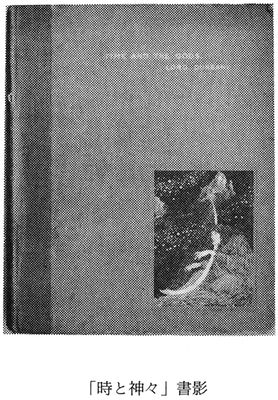
こうしてラヴクラフトはボストンのルース社から刊行されていたダンセイニの著書を読みふけるようになり、ダンセイニに傾倒することますます深く、ついには「芸術性と高雅さはくらべようもありませんが、ダンセイニはわたし自身なのです。ダンセイニの宇宙的王国はわたしが生をおくる国土であり、古雅な屋根に月光がふりそそぐ、ダンセイニの静まりかえった麗しい遙かな景観は、わたしがよく知って慈しんでいる景観にほかならないのですから」（一九二三年六月三日付フランク・ベルナップ・ロング宛書簡）という心情を生みだすにいたった。敬愛する作家にただのめりこんでいただけではなく、冷静に評価していたことは、先にあげた『ロード・ダンセイニとその著作』や、『文学における超自然の恐怖』のダンセイニの項によって裏づけられている。
ラヴクラフトが高く評価したダンセイニの特質には、宇宙的な視点、簡潔でリリカルな文体、東洋の色彩、ヘレニズムの様式、テュートンの憂鬱、ケルトの憧憬があり、これらが間然するところなく融合して生みだされる創造神話の世界こそ、ラヴクラフトの心をとらえてはなさなかったのであった。ラヴクラフトがダンセイニから学びとったものが、由緒正しい文体と語彙を採用し、象徴表現を多用することで、古典の連想を可能ならしめるという、戦略的かつ多重的な技法であったことは、いくら強調しても強調しすぎることはないだろう。ラヴクラフトの作家としての出発点がここに見いだされるからだ。古典の連想とは、作品の奥行を重層的に深めることにほかならない。
〈挿絵:「ペナーガの神々」扉〉
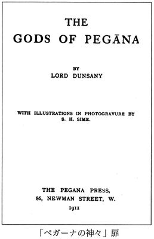
ラヴクラフトは『白い帆船』を皮切りに、独自のダンセイニ風掌篇を書きはじめるようになった。ダンセイニの技法に倣い、自分自身の世界を構築せんとして。いかにも詞は古きをしたい、心は新しきを求めたわけである。ただし、ラヴクラフトはこれだけでとどまりはしなかった。純粋な神話を生みだそうとする企ては、ラヴクラフトの最大の運動、壮大な規模の創造神話の構築へと展開する。これにともない、古典の連想に加え、自作の連想という技法が磨きぬかれていったことを見のがしてはなるまい。確かにラヴクラフトの創造神話は、ダンセイニの創造神話にその淵源の一つが認められるが、ダンセイニの創造神話を継承するものではなく、ビアースやチェンバースから学んだ自作の連想を可能ならしめる技法が自家薬籠中のものとなったとき、まさしくプロヴィデンスの作家はアイルランドの男爵をしのいだのである。激しい自己錬磨により、作家として山頂をきわめたラヴクラフトが、その後も孤高の営為を持続しつづけたことは、いまさら申すまでもなかろう。
〈挿絵:ダンセイニ〉
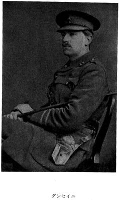
『白い帆船』 The White Ship
一九一九年の十一月に執筆され、同人誌〈ユナイテッド・アマチュア〉の一九一九年十一月号に発表された後、〈ウィアード・テイルズ〉一九二七年三月号に掲載された。
正確にいえば、本篇はラヴクラフトのダンセイニ風掌篇の第二作にあたる。前年春の『ポラリス』が、ダンセイニをいまだ知ることなく執筆されたダンセイニ風掌篇という、特異な地位を占めるからだ。ラヴクラフトはこの『ポラリス』をほぼ夢に基づいて書きあげており、ダンセイニとの気質的な相似をうかがわせる。だからこそ、ダンセイニとの文学上のはじめての遭遇が、「あたかも電気ショックをうけたかのよう」であり、「ダンセイニはわたし自身なのです」との心境にまでいたるのだろう。
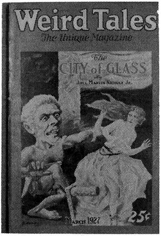
キングスポートのノース・ポイントの灯台守を主人公とする本篇は、ダンセイニを知った後、その影響、ことに短編集『夢想家の物語』に収録された『ヤン河での無為な日々』の影響を強くうけて執筆された。ちなみにダンセイニの短編では、夢の国を流れるヤン河を、〈河の鳥〉号と呼ばれる船で海にくだる次第が語られ、漕ぎ手たちが歌い、さまざまな都市があらわれる。これらを巧みにとりこんだ『白い帆船』は、舞台を大洋にかえて希望の地を目指す破綻の航海を描き、『ヤン河での無為な日々』には乏しかった物語の流れを豊かなものにするだけにとどまらず、寓話の域に達する象徴表現を駆使することにより、まったくの別箇の作品として、敬愛する作家の本歌どりを見事に成功させた。掌篇ながらも、模倣ではなく独創を目指すラヴクラフトの面目躍如たる出来栄えである。
〈挿絵:「ヤン河での無為な日々」挿絵〉
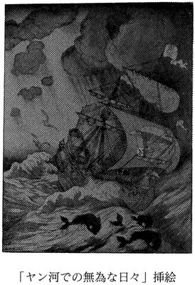
本篇に関し、ダレル・シュワイツァーは『ラヴクラフトとロード・ダンセイニ』において、「多くを求めすぎる者は何も得ない」という教訓をひきだし、深遠な思想的深みはないと評する一方、ダーク・Ｋ・モシグは『心理学的オデュッセイアとしての白い帆船』において、ユング心理学を武器に個性化の過程を描いたものとして本篇を分析している。わたしの見るところ、モシグは急所をついていながら、的を射ぬいてはいない。本篇の解読にあたって考慮にいれるべきは、執筆に先立つ一九一九年三月に、ラヴクラフトの母が神経衰弱になって病院に収容されたことである。詳しくは別席の閑談にゆだねるが、ラヴクラフトの母への思いと父への思いの葛藤こそが、本篇の駆動力なのだ。
ラヴクラフトが珍しく本篇において、父をもちだしていることを見のがしてはならない。すなわち、「祖父の時代には航行する船は多く、父の時代になるとその数もへり」のくだりであり、成功した実業家である母方の祖父フィップル・フィリップスと、一介のセールスマンにすぎなかった父ウィンフィールド・スコット・ラヴクラフトの姿がすかし見えるだろう。この父は精神に異常をきたして入院した後、ラヴクラフトが八歳のときに亡くなった。そして母もまた父と同じありさまで、父と同じ病院に収容された事実は、ラヴクラフトの心に不安の暗影を落とさなかったはずがない。孤独な灯台守が母の象徴としての大洋に乗りだし、希望の地を目指すこのオデュッセイアの意味するものは、ラヴクラフトの置かれた状況に照らしてあまりにも明白である。この旅を破綻させたことは、教訓をたれるためではなく、ラヴクラフトの透徹した眼差を証すものといえよう。
先に引用したラヴクラフトの発言、「ダンセイニの宇宙的王国はわたしが生をおくる国土」であるとする発言は、ラヴクラフトが現実ではなく夢想の世界に生をつないでいたことを意味するものである。ダンセイニ風掌篇とはこの夢想の世界を紙上に喚起する企てにほかならず、美しい夢の運動ではあるが、この夢想の世界は慈しみ育まれたものであるだけに、おのずからラヴクラフトの心情をもっとも無防備な形で露呈しかねない危険をはらんでいた。その典型的な例がこの『白い帆船』である。ダンセイニ風掌篇の執筆がとだえることになった所以は、技巧上の問題や新たな創造神話の展開に加えて、ラヴクラフトがこの危険を見ぬいていたか、薄うす感じとっていたためもあるといえるだろう。
『ウルタールの猫』 The Cats of Ulthar
一九二〇年の六月十五日に書きあげられ、同人誌〈トライアウト〉の一九二〇年十一月号に発表された後、〈ウィアード・テイルズ〉一九二六年二月号に掲載され、さらに同誌の一九三三年二月号に再録された。一九三五年にはラヴクラフトの若き友人ロバート・Ｈ・パーロウが四十部限定の小冊子として刊行したほか、〈ファンタスティック・ノヴェルズ〉一九五一年一月号にもハネス・ボクの挿絵を付して再録されている。
猫に対する愛情にみなぎる本篇に関して、一九二〇年五月二十一日付ラインハート・クライナー宛書簡に興味深い言及がある。ある夜ラヴクラフトの自宅に黒猫が訪れ、この猫をかわいがっているうちに猫のいわんとするところが伝わり、これによって「単純ながらも凶まがしいプロット」が脳裡に形をなしたというのだ。ラヴクラフトは具体的に、「いずれ同人誌に『ウルタールの猫』と題する物語を」発表することになるだろうと記している。本篇の冒頭近くにある、「猫は古代エジプトで......スフィンクスが忘れはてたことをおぼえている」の文章は、この書簡からそっくりそのまま流用されたものなので、既に本篇はメモの形にせよ一部が書きあげられていたのだろう。
〈挿絵:ハネス・ボク画〉
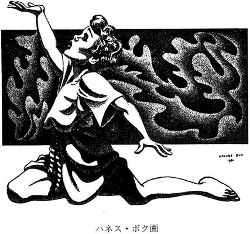
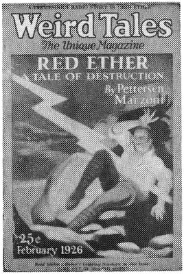
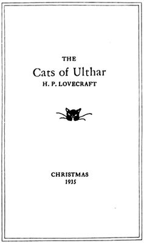
ダンセイニが犬を好んだのにひきかえ、ラヴクラフトは猫を愛してやまなかった。若い友人ロバート・ブロックに、その短編『書斎での自殺』において、猫の神バストの神官、狂えるラヴェ＝ケラフと記されてはよろこび、猫を目覚めさせるにしのびないとして、眠る猫を膝に乗せたまま夜を明かしたというラヴクラフトなればこそ、異国情緒を巧みにとりこんだこの『ウルタールの猫』を書きえたといえるだろう。ラヴクラフトが後年この時期の自作にふれて、本篇をもっとも好んでいる所以である。人間ラヴクラフトをしのばせる佳品といえよう。なお、ラヴクラフトに本篇を書かせることになった黒猫は、後に『未知なるカダスを夢に求めて』にも登場することを指摘しておく。
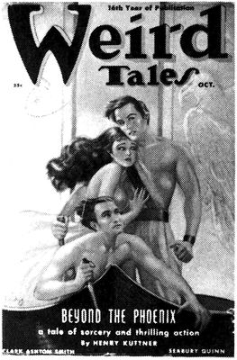
『蕃神』 The Other Gods
一九二一年の八月十四日に書きあげられ、同人誌〈ファンタシー・ファン〉の一九三三年十一月号に発表された後、〈ウィアード・テイルズ〉一九三八年十月号に掲載された。
人間に見られることを潔しとせずに在所をかえていく神々と、その姿をうかがわんとする大胆な賢人の交わるところ、てきめんに神の怒りがくだらずにはおかない道理を描いた本篇は、たちどころにプシュケーとエロスの物語や、エデンの園からの追放、青髯の話を連想させ、先のシュワイツァーが教訓をひきだしていないのが不思議に思われるほどだが、それほどまでに本篇の寓話としての結構が整っているということなのだろう。ラヴクラフト自身はこうした一連のダンセイニ風掌篇を「擬似民話」（一九三一年六月十五日付Ｊ・ヴァーナン・シェイ宛書簡）と捉えていたことを申しそえておく。本篇は長じたアタルを登場させることで『ウルタールの猫』に、厳寒の地ロマールの『ナコト写本』にふれることで『ポラリス』に通じる。綜合化は既にはじまっているのである。
『セレファイス』 Celephais
一九二〇年の十一月に執筆され、同人誌〈レインボー〉の一九二二年五月号に発表され、半商業誌〈マーヴェル・テイルズ〉の一九三四年五月号に掲載された後、〈ウィアード・テイルズ〉一九三九年六・七月合併号に再録された。
没落の家系に属する孤独な主人公の美しくもはかない夢への没入を描いた本篇は、一九二一年十二月十四日付クライナー宛書簡によれば、「ペーソスの糸で最近の夢のいくつかを織りあげたもの」だそうだが、ダンセイニの短編集『驚異の書』に収められた『トマス・シャップ氏の戴冠』との類似点を見すごすわけにはいかない。この短編ではロンドンの商人シャップが、かまびすしい生活から空想の世界へと逃避していくありさまが語られ、ついに驚異の国の王に即位したところで、精神病院に収容されていることがほのめかされるのである。しかしラヴクラフトの『セレファイス』はこれにくらべて、夢に遁れざるをえない主人公の動機づけに説得力があり、夢の世界の描写はきめこまやかで、作品の結構も整い無駄がない。『白い帆船』につづいて企てられたダンセイニの本歌どりが、またしても成功したわけである。
〈挿絵:〈ウィアード・テイルズ〉目次〉
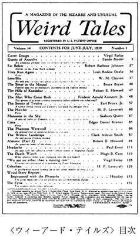
主人公の名前がついに明かされず、夢の世界の通り名であるクラネスとしてのみ呼ばれるのは、ラヴクラフトが自らの心情を主人公に仮託している証しでもあり、この思いいれの深さが本篇を磨きぬかれた名品とするにあずかって力あったのだろう。現実の世界における敗北と夢の世界における勝利という、あまりにも安易な図式が、退行の夢にほかならないユートピア願望をひきずりながらも、シニカルな結末によって劇的な効果をあげているのは、ラヴクラフトのリアリズム至上主義のなせるわざである。
なお、本篇においては不思議にもインスマスがイギリスの土地とされているが、『未知なるカダスを夢に求めて』の記述にしたがえば、これはコーンウォール半島に設定されているものらしい。はじめてレンが言及されるとともに、本巻収録のダンセイニ風掌篇の舞台となっていた土地が夢の世界として明確に位置づけられ、主人公への仮託がなされていることにより、この『セレファイス』はラヴクラフトの理想化された分身、夢見る人ランドルフ・カーターの物語を先取りする、記念すべき作品といえよう。
〈挿絵:「トマス・シャップ氏の戴冠」挿絵〉
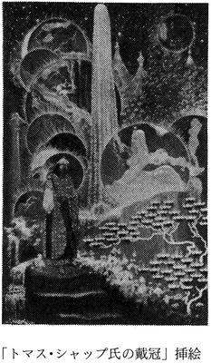
『ランドルフ・カーターの陳述』 The Statement of Randolph Carter
一九一九年十二月に執筆され、同人誌〈ヴァグラント〉の一九二〇年五月号に発表された後、〈ウィアード・テイルズ〉一九二五年二月号に掲載され、さらに同誌の一九三七年八月号にも再録された。
〈挿絵:「ランドルフ・カーターの陳述」執筆原稿〉
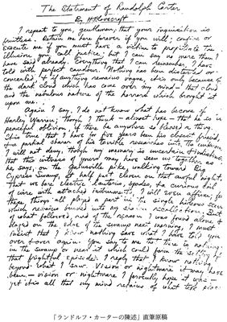
神秘家ハーリイ・ウォーランと古びた墓地の墓をあばき、見えざる恐怖に襲われた経緯を陳述する本篇は、アルフレッド・ギャルピンとウインター・モーの両者に宛てた一九一九年十二月十一日付書簡によれば、実際に見た夢をそのまま小説として書きあげたものらしい。もちろん夢のなかにあらわれたのは、ウォーランとカーターではなく、ラヴクラフトの友人である愛書家サムエル・ラヴマンとラヴクラフト自身だが、まさしくこのふたりは小説に描かれたとおりの行動をとり、ラヴクラフトは地底から「莫迦め、ラヴマンは死んだわ」と告げる声を聞いて目を覚ましたという。
夢をそのまま利用した本篇をラヴクラフトはよほど気にいっていたらしく、「最善をつくした作品」であるとか、「最高作」であるとかいった発言が、長期間にわたってさまざまな書簡に認められる。恐怖小説としての完成度がそれほど高いものであるかどうか、慄然たる夢の印象のなまなましさが、さしものラヴクラフトの目をくもらせたのかもしれない。陳述という形式は後に『戸口にあらわれたもの』でさらに洗練されたものになる。本篇はランドルフ・カーターのデヴュー作でありながらも、まだ夢見る人としてのカーターの姿はたちあらわれてはいない。
『名状しがたいもの』 The Unnamable
一九二三年に執筆され、〈ウィアード・テイルズ〉一九二五年七月号に発表された。
名状しがたいものに関する議論がはからずも名状しがたいものを招来するにいたる顛末を描いた本篇は、同人誌〈ヴァグラント〉の最終号に掲載が予定されていたが、発行者Ｗ・ポール・クックの手もと不如意と健康状態の悪化により、刊行が遅延しているあいだに、〈ウィアード・テイルズ〉に売れたいきさつがある。一九二七年六月に投函されたバーナード・オースティン・ドゥワイアー宛書簡には、本篇についての詳しい言及があり、それによれば、ラヴクラフトはコットン・マザーの『アメリカにおけるキリストの大いなる御業』にある流言に目をつけ、これを肉づけすることを目論見、ニューイングランドの伝承を加味して、この『名状しがたいもの』を書きあげたという。
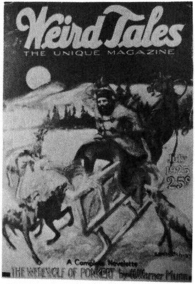
この『名状しがたいもの』によって、ランドルフ・カーターはいよいよラヴクラフトの分身の姿をとりはじめた。本文中ただ一度カーターと呼びかけられているだけで、本篇をランドルフ・カーターものと断定するのは乱暴な話に聞こえるかもしれないが、夢見る人としてのランドルフ・カーターが確立される『銀の鍵』には、本篇がアーカムでのエピソードとして紹介されているので、本篇のカーターはまさしくランドルフ・カーターに相違ないのである。なお、アーカム・ハウス社から刊行された『閉ざされた部屋』には、本篇の舞台をプロヴィデンスのセント・ジョン墓地であるとして、その写真まで掲載されているが、ラヴクラフト本人が一九三四年二月十四日付ドゥエイン・リメル宛書簡で、セイレムのセント・チャーター墓地であると特定していることを申しそえておく。ラヴクラフトによれば、この墓地の毀れた墓石近くには古びた家屋があり、「墓地の中央近くの碑銘も読めない墓石を呑みこまんとする柳も存在する」という。いまさら申すまでもなく、セイレムとはアーカムのモデルとなった魔女狩りの街である。
『銀の鍵』 The Silver Key
一九二六年に執筆され、〈ウィアード・テイルズ〉一九二九年一月号に発表された。
この作品によってランドルフ・カーターはついに、ラヴクラフトの理想化された分身となるにいたった。さらにいえば、望みどおりのことをおこなえるだけの資産をもつカーターは、『セレファイス』における没落の名家の末裔クラネスと、決定的に境遇が異なっているとはいえ、『銀の鍵』の構成から判断するかぎり、本篇は主人公をカーターに置きかえての『セレファイス』の再話とみなすことができる。カーターを資産家と設定したことにより、夢に対するこだわりの説明をあれだけの長さにわたってなさねばならなくなったのだろう。その結果は自らの心情告白となった。
〈挿絵:「銀の鍵」挿絵〉
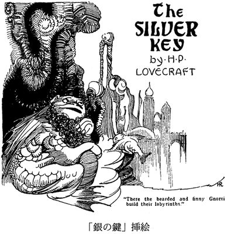
もちろんラヴクラフトは再話をおこなうだけにとどまらず、銀の鍵という新しい象徴的オブジェをもちだし、物語にひねりを加えることに成功している。この銀の鍵が『セレファイス』の再話をおこなわせた原動力であるかのごとくだが、『銀の鍵』の執筆された年の四月に、ソーニャとの結婚生活が破綻したことから、ラヴクラフトがついにニューヨークをひきあげて故郷のプロヴィデンスにもどった事実を忘れてはならない。正確な執筆月日がわからないにせよ、少なくとも、故郷にもどれるかもしれないという見込、あるいはもどりえた喜びのいずれかが、この作品を生みだす原動力の一つであったとはいえるだろう。既に『レッド・フックの恐怖』によって悪魔祓いをしていながらも、さらに本篇を書かざるをえなかったラヴクラフトの心中は察するにあまりある。
『銀の鍵の門を越えて』 Through the Gates of the Silver Key
一九三三年の四月に書きあげられ、エドガー・ホフマン・プライスとの合作として、〈ウィアード・テイルズ〉一九三四年七月号に発表された。
アーカム・ハウス社刊行の『猫についてのこと』に収録された、プライスの『ラヴクラフトだった男』は、本篇が成立するにいたった事情を克明に告げる情報に乏しく、ディ・キャンプの『ラヴクラフト伝』とラヴクラフトの書簡を基に構成するなら、一九三二年の五月にラヴクラフトはニューオリンズにまで足をのばす旅をおこなった。このことを知ったロバート・アーヴィン・ハワードから、ラヴクラフトの泊まるホテルを電報で伝えられたことで、プライスがホテルにラヴクラフトをたずね、自宅に招き、『銀の鍵』を愛読していることを告げ、失踪したランドルフ・カーターの後日談の合作をもちかけたのである。ラヴクラフトがこれに応じたらしく、プライスは九月末に『幻影の王』と題する六千語の短編の草稿をラヴクラフトに送付した。この草稿は現在ブラウン大学ジョン・ヘイ図書館のラヴクラフト記念文庫に保存されているばかりか、同人誌〈クトゥルーの窖〉の一九八二年に刊行された第十号が全文を掲載している。
さて、プライスの草稿をうけとったラヴクラフトは、十月三日付書簡で、礼儀上『幻影の王』を褒めてはいるが、この草稿の改訂にいつとりかかれるかについては言葉をにごし、『銀の鍵』の後日談としての欠陥をさまざまに指摘している。穏やかな筆致だが、ほとんど面罵にひとしい。察するに、ラヴクラフトはもともと合作の企てを気にいらず、ことわる機会がないままに草稿を送られるはめになり、これがアイデアだけはすぐれているものの、小説としては未熟なものにすぎないので、辟易したというところだろう。小説としての欠陥については、プライスが合作の土台となる草稿として、あまり手をくわえることなく性急に書きあげたのかもしれないことを、プライスの名誉のために申しそえておく。プライスから『幻影の王』の書き直しを求められること度重なり、ラヴクラフトはクラーク・アシュトン・スミスにまかせることまで考えるが、翌年三月になって、自分の文体を使いまったく新たな形式で書きはじめる決意をつけ、四月についに書きあげたのである。
〈挿絵:〈ウィアード・テイルズ〉目次〉
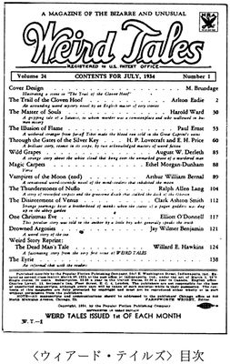
ダンセイニの影響をうけた最後の作品といってさしつかえない『銀の鍵』との繋りからも、既に使わなくなって久しい技法を復活させて、これをプライスのアイデアと折り合わせることに、もっとも腐心したらしい。その結果が本篇であるからには、ラヴクラフトの苦労も十分にむくわれたといえるだろう。プライスの『幻影の王』がどれだけ生かされているかといえば、本篇の要といえる原型論はプライスのアイデアを踏襲したものである。ただしプライスはこれを対話の形で展開しており、いかにも教室の講義くさいとして、ラヴクラフトが徹底的に書きあらためた。プライスの文章がほぼそのまま使用されているものとしては、アイレムについての言及、『ネクロノミコン』からの引用、〈古のものども〉の司教冠の描写等、もっぱら〈第一の門〉を越えてからの出来事にかぎられており、その前後はラヴクラフトが折り合いをつけるべく考えだしたのである。ド・マリニーの邸における、ボクーラ絨毯や鋳物彫の鼎は、ラヴクラフトがニューオリンズのプライスの自宅で目にしたものであり、プライスをよろこばせようとしたのだろう。しぶしぶながらとりかかった合作ではあるが、プライスの草稿を全面的に書きあらためたこの『銀の鍵の門を越えて』は、結果的にラヴクラフトの面目をほどこすものとなった。
『未知なるカダスを夢に求めて』 The Dream-Quest of Unknown Kadath
一九二六年八月から翌年一月二十二日にかけて執筆されながらも、生前発表されたことはなく、オーガスト・ダーレスの経営する出版社アーカム・ハウス社の季刊誌、〈アーカム・サンプラー〉の第一号（一九四八年冬）から第四号（同年秋）にかけて掲載された。
ニューヨークから故郷プロヴィデンスにもどったラヴクラフトが、発表するつもりもなく書きつづけた唯一の長編冒険小説が本篇である。ダンセイニ風掌篇の舞台となったさまざまな土地が夢の国に完全に位置づけられ、神々を探し求めるランドルフ・カーターの遍歴が連綿と語りつがれるこの作品は、『ピックマンのモデル』で行方をくらましたリチャード・ピックマンが食屍鬼としてその姿をあらわすなど、これまでに執筆発表されたラヴクラフトの作品の登場人物が顔をそろえるばかりか、後に展開する創造神話に通底することからも、気宇壮大な綜合化を目指す企てにほかならない。ラヴクラフト自身はこれを「ピカレスク風の冒険小説」（一九二六年十二月付オーガスト・ダーレス宛書簡）として書く狙いをもっていたが、まことにカーターの旅をさまたげる悪しき存在はおびただしく、さわやかな夢の国は不断に暗雲の気配たちこめて、ピクチュアレスクの作家であったラヴクラフトの描写の技巧がその真価を発揮しているだけに、明暗の対比は目にしみるほどに際立ち、カーターをナイアルラトホテップのもとに拉致せんとする陰謀渦巻くなか、捕縛あり救援あり、ときに船が月に飛び、山脈が大地を闊歩し、いくさの轟き消えいることもなければ、面妖な種族の登場もとどまるところを知らず、カーターの進むところたちまち波瀾が波瀾を呼び、確かに冒険小説の醍醐味はいかんなく発揮された。
〈挿絵:〈アーカム・サンプラー〉〉
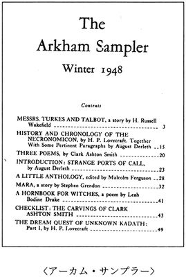
古典の連想を可能ならしめる技法の駆使をはじめ、物語の構成等について、書きたいことはいろいろあるが、書きだせばきりがないので、作品分析は読者に委ね、解題として最小限必要なことを記すにとどめておく。まず、この『未知なるカダスを夢に求めて』の位置づけだが、これが夢の世界に自在に入りこめた時期の出来事であって、『銀の鍵』が夢の世界に入りこめないまま銀の鍵にたよらざるをえなくなった事情を明かしていることからも、『銀の鍵』の出来事が起こるまえ、すなわちカーターが三十になるまえのものであるはずだ。本篇の末尾のナイアルラトホテップの怒りからも、これによってカーターが夢の世界に入れなくなったと考えるのが至当なところだろう。『銀の鍵』のときには判断を留保したが、この『未知なるカダスを夢に求めて』の場合は何らはばかることなく断言できる。ラヴクラフトは故郷プロヴィデンスにもどれた喜びを胸に本篇をひたすら書きあげたのである。ニューヨークの悪夢をたちきり、新しく生まれるために。本篇以後に発表された名品の数かずがその証拠ではないか。
なお、夢の国の地図がいくつか作成されており、クトゥルー・ゲームのケイオシャム社から発売された『夢の国』に付された地図が、ごくわずかに綴りの誤りが認められながらも、もっとも詳細で完成度の高いものである。ただこれはあまりに大きすぎて、ここに縮小掲載したところで、虫眼鏡を使っても判読不可能と思われるため、これにかわる地図を三種あげておく。
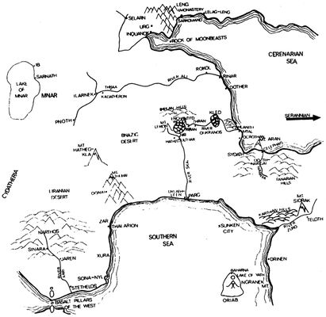
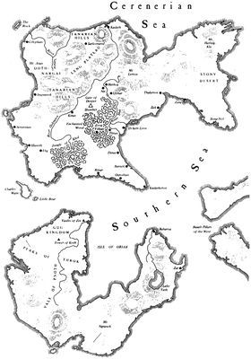
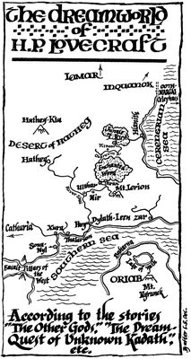